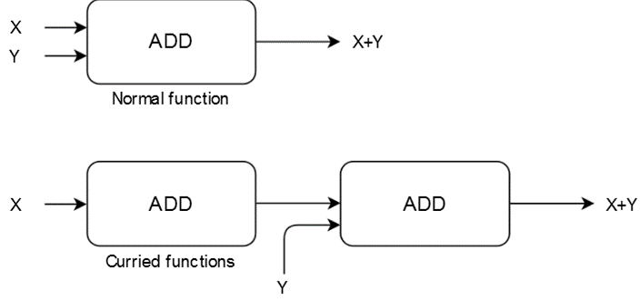
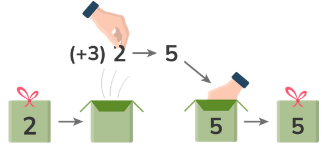
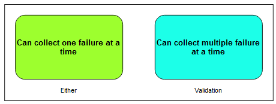
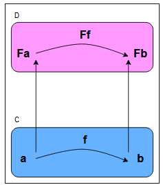

The TypeScript MDBook
The Concise TypeScript Book provides a comprehensive and succinct overview of TypeScript’s capabilities. It offers clear explanations covering all aspects found in the latest version of the language, from its powerful type system to advanced features. Whether you’re a beginner or an experienced developer, this book is an invaluable resource to enhance your understanding and proficiency in TypeScript.
This book is completely Free and Open Source.
If you found this TypeScript book valuable and wish to contribute, consider supporting my efforts via cryptocurrency. Thanks!
0xde5D732a5AB44832E1c69b18be30834639F44A2c
Downloads
You can also download the Epub version here:
https://github.com/armanriazi/typescript-all-in-one/tree/main/downloads
Introduction
Welcome to The Concise TypeScript Book! This guide equips you with essential knowledge and practical skills for effective TypeScript development. Discover key concepts and techniques to write clean, robust code. Whether you’re a beginner or an experienced developer, this book serves as both a comprehensive guide and a handy reference for leveraging TypeScript’s power in your projects.
About the Author
Arman Riazi is an experienced Senior Backend-end Developer with a passion for Rust, R&D and Blockchain since 2012. You can reach Arman Riazi on the following platforms:
- LinkedIn: <https://www.linkedin.com/showcase/armanriazi
- GitHub: https://github.com/armanriazi
- Twitter: https://twitter.com/armanriazi.meta
- Email: armanriyazi.github.io📧gmail.com
Introduction
TypeScript is a superset of JavaScript. It includes all of the features of JavaScript and adds a few additional features like Generics and Interfaces. Dynamically-typed languages are those in which a variable’s type is checked during runtime. This contrasts with static-typed languages in which the variable’s type is checked during compile time.
JavaScript is an interpreted language, and as such has benefits but also drawbacks. Interpreted languages do not have a compilation step and therefore can’t check that all code written has no minor mistakes in spelling or syntax before it is actually run. TypeScript is a strongly typed, object-oriented language that uses a compiler to generate JavaScript. The compiler will identify errors within the code base even before it is run in an interpreter.
slowly start to rename js files into a ts file. The strict typing syntax is also known as syntactic sugar, which can be sprinkled on top of any JavaScript code as and when we please.
The class keyword in TypeScript, similar to JavaScript, is often referred to as syntactic sugar. It was introduced in ECMAScript 2015 (ES6) to offer a more familiar syntax for creating and working with objects in a class-based manner. However, it’s important to note that TypeScript, being a superset of JavaScript, ultimately compiles down to JavaScript, which remains prototype-based at its core.
TypeScript Features
TypeScript can compile code to any released version of JavaScript since ECMAScript 3 (1999). This means that TypeScript can transpile code from the latest JavaScript features to older versions, a process known as Downleveling. This allows the usage of modern JavaScript while maintaining maximum compatibility with older runtime environments.
It’s important to note that during transpilation to an older version of JavaScript, TypeScript may generate code that could incur a performance overhead compared to native implementations.
Here are some of the modern JavaScript features that can be used in TypeScript:
- ECMAScript modules instead of AMD-style “define” callbacks or CommonJS “require” statements.
- Classes instead of prototypes.
- Variables declaration using “let” or “const” instead of “var”.
- “for-of” loop or “.forEach” instead of the traditional “for” loop.
- Arrow functions instead of function expressions.
- Destructuring assignment.
- Shorthand property/method names and computed property names.
- Default function parameters.
By leveraging these modern JavaScript features, developers can write more expressive and concise code in TypeScript.
When we run a TypeScript file, the TypeScript compiler is responsible for transpiling it into a corresponding JavaScript file. This process is known as transpiling, allowing us to run our TypeScript code in environments that only support JavaScript, such as a web browser or a Node server.
The use of the backtick (`) to delineate strings gives us the ability to inject values directly into the string, as follows:
var version = `ES6`;
console.log(`Hello ${version} TypeScript`);
Why TypeScript
There are two main goals of TypeScript:
- Provide an optional type system for JavaScript.
- Provide planned features from future JavaScript editions to current JavaScript engines
The desire for these goals is motivated below.
The TypeScript type system
You might be wondering “Why add types to JavaScript?”
Types have proven ability to enhance code quality and understandability. Large teams (Google, Microsoft, Facebook) have continually arrived at this conclusion. Specifically:
- Types increase your agility when doing refactoring. It’s better for the compiler to catch errors than to have things fail at runtime.
- Types are one of the best forms of documentation you can have. The function signature is a theorem and the function body is the proof.
TsDocs JSDoc Reference
When working with a JavaScript code base, it is possible to help TypeScript to infer the right Type by using JSDoc comments with additional annotation to provide type information.
Example:
/**
- [x] Computes the power of a given number
- [x] @constructor
- [x] @param {number} base – The base value of the expression
- [x] @param {number} exponent – The exponent value of the expression
*/
function power(base: number, exponent: number) {
return Math.pow(base, exponent);
}
power(10, 2); // function power(base: number, exponent: number): number
// console.log(10 ** 2) //eq. 10^2
Full documentation is provided to this [link](<https://www.typescriptlang.org/docs/handbook/jsdoc-supported-types.html)
From version 3.7 it is possible to generate .d.ts type definitions from JavaScript JSDoc syntax. More information can be found here
TypeScript Style Guide and Coding Conventions
An unofficial TypeScript Style Guide
People have asked me for my opinions on this. Personally I don’t enforce these a lot on my teams and projects but it does help to have these mentioned as a tiebreaker when someone feels the need to have such strong consistency. There are other things that I feel much more strongly about and those are covered in the tips chapter.
Key Sections:
- Variable
- Class
- Interface
- Type
- Namespace
- Enum
nullvs.undefined- Formatting
- Single vs. Double Quotes
- Tabs vs. Spaces
- Use semicolons
- Annotate Arrays as
Type[] - File Names
typevsinterface==or===
Variable and Function
- Use
camelCasefor variable and function names
Reason: Conventional JavaScript
Bad
var FooVar;
function BarFunc() { }
Good
var fooVar;
function barFunc() { }
Class
- Use
PascalCasefor class names.
Reason: This is actually fairly conventional in standard JavaScript.
Bad
class foo { }
Good
class Foo { }
- Use
camelCaseof class members and methods
Reason: Naturally follows from variable and function naming convention.
Bad
class Foo {
Bar: number;
Baz() { }
}
Good
class Foo {
bar: number;
baz() { }
}
Interface
- Use
PascalCasefor name.
Reason: Similar to class
- Use
camelCasefor members.
Reason: Similar to class
- Don’t prefix with
I
Reason: Unconventional.
lib.d.tsdefines important interfaces without anI(e.g. Window, Document etc).
Bad
interface IFoo {
}
Good
interface Foo {
}
Type
- Use
PascalCasefor name.
Reason: Similar to class
- Use
camelCasefor members.
Reason: Similar to class
Namespace
- Use
PascalCasefor names
Reason: Convention followed by the TypeScript team. Namespaces are effectively just a class with static members. Class names are
PascalCase=> Namespace names arePascalCase
Bad
namespace foo {
}
Good
namespace Foo {
}
Enum
- Use
PascalCasefor enum names
Reason: Similar to Class. Is a Type.
Bad
enum color {
}
Good
enum Color {
}
- Use
PascalCasefor enum member
Reason: Convention followed by TypeScript team i.e. the language creators e.g
SyntaxKind.StringLiteral. Also helps with translation (code generation) of other languages into TypeScript.
Bad
enum Color {
red
}
Good
enum Color {
Red
}
Null vs. Undefined
- Prefer not to use either for explicit unavailability
Reason: these values are commonly used to keep a consistent structure between values. In TypeScript you use types to denote the structure
Bad
let foo = { x: 123, y: undefined };
Good
let foo: { x: number, y?: number } = { x:123 };
- Use
undefinedin general (do consider returning an object like{valid:boolean, value?:Foo}instead)
Bad
return null;
Good
return undefined;
- Use
nullwhere it’s a part of the API or conventional
Reason: It is conventional in Node.js e.g.
errorisnullfor NodeBack style callbacks.
Bad
cb(undefined)
Good
cb(null)
- Use truthy check for objects being
nullorundefined
Bad
if (error === null)
Good
if (error)
- Use
== null/!= null(not===/!==) to check fornull/undefinedon primitives as it works for bothnull/undefinedbut not other falsy values (like'',0,false) e.g.
Bad
if (error !== null) // does not rule out undefined
Good
if (error != null) // rules out both null and undefined
Formatting
The TypeScript compiler ships with a very nice formatting language service. Whatever output it gives by default is good enough to reduce the cognitive overload on the team.
Use tsfmt to automatically format your code on the command line. Also, your IDE (atom/vscode/vs/sublime) already has formatting support built-in.
Examples:
// Space before type i.e. foo:<space>string
const foo: string = "hello";
Quotes
- Prefer single quotes (
') unless escaping.
Reason: More JavaScript teams do this (e.g. airbnb, standard, npm, node, google/angular, facebook/react). It’s easier to type (no shift needed on most keyboards). Prettier team recommends single quotes as well
Double quotes are not without merit: Allows easier copy paste of objects into JSON. Allows people to use other languages to work without changing their quote character. Allows you to use apostrophes e.g.
He's not going.. But I’d rather not deviate from where the JS Community is fairly decided.
- When you can’t use double quotes, try using back ticks (`).
Reason: These generally represent the intent of complex enough strings.
Spaces
- Use
2spaces. Not tabs.
Reason: More JavaScript teams do this (e.g. airbnb, idiomatic, standard, npm, node, google/angular, facebook/react). The TypeScript/VSCode teams use 4 spaces but are definitely the exception in the ecosystem.
Semicolons
- Use semicolons.
Reasons: Explicit semicolons helps language formatting tools give consistent results. Missing ASI (automatic semicolon insertion) can trip new devs e.g.
foo() \n (function(){})will be a single statement (not two). TC39 warning on this as well. Example teams: airbnb, idiomatic, google/angular, facebook/react, Microsoft/TypeScript.
Array
- Annotate arrays as
foos: Foo[]instead offoos: Array<Foo>.
Reasons: It’s easier to read. It’s used by the TypeScript team. Makes easier to know something is an array as the mind is trained to detect
[].
Filename
Name files with camelCase. E.g. utils.ts, map.ts etc.
Reason: Conventional across many JS teams.
When the file exports a component and your framework (like React) wants component to be PascalCased, use pascal case file name to match e.g. Accordion.tsx, MyControl.tsx.
Reason: Helps with consistency (little overthought required) and its what the ecosystem is doing.
== or ===
Both are mostly safe for TypeScript users. I use === as that is what is used in the TypeScript codebase.
Getting Started With TypeScript
TypeScript compiles into JavaScript. JavaScript is what you are actually going to execute (either in the browser or on the server). So you are going to need the following:
- TypeScript compiler (OSS available in source and on NPM)
- A TypeScript editor (you can use notepad if you want but I use vscode 🌹 with an extension I wrote. Also lots of other IDES support it as well)
Configuration
NPM Security
The public npm packages are scanned by security team worldwide and issues get reported to npm team. They then release security advisories detailing the issue and potential fixes. Commonly the fix is simply updating the package.
You can run an audit on your node project by simply running npm audit. This will highlight any vulnerabilities that might exist in the package / dependencies of the package. e.g.
┌───────────────┬──────────────────────────────────────────────────────────────┐
│ Low │ Regular Expression Denial of Service │
├───────────────┼──────────────────────────────────────────────────────────────┤
│ Package │ debug │
├───────────────┼──────────────────────────────────────────────────────────────┤
│ Dependency of │ jest [dev] │
├───────────────┼──────────────────────────────────────────────────────────────┤
│ Path │ jest > jest-cli > istanbul-lib-source-maps > debug │
├───────────────┼──────────────────────────────────────────────────────────────┤
│ More info │ https://nodesecurity.io/advisories/534 │
└───────────────┴──────────────────────────────────────────────────────────────┘
Note that commonly the issues are found in development dependencies (e.g. jest in this case). Since these aren’t are a part of your production deployments, most likely your production application is not vulnerable. But still good practice to keep vulnerabilities to 0.
Simply add npm audit (the command exist with error code 1 in case of error) as a part of your deployment to ensure the projects stay up to date.
NPM Scripts
What is with -- in scripts
You can build a base script with a limited set of command line arguments e.g. here is a script target that runs tsc for the TypeScript compiler:
{
"scripts": {
"build": "tsc -p ."
}
}
You can create a build:watch target to run tsc -p . -w or alternatively asking npm to run build with the additional -w flag like so:
{
"scripts": {
"build": "tsc -p .",
"build:watch": "npm run build -- -w"
}
}
You can pass in as many flags as you want after -- e.g. in the following example build:more has the same effect as something --foo -f -d --bar
{
"scripts": {
"build": "something --foo",
"build:more": "npm run build -- -f -d --bar"
}
}
TypeScript project configuration and TSC commands
This –init option will automatically generate the tsconfig.json file within the current directory.
tsc --init
> Output:
{
"compilerOptions": {
"target": "ES3",
"module": "commonjs",
"strict": true,
"esModuleInterop": true,
"skipLibCheck": true,
"forceConsistentCasingInFileNames": true
}
}
Now that we have changed the target version of JavaScript that we wish to generate for, which is now ES6( “target”: “ES6”,), let’s take a look at the output of the compiler in the file hello_typescript.js, as follows:
"use strict";
var version = `ES6`;
console.log(`Hello ${version} TypeScript`);
Ignoring the “use strict” line at the top of this file, we can see that the generated JavaScript has not changed from our original TypeScript file.
This shows that the compiler is correctly generating ES6-compatible JavaScript, even though we have not modified our original TypeScript file.
tsc -w hello.ts
TypeScript Version
Instead of using the stable TypeScript compiler we will be presenting a lot of new stuff in this book that may not be associated with a version number yet. I generally recommend people to use the nightly version because the compiler test suite only catches more bugs over time.
You can install it on the command line as
npm install -g typescript@next
And now the command line tsc will be the latest and greatest. Various IDEs support it too, e.g.
- You can ask vscode to use this version by creating
.vscode/settings.jsonwith the following contents:
{
"typescript.tsdk": "./node_modules/typescript/lib"
}
Getting the Source Code
The source for this book is available in the books github repository https://github.com/armanriazi/typescript-all-in-one/tree/master/code most of the code samples can be copied into vscode and you can play with them as is. For code samples that need additional setup (e.g. npm modules), we will link you to the code sample before presenting the code. e.g.
this/will/be/the/link/to/the/code.ts
// This will be the code under discussion
NPM Third Party
the package-lock.json file must also be committed to source control.
Semantic versioning
- Patch releases: 1.0 or 1.0.x or ~1.0.4
- Minor releases: 1 or 1.x or ^1.0.4
- Major releases: * or x
Also, the caret (^) at the start of the package version number in the package.json file. This is used to indicate what can be done if new versions of the package are found during an npm install step. If we use the caret (^), this means that npm will upgrade the package if a new minor version or patch version is found. So “^7.1.0” will upgrade if a minor version number “7.2.0” is found or if a new patch version “7.1.1” is found.
If we use the tilde ( ~ ) character at the start of the version number, as in “~7.1.0”, then only patch versions will be used if a new version is found. So, “~7.1.0” will upgrade if a new patch version “7.1.1” is found, but will not upgrade if a new minor version is found, as in “7.2.0”.
If we do not use a preceding character, and simply leave the version at “7.1.0”, then npm will not attempt to upgrade packages and will leave the version as stated.
When executing the tsc command locally, TypeScript will compile the code using the configuration specified in the nearest tsconfig.json file.
Here are some examples of CLI commands that run with the default settings:
tsc main.ts // Compile a specific file (main.ts) to JavaScript
tsc src/*.ts // Compile any .ts files under the 'src' folder to JavaScript
tsc app.ts util.ts --outfile index.js // Compile two TypeScript files (app.ts and util.ts) into a single JavaScript file (index.js)
Your JavaScript is TypeScript
There were (and will continue to be) a lot of competitors in Some syntax to JavaScript compilers. TypeScript is different from them in that Your JavaScript is TypeScript. Here’s a diagram:

However, it does mean that you need to learn JavaScript (the good news is you only need to learn JavaScript). TypeScript is just standardizing all the ways you provide good documentation on JavaScript.
- Just giving you a new syntax doesn’t help catch bugs - but might help you write cleaner / less bugs (e.g. CoffeeScript).
- Creating a new language abstracts you too far from your runtimes and communities - but might help on-board you easier if its an already familiar flavour (e.g. Dart - closer for Java / C# devs).
TypeScript is just JavaScript with docs.
JSNext is open to interpretation - not everything proposed for the next version of JS actually makes it to browsers. TypeScript only adds support for proposals once they reach stage 3.
Making JavaScript Better
TypeScript will try to protect you from portions of JavaScript that never worked (so you don’t need to remember this stuff):
[] + []; // JavaScript will give you "" (which makes little sense), TypeScript will error
//
// other things that are nonsensical in JavaScript
// - don't give a runtime error (making debugging hard)
// - but TypeScript will give a compile time error (making debugging unnecessary)
//
{} + []; // JS : 0, TS Error
[] + {}; // JS : "[object Object]", TS Error
{} + {}; // JS : NaN or [object Object][object Object] depending upon browser, TS Error
"hello" - 1; // JS : NaN, TS Error
function add(a,b) {
return
a + b; // JS : undefined, TS Error 'unreachable code detected'
}
Essentially TypeScript is linting JavaScript. Just doing a better job at it than other linters that don’t have type information.
You still need to learn JavaScript
That said TypeScript is very pragmatic about the fact that you do write JavaScript so there are some things about JavaScript that you still need to know in order to not be caught off-guard. Let’s discuss them next.
Note: TypeScript is a superset of JavaScript. Just with documentation that can actually be used by compilers / IDEs ;)
Equality
One thing to be careful about in JavaScript is the difference between == and ===. As JavaScript tries to
be resilient against programming errors == tries to do type coercion between two variables e.g. converts a
string to a number so that you can compare with a number as shown below:
However, the choices JavaScript makes are not always ideal. For example, in the below example the first statement is false
because "" and "0" are both strings and are clearly not equal. However, in the second case both 0 and the
empty string ("") are falsy (i.e. behave like false) and are therefore equal with respect to ==. Both statements
are false when you use ===.
[[Error_Equality]] [[Error_TS2367]]
console.log(5 == "5"); // true , TS Error
console.log(5 === "5"); // false , TS Error
console.log("" == "0"); // false , TS Error
console.log(0 == ""); // true , TS Error
console.log("" === "0"); // false , TS Error
console.log(0 === ""); // false , TS Error
> Output:
error TS2367: This comparison appears to be unintentional because the types 'number' and 'string' have no overlap.
Note that
string == numberandstring === numberare both compile time errors in TypeScript, so you don’t normally need to worry about this.
Similar to == vs. ===, there is != vs. !==
So ProTip: Always use === and !== except for null checks, which we cover later.
Structural Equality
If you want to compare two objects for structural equality ==/=== are not sufficient. e.g.
>tags: #Important [[Error_Equality]] [[Error_TS2839]]
console.log({a:123} == {a:123}); // False
console.log({a:123} === {a:123}); // False
To do such checks use the deep-equal npm package e.g.
> Output:
error TS2839: This condition will always return 'false' since JavaScript compares objects by reference, not value.
[[Library_Deep-Equal]]
import * as deepEqual from "deep-equal";
console.log(deepEqual({a:123},{a:123})); // True
However, quite commonly you don’t need deep checks and all you really need is to check by some id e.g.
type IdDisplay = {
id: string,
display: string
}
const list: IdDisplay[] = [
{
id: 'foo',
display: 'Foo Select'
},
{
id: 'bar',
display: 'Bar Select'
},
]
const fooIndex = list.map(i => i.id).indexOf('foo');
console.log(fooIndex); // Output 0
References
Beyond literals, any Object in JavaScript (including functions, arrays, regexp etc) are references. This means the following
Mutations are across all references
[[Error_TS2339]]
var foo = {};
var bar = foo; // bar is a reference to the same object
foo.baz = 123;
console.log(bar.baz); // JS Result: 123, TS Result : Error
> Output:
error TS2339: Property 'baz' does not exist on type '{}'.
Equality is for references
[[Error_TS2304]]
var foo = {};
var bar = foo; // bar is a reference
var baz = {}; // baz is a *new object* distinct from `foo`
console.log(foo === bar); //JS, TS Result: true
console.log(foo === baz); //JS, TS Result: false
> Output:
error TS2304: Cannot find name 'someglobal'.
this
Any access to this keyword within a function is controlled by how the function is actually called. It is commonly referred to as the “calling context.”
Here is an example:
[[Error_TS2683]]
function foo() {
console.log(this);
}
> Output:
error TS2683: 'this' implicitly has type 'any' because it does not have a type annotation.
foo(); // logs out the global e.g. `window` in browsers
let bar = {
foo
}
bar.foo(); // Logs out `bar` as `foo` was called on `bar`
So be mindful of your usage of this. If you want to disconnect this in a class from the calling context use an arrow function, more on that later.
Number
Whenever you are handling numbers in any programming language you need to be aware of the idiosyncrasies of how the language handles numbers. Here are a few critical pieces of information about numbers in JavaScript that you should be aware of.
Core Type
JavaScript has only one number type. It is a double-precision 64-bit Number. Below we discuss its limitations along with a recommended solution.
Decimal
For those familiar with doubles / float in other languages, you would know that binary floating point numbers do not map correctly to Decimal numbers. A trivial (and famous) example with JavaScript’s built in numbers is shown below:
console.log(.1 + .2); // 0.30000000000000004
For true decimal math use
big.jsmentioned below.
Integer
The integer limits represented by the built in number type are Number.MAX_SAFE_INTEGER and Number.MIN_SAFE_INTEGER.
[[MAX_SAFE_INTEGER]]
console.log({max: Number.MAX_SAFE_INTEGER, min: Number.MIN_SAFE_INTEGER});
// {max: 9007199254740991, min: -9007199254740991}
Safe in this context refers to the fact that the value cannot be the result of a rounding error.
The unsafe values are +1 / -1 away from these safe values and any amount of addition / subtraction will round the result.
console.log(Number.MAX_SAFE_INTEGER + 1 === Number.MAX_SAFE_INTEGER + 2); // true!
console.log(Number.MIN_SAFE_INTEGER - 1 === Number.MIN_SAFE_INTEGER - 2); // true!
console.log(Number.MAX_SAFE_INTEGER); // 9007199254740991
console.log(Number.MAX_SAFE_INTEGER + 1); // 9007199254740992 - Correct
console.log(Number.MAX_SAFE_INTEGER + 2); // 9007199254740992 - Rounded!
console.log(Number.MAX_SAFE_INTEGER + 3); // 9007199254740994 - Rounded - correct by luck
console.log(Number.MAX_SAFE_INTEGER + 4); // 9007199254740996 - Rounded!
To check safety you can use ES6 Number.isSafeInteger:
// Safe value
console.log(Number.isSafeInteger(Number.MAX_SAFE_INTEGER)); // true
// Unsafe value
console.log(Number.isSafeInteger(Number.MAX_SAFE_INTEGER + 1)); // false
// Because it might have been rounded to it due to overflow
console.log(Number.isSafeInteger(Number.MAX_SAFE_INTEGER + 10)); // false
JavaScript will eventually get BigInt support. For now, if you want arbitrary precision integer math use
big.jsmentioned below.
big.js
Whenever you use math for financial calculations (e.g. GST calculation, money with cents, addition etc) use a library like big.js which is designed for
- Perfect decimal math
- Safe out of bound integer values
Installation is simple:
npm install big.js @types/big.js
Quick Usage example:
import { Big } from 'big.js';
export const foo = new Big('111.11111111111111111111');
export const bar = foo.plus(new Big('0.00000000000000000001'));
// To get a number:
const x: number = Number(bar.toString()); // Loses the precision
Do not use this library for math used for UI / performance intensive purposes e.g charts, canvas drawing etc.
NaN
When some number calculation is not representable by a valid number, JavaScript returns a special NaN value. A classic example is imaginary numbers:
console.log(Math.sqrt(-1)); // NaN
Note: Equality checks don’t work on NaN values. Use Number.isNaN instead:
// Don't do this
console.log(NaN === NaN); // false!!
// Do this
console.log(Number.isNaN(NaN)); // true
Infinity
The outer bounds of values representable in Number are available as static Number.MAX_VALUE and -Number.MAX_VALUE values.
console.log(Number.MAX_VALUE); // 1.7976931348623157e+308
console.log(-Number.MAX_VALUE); // -1.7976931348623157e+308
Values outside the range where precision isn’t changed are clamped to these limits e.g.
console.log(Number.MAX_VALUE + 1 == Number.MAX_VALUE); // true!
console.log(-Number.MAX_VALUE - 1 == -Number.MAX_VALUE); // true!
Values outside the range where precision is changed resolve to special values Infinity/-Infinity e.g.
console.log(Number.MAX_VALUE + 1e292); // Infinity
console.log(-Number.MAX_VALUE - 1e292); // -Infinity
Of-course, these special infinity values also show up with arithmetic that requires it e.g.
console.log( 1 / 0); // Infinity
console.log(-1 / 0); // -Infinity
You can use these Infinity values manually or using static members of the Number class as shown below:
console.log(Number.POSITIVE_INFINITY === Infinity); // true
console.log(Number.NEGATIVE_INFINITY === -Infinity); // true
Fortunately comparison operators (< / >) work reliably on infinity values:
console.log( Infinity > 1); // true
console.log(-Infinity < -1); // true
Infinitesimal
The smallest non-zero value representable in Number is available as static Number.MIN_VALUE
console.log(Number.MIN_VALUE); // 5e-324
Values smaller than MIN_VALUE (“underflow values”) are converted to 0.
console.log(Number.MIN_VALUE / 10); // 0
Further intuition: Just like values bigger than
Number.MAX_VALUEget clamped to INFINITY, values smaller thanNumber.MIN_VALUEget clamped to0.
Truthy
JavaScript has a concept of truthy i.e. things that evaluate like true would in certain positions (e.g. if conditions and the boolean && || operators). The following things are truthy in JavaScript. An example is any number other than 0 e.g.
if (123) { // Will be treated like `true`
console.log('Any number other than 0 is truthy');
}
Something that isn’t truthy is called falsy.
Here’s a handy table for your reference.
| Variable Type | When it is falsy | When it is truthy |
|---|---|---|
boolean | false | true |
string | '' (empty string) | any other string |
number | 0 NaN | any other number |
null | always | never |
undefined | always | never |
Any other Object including empty ones like {},[] | never | always |
Being explicit
The
!!pattern
Quite commonly it helps to be explicit that the intent is to treat the value as a boolean and convert it into a true boolean (one of true|false). You can easily convert values to a true boolean by prefixing it with !! e.g. !!foo. Its just ! used twice. The first ! converts the variable (in this case foo) to a boolean but inverts the logic (truthy -!> false, falsy -!> true). The second one toggles it again to match the nature of the original object (e.g. truthy -!> false -!> true).
It is common to use this pattern in lots of places e.g.
// Direct variables
const hasName = !!name;
// As members of objects
const someObj = {
hasName: !!name
}
// e.g. in ReactJS JSX
{!!someName && <div>{someName}</div>}
TypeScript with Node.js
TypeScript has had first class support for Node.js since inception. Here’s how to setup a quick Node.js project:
Note: many of these steps are actually just common practice Node.js setup steps
- Setup a Node.js project
package.json. Quick one :npm init -y - Add TypeScript (
npm install typescript --save-dev) - Add
node.d.ts(npm install @types/node --save-dev) - Init a
tsconfig.jsonfor TypeScript options with a few key options in your tsconfig.json (npx tsc --init --rootDir src --outDir lib --esModuleInterop --resolveJsonModule --lib es6,dom --module commonjs)
That’s it! Fire up your IDE (e.g. code .) and play around. Now you can use all the built in node modules (e.g. import * as fs from 'fs';) with all the safety and developer ergonomics of TypeScript!
All your TypeScript code goes in src and the generated JavaScript goes in lib.
Bonus: Live compile + run
-
Add
ts-nodewhich we will use for live compile + run in node (npm install ts-node --save-dev) -
Add
nodemonwhich will invokets-nodewhenever a file is changed (npm install nodemon --save-dev)
Now just add a
scripttarget to yourpackage.jsonbased on your application entry e.g. assuming itsindex.ts:
"scripts": {
"start": "npm run build:live",
"build": "tsc -p .",
"build:live": "nodemon --watch 'src/**/*.ts' --exec \"ts-node\" src/index.ts"
},
So you can now run npm start and as you edit index.ts:
- nodemon reruns its command (ts-node)
- ts-node transpiles automatically picking up tsconfig.json and the installed TypeScript version,
- ts-node runs the output JavaScript through Node.js.
And when you are ready to deploy your JavaScript application run npm run build.
Node style callbacks
Node style callback functions (e.g. (err,somethingElse)=>{ /* something */ }) are generally called with err set to null if there isn’t an error. You generally just use a truthy check for this anyways:
fs.readFile('someFile', 'utf8', (err,data) => {
if (err) {
// do something
} else {
// no error
}
});
When creating your own APIs it’s okay to use null in this case for consistency. In all sincerity for your own APIs you should look at promises, in that case you actually don’t need to bother with absent error values (you handle them with .then vs. .catch).
Bonus points
Such NPM modules work just fine with browserify (using tsify) or webpack (using ts-loader).
TypeScript in the browser

If you are using TypeScript to create a web application here are my recommendations to get a quick TypeScript + React (my UI framework of choice) project setup.
General Machine Setup
Project Setup Quick
Use https://github.com/armanriazi/react-typescript as a base.
git clone https://github.com/armanriazi/react-typescript.git
cd react-typescript
npm install
Now use it as a base and jump to develop your amazing application
Project Setup Detailed
If you want to learn more about the details of how that project is created (instead of using it as a base), here are the steps on how its setup from scratch:
- Create a project dir:
mkdir your-project
cd your-project
- Create
tsconfig.json:
{
"compilerOptions": {
"sourceMap": true,
"module": "commonjs",
"esModuleInterop": true,
"resolveJsonModule": true,
"experimentalDecorators": true,
"target": "es5",
"jsx": "react",
"lib": [
"dom",
"es6"
]
},
"include": [
"src"
],
"compileOnSave": false
}
- Create
package.json.
{
"name": "react-typescript",
"version": "0.0.0",
"license": "MIT",
"repository": {
"type": "git",
"url": "https://github.com/armanriazi/react-typescript.git"
},
"scripts": {
"build": "webpack -p",
"start": "webpack-dev-server -d --content-base ./public"
},
"dependencies": {
"@types/react": "16.4.10",
"@types/react-dom": "16.0.7",
"clean-webpack-plugin": "0.1.19",
"html-webpack-plugin": "3.2.0",
"react": "16.4.2",
"react-dom": "16.4.2",
"ts-loader": "4.4.2",
"typescript": "3.0.1",
"webpack": "4.16.5",
"webpack-cli": "3.1.0",
"webpack-dev-server": "3.1.5"
}
}
- Create a
webpack.config.jsto bundle your modules into a singleapp.jsfile that contains all your resources:
const { CleanWebpackPlugin } = require('clean-webpack-plugin');
const HtmlWebpackPlugin = require('html-webpack-plugin');
module.exports = {
entry: './src/app/app.tsx',
plugins: [
new CleanWebpackPlugin({
cleanAfterEveryBuildPatterns: ['public/build']
}),
new HtmlWebpackPlugin({
template: 'src/templates/index.html'
}),
],
output: {
path: __dirname + '/public',
filename: 'build/[name].[contenthash].js'
},
resolve: {
extensions: ['.ts', '.tsx', '.js']
},
module: {
rules: [
{ test: /\.tsx?$/, loader: 'ts-loader' }
]
}
}
src/templates/index.htmlfile. It will be used as the template for theindex.htmlgenerated by webpack. The generated file will be in thepublicfolder and and then served from your webserver:
<html>
<body>
<div id="root"></div>
</body>
</html>
src/app/app.tsxthat is your frontend application entry point:
import * as React from 'react';
import * as ReactDOM from 'react-dom';
const Hello: React.FunctionComponent<{ compiler: string, framework: string }> = (props) => {
return (
<div>
<div>{props.compiler}</div>
<div>{props.framework}</div>
</div>
);
}
ReactDOM.render(
<Hello compiler="TypeScript" framework="React" />,
document.getElementById("root")
);
Develop your amazing application
You can get the latest packages using
npm install typescript@latest react@latest react-dom@latest @types/react@latest @types/react-dom@latest webpack@latest webpack-dev-server@latest webpack-cli@latest ts-loader@latest clean-webpack-plugin@latest html-webpack-plugin@latest --save-exact
- Do live development by running
npm start.- Visit http://localhost:8080
- Edit the
src/app/app.tsx(or any ts/tsx file used in some way bysrc/app/app.tsx) and application live reloads. - Edit the
src/templates/index.htmland the server live reloads.
- Build production assets by running
npm run build.- Serve the
publicfolder (which contains the built assets) from your server.
- Serve the
Creating TypeScript node modules
Using modules written in TypeScript is super fun as you get great compile time safety and autocomplete (essentially executable documentation).
TypeScript modules can be consumed both in the nodejs (as is) browser (with something like webpack).
Creating a high quality TypeScript module is simple. Assume the following desired folder structure for your package:
package
├─ package.json
├─ tsconfig.json
├─ src
│ ├─ index.ts
│ ├─ foo.ts
│ └─ ...All your source files (Authored)
└─ lib
├─ index.d.ts.map
├─ index.d.ts
├─ index.js
├─ foo.d.ts.map
├─ foo.d.ts
├─ foo.js
└─ ... All your compiled files (Generated)
-
src/index.ts: Here you would export anything you expect to be consumed from your project. E.gexport { Foo } from './foo';. Exporting from this file makes it available for consumption when someone doesimport { /* Here */ } from 'example'; -
In your
tsconfig.json- have
compilerOptions:"outDir": "lib"+"declaration": true+"declarationMap" : true< This generates.js(JavaScript).d.ts(declarations for TypeSafety) and.d.ts.map(enablesdeclaration .d.ts=>source .tsIDE navigation) in the lib folder. - have
include: ["src"]< This includes all the files from thesrcdir.
- have
-
In your
package.jsonhave"main": "lib/index"< This tells to loadlib/index.jsfor runtime code."types": "lib/index"< This tells TypeScript to loadlib/index.d.tsfor type checking.
Example package:
npm install typestylefor TypeStyle- Usage:
import { style } from 'typestyle';will be completely type safe.
Managing Dependencies
devDependencies
- If your package depends on another package while you are developing it (e.g.
prettier) you should install them as adevDependency. This way they will not pollute thenode_modulesof your module’s consumers (asnpm i foodoes not installdevDependenciesoffoo). typescriptis normally adevDependencyas you only use it to build your package. The consumers can use your package with or without TypeScript.- If your package depends on other JavaScript authored packages and you want to use it with type safety in your project, put their types (e.g.
@types/foo) indevDependencies. JavaScript types should be managed out of bound from the main NPM streams. The JavaScript ecosystem breaks types without semantic versioning too commonly, so if your users need types for these they should install the@types/fooversion that works for them. If you want to guide users to install these types you can put them inpeerDependenciesmentioned next.
peerDependencies
If your package depends on a package that it heavily works with (as opposed to works using) e.g. react, put them in peerDependencies just like you would with raw JS packages. To test them locally you should also put them in devDependencies.
Now:
- When you are developing the package you will get the version of the dependency you specified in your
devDependencies. - When someone installs your package they will not get this dependency (as
npm i foodoes not installdevDependenciesoffoo) but they will get a warning that they should install the missingpeerDependenciesof your package.
dependencies
If your package wraps another package (meant for internal use even after compilation) you should put them in dependencies. Now when someone installs your package they will get your package + any of its dependencies.
Let vs var vs const
TypeScript uses the const keyword, which was introduced in ES6, in order to accomplish this. Tip: It is best practice to use the let keyword to define variables and not to use the var keyword at all. By using let keyword, we are being more explicit about the intended use of these variables, which will help the compiler to pick up any mistakes in our code where these rules are broken.
readonly vs const
[Readonly difference from const](../types/readonly.md#readonly difference from const)
Strong Type vs Dynamic Type
JavaScript is not strongly typed. It is a language that is very dynamic, as it allows objects to change their types, properties, and behavior on the fly. TypeScript, however, is strongly typed and, as such, will enforce rules that govern how we use variables, functions, and objects.
TypeScript introduces a simple notation using the colon ( : ) symbol to indicate what type a variable should be.
Var
// Declare a variable called index with a type of number and assign it the value 0
var index: number = 0;
// If index is equal to 0, create a new block scope with a new variable also called index, but with a type of number and value of 2, and log its value
if (index == 0) {
var index: number = 2;
console.log(`index = ${index}`);
}
// Log the value of index
console.log(`index = ${index}`);
> Output:
index = 2
index = 2
Let
// Declare a variable called index with a type of number and assign it the value 0
let index: number = 0;
// If index is equal to 0, create a new block scope with a new variable also called index, but with a type of number and value of 2, and log its value
if (index == 0) {
let index: number = 2;
console.log(`index = ${index}`);
}
// Log the value of index
console.log(`index = ${index}`);
> Output:
index = 2
index = 0
Let
var Variables in JavaScript are function scoped. This is different from many other languages (C# / Java etc.) where the variables are block scoped.
// Declare a variable called index with a type of number and assign it the value 0
let index: number = 0;
// If index is equal to 0, create a new block scope with a new variable also called index, but with a type of number and value of 2, and log its value
if (index == 0) {
let index: number = 2;
console.log(`index = ${index}`);
}
// Log the value of index
console.log(`index = ${index}`);
> Output:
index = 2
index = 0
> Example:
If you bring a block scoped mindset to JavaScript, you would expect the following to print 123, but instead it will print 456:
var foo = 123;
if (true) {
var foo = 456;
}
console.log(foo); // 456
This is because { does not create a new variable scope. The variable foo is the same inside the if block as it is outside the if block. This is a common source of errors in JavaScript programming. This is why TypeScript (and ES6) introduces the let keyword to allow you to define variables with true block scope. That is if you use let instead of var you get a true unique element disconnected from what you might have defined outside the scope. The same example is demonstrated with let:
let foo = 123;
if (true) {
let foo = 456;
}
console.log(foo); // 123
Another place where let would save you from errors is loops.
var index = 0;
var array = [1, 2, 3];
for (let index = 0; index < array.length; index++) {
console.log(array[index]);
}
console.log(index); // 0
In all sincerity we find it better to use let whenever possible as it leads to fewer surprises for new and existing multi-lingual developers.
Functions create a new scope
Since we mentioned it, we’d like to demonstrate that functions create a new variable scope in JavaScript. Consider the following:
var foo = 123;
function test() {
var foo = 456;
}
test();
console.log(foo); // 123
This behaves as you would expect. Without this it would be very difficult to write code in JavaScript.
Generated JS
The JS generated by TypeScript is simple renaming of the let variable if a similar name already exists in the surrounding scope. E.g. the following is generated as is with a simple replacement of let with var:
if (true) {
let foo = 123;
}
// becomes //
if (true) {
var foo = 123;
}
However, if the variable name is already taken by the surrounding scope then a new variable name is generated as shown (notice foo_1):
var foo = '123';
if (true) {
let foo = 123;
}
// becomes //
var foo = '123';
if (true) {
var foo_1 = 123; // Renamed
}
Switch
You can wrap your case bodies in {} to reuse variable names reliably in different case statement as shown below:
switch (name) {
case 'x': {
let x = 5;
// ...
break;
}
case 'y': {
let x = 10;
// ...
break;
}
}
let in closures
A common programming interview question for a JavaScript developer is what is the log of this simple file:
var funcs = [];
// create a bunch of functions
for (var i = 0; i < 3; i++) {
funcs.push(function() {
console.log(i);
})
}
// call them
for (var j = 0; j < 3; j++) {
funcs[j]();
}
One would have expected it to be 0,1,2. Surprisingly it is going to be 3 for all three functions. Reason is that all three functions are using the variable i from the outer scope and at the time we execute them (in the second loop) the value of i will be 3 (that’s the termination condition for the first loop).
[[Pattern_IIFE]] [[Important]]
A fix would be to create a new variable in each loop specific to that loop iteration. As we’ve learnt before we can create a new variable scope by creating a new function and immediately executing it (i.e. the IIFE pattern from classes (function() { /* body */ })();) as shown below:
var funcs = [];
// create a bunch of functions
for (var i = 0; i < 3; i++) {
(function() {
var local = i;
funcs.push(function() {
console.log(local);
})
})();
}
// call them
for (var j = 0; j < 3; j++) {
funcs[j]();
}
Here the functions close over (hence called a closure) the local variable (conveniently named local) and use that instead of the loop variable i.
Note that closures come with a performance impact (they need to store the surrounding state).
The ES6 let keyword in a loop would have the same behavior as the previous example:
var funcs = [];
// create a bunch of functions
for (let i = 0; i < 3; i++) { // Note the use of let
funcs.push(function() {
console.log(i);
})
}
// call them
for (var j = 0; j < 3; j++) {
funcs[j]();
}
Using a let instead of var creates a variable i unique to each loop iteration.
Summary
let is extremely useful to have for the vast majority of code. It can greatly enhance your code readability and decrease the chance of a programming error.
// Declare a variable called index with a type of number and assign it the value 0
var index: number = 0;
// If index is equal to 0, create a new block scope with a new variable also called index, but with a type of number and value of 2, and log its value
if (index == 0) {
var index: number = 2;
console.log(`index = ${index}`);
}
// Log the value of index
console.log(`index = ${index}`);
> Output:
index = 2
index = 2
const
const is a very welcomed addition offered by ES6 / TypeScript. It allows you to be immutable with variables. This is good from a documentation as well as a runtime perspective. To use const just replace var with const:
const foo = 123;
[[Error_TS2588]] [[Error_Const]]
// Declare a variable called constValue with a type of string and assign it the value "this should not be changed"
const constValue = "this should not be changed";
// Attempt to assign a new value "updated" to constValue
constValue = "updated";
The syntax is much better (IMHO) than other languages that force the user to type something like
let constant fooi.e. a variable + behavior specifier.
const is a good practice for both readability and maintainability and avoids using magic literals e.g.
// Low readability
if (x > 10) {
}
// Better!
const maxRows = 10;
if (x > maxRows) {
}
const declarations must be initialized
The following is a compiler error:
[[Error_TS7005]]
const foo; // ERROR: const declarations must be initialized
Left hand side of assignment cannot be a constant
Constants are immutable after creation, so if you try to assign them to a new value it is a compiler error:
[[Error_TS2588]]
const foo = 123;
foo = 456; // ERROR: Left-hand side of an assignment expression cannot be a constant
Block Scoped
A const is block scoped like we saw with let:
const foo = 123;
if (true) {
const foo = 456; // Allowed as its a new variable limited to this `if` block
}
Deep immutability
A const works with object literals as well, as far as protecting the variable reference is concerned:
What can you do in Typescript to ensure that a property isn’t mutated?Add readonly
const foo = { bar: 123 };
foo = { bar: 456 }; // ERROR : Left hand side of an assignment expression cannot be a constant
However, it still allows sub properties of objects to be mutated, as shown below:
const foo = { bar: 123 };
foo.bar = 456; // Allowed!
console.log(foo); // { bar: 456 }
Prefer const
Always use const, unless you plan to either lazily initialization of a variable, or do a reassignment (use let for those cases).
Is it possible to prevent writing on a property by using the modifier readonlywhich makes sure that the property cannot be re-written but does not provide any guarantee of total immutability:
interface Y {
readonly a: number;
}
type X = {
readonly a: number;
};
type J = Readonly<{
a: number;
}>;
type K = {
readonly [index: number]: string;
};
TypeScript’s type system allows you to mark individual properties on an interface as readonly. This allows you to work in a functional way (unexpected mutation is bad):
function foo(config: {
readonly bar: number,
readonly bas: number
}) {
// ..
}
let config = { bar: 123, bas: 123 };
foo(config);
// You can be sure that `config` isn't changed 🌹
Of course you can use readonly in interface and type definitions as well e.g.:
type Foo = {
readonly bar: number;
readonly bas: number;
}
// Initialization is okay
let foo: Foo = { bar: 123, bas: 456 };
// Mutation is not
foo.bar = 456; // Error: Left-hand side of assignment expression cannot be a constant or a read-only property
You can even declare a class property as readonly. You can initialize them at the point of declaration or in the constructor as shown below:
class Foo {
readonly bar = 1; // OK
readonly baz: string;
constructor() {
this.baz = "hello"; // OK
}
}
Readonly
There is a type Readonly that takes a type T and marks all of its properties as readonly using mapped types. Here is a demo that uses it in practice:
type Foo = {
bar: number;
bas: number;
}
type FooReadonly = Readonly<Foo>;
let foo: Foo = {bar: 123, bas: 456};
let fooReadonly: FooReadonly = {bar: 123, bas: 456};
foo.bar = 456; // Okay
fooReadonly.bar = 456; // ERROR: bar is readonly
Modelling existing JavaScript APIs
E.g. CodeMirror editor has an option readOnly that can either be a boolean or the literal string "nocursor" (effective valid values true,false,"nocursor"). It can be declared as:
readOnly: boolean | 'nocursor';
Various Use Cases
ReactJS
One library that loves immutability is ReactJS, you could mark your Props and State to be immutable e.g.:
interface Props {
readonly foo: number;
}
interface State {
readonly bar: number;
}
export class Something extends React.Component<Props,State> {
someMethod() {
// You can rest assured no one is going to do
this.props.foo = 123; // ERROR: (props are immutable)
this.state.baz = 456; // ERROR: (one should use this.setState)
}
}
You do not need to, however, as the type definitions for React mark these as readonly already (by internally wrapping the passed in generic types with the Readonly type mentioned above).
export class Something extends React.Component<{ foo: number }, { baz: number }> {
// You can rest assured no one is going to do
someMethod() {
this.props.foo = 123; // ERROR: (props are immutable)
this.state.baz = 456; // ERROR: (one should use this.setState)
}
}
Seamless Immutable
You can even mark index signatures as readonly:
/**
* Declaration
*/
interface Foo {
readonly[x: number]: number;
}
/**
* Usage
*/
let foo: Foo = { 0: 123, 2: 345 };
console.log(foo[0]); // Okay (reading)
foo[0] = 456; // Error (mutating): Readonly
This is great if you want to use native JavaScript arrays in an immutable fashion. In fact TypeScript ships with a ReadonlyArray<T> interface to allow you to do just that:
let foo: ReadonlyArray<number> = [1, 2, 3];
console.log(foo[0]); // Okay
foo.push(4); // Error: `push` does not exist on ReadonlyArray as it mutates the array
foo = foo.concat([4]); // Okay: create a copy
Automatic Inference
In some cases the compiler can automatically infer a particular item to be readonly e.g. within a class if you have a property that only has a getter but no setter, it is assumed readonly e.g.:
class Person {
firstName: string = "John";
lastName: string = "Doe";
get fullName() {
return this.firstName + this.lastName;
}
}
const person = new Person();
console.log(person.fullName); // John Doe
person.fullName = "Dear Reader"; // Error! fullName is readonly
readonly difference from const
const
- is for a variable reference
- the variable cannot be reassigned to anything else.
readonly is
- for a property
- the property can be modified because of aliasing
let foo: { readonly bar: number;} = {
bar: 123
};
function iMutateFoo(foo: { bar: number }) {
foo.bar = 456;
}
iMutateFoo(foo); // The foo argument is aliased by the foo parameter
console.log(foo.bar); // 456!
Basically readonly ensures that a property cannot be modified by me, but if you give it to someone that doesn’t have that guarantee (allowed for type compatibility reasons) they can modify it. Of course if iMutateFoo said that they do not mutate foo.bar the compiler would correctly flag it as an error as shown:
interface Foo {
readonly bar: number;
}
let foo: Foo = {
bar: 123
};
function iTakeFoo(foo: Foo) {
foo.bar = 456; // Error! bar is readonly
}
iTakeFoo(foo); // The foo argument is aliased by the foo parameter
Statics
TypeScript has static members. To access the static members of a class, you can use the class name followed by a dot, without the need to create an object.
class OfficeWorker {
static memberCount: number = 0;
constructor(private name: string) {
OfficeWorker.memberCount++;
}
}
const w1 = new OfficeWorker('James');
const w2 = new OfficeWorker('Simon');
const total = OfficeWorker.memberCount;
console.log(total); // 2
Future JavaScript: Now
One of the main selling points of TypeScript is that it allows you to use a bunch of features from ES6 and beyond in current (ES3 and ES5 level) JavaScript engines (like current browsers and Node.js). Here we deep dive into why these features are useful followed by how these features are implemented in TypeScript.
Note: Not all of these features are slated for immediate addition to JavaScript but provide great utility to your code organization and maintenance. Also note that you are free to ignore any of the constructs that don’t make sense for your project, although you will end up using most of them eventually ;)
Template Literals (Template Strings)
Syntactically these are strings that use backticks ( i.e. ` ) instead of single (’) or double (“) quotes. The motivation of Template Literals is three fold:
- String Interpolation
- Multiline Strings
- Tagged Templates
String Interpolation
Another common use case is when you want to generate some string out of some static strings + some variables. For this you would need some templating logic and this is where template strings originally got their name from. They have since been officially renamed to template literals. Here’s how you would potentially generate an html string previously:
var lyrics = 'Never gonna give you up';
var html = '<div>' + lyrics + '</div>';
Now with template literals you can just do:
var lyrics = 'Never gonna give you up';
var html = `<div>${lyrics}</div>`;
Note that any placeholder inside the interpolation (${ and }) is treated as a JavaScript expression and evaluated as such e.g. you can do fancy math.
console.log(`1 and 1 make ${1 + 1}`);
Multiline Literals
Ever wanted to put a newline in a JavaScript string? Perhaps you wanted to embed some lyrics? You would have needed to escape the literal newline using our favorite escape character \, and then put a new line into the string manually \n at the next line. This is shown below:
var lyrics = "Never gonna give you up \
\nNever gonna let you down";
With TypeScript you can just use a template string:
var lyrics = `Never gonna give you up
Never gonna let you down`;
Tagged Templates
You can place a function (called a tag) before the template string and it gets the opportunity to pre process the template string literals plus the values of all the placeholder expressions and return a result. A few notes:
- All the static literals are passed in as an array for the first argument.
- All the values of the placeholders expressions are passed in as the remaining arguments. Most commonly you would just use rest parameters to convert these into an array as well.
Here is an example where we have a tag function (named htmlEscape) that escapes the html from all the placeholders:
var say = "a bird in hand > two in the bush";
var html = htmlEscape `<div> I would just like to say : ${say}</div>`;
// a sample tag function
function htmlEscape(literals: TemplateStringsArray, ...placeholders: string[]) {
let result = "";
// interleave the literals with the placeholders
for (let i = 0; i < placeholders.length; i++) {
result += literals[i];
result += placeholders[i]
.replace(/&/g, '&')
.replace(/"/g, '"')
.replace(/'/g, ''')
.replace(/</g, '<')
.replace(/>/g, '>');
}
// add the last literal
result += literals[literals.length - 1];
return result;
}
Note: You can annotate
placeholdersto be any[]. Whatever you annotate it as, TypeScript will type check to make sure the placeholders used to call the tag match the annotation. For example if you expect to deal withstringornumbers you can annotate...placeholders:(string | number)[]
Classes
What’s up with the IIFE
The js generated for the class could have been:
function Point(x, y) {
this.x = x;
this.y = y;
}
Point.prototype.add = function (point) {
return new Point(this.x + point.x, this.y + point.y);
};
The reason it’s wrapped in an Immediately-Invoked Function Expression (IIFE) i.e.
(function () {
// BODY
return Point;
})();
has to do with inheritance. It allows TypeScript to capture the base class as a variable _super e.g.
var Point3D = (function (_super) {
__extends(Point3D, _super);
function Point3D(x, y, z) {
_super.call(this, x, y);
this.z = z;
}
Point3D.prototype.add = function (point) {
var point2D = _super.prototype.add.call(this, point);
return new Point3D(point2D.x, point2D.y, this.z + point.z);
};
return Point3D;
})(Point);
Notice that the IIFE allows TypeScript to easily capture the base class Point in a _super variable and that is used consistently in the class body.
__extends
You will notice that as soon as you inherit a class TypeScript also generates the following function:
var __extends = this.__extends || function (d, b) {
for (var p in b) if (b.hasOwnProperty(p)) d[p] = b[p];
function __() { this.constructor = d; }
__.prototype = b.prototype;
d.prototype = new __();
};
Here d refers to the derived class and b refers to the base class. This function does two things:
- copies the static members of the base class onto the child class i.e.
for (var p in b) if (b.hasOwnProperty(p)) d[p] = b[p]; - sets up the child class function’s prototype to optionally lookup members on the parent’s
protoi.e. effectivelyd.prototype.__proto__ = b.prototype
People rarely have trouble understanding 1, but many people struggle with 2. So an explanation is in order.
d.prototype.__proto__ = b.prototype
After having tutored many people about this I find the following explanation to be simplest. First we will explain how the code from __extends is equivalent to the simple d.prototype.__proto__ = b.prototype, and then why this line in itself is significant. To understand all this you need to know these things:
__proto__prototype- effect of
newonthisinside the called function - effect of
newonprototypeand__proto__
All objects in JavaScript contain a __proto__ member. This member is often not accessible in older browsers (sometimes documentation refers to this magical property as [[prototype]]). It has one objective: If a property is not found on an object during lookup (e.g. obj.property) then it is looked up at obj.__proto__.property. If it is still not found then obj.__proto__.__proto__.property till either: it is found or the latest .__proto__ itself is null. This explains why JavaScript is said to support prototypal inheritance out of the box. This is shown in the following example, which you can run in the chrome console or Node.js:
var foo = {}
// setup on foo as well as foo.__proto__
foo.bar = 123;
foo.__proto__.bar = 456;
console.log(foo.bar); // 123
delete foo.bar; // remove from object
console.log(foo.bar); // 456
delete foo.__proto__.bar; // remove from foo.__proto__
console.log(foo.bar); // undefined
Cool so you understand __proto__. Another useful fact is that all functions in JavaScript have a property called prototype and that it has a member constructor pointing back to the function. This is shown below:
function Foo() { }
console.log(Foo.prototype); // {} i.e. it exists and is not undefined
console.log(Foo.prototype.constructor === Foo); // Has a member called `constructor` pointing back to the function
Now let’s look at effect of new on this inside the called function. Basically this inside the called function is going to point to the newly created object that will be returned from the function. It’s simple to see if you mutate a property on this inside the function:
function Foo() {
this.bar = 123;
}
// call with the new operator
var newFoo = new Foo();
console.log(newFoo.bar); // 123
Now the only other thing you need to know is that calling new on a function assigns the prototype of the function to the __proto__ of the newly created object that is returned from the function call. Here is the code you can run to completely understand it:
function Foo() { }
var foo = new Foo();
console.log(foo.__proto__ === Foo.prototype); // True!
That’s it. Now look at the following straight out of __extends. I’ve taken the liberty to number these lines:
1 function __() { this.constructor = d; }
2 __.prototype = b.prototype;
3 d.prototype = new __();
Reading this function in reverse the d.prototype = new __() on line 3 effectively means d.prototype = {__proto__ : __.prototype} (because of the effect of new on prototype and __proto__), combining it with the previous line (i.e. line 2 __.prototype = b.prototype;) you get d.prototype = {__proto__ : b.prototype}.
But wait, we wanted d.prototype.__proto__ i.e. just the proto changed and maintain the old d.prototype.constructor. This is where the significance of the first line (i.e. function __() { this.constructor = d; }) comes in. Here we will effectively have d.prototype = {__proto__ : __.prototype, constructor : d} (because of the effect of new on this inside the called function). So, since we restore d.prototype.constructor, the only thing we have truly mutated is the __proto__ hence d.prototype.__proto__ = b.prototype.
d.prototype.__proto__ = b.prototype significance
The significance is that it allows you to add member functions to a child class and inherit others from the base class. This is demonstrated by the following simple example:
function Animal() { }
Animal.prototype.walk = function () { console.log('walk') };
function Bird() { }
Bird.prototype.__proto__ = Animal.prototype;
Bird.prototype.fly = function () { console.log('fly') };
var bird = new Bird();
bird.walk();
bird.fly();
Basically bird.fly will be looked up from bird.__proto__.fly (remember that new makes the bird.__proto__ point to Bird.prototype) and bird.walk (an inherited member) will be looked up from bird.__proto__.__proto__.walk (as bird.__proto__ == Bird.prototype and bird.__proto__.__proto__ == Animal.prototype).
Rest Parameters
Rest parameters (denoted by ...argumentName for the last argument) allow you to quickly accept multiple arguments in your function and get them as an array. This is demonstrated in the below example.
function iTakeItAll(first, second, ...allOthers) {
console.log(allOthers);
}
iTakeItAll('foo', 'bar'); // []
iTakeItAll('foo', 'bar', 'bas', 'qux'); // ['bas','qux']
Rest parameters can be used in any function be it function/()=>/class member.
Spread Operator
The main objective of the spread operator is to spread the elements of an array or object. This is best explained with examples.
Apply
A common use case is to spread an array into the function arguments. Previously you would need to use Function.prototype.apply:
function foo(x, y, z) { }
var args = [0, 1, 2];
foo.apply(null, args);
Now you can do this simply by prefixing the arguments with ... as shown below:
function foo(x, y, z) { }
var args = [0, 1, 2];
foo(...args);
Here we are spreading the args array into positional arguments.
Destructuring
We’ve already seen one usage of this in destructuring:
var [x, y, ...remaining] = [1, 2, 3, 4];
console.log(x, y, remaining); // 1,2,[3,4]
The motivation here is to simply make it easy for you to capture the remaining elements of an array when destructuring.
Array Assignment
The spread operator allows you to easily place an expanded version of an array into another array. This is demonstrated in the example below:
var list = [1, 2];
list = [...list, 3, 4];
console.log(list); // [1,2,3,4]
You can put the expanded array in at any position, and get the effect you’d expect:
var list = [1, 2];
list = [0, ...list, 4];
console.log(list); // [0,1,2,4]
Object spread
You can also spread an object into another object. A common use case is to simply add a property to an object without mutating the original:
const point2D = {x: 1, y: 2};
/** Create a new object by using all the point2D props along with z */
const point3D = {...point2D, z: 3};
For objects, the order of where you put the spread matters. This works something like Object.assign, and does what you’d expect: what comes first is ‘overridden’ by what comes later:
const point2D = {x: 1, y: 2};
const anotherPoint3D = {x: 5, z: 4, ...point2D};
console.log(anotherPoint3D); // {x: 1, y: 2, z: 4}
const yetAnotherPoint3D = {...point2D, x: 5, z: 4}
console.log(yetAnotherPoint3D); // {x: 5, y: 2, z: 4}
Another common use case is a simple shallow extend:
const foo = {a: 1, b: 2, c: 0};
const bar = {c: 1, d: 2};
/** Merge foo and bar */
const fooBar = {...foo, ...bar};
// fooBar is now {a: 1, b: 2, c: 1, d: 2}
Summary
apply is something that you often use in JavaScript, so it’s good to have a better syntax where you don’t have that ugly null for the this argument. Also having a dedicated syntax for moving arrays out of (destructuring) or into (assignment) other arrays provides a neat syntax for when you are doing array processing on partial arrays.
for…of
A common error experienced by beginning JavaScript developers is that for...in for an array does not iterate over the array items. Instead it iterates over the keys of the object passed in. This is demonstrated in the below example. Here you would expect 9,2,5 but you get the indexes 0,1,2:
var someArray = [9, 2, 5];
for (var item in someArray) {
console.log(item); // 0,1,2
}
This is one of the reasons why for...of exists in TypeScript (and ES6). The following iterates over the array correctly logging out the members as expected:
var someArray = [9, 2, 5];
for (var item of someArray) {
console.log(item); // 9,2,5
}
Similarly TypeScript has no trouble going through a string character by character using for...of:
var hello = "is it me you're looking for?";
for (var char of hello) {
console.log(char); // is it me you're looking for?
}
JS Generation
For pre ES6 targets TypeScript will generate the standard for (var i = 0; i < list.length; i++) kind of loop. For example here’s what gets generated for our previous example:
var someArray = [9, 2, 5];
for (var item of someArray) {
console.log(item);
}
// becomes //
for (var _i = 0; _i < someArray.length; _i++) {
var item = someArray[_i];
console.log(item);
}
You can see that using for...of makes intent clearer and also decreases the amount of code you have to write (and variable names you need to come up with).
Limitations
If you are not targeting ES6 or above, the generated code assumes the property length exists on the object and that the object can be indexed via numbers e.g. obj[2]. So it is only supported on string and array for these legacy JS engines.
If TypeScript can see that you are not using an array or a string it will give you a clear error “is not an array type or a string type”;
let articleParagraphs = document.querySelectorAll("article > p");
// Error: Nodelist is not an array type or a string type
for (let paragraph of articleParagraphs) {
paragraph.classList.add("read");
}
Use for...of only for stuff that you know to be an array or a string. Note that this limitation might be removed in a future version of TypeScript.
Summary
You would be surprised at how many times you will be iterating over the elements of an array. The next time you find yourself doing that, give for...of a go. You might just make the next person who reviews your code happy.
What is a traditional callback in TypeScript? A function that is passed as an argument to another function and is called when the operation is complete.
Promise
The Promise class is something that exists in many modern JavaScript engines and can be easily polyfilled. The main motivation for promises is to bring synchronous style error handling to Async / Callback style code.
Callback style code
In order to fully appreciate promises let’s present a simple sample that proves the difficulty of creating reliable Async code with just callbacks. Consider the simple case of authoring an async version of loading JSON from a file. A synchronous version of this can be quite simple:
import fs = require('fs');
function loadJSONSync(filename: string) {
return JSON.parse(fs.readFileSync(filename));
}
// good json file
console.log(loadJSONSync('good.json'));
// non-existent file, so fs.readFileSync fails
try {
console.log(loadJSONSync('absent.json'));
}
catch (err) {
console.log('absent.json error', err.message);
}
// invalid json file i.e. the file exists but contains invalid JSON so JSON.parse fails
try {
console.log(loadJSONSync('invalid.json'));
}
catch (err) {
console.log('invalid.json error', err.message);
}
There are three behaviors of this simple loadJSONSync function, a valid return value, a file system error or a JSON.parse error. We handle the errors with a simple try/catch as you are used to when doing synchronous programming in other languages. Now let’s make a good async version of such a function. A decent initial attempt with trivial error checking logic would be as follows:
import fs = require('fs');
// A decent initial attempt .... but not correct. We explain the reasons below
function loadJSON(filename: string, cb: (error: Error, data: any) => void) {
fs.readFile(filename, function (err, data) {
if (err) cb(err);
else cb(null, JSON.parse(data));
});
}
Simple enough, it takes a callback, passes any file system errors to the callback. If no file system errors, it returns the JSON.parse result. A few points to keep in mind when working with async functions based on callbacks are:
- Never call the callback twice.
- Never throw an error.
However, this simple function fails to accommodate for point two. In fact, JSON.parse throws an error if it is passed bad JSON and the callback never gets called and the application crashes. This is demonstrated in the below example:
import fs = require('fs');
// A decent initial attempt .... but not correct
function loadJSON(filename: string, cb: (error: Error, data: any) => void) {
fs.readFile(filename, function (err, data) {
if (err) cb(err);
else cb(null, JSON.parse(data));
});
}
// load invalid json
loadJSON('invalid.json', function (err, data) {
// This code never executes
if (err) console.log('bad.json error', err.message);
else console.log(data);
});
A naive attempt at fixing this would be to wrap the JSON.parse in a try catch as shown in the below example:
import fs = require('fs');
// A better attempt ... but still not correct
function loadJSON(filename: string, cb: (error: Error) => void) {
fs.readFile(filename, function (err, data) {
if (err) {
cb(err);
}
else {
try {
cb(null, JSON.parse(data));
}
catch (err) {
cb(err);
}
}
});
}
// load invalid json
loadJSON('invalid.json', function (err, data) {
if (err) console.log('bad.json error', err.message);
else console.log(data);
});
However, there is a subtle bug in this code. If the callback (cb), and not JSON.parse, throws an error, since we wrapped it in a try/catch, the catch executes and we call the callback again i.e. the callback gets called twice! This is demonstrated in the example below:
import fs = require('fs');
function loadJSON(filename: string, cb: (error: Error) => void) {
fs.readFile(filename, function (err, data) {
if (err) {
cb(err);
}
else {
try {
cb(null, JSON.parse(data));
}
catch (err) {
cb(err);
}
}
});
}
// a good file but a bad callback ... gets called again!
loadJSON('good.json', function (err, data) {
console.log('our callback called');
if (err) console.log('Error:', err.message);
else {
// let's simulate an error by trying to access a property on an undefined variable
var foo;
// The following code throws `Error: Cannot read property 'bar' of undefined`
console.log(foo.bar);
}
});
$ node asyncbadcatchdemo.js
our callback called
our callback called
Error: Cannot read property 'bar' of undefined
This is because our loadJSON function wrongfully wrapped the callback in a try block. There is a simple lesson to remember here.
Simple lesson: Contain all your sync code in a try catch, except when you call the callback.
Following this simple lesson, we have a fully functional async version of loadJSON as shown below:
import fs = require('fs');
function loadJSON(filename: string, cb: (error: Error) => void) {
fs.readFile(filename, function (err, data) {
if (err) return cb(err);
// Contain all your sync code in a try catch
try {
var parsed = JSON.parse(data);
}
catch (err) {
return cb(err);
}
// except when you call the callback
return cb(null, parsed);
});
}
Admittedly this is not hard to follow once you’ve done it a few times but nonetheless it’s a lot of boiler plate code to write simply for good error handling. Now let’s look at a better way to tackle asynchronous JavaScript using promises.
Creating a Promise
A promise can be either pending or fulfilled or rejected.

Let’s look at creating a promise. It’s a simple matter of calling new on Promise (the promise constructor). The promise constructor is passed resolve and reject functions for settling the promise state:
const promise = new Promise((resolve, reject) => {
// the resolve / reject functions control the fate of the promise
});
Subscribing to the fate of the promise
The promise fate can be subscribed to using .then (if resolved) or .catch (if rejected).
const promise = new Promise((resolve, reject) => {
resolve(123);
});
promise.then((res) => {
console.log('I get called:', res === 123); // I get called: true
});
promise.catch((err) => {
// This is never called
});
const promise = new Promise((resolve, reject) => {
reject(new Error("Something awful happened"));
});
promise.then((res) => {
// This is never called
});
promise.catch((err) => {
console.log('I get called:', err.message); // I get called: 'Something awful happened'
});
TIP: Promise Shortcuts
- Quickly creating an already resolved promise:
Promise.resolve(result) - Quickly creating an already rejected promise:
Promise.reject(error)
Chain-ability of Promises
The chain-ability of promises is the heart of the benefit that promises provide. Once you have a promise, from that point on, you use the then function to create a chain of promises.
- If you return a promise from any function in the chain,
.thenis only called once the value is resolved:
Promise.resolve(123)
.then((res) => {
console.log(res); // 123
return 456;
})
.then((res) => {
console.log(res); // 456
return Promise.resolve(123); // Notice that we are returning a Promise
})
.then((res) => {
console.log(res); // 123 : Notice that this `then` is called with the resolved value
return 123;
})
- You can aggregate the error handling of any preceding portion of the chain with a single
catch:
// Create a rejected promise
Promise.reject(new Error('something bad happened'))
.then((res) => {
console.log(res); // not called
return 456;
})
.then((res) => {
console.log(res); // not called
return 123;
})
.then((res) => {
console.log(res); // not called
return 123;
})
.catch((err) => {
console.log(err.message); // something bad happened
});
- The
catchactually returns a new promise (effectively creating a new promise chain):
// Create a rejected promise
Promise.reject(new Error('something bad happened'))
.then((res) => {
console.log(res); // not called
return 456;
})
.catch((err) => {
console.log(err.message); // something bad happened
return 123;
})
.then((res) => {
console.log(res); // 123
})
- Any synchronous errors thrown in a
then(orcatch) result in the returned promise to fail:
Promise.resolve(123)
.then((res) => {
throw new Error('something bad happened'); // throw a synchronous error
return 456;
})
.then((res) => {
console.log(res); // never called
return Promise.resolve(789);
})
.catch((err) => {
console.log(err.message); // something bad happened
})
- Only the relevant (nearest tailing)
catchis called for a given error (as the catch starts a new promise chain).
Promise.resolve(123)
.then((res) => {
throw new Error('something bad happened'); // throw a synchronous error
return 456;
})
.catch((err) => {
console.log('first catch: ' + err.message); // something bad happened
return 123;
})
.then((res) => {
console.log(res); // 123
return Promise.resolve(789);
})
.catch((err) => {
console.log('second catch: ' + err.message); // never called
})
- A
catchis only called in case of an error in the preceding chain:
Promise.resolve(123)
.then((res) => {
return 456;
})
.catch((err) => {
console.log("HERE"); // never called
})
The fact that:
- errors jump to the tailing
catch(and skip any middlethencalls) and - synchronous errors also get caught by any tailing
catch.
effectively provides us with an async programming paradigm that allows better error handling than raw callbacks. More on this below.
TypeScript and promises
The great thing about TypeScript is that it understands the flow of values through a promise chain:
Promise.resolve(123)
.then((res) => {
// res is inferred to be of type `number`
return true;
})
.then((res) => {
// res is inferred to be of type `boolean`
});
Of course it also understands unwrapping any function calls that might return a promise:
function iReturnPromiseAfter1Second(): Promise<string> {
return new Promise((resolve) => {
setTimeout(() => resolve("Hello world!"), 1000);
});
}
Promise.resolve(123)
.then((res) => {
// res is inferred to be of type `number`
return iReturnPromiseAfter1Second(); // We are returning `Promise<string>`
})
.then((res) => {
// res is inferred to be of type `string`
console.log(res); // Hello world!
});
Converting a callback style function to return a promise
Just wrap the function call in a promise and
rejectif an error occurs,resolveif it is all good.
E.g. let’s wrap fs.readFile:
import fs = require('fs');
function readFileAsync(filename: string): Promise<any> {
return new Promise((resolve,reject) => {
fs.readFile(filename,(err,result) => {
if (err) reject(err);
else resolve(result);
});
});
}
The most reliable way to do this is to hand write it and it doesn’t have to be as verbose as the previous example e.g. converting setTimeout into a promisified delay function is super easy:
const delay = (ms: number) => new Promise(res => setTimeout(res, ms));
Note that there is a handy dandy function in NodeJS that does this node style function => promise returning function magic for you:
/** Sample usage */
import fs from 'fs';
import util from 'util';
const readFile = util.promisify(fs.readFile);
Webpack supports the
utilmodule out of the box and you can use it in the browser as well.
If you have a node callback style function as a member be sure to bind it as well to make sure it has the correct this:
const dbGet = util.promisify(db.get).bind(db);
Revisiting the JSON example
Now let’s revisit our loadJSON example and rewrite an async version that uses promises. All that we need to do is read the file contents as a promise, then parse them as JSON and we are done. This is illustrated in the below example:
function loadJSONAsync(filename: string): Promise<any> {
return readFileAsync(filename) // Use the function we just wrote
.then(function (res) {
return JSON.parse(res);
});
}
Usage (notice how similar it is to the original sync version introduced at the start of this section 🌹):
// good json file
loadJSONAsync('good.json')
.then(function (val) { console.log(val); })
.catch(function (err) {
console.log('good.json error', err.message); // never called
})
// non-existent json file
.then(function () {
return loadJSONAsync('absent.json');
})
.then(function (val) { console.log(val); }) // never called
.catch(function (err) {
console.log('absent.json error', err.message);
})
// invalid json file
.then(function () {
return loadJSONAsync('invalid.json');
})
.then(function (val) { console.log(val); }) // never called
.catch(function (err) {
console.log('bad.json error', err.message);
});
The reason why this function was simpler is because the “loadFile(async) + JSON.parse (sync) => catch” consolidation was done by the promise chain. Also the callback was not called by us but called by the promise chain so we didn’t have the chance of making the mistake of wrapping it in a try/catch.
Parallel control flow
We have seen how trivial doing a serial sequence of async tasks is with promises. It is simply a matter of chaining then calls.
However, you might potentially want to run a series of async tasks and then do something with the results of all of these tasks. Promise provides a static Promise.all function that you can use to wait for n number of promises to complete. You provide it with an array of n promises and it gives you an array of n resolved values. Below we show Chaining as well as Parallel:
// an async function to simulate loading an item from some server
function loadItem(id: number): Promise<{ id: number }> {
return new Promise((resolve) => {
console.log('loading item', id);
setTimeout(() => { // simulate a server delay
resolve({ id: id });
}, 1000);
});
}
// Chained / Sequential
let item1, item2;
loadItem(1)
.then((res) => {
item1 = res;
return loadItem(2);
})
.then((res) => {
item2 = res;
console.log('done');
}); // overall time will be around 2s
// Concurrent / Parallel
Promise.all([loadItem(1), loadItem(2)])
.then((res) => {
[item1, item2] = res;
console.log('done');
}); // overall time will be around 1s
Sometimes, you want to run a series of async tasks, but you get all you need as long as any one of these tasks is settled. Promise provides a static Promise.race function for this scenario:
var task1 = new Promise(function(resolve, reject) {
setTimeout(resolve, 1000, 'one');
});
var task2 = new Promise(function(resolve, reject) {
setTimeout(resolve, 2000, 'two');
});
Promise.race([task1, task2]).then(function(value) {
console.log(value); // "one"
// Both resolve, but task1 resolves faster
});
Asynchronous Language Features
As TypeScript is a superset of JavaScript, it has built-in asynchronous language features of JavaScript as:
Promises:
Promises are a way to handle asynchronous operations and their results using methods like .then() and .catch() to handle success and error conditions.
To learn more: https://developer.mozilla.org/en-US/docs/Web/JavaScript/Reference/Global_Objects/Promise
Async/await:
Async/await keywords are a way to provide a more synchronous-looking syntax for working with Promises. The async keyword is used to define an asynchronous function, and the await keyword is used within an async function to pause execution until a Promise is resolved or rejected.
How does async work? This function takes a callback function as a parameter. we are using two callback functions, namely afterWait and executeAfterTimeout, there is only one asynchronous call in this example.This asynchronous call is the call to the setTimeout function.
function delayedResponseWithCallback(callback: () => void) {
function executeAfterTimeout() {
console.log(`5. executeAfterTimeout()`);
// This line calls the callback function passed in as a parameter
callback();
}
console.log(`2. calling setTimeout`)
// This line schedules the executeAfterTimeout function to be called after 1000 ms
setTimeout(executeAfterTimeout, 1000);
console.log(`3. after calling setTimeout`)
}
function callDelayedAndWait() {
// Define another function called afterWait
function afterWait() {
console.log(`6. afterWait()`);
}
// Log message to console indicating that delayedResponseWithCallback will be called
console.log(`1. calling delayedResponseWithCallback`);
// Call delayedResponseWithCallback function, passing in the afterWait function as an argument
delayedResponseWithCallback(afterWait);
// Log message to console indicating that delayedResponseWithCallback has been called
console.log(`4. after calling delayedResponseWithCallback`);
}
// Call the callDelayedAndWait function
callDelayedAndWait();
what is known as callback hell, where we have so many callbacks that are nested in other callbacks that the code becomes increasingly difficult to read and maintain.
e.g.,
// Import the 'fs' module and use it to read the contents of different text files.
import * as fs from "fs";
// The 'readFile' function is used to read the contents of the first text file, 'test1.txt'.
fs.readFile("./test1.txt", (err, data) => {
if (err) {
console.log(`an error occurred : ${err}`);
} else {
console.log(`test1.txt contents : ${data}`);
// The 'readFile' function is used to read the contents of the second text file, 'test1.txt'.
fs.readFile("./test2.txt", (err, data) => {
if (err) {
console.log(`an error occurred : ${err}`);
} else {
console.log(`test2.txt contents : ${data}`);
// The 'readFile' function is used to read the contents of the third text file, 'test1.txt'.
fs.readFile("./test3.txt", (err, data) => {
if (err) {
console.log(`an error occurred : ${err}`);
} else {
console.log(`test3.txt contents
: ${data}`);
}
});
}
});
}
});
To learn more:
https://developer.mozilla.org/en-US/docs/Web/JavaScript/Reference/Statements/async_function
https://developer.mozilla.org/en-US/docs/Web/JavaScript/Reference/Operators/await
The following API are well supported in TypeScript:
Fetch API:
https://developer.mozilla.org/en-US/docs/Web/API/Fetch_API
Web Workers:
https://developer.mozilla.org/en-US/docs/Web/API/Web_Workers_API
Shared Workers:
https://developer.mozilla.org/en-US/docs/Web/API/SharedWorker
WebSocket:
https://developer.mozilla.org/en-US/docs/Web/API/WebSockets_API
Promise
To make asynchronous code a lot simpler and to eliminate callback hell, many different JavaScript libraries implemented similar design patterns to make the syntax of callbacks easier to work with. The Promise mechanism also allows us to chain multiple asynchronous calls one after another, and this technique is known as fluent syntax. Another technique is known as async and await, where we mark certain functions as asynchronous, and we can then use the await keyword to pause the execution flow of our code until the asynchronous function returns.
Note: A Promise-based asynchronous call is also referred to as being thenable, meaning that we can attach a then function to the original function call.
// Use the promises version of the fs module to read test1.txt
fs.promises.readFile("./test1.txt")
// Once test1.txt is read, log the contents to the console and then read test2.txt
.then((value) => {
console.log(`ps test1.txt read : ${value}`);
return fs.promises.readFile("./test2.txt");
})
// Once test2.txt is read, log the contents to the console and then read test3.txt
.then((value) => {
console.log(`ps test2.txt read : ${value}`);
return fs.promises.readFile("./test3.txt");
})
// Once test3.txt is read, log the contents to the console
.then((value) => {
console.log(`ps test3.txt read : ${value}`);
})
// If an error occurs at any point in the chain, log the error to the console
.catch((error) => {
console.log(`an error occurred : ${error}`);
});
Writing Promises
A Promise is an instance of a new Promise class whose constructor requires a function signature that accepts two callback functions, generally named resolve and reject.
- Firstly, to use a Promise, we must return a new Promise object.
- Secondly, a Promise object is constructed with a function that takes two callback arguments, generally named resolve and reject.
We can clearly see from the output the sequence of events that our code is executing from the logged output:
- Our first console log occurs just before we call the errorPromise function.
- The second log output occurs within our Promise itself, just before we call the reject callback on the Promise.
- The third log output message occurs within our catch block.
Consider the following function definition:
// This function takes two arguments, both of which are functions.
function fnDelayedPromise(
resolve: () => void, // This function will be called when the promise is resolved.
reject: () => void // This function will be called when the promise is rejected.
) {
// This function will be called after a timeout of 1000ms (1 second).
function afterTimeout() {
resolve();
}
// Set a timeout of 1000ms and call the afterTimeout function when the timeout expires.
setTimeout(afterTimeout, 1000);
}
// This function returns a Promise that resolves after a delay.
function delayedResponsePromise(): Promise<void> {
// Create a new Promise object that takes a function as an argument.
return new Promise<void>(fnDelayedPromise);
}
delayedPromise().then(() => {
console.log(`delayed promise returned`);
});
function errorPromise(): Promise<void> {
return new Promise<void>(
( // constructor
resolve: () => void,
reject: () => void
) => {
// function definition
console.log(`2. calling reject()`);
reject();
}
)
}
console.log(`1. calling errorPromise()`);
errorPromise().then(() => { })
.catch(() => { console.log(`3. caught an error`) });
Async Await
As a thought experiment imagine the following: a way to tell the JavaScript runtime to pause the executing of code on the await keyword when used on a promise and resume only once (and if) the promise returned from the function is settled:
// Not actual code. A thought experiment
async function foo() {
try {
var val = await getMeAPromise();
console.log(val);
}
catch(err) {
console.log('Error: ', err.message);
}
}
- The await keyword will pause execution of our code block until the Promise has returned. If we need to use the - - [x] await keyword, then we must mark the function that it is used in with the async keyword.
When the promise settles execution continues,
- if it was fulfilled then await will return the value,
- if it’s rejected an error will be thrown synchronously which we can catch.
This suddenly (and magically) makes asynchronous programming as easy as synchronous programming. Three things needed for this thought experiment are:
- Ability to pause function execution.
- Ability to put a value inside the function.
- Ability to throw an exception inside the function.
This is exactly what generators allowed us to do! The thought experiment is actually real and so is the async/await implementation in TypeScript / JavaScript. Under the covers it just uses generators.
Generated JavaScript
You don’t have to understand this, but it’s fairly simple if you’ve read up on generators. The function foo can be simply wrapped up as follows:
const foo = wrapToReturnPromise(function* () {
try {
var val = yield getMeAPromise();
console.log(val);
}
catch(err) {
console.log('Error: ', err.message);
}
});
where the wrapToReturnPromise just executes the generator function to get the generator and then use generator.next(), if the value is a promise it would then+catch the promise and depending upon the result call generator.next(result) or generator.throw(error). That’s it!
Callbacks vs. Promises vs. Async
Callbacks
function usingCallbacks() {
function afterCallbackSuccess() {
// execute when the callback succeeds
}
function afterCallbackFailure() {
// execute when the callback fails
}
// call a function and provide both callbacks
invokeAsync(afterCallbackSuccess, afterCallbackFailure);
// code here does not wait for callback to execute
}
Promise
function usingPromises() {
delayedPromise().then(
() => {
// execute on success
}
).catch(
() => {
// execute on error
}
)
// code here does not wait for promise to return
}
Async-Await
async function usingAsync() {
try {
await delayedPromise();
// continue to next line of code on error
} catch(error) {
// execute on error
}
// code here waits for async call to complete
}
Async Await Support in TypeScript
Async - Await has been supported by TypeScript since version 1.7. Asynchronous functions are prefixed with the async keyword; await suspends the execution until an asynchronous function return promise is fulfilled and unwraps the value from the Promise returned. It was only supported for target es6 transpiling directly to ES6 generators.
TypeScript 2.1 added the capability to ES3 and ES5 run-times, meaning you’ll be free to take advantage of it no matter what environment you’re using. It’s important to notice that we can use async / await with TypeScript 2.1 and many browsers are supported, of course, having globally added a polyfill for Promise.
Let’s see this example and take a look at this code to figure out how TypeScript async / await notation works:
function delay(milliseconds: number, count: number): Promise<number> {
return new Promise<number>(resolve => {
setTimeout(() => {
resolve(count);
}, milliseconds);
});
}
// async function always returns a Promise
async function dramaticWelcome(): Promise<void> {
console.log("Hello");
for (let i = 0; i < 5; i++) {
// await is converting Promise<number> into number
const count: number = await delay(500, i);
console.log(count);
}
console.log("World!");
}
dramaticWelcome();
Transpiling to ES6 (–target es6)
var __awaiter = (this && this.__awaiter) || function (thisArg, _arguments, P, generator) {
return new (P || (P = Promise))(function (resolve, reject) {
function fulfilled(value) { try { step(generator.next(value)); } catch (e) { reject(e); } }
function rejected(value) { try { step(generator["throw"](value)); } catch (e) { reject(e); } }
function step(result) { result.done ? resolve(result.value) : new P(function (resolve) { resolve(result.value); }).then(fulfilled, rejected); }
step((generator = generator.apply(thisArg, _arguments || [])).next());
});
};
function delay(milliseconds, count) {
return new Promise(resolve => {
setTimeout(() => {
resolve(count);
}, milliseconds);
});
}
// async function always returns a Promise
function dramaticWelcome() {
return __awaiter(this, void 0, void 0, function* () {
console.log("Hello");
for (let i = 0; i < 5; i++) {
// await is converting Promise<number> into number
const count = yield delay(500, i);
console.log(count);
}
console.log("World!");
});
}
dramaticWelcome();
You can see full example here.
Transpiling to ES5 (–target es5)
var __awaiter = (this && this.__awaiter) || function (thisArg, _arguments, P, generator) {
return new (P || (P = Promise))(function (resolve, reject) {
function fulfilled(value) { try { step(generator.next(value)); } catch (e) { reject(e); } }
function rejected(value) { try { step(generator["throw"](value)); } catch (e) { reject(e); } }
function step(result) { result.done ? resolve(result.value) : new P(function (resolve) { resolve(result.value); }).then(fulfilled, rejected); }
step((generator = generator.apply(thisArg, _arguments || [])).next());
});
};
var __generator = (this && this.__generator) || function (thisArg, body) {
var _ = { label: 0, sent: function() { if (t[0] & 1) throw t[1]; return t[1]; }, trys: [], ops: [] }, f, y, t, g;
return g = { next: verb(0), "throw": verb(1), "return": verb(2) }, typeof Symbol === "function" && (g[Symbol.iterator] = function() { return this; }), g;
function verb(n) { return function (v) { return step([n, v]); }; }
function step(op) {
if (f) throw new TypeError("Generator is already executing.");
while (_) try {
if (f = 1, y && (t = y[op[0] & 2 ? "return" : op[0] ? "throw" : "next"]) && !(t = t.call(y, op[1])).done) return t;
if (y = 0, t) op = [0, t.value];
switch (op[0]) {
case 0: case 1: t = op; break;
case 4: _.label++; return { value: op[1], done: false };
case 5: _.label++; y = op[1]; op = [0]; continue;
case 7: op = _.ops.pop(); _.trys.pop(); continue;
default:
if (!(t = _.trys, t = t.length > 0 && t[t.length - 1]) && (op[0] === 6 || op[0] === 2)) { _ = 0; continue; }
if (op[0] === 3 && (!t || (op[1] > t[0] && op[1] < t[3]))) { _.label = op[1]; break; }
if (op[0] === 6 && _.label < t[1]) { _.label = t[1]; t = op; break; }
if (t && _.label < t[2]) { _.label = t[2]; _.ops.push(op); break; }
if (t[2]) _.ops.pop();
_.trys.pop(); continue;
}
op = body.call(thisArg, _);
} catch (e) { op = [6, e]; y = 0; } finally { f = t = 0; }
if (op[0] & 5) throw op[1]; return { value: op[0] ? op[1] : void 0, done: true };
}
};
function delay(milliseconds, count) {
return new Promise(function (resolve) {
setTimeout(function () {
resolve(count);
}, milliseconds);
});
}
// async function always returns a Promise
function dramaticWelcome() {
return __awaiter(this, void 0, void 0, function () {
var i, count;
return __generator(this, function (_a) {
switch (_a.label) {
case 0:
console.log("Hello");
i = 0;
_a.label = 1;
case 1:
if (!(i < 5)) return [3 /*break*/, 4];
return [4 /*yield*/, delay(500, i)];
case 2:
count = _a.sent();
console.log(count);
_a.label = 3;
case 3:
i++;
return [3 /*break*/, 1];
case 4:
console.log("World!");
return [2 /*return*/];
}
});
});
}
dramaticWelcome();
You can see full example here.
Note: for both target scenarios, we need to make sure our run-time has an ECMAScript-compliant Promise available globally. That might involve grabbing a polyfill for Promise. We also need to make sure that TypeScript knows Promise exists by setting our lib flag to something like “dom”, “es2015” or “dom”, “es2015.promise”, “es5”. We can see what browsers DO have Promise support (native and polyfilled) here.
Project
To create a successful project using TypeScript you need to understand the various project organization language features available. In this section we will cover “compilation context”, declaration spaces and modules.
Versioning
Also, the caret (^) at the start of the package version number in the package.json file. This is used to indicate what can be done if new versions of the package are found during an npm install step. If we use the caret (^), this means that npm will upgrade the package if a new minor version or patch version is found. So “^7.1.0” will upgrade if a minor version number “7.2.0” is found or if a new patch version “7.1.1” is found.
If we use the tilde ( ~ ) character at the start of the version number, as in “~7.1.0”, then only patch versions will be used if a new version is found. So, “~7.1.0” will upgrade if a new patch version “7.1.1” is found, but will not upgrade if a new minor version is found, as in “7.2.0”.
If we do not use a preceding character, and simply leave the version at “7.1.0”, then npm will not attempt to upgrade packages and will leave the version as stated.
Migrating From JavaScript
Boris Yankov set up a GitHub repository to house TypeScript declaration files for third-party libraries. This repository, named Definitely Typed, quickly became very popular and is now the go-to repository for declaration files.
The community has, over time, built a number of command-line tools to help with this, including tsd, typings, and NuGet extensions.
Airbnb recently went through the process of converting their existing React-based JavaScript projects to TypeScript, and have published an opensource project named ts-migrate to help other teams do the same thing.
Note: This popularity has also meant that the TypeScript team itself has included a tool for searching for types on their website named Type Search. Here, we can search for type declaration files and, as can be seen in the help text, declaration files that are either bundled or in the Definitely Typed repository.
-
Declaration files, including:
- Global variables
- JavaScript code embedded in HTML
- Finding declaration files with npm
- Writing declaration files
- Using the module keyword
- Declaration file typing
- The allowJs and outDir options
- Compiling JavaScript
- The declaration option
Assuming:
- you know JavaScript.
- you know patterns and build tools (e.g. webpack) used in the project.
With that assumption out of the way, in general the process consists of the following steps:
-
Add a
tsconfig.json. -
Change your source code file extensions from
.jsto.ts. Start suppressing errors usingany. -
Write new code in TypeScript and make as little use of
anyas possible. - Go back to the old code and start adding type annotations and fix identified bugs.
- Use ambient definitions for third party JavaScript code.
Let us discuss a few of these points further.
Note that all JavaScript is valid TypeScript. That is to say that if you give the TypeScript compiler some JavaScript -> the JavaScript emitted by the TypeScript compiler will behave exactly the same as the original JavaScript. This means that changing the extension from .js to .ts will not adversely affect your codebase.
The declaration option
The final TypeScript compilation option that we will discuss here is the declaration option, which will generate declaration files from our source TypeScript or our source JavaScript files.
We can turn this option on by uncommenting it in the tsconfig.js file as follows:
{
"compilerOptions": {
"target": "es5",
"module": "commonjs",
"allowJs": true,
"declaration": true,
... other options
}
}
Suppressing Errors
TypeScript will immediately start TypeChecking your code and your original JavaScript code might not be as neat as you thought it was and hence you get diagnostic errors. Many of these errors you can suppress with using any e.g.:
Sample of writing declaration fileprojects of typescript-all-in-one-> Ref.to ErrorHelper, ReadME
var foo = 123;
var bar = 'hey';
bar = foo; // ERROR: cannot assign a number to a string
Even though the error is valid (and in most cases the inferred information will be better than what the original authors of different portions of the code bases imagined), your focus will probably be writing new code in TypeScript while progressively updating the old code base. Here you can suppress this error with a type assertion as shown below:
var foo = 123;
var bar = 'hey';
bar = foo as any; // Okay!
In other places you might want to annotate something as any e.g.:
function foo() {
return 1;
}
var bar = 'hey';
bar = foo(); // ERROR: cannot assign a number to a string
Suppressed:
function foo(): any { // Added `any`
return 1;
}
var bar = 'hey';
bar = foo(); // Okay!
Note: Suppressing errors is dangerous, but it allows you to take notice of errors in your new TypeScript code. You might want to leave
// TODO:comments as you go along.**
Third Party JavaScript
You can change your JavaScript to TypeScript, but you can’t change the whole world to use TypeScript. This is where TypeScript’s ambient definition support comes in. In the beginning we recommend you create a vendor.d.ts (the .d.ts extension specifies the fact that this is a declaration file) and start adding dirty stuff to it. Alternatively create a file specific for the library e.g. jquery.d.ts for jquery.
Note: Well maintained and strongly typed definitions for nearly the top 90% JavaScript libraries out there exists in an OSS Repository called DefinitelyTyped. We recommend looking there before creating your own definitions as we present here. Nevertheless this quick and dirty way is vital knowledge to decrease your initial friction with TypeScript**.
Consider the case of jquery, you can create a trivial definition for it quite easily:
declare var $: any;
Sometimes you might want to add an explicit annotation on something (e.g. JQuery) and you need something in type declaration space. You can do that quite easily using the type keyword:
declare type JQuery = any;
declare var $: JQuery;
This provides you an easier future update path.
Again, a high quality jquery.d.ts exists at DefinitelyTyped. But you now know how to overcome any JavaScript -> TypeScript friction quickly when using third party JavaScript. We will look at ambient declarations in detail next.
Third Party NPM modules
Similar to global variable declaration you can declare a global module quite easily. E.g. for jquery if you want to use it as a module (https://www.npmjs.com/package/jquery) you can write the following yourself:
declare module "jquery";
And then you can import it in your file as needed:
import * as $ from "jquery";
External non js resources
You can even allow import of any file e.g. .css files (if you are using something like webpack style loaders or css modules) with a simple * style declaration (ideally in a global.d.ts file):
declare module "*.css";
Now people can import * as foo from "./some/file.css";
Similarly if you are using html templates (e.g. angular) you can:
declare module "*.html";
More
If you want to be more silent about your upgrade because you couldn’t get team buy in to move to TypeScript, TypeScript has a blog post on upgrading silently without having to convince your team up front.
Basic
A tsconfig.json file is used to configure the TypeScript Compiler (tsc). Usually, it is added to the root of the project, together with the package.json file.
Notes:
- tsconfig.json accepts comments even if it is in json format.
- It is advisable to use this configuration file instead of the command-line options.
At the following link you can find the complete documentation and its schema:
https://www.typescriptlang.org/tsconfig
http://json.schemastore.org/tsconfig
The following represents a list of the common and useful configurations: It is extremely easy to get started with tsconfig.json as the basic file you need is:
{}
i.e. an empty JSON file at the root of your project. This way TypeScript will include all the .ts files in this directory (and sub directories) as a part of the compilation context. It will also select a few sane default compiler options.
ES6 Modules
TypeScript does support ES6 (ECMAScript 2015) and many subsequent versions. This means you can use ES6 syntax, such as arrow functions, template literals, classes, modules, destructuring, and more.
To enable ES6 features in your project, you can specify the target property in the tsconfig.json.
A configuration example:
{
"compilerOptions": {
"target": "es6",
"module": "es6",
"moduleResolution": "node",
"sourceMap": true,
"outDir": "dist"
},
"include": ["src"]
}
Compilation Context
The compilation context is basically just a fancy term for grouping of the files that TypeScript will parse and analyze to determine what is valid and what isn’t. Along with the information about which files, the compilation context contains information about which compiler options are in use. A great way to define this logical grouping (we also like to use the term project) is using a tsconfig.json file.
compilerOptions
You can customize the compiler options using compilerOptions:
{
"compilerOptions": {
/* Basic Options */
"target": "es5", /* Specify ECMAScript target version: 'ES3' (default), 'ES5', 'ES2015', 'ES2016', 'ES2017', or 'ESNEXT'. */
"module": "commonjs", /* Specify module code generation: 'commonjs', 'amd', 'system', 'umd' or 'es2015'. */
"lib": [], /* Specify library files to be included in the compilation: */
"allowJs": true, /* Allow JavaScript files to be compiled. */
"checkJs": true, /* Report errors in .js files. */
"jsx": "preserve", /* Specify JSX code generation: 'preserve', 'react-native', or 'react'. */
"declaration": true, /* Generates corresponding '.d.ts' file. */
"sourceMap": true, /* Generates corresponding '.map' file. */
"outFile": "./", /* Concatenate and emit output to single file. */
"outDir": "./", /* Redirect output structure to the directory. */
"rootDir": "./", /* Specify the root directory of input files. Use to control the output directory structure with --outDir. */
"removeComments": true, /* Do not emit comments to output. */
"noEmit": true, /* Do not emit outputs. */
"importHelpers": true, /* Import emit helpers from 'tslib'. */
"downlevelIteration": true, /* Provide full support for iterables in 'for-of', spread, and destructuring when targeting 'ES5' or 'ES3'. */
"isolatedModules": true, /* Transpile each file as a separate module (similar to 'ts.transpileModule'). */
/* Strict Type-Checking Options */
/// As an example, these strict options can determine if a variable could be undefined at the time of use or if the variable itself is never used.
"strict": true, /* Enable all strict type-checking options. */
"noImplicitAny": true, /* Raise error on expressions and declarations with an implied 'any' type. For new projects use TypeScript configuration **noImplicitAny** which enables TypeScript to issue errors where any is used or inferred. */
"strictNullChecks": true, /* Enable strict null checks. */
"noImplicitThis": true, /* Raise error on 'this' expressions with an implied 'any' type. */
"alwaysStrict": true, /* Parse in strict mode and emit "use strict" for each source file. */
/* Additional Checks */
"noUnusedLocals": true, /* Report errors on unused locals. */
"noUnusedParameters": true, /* Report errors on unused parameters. */
"noImplicitReturns": true, /* Report error when not all code paths in function return a value. */
"noFallthroughCasesInSwitch": true, /* Report errors for fallthrough cases in switch statement. */
/* Module Resolution Options */
"moduleResolution": "node", /* Specify module resolution strategy: 'node' (Node.js) or 'classic' (TypeScript pre-1.6). */
"baseUrl": "./", /* Base directory to resolve non-absolute module names. */
"paths": {}, /* A series of entries which re-map imports to lookup locations relative to the 'baseUrl'. */
"rootDirs": [], /* List of root folders whose combined content represents the structure of the project at runtime. */
"typeRoots": [], /* List of folders to include type definitions from. */
"types": [], /* Type declaration files to be included in compilation. */
"allowSyntheticDefaultImports": true, /* Allow default imports from modules with no default export. This does not affect code emit, just typechecking. */
/* Source Map Options */
"sourceRoot": "./", /* Specify the location where debugger should locate TypeScript files instead of source locations. */
"mapRoot": "./", /* Specify the location where debugger should locate map files instead of generated locations. */
"inlineSourceMap": true, /* Emit a single file with source maps instead of having a separate file. */
"inlineSources": true, /* Emit the source alongside the sourcemaps within a single file; requires '--inlineSourceMap' or '--sourceMap' to be set. */
/* Experimental Options */
"experimentalDecorators": true, /* Enables experimental support for ES7 decorators. */
"emitDecoratorMetadata": true /* Enables experimental support for emitting type metadata for decorators. */
}
}
These (and more) compiler options will be discussed later.
TypeScript compiler
Good IDEs come with built in support for on the fly ts to js compilation. However, if you want to run the TypeScript compiler manually from the command line when using tsconfig.json, you can do it in a few ways:
- Just run
tscand it will look fortsconfig.jsonin the current as well as all parent folders till it finds it. - Run
tsc -p ./path-to-project-directory. Of course the path can be absolute or relative to the current directory.
You can even start the TypeScript compiler in watch mode using tsc -w and it will watch your TypeScript project files for changes.
target
The “target” property is used to specify which version of JavaScript ECMAScript version your TypeScript should emit/compile into. For modern browsers ES6 is a good option, for older browsers, ES5 is recommended.
lib
The “lib” property is used to specify which library files to include at compilation time. TypeScript automatically includes APIs for features specified in the “target” property, but it is possible to omit or pick specific libraries for particular needs. For instance, if you are working on a server project, you could exclude the “DOM” library, which is useful only in a browser environment.
The declaration option
The final TypeScript compilation option that we will discuss here is the declaration option, which will generate declaration files from our source TypeScript or our source JavaScript files.
We can turn this option on by uncommenting it in the tsconfig.js file as follows:
"outDir": "dist",
"allowJs":true,
"declaration": true,
"declarationMap": true,
For example:
// Interface defining filterable object
interface IFilterable {
name?: string;
}
// Function to filter undefined values in an array of filterable objects
function filterUndefined<T extends IFilterable>
(input: Array<T>): Array<T>
{
let output: Array<T> = [];
for (let item of input) {
// Check if name property exists and is not null or undefined
if (item.name?.length) {
output.push(item);
}
}
return output;
}
Generated declaration file
// Interface defining filterable object
interface IFilterable {
name?: string;
}
// Function signature to filter undefined values in an array of filterable objects
declare function filterUndefined<T extends IFilterable>(input: Array<T>): Array<T>;
// Caption: Declare function signature to filter undefined values in an array of filterable objects based on name property.
Subdirectory tsconfig.json
Let’s take a look at the tsconfig.json file in the sub1 directory:
{
"extends": "../tsconfig", // point to the parent config file
"compilerOptions": {
/* Strict Type-Checking Options */
"outDir": "../dist",
"allowJs": true,
"strict": false
}
}
strict
The “strict” property enables stronger guarantees and enhances type safety. It is advisable to always include this property in your project’s tsconfig.json file. Enabling the “strict” property allows TypeScript to:
- Emit code using “use strict” for each source file.
- Consider “null” and “undefined” in the type checking process.
- Disable the usage of the “any” type when no type annotations are present.
- Raise an error on the usage of the “this” expression, which would otherwise imply the “any” type.
strictNullChecks
strictNullChecks is a TypeScript compiler option that enforces strict null checking. When this option is enabled, variables and parameters can only be assigned null or undefined if they have been explicitly declared to be of that type using the union type null | undefined. If a variable or parameter is not explicitly declared as nullable, TypeScript will generate an error to prevent potential runtime errors.
This means that when the variable is actually used if it has not been properly initialized, the compiler will generate an error message.
let a: number;
let b = a;
>tags: [[Error_TS2454]] [[Error_strictNullChecks]]
error TS2454: Variable 'a' is used before being assigned.
> Solution:
let a: number | undefined;
let b = a;
strictNullChecks
Back to strictNullChecks. The definition says that when the flag is not enabled, null and undefined values are in the domain of every type. In other words, null and undefined values belong to sets corresponding to every type. It means we can have null , undefined in domain types of string, number, or pipes. but when strictNullChecks to be true, it means null, undefined are known singleton type so they will categorize in different type of string, number, or pipes.
strictPropertyInitialization
The strictPropertyInitialization compiler option will check that all properties within a class have been initialized correctly. Ensure non-undefined class properties are initialized in the constructor. The concept is similar to the strictNullChecks option that we just discussed, but it extends into class properties.
Note: In order to use the strictPropertyInitialization option, we also need to enable the strictNullChecks option at the same time, or the compiler will return an error stating this.
Consider the following class definition:
>tags: [[Error_ TS2564]] [[Error_strictPropertyInitialization]] [[Error_constructor]]
class WithoutInit {
a: number;
b: string;
}
> Solution:
Firstly, we can use a type union, as we did with strictNullChecks, as follows:
class WithoutInit {
a: number | undefined;
b: string | undefined;
}
OR:
class WithoutInit {
a!: number;
b!: string;
}
OR:
class WithoutInit {
a: number = 1;
b: string = "test";
}
OR:
class WithoutInit {
a: number;
b: string;
constructor(a: number) {
this.a = a;
this.b = "test";
}
}
strictBindCallApply
JavaScript provides the bind, call, and apply functions that are used to override the value of the this variable inside a function. When using the bind, call, and apply functions, we essentially provide a particular version of the object that the function should use as the value for this and then invoke the function with the parameters it requires. The strictBindCallApply option ensures that we provide these function parameters with the correct types.
strictFunctionTypes
When we define types in TypeScript and then attempt to assign them to each other, the compiler makes sure that the types are consistent. Unfortunately, this strict typing rule did not apply correctly in some circumstances when dealing with functions.
The strictFunctionTypes option corrects this behavior.
>tags: [[Error_TS2322]] [[Error_TS2345]] [[Error_strictFunctionTypes]]
// Error TS2322
let numberOrString: number | string;
let numberOnly: number = numberOrString;
//OR Error TS2345
function withCallback(
fn: (a: number | string) => void
) {
fn("test");
}
function withNumberOnly(a: number) {
console.log(`a : ${a}`);
}
withCallback(withNumberOnly);
no Keys
There are also a number of compiler options that are prefixed with the word no. These options are similar to the strict options in that they further guard our code against things like unused parameters, implicit returns, and implicit any.
In this lesson, we will take a look at these compiler options and how they can detect potential errors within our code. These parameters are similar in nature to strict parameters in that they can be turned on or off and can be introduced into a code base gradually.
Note: If the strict compiler option has been set to true, then all of these options will be enabled as well.
>tags: [[Error_TS5055]] [[Error_noImplicitAny]]
declare function testImplicityAny();
//OR
function testNoParamType(value) { }
class TestAny {
id;
}
> Solution:
declare function testImplicityAny(): void;
//
function testNoParamType(value: string) { }
class TestAny {
id : any;
}
noImplicitAny
In the example below, the return type of getName is inferred as any. This means that you can break type safety not only inside the function but also in the places it’s being used.
function getName(person) {
return person.name;
}
The noUnusedLocals and noUnusedParameters options
The noUnusedLocals and noUnusedParameter compiler options are used to detect variables or parameters that are not used and are, therefore, superfluous.
>tags: [[Error_TS5055]] [[Error_noUnusedLocals]] [[Error_noUnusedParameters]]
Consider the following code:
function testFunction(input: string): boolean {
let test;
return false;
}
When we run the code, we can see that the compiler is detecting that we have an unused parameter and that we have an unused local variable.
-
The parameter named input of type string is defined in the function definition but is never actually used within the function body.
-
In a similar manner, the variable named test is defined within the function body, but it is never assigned a value and is also never used.
Note that while this is a trivial example and we can clearly see that these local variables and parameters are never used in this code, it may not be so easily spotted in a larger code base or larger functions, so it is best left for the compiler to find these unused variables for us.
The noImplicitReturns option#
If a function has declared that it will return a value, then the noImplicitReturns compiler option will ensure that it does. Running the compiler, however, with the noImplicitReturns option set to true will now generate an error. We can see the compiler is detecting that the isLargeNumber function may not return a value if the false code path is taken.
>tags: [[Error_TS5055]] [[Error_noImplicitReturns]]
Consider the following code:
function isLargeNumber(value: number): boolean {
if (value > 1_000_000)
return true;
}
console.log(`isLargeNumber(1) : ${isLargeNumber(1)}`);
> Solution:
function isLargeNumber(value: number): boolean {
if (value > 1_000_000)
return true;
return false;
}
noFallthroughCasesInSwitch
The TypeScript compiler option named noFallthroughCasesInSwitch is used to trap a particular logic error within switch statements.
Consider the following code:
switch (value) {
case SwitchEnum.ONE:
returnValue = "One";
break; //comment this line will expose an error
case SwitchEnum.TWO:
returnValue = "Two";
}
noImplicitThis
The noImplicitThis compiler option is used to detect logic errors when the this variable is accessed incorrectly.
>tags: [[Error_TS5055]] [[Error_noImplicitThis]]
Consider the following code:
class NoImplicitThisClass {
id: number = 1;
printAfterWait() {
let callback = function () {
console.log(`this.id : ${this.id}`);
}
setTimeout(callback, 1000);
}
}
let classInstance = new NoImplicitThisClass();
classInstance.printAfterWait();
The compiler correctly identifies that our reference to this.id within the callback function is not referencing the this property of the NoImplicitThisClass class. The this property within the callback function, therefore, has a type of any, hence the error.
There are two ways that we could correct this code.
- Using a callback function
class NoImplicitThisClass {
id: number = 1;
printAfterWait() {
let callback = function (_this) {
console.log(`this.id : ${_this.id}`);
}
setTimeout(callback, 1000, this);
}
- Using an arrow function
let callback = () => {
console.log(`this.id : ${this.id}`);
}
setTimeout(callback, 1000);
module
The “module” property sets the module system supported for the compiled program. During runtime, a module loader is used to locate and execute dependencies based on the specified module system.
The most common module loaders used in JavaScript are Node.js CommonJS for server-side applications and RequireJS for AMD modules in browser-based web applications. TypeScript can emit code for various module systems, including UMD, System, ESNext, ES2015/ES6, and ES2020.
Note: The module system should be chosen based on the target environment and the module loading mechanism available in that environment.
moduleResolution
The “moduleResolution” property specifies the module resolution strategy. Use “node” for modern TypeScript code, the “classic” strategy is used only for old versions of TypeScript (before 1.6).
esModuleInterop
The “esModuleInterop” property allows import default from CommonJS modules that did not export using the “default” property, this property provides a shim to ensure compatibility in the emitted JavaScript. After enabling this option we can use import MyLibrary from "my-library" instead of import - [x] as MyLibrary from "my-library".
jsx
The “jsx” property applies only to .tsx files used in ReactJS and controls how JSX constructs are compiled into JavaScript. A common option is “preserve” which will compile to a .jsx file keeping unchanged the JSX so it can be passed to different tools like Babel for further transformations.
skipLibCheck
The “skipLibCheck’’ property will prevent TypeScript from type-checking the entire imported third-party packages. This property will reduce the compile time of a project. TypeScript will still check your code against the type definitions provided by these packages.
files
The “files” property indicates to the compiler a list of files that must always be included in the program.
include
The “include” property indicates to the compiler a list of files that we would like to include. This property allows glob-like patterns, such as “*” for any subdirectory, “” for any file name, and “?” for optional characters.
exclude
The “exclude” property indicates to the compiler a list of files that should not be included in the compilation. This can include files such as “node_modules” or test files. Note: tsconfig.json allows comments.
importHelpers
TypeScript uses helper code when generating code for certain advanced or down-leveled JavaScript features. By default, these helpers are duplicated in files using them. The importHelpers option imports these helpers from the tslib module instead, making the JavaScript output more efficient.
Migration to TypeScript Advice
For large projects, it is recommended to adopt a gradual transition where TypeScript and JavaScript code will initially coexist. Only small projects can be migrated to TypeScript in one go.
The first step of this transition is to introduce TypeScript into the build chain process. This can be done by using the “allowJs” compiler option, which permits .ts and .tsx files to coexist with existing JavaScript files. As TypeScript will fall back to a type of “any” for a variable when it cannot infer the type from JavaScript files, it is recommended to disable “noImplicitAny” in your compiler options at the beginning of the migration.
The second step is to ensure that your JavaScript tests work alongside TypeScript files so that you can run tests as you convert each module. If you are using Jest, consider using ts-jest, which allows you to test TypeScript projects with Jest.
The third step is to include type declarations for third-party libraries in your project. These declarations can be found either bundled or on DefinitelyTyped. You can search for them using https://www.typescriptlang.org/dt/search and install them using:
npm install --save-dev @types/package-name or yarn add --dev @types/package-name.
The fourth step is to migrate module by module with a bottom-up approach, following your Dependency Graph starting with the leaves. The idea is to start converting Modules that do not depend on other Modules. To visualize the dependency graphs, you can use the “madge” tool.
Good candidate modules for these initial conversions are utility functions and code related to external APIs or specifications. It is possible to automatically generate TypeScript type definitions from Swagger contracts, GraphQL or JSON schemas to be included in your project.
When there are no specifications or official schemas available, you can generate types from raw data, such as JSON returned by a server. However, it is recommended to generate types from specifications instead of data to avoid missing edge cases.
During the migration, refrain from code refactoring and focus only on adding types to your modules.
The fifth step is to enable “noImplicitAny,” which will enforce that all types are known and defined, providing a better TypeScript experience for your project.
During the migration, you can use the @ts-check directive, which enables TypeScript type checking in a JavaScript file. This directive provides a loose version of type checking and can be initially used to identify issues in JavaScript files. When @ts-check is included in a file, TypeScript will try to deduce definitions using JSDoc-style comments. However, consider using JSDoc annotations only at a very early stage of the migration.
Consider keeping the default value of noEmitOnError in your tsconfig.json as false. This will allow you to output JavaScript source code even if errors are reported.
Exploring the Type System
The TypeScript Language Service
The TypeScript Language Service, also known as tsserver, offers various features such as error reporting, diagnostics, compile-on-save, renaming, go to definition, completion lists, signature help, and more. It is primarily used by integrated development environments (IDEs) to provide IntelliSense support. It seamlessly integrates with Visual Studio Code and is utilized by tools like Conquer of Completion (Coc).
Developers can leverage a dedicated API and create their own custom language service plugins to enhance the TypeScript editing experience. This can be particularly useful for implementing special linting features or enabling auto-completion for a custom templating language.
An example of a real-world custom plugin is “typescript-styled-plugin”, which provides syntax error reporting and IntelliSense support for CSS properties in styled components.
For more information and quick start guides, you can refer to the official TypeScript Wiki on GitHub: https://github.com/microsoft/TypeScript/wiki/
Which files?
Use include and exclude to specify files / folders / globs. E.g.:
{
"include":[
"./folder"
],
"exclude":[
"./folder/**/*.spec.ts",
"./folder/someSubFolder"
]
}
Globs
- For globs :
**/*(e.g. sample usagesomefolder/**/*) means all folder and any files (the extensions.ts/.tsxwill be assumed and ifallowJs:trueso will.js/.jsx)
files option
Alternatively, you can use files to be explicit:
{
"files":[
"./some/file.ts"
]
}
But it is not recommended as you have to keep updating it. Instead use include to just add the containing folder.
Declaration Spaces
There are two declaration spaces in TypeScript: the variable declaration space and the type declaration space. These concepts are explored below.
Type Declaration Space
The type declaration space contains stuff that can be used as a type annotation. E.g. the following are a few type declarations:
class Foo {};
interface Bar {};
type Bas = {};
This means that you can use Foo, Bar, Bas, etc. as a type annotation. E.g.:
var foo: Foo;
var bar: Bar;
var bas: Bas;
Notice that even though you have interface Bar, you can’t use it as a variable because it doesn’t contribute to the variable declaration space. This is shown below:
interface Bar {};
var bar = Bar; // ERROR: "cannot find name 'Bar'"
The reason why it says cannot find name is because the name Bar is not defined in the variable declaration space. That brings us to the next topic “Variable Declaration Space”.
Variable Declaration Space
The variable declaration space contains stuff that you can use as a variable. We saw that having class Foo contributes a type Foo to the type declaration space. Guess what? It also contributes a variable Foo to the variable declaration space as shown below:
class Foo {};
var someVar = Foo;
var someOtherVar = 123;
This is great as sometimes you want to pass classes around as variables. Remember that:
- we couldn’t use something like an
interfacethat is only in the type declaration space as a variable.
Similarly something that you declare with var, is only in the variable declaration space and cannot be used as a type annotation:
var foo = 123;
var bar: foo; // ERROR: "cannot find name 'foo'"
The reason why it says cannot find name is because the name foo is not defined in the type declaration space.
Modules
Global Module
By default when you start typing code in a new TypeScript file your code is in a global namespace. As a demo consider a file foo.ts:
var foo = 123;
If you now create a new file bar.ts in the same project, you will be allowed by the TypeScript type system to use the variable foo as if it was available globally:
var bar = foo; // allowed
Needless to say having a global namespace is dangerous as it opens your code up for naming conflicts. We recommend using file modules which are presented next.
File Module
Also called external modules. If you have an import or an export at the root level of a TypeScript file then it creates a local scope within that file. So if we were to change the previous foo.ts to the following (note the export usage):
export var foo = 123;
We will no longer have foo in the global namespace. This can be demonstrated by creating a new file bar.ts as follows:
var bar = foo; // ERROR: "cannot find name 'foo'"
If you want to use stuff from foo.ts in bar.ts you need to explicitly import it. This is shown in an updated bar.ts below:
import { foo } from "./foo";
var bar = foo; // allowed
Using an import in bar.ts not only allows you to bring in stuff from other files, but also marks the file bar.ts as a module and therefore, declarations in bar.ts don’t pollute the global namespace either.
What JavaScript is generated from a given TypeScript file that uses external modules is driven by the compiler flag called module.
External modules
There is a lot of power and usability packed into the TypeScript external module pattern. Here we discuss its power and some patterns needed to reflect real world usages.
Triple-Slash Directives
Triple-slash directives are special comments that provide instructions to the compiler about how to process a file. These directives begin with three consecutive slashes (///) and are typically placed at the top of a TypeScript file and have no effects on the runtime behavior.
Triple-slash directives are used to reference external dependencies, specify module loading behavior, enable/disable certain compiler features, and more. Few examples:
>tags: [[Comment]] #load_module
Referencing a declaration file:
/// <reference path="path/to/declaration/file.d.ts" />
Indicate the module format:
/// <amd|commonjs|system|umd|es6|es2015|none>
Enable compiler options, in the following example strict mode:
/// <strict|noImplicitAny|noUnusedLocals|noUnusedParameters>
Clarification: commonjs, amd, es modules, others
First up we need to clarify the (awful) inconsistency of the module systems out there. I’ll just give you my current recommendation and remove the noise i.e. not show you all the other ways things can work.
From the same TypeScript you can generate different JavaScript depending upon the module option. Here are things you can ignore (I am not interested in explaining dead tech):
- AMD: Do not use. Was browser only.
- SystemJS: Was a good experiment. Superseded by ES modules.
- ES Modules: Not ready yet.
Now these are just the options for generating the JavaScript. Instead of these options use module:commonjs
How you write TypeScript modules is also a bit of a mess. Again here is how not to do it today:
import foo = require('foo'). i.e.import/require. Use ES module syntax instead.
Cool, with that out of the way, lets look at the ES module syntax.
Summary: Use
module:commonjsand use the ES module syntax to import / export / author modules.
ES Module syntax
- Exporting a variable (or type) is as easy as prefixing the keyword
exporte.g.
// file `foo.ts`
export let someVar = 123;
export type SomeType = {
foo: string;
};
- Exporting a variable or type in a dedicated
exportstatement e.g.
// file `foo.ts`
let someVar = 123;
type SomeType = {
foo: string;
};
export {
someVar,
SomeType
};
- Exporting a variable or type in a dedicated
exportstatement with renaming e.g.
// file `foo.ts`
let someVar = 123;
export { someVar as aDifferentName };
- Import a variable or a type using
importe.g.
// file `bar.ts`
import { someVar, SomeType } from './foo';
- Import a variable or a type using
importwith renaming e.g.
// file `bar.ts`
import { someVar as aDifferentName } from './foo';
- Import everything from a module into a name with
import * ase.g.
// file `bar.ts`
import * as foo from './foo';
// you can use `foo.someVar` and `foo.SomeType` and anything else that foo might export.
- Import a file only for its side effect with a single import statement:
import 'core-js'; // a common polyfill library
- Re-Exporting all the items from another module
export * from './foo';
- Re-Exporting only some items from another module
export { someVar } from './foo';
- Re-Exporting only some items from another module with renaming
export { someVar as aDifferentName } from './foo';
Default exports/imports
As you will learn later, I am not a fan of default exports. Nevertheless here is syntax for export and using default exports
- Export using
export default- before a variable (no
let / const / varneeded) - before a function
- before a class
- before a variable (no
// some var
export default someVar = 123;
// OR Some function
export default function someFunction() { }
// OR Some class
export default class SomeClass { }
- Import using the
import someName from "someModule"syntax (you can name the import whatever you want) e.g.
import someLocalNameForThisFile from "../foo";
Module paths
I am just going to assume
moduleResolution: "Node". This is the option you should have in your TypeScript config. This setting is implied automatically bymodule:commonjs.
There are two distinct kinds of modules. The distinction is driven by the path section of the import statement (e.g. import foo from 'THIS IS THE PATH SECTION').
- Relative path modules (where path starts with
.e.g../someFileor../../someFolder/someFileetc.) - Other dynamic lookup modules (e.g.
'core-js'or'typestyle'or'react'or even'react/core'etc.)
The main difference is how the module is resolved on the file system.
I will use a conceptual term place that I will explain after mentioning the lookup pattern.
Relative path modules
Easy, just follow the relative path :) e.g.
- if file
bar.tsdoesimport * as foo from './foo';then placefoomust exist in the same folder. - if file
bar.tsdoesimport * as foo from '../foo';then placefoomust exist in a folder up. - if file
bar.tsdoesimport * as foo from '../someFolder/foo';then one folder up, there must be a foldersomeFolderwith a placefoo
Or any other relative path you can think of :)
Dynamic lookup
When the import path is not relative, lookup is driven by node style resolution. Here I only give a simple example:
-
You have
import * as foo from 'foo', the following are the places that are checked in order./node_modules/foo../node_modules/foo../../node_modules/foo- Till root of file system
-
You have
import * as foo from 'something/foo', the following are the places that are checked in order./node_modules/something/foo../node_modules/something/foo../../node_modules/something/foo- Till root of file system
What is place
When I say places that are checked I mean that the following things are checked in that place. e.g. for a place foo:
- If the place is a file, e.g.
foo.ts, hurray! - else if the place is a folder and there is a file
foo/index.ts, hurray! - else if the place is a folder and there is a
foo/package.jsonand a file specified in thetypeskey in the package.json that exists, then hurray! - else if the place is a folder and there is a
package.jsonand a file specified in themainkey in the package.json that exists, then hurray!
By file I actually mean .ts / .d.ts and .js.
And that’s it. You are now module lookup experts (not a small feat!).
Overturning dynamic lookup just for types
You can declare a module globally for your project by using declare module 'somePath' and then imports will resolve magically to that path
e.g.
// global.d.ts
declare module 'foo' {
// Some variable declarations
export var bar: number; /*sample*/
}
and then:
// anyOtherTsFileInYourProject.ts
import * as foo from 'foo';
// TypeScript assumes (without doing any lookup) that
// foo is {bar:number}
import/require for importing type only
The following statement:
import foo = require('foo');
actually does two things:
- Imports the type information of the foo module.
- Specifies a runtime dependency on the foo module.
You can pick and choose so that only the type information is loaded and no runtime dependency occurs. Before continuing you might want to recap the declaration spaces section of the book.
If you do not use the imported name in the variable declaration space then the import is completely removed from the generated JavaScript. This is best explained with examples. Once you understand this we will present you with use cases.
Example 1
import foo = require('foo');
will generate the JavaScript:
That’s right. An empty file as foo is not used.
Example 2
import foo = require('foo');
var bar: foo;
will generate the JavaScript:
var bar;
This is because foo (or any of its properties e.g. foo.bas) is never used as a variable.
Example 3
import foo = require('foo');
var bar = foo;
will generate the JavaScript (assuming commonjs):
var foo = require('foo');
var bar = foo;
This is because foo is used as a variable.
Use case: Lazy loading
Type inference needs to be done upfront. This means that if you want to use some type from a file foo in a file bar you will have to do:
import foo = require('foo');
var bar: foo.SomeType;
However, you might want to only load the file foo at runtime under certain conditions. For such cases you should use the imported name only in type annotations and not as a variable. This removes any upfront runtime dependency code being injected by TypeScript. Then manually import the actual module using code that is specific to your module loader.
As an example, consider the following commonjs based code where we only load a module 'foo' on a certain function call:
import foo = require('foo');
export function loadFoo() {
// This is lazy loading `foo` and using the original module *only* as a type annotation
var _foo: typeof foo = require('foo');
// Now use `_foo` as a variable instead of `foo`.
}
A similar sample in amd (using requirejs) would be:
import foo = require('foo');
export function loadFoo() {
// This is lazy loading `foo` and using the original module *only* as a type annotation
require(['foo'], (_foo: typeof foo) => {
// Now use `_foo` as a variable instead of `foo`.
});
}
This pattern is commonly used:
- in web apps where you load certain JavaScript on particular routes,
- in node applications where you only load certain modules if needed to speed up application bootup.
Use case: Breaking Circular dependencies
Similar to the lazy loading use case certain module loaders (commonjs/node and amd/requirejs) don’t work well with circular dependencies. In such cases it is useful to have lazy loading code in one direction and loading the modules upfront in the other direction.
Use case: Ensure Import
Sometimes you want to load a file just for the side effect (e.g. the module might register itself with some library like CodeMirror addons etc.). However, if you just do a import/require the transpiled JavaScript will not contain a dependency on the module and your module loader (e.g. webpack) might completely ignore the import. In such cases you can use a ensureImport variable to ensure that the compiled JavaScript takes a dependency on the module e.g.:
import foo = require('./foo');
import bar = require('./bar');
import bas = require('./bas');
const ensureImport: any =
foo
&& bar
&& bas;
global.d.ts
Note that over time, some JavaScript libraries have begun to include declaration files within their main package, and therefore, we do not even need to install an @types package in order to use it.
declare module 'underscore';
Here, we declare that there is a module named ‘underscore’ that we wish to use, but we don’t provide a declaration file for it. This solution is really the last resort and should be avoided when possible.
The reason for this is that we will not have any types declared for this library, and it will just be of type any.
Sample projectRef.To project of typescript-all-in-one-projects-> ts-declare-global, ReadME
We discussed global vs. file modules when covering projects and recommended using file based modules and not polluting the global namespace.
Nevertheless, if you have beginner TypeScript developers you can give them a global.d.ts file to put interfaces / types in the global namespace to make it easy to have some types just magically available for consumption in all your TypeScript code.
Another use case for a global.d.ts file is to declare compile-time constants that are being injected into the source code by Webpack via the standard DefinePlugin plugin.
declare const BUILD_MODE_PRODUCTION: boolean; // can be used for conditional compiling
declare const BUILD_VERSION: string;
For any code that is going to generate JavaScript we highly recommend using file modules, and only use
global.d.tsto declare compile-time constants and/or to extend standard type declarations declared inlib.d.ts.
- Bonus: The
global.d.tsfile is also good for quickdeclare module "some-library-you-dont-care-to-get-defs-for";when doing JS to TS migrations.
Creating a namespace
Let’s take a look at the first version of a declaration file for our ErrorHelper JavaScript class in the file named globals.d.ts:
declare module ErrorHelper {
function containsErrors(response: any): boolean; // checks if response contains any errors
function trace(message: any): void; // logs a message for debugging purposes
}
This module declaration is acting as a namespace, meaning that we need to reference each of these functions by their fully qualified names, that is, ErrorHelper.containsErrors, and ErrorHelper.trace.
Defining interfaces
Note that even though we have declared the two functions that are available on the ErrorHelper class, we are still missing some crucial information about them.
// This code defines TypeScript interfaces and a module for error handling
interface IResponse {
responseText: IFailureMessage;
}
interface IFailureMessage {
failure: boolean | string;
errorMessage?: string;
}
declare module ErrorHelper {
function containsErrors(response: IResponse): boolean; // checks if response contains any errors
function trace(message: IResponse | string): void; // logs a message for debugging purposes
}
Namespacing
In TypeScript, namespaces are used to organize code into logical containers, preventing naming collisions and providing a way to group related code together.
The usage of the export keywords allows access to the namespace in “outside” modules.
export namespace MyNamespace {
export interface MyInterface1 {
prop1: boolean;
}
export interface MyInterface2 {
prop2: string;
}
}
const a: MyNamespace.MyInterface1 = {
prop1: true,
};
Namespaces provide you with a convenient syntax around a common pattern used in JavaScript:
Basically something || (something = {}) allows an anonymous function function(something) {} to add stuff to an existing object (the something || portion) or start a new object then add stuff to that object (the || (something = {}) portion). This means that you can have two such blocks split by some execution boundary:
(function(something) {
something.foo = 123;
})(something || (something = {}))
console.log(something); // {foo:123}
(function(something) {
something.bar = 456;
})(something || (something = {}))
console.log(something); // {foo:123, bar:456}
This is commonly used in the JavaScript land for making sure that stuff doesn’t leak into the global namespace. With file based modules you don’t need to worry about this, but the pattern is still useful for logical grouping of a bunch of functions. Therefore TypeScript provides the namespace keyword to group these e.g.:
namespace Utility {
export function log(msg) {
console.log(msg);
}
export function error(msg) {
console.error(msg);
}
}
// usage
Utility.log('Call me');
Utility.error('maybe!');
The namespace keyword generates the same JavaScript that we saw earlier:
(function (Utility) {
// Add stuff to Utility
})(Utility || (Utility = {}));
One thing to note is that namespaces can be nested so you can do stuff like namespace Utility.Messaging to nest a Messaging namespace under Utility.
For most projects we recommend using external modules and using namespace for quick demos and porting old JavaScript code.
Dynamic import expressions
It is possible to conditionally load modules or lazy load them on-demand using the ECMAScript proposal for dynamic import which is supported in TypeScript.
The syntax for dynamic import expressions in TypeScript is as follows:
async function renderWidget() {
const container = document.getElementById('widget');
if (container !== null) {
const widget = await import('./widget'); // Dynamic import
widget.render(container);
}
}
renderWidget();
Dynamic import expressions are a new feature and part of ECMAScript that allows users to asynchronously request a module at any arbitrary point in your program. TC39 JavaScript committee has it’s own proposal which is in stage 3, and it’s called import() proposal for JavaScript.
Alternatively, webpack bundler has a feature called Code Splitting which allows you to split your bundle into chunks which can be downloaded asynchronously at a later time. For instance, this allows to serve a minimal bootstrap bundle first and to asynchronously load additional features later.
It’s natural to think (if we are using webpack in our dev workflow) that TypeScript 2.4 dynamic import expressions will automatically produce bundle chunks and automatically code-split your JS final bundle. BUT, that is not as easy as it seems, because it depends on the tsconfig.json configuration we are working with.
The thing is that webpack code splitting supports two similar techniques to achieve this goal: using import() (preferred, ECMAScript proposal) and require.ensure() (legacy, webpack specific). And what that means is the expected TypeScript output is leave the import() statement as it is instead of transpile it to anything else.
Let’s see an example to figure out how to configure webpack + TypeScript 2.4.
In the following code I want to lazy load the library moment but I am interested in code splitting as well, which means, having the moment library in a separate chunk of JS (JavaScript file) that will be loaded only when required.
import(/* webpackChunkName: "momentjs" */ "moment")
.then((moment) => {
// lazyModule has all of the proper types, autocomplete works,
// type checking works, code references work \o/
const time = moment().format();
console.log("TypeScript >= 2.4.0 Dynamic Import Expression:");
console.log(time);
})
.catch((err) => {
console.log("Failed to load moment", err);
});
Here is the tsconfig.json:
{
"compilerOptions": {
"target": "es5",
"module": "esnext",
"lib": [
"dom",
"es5",
"scripthost",
"es2015.promise"
],
"jsx": "react",
"declaration": false,
"sourceMap": true,
"outDir": "./dist/js",
"strict": true,
"moduleResolution": "node",
"typeRoots": [
"./node_modules/@types"
],
"types": [
"node",
"react",
"react-dom"
]
}
}
Important notes:
- Using “module”: “esnext” TypeScript produces the mimic import() statement to be input for Webpack Code Splitting.
- For further information read this article: Dynamic Import Expressions and webpack 2 Code Splitting integration with TypeScript 2.4.
You can see full example here.
Types as Sets
In TypeScript, a type is a set of possible values. This set is also referred to as the domain of the type. Each value of a type can be viewed as an element in a set. A type establishes the constraints that every element in the set must satisfy to be considered a member of that set. The primary task of TypeScript is to check and verify whether one set is a subset of another.
TypeScript supports various types of sets:
| Set term | TypeScript | Notes |
|---|---|---|
| Empty set | never | “never” contains anything apart itself |
| Single element set | undefined / null / literal type | |
| Finite set | boolean / union | |
| Infinite set | string / number / object | |
| Universal set | any / unknown | Every element is a member of “any” and every set is a subset of it / “unknown” is a type-safe counterpart of “any” |
Here few examples:
| TypeScript | Set term | Example |
|---|---|---|
| never | ∅ (empty set) | const x: never = ‘x’; // Error: Type ‘string’ is not assignable to type ‘never’ |
| Literal type | Single element set | type X = ‘X’; |
| type Y = 7; | ||
| Value assignable to T | Value ∈ T (member of) | type XY = ‘X’ | ‘Y’; |
| const x: XY = ‘X’; | ||
| T1 assignable to T2 | T1 ⊆ T2 (subset of) | type XY = ‘X’ | ‘Y’; |
| const x: XY = ‘X’; | ||
| const j: XY = ‘J’; // Type ‘“J”’ is not assignable to type ‘XY’. | ||
| T1 extends T2 | T1 ⊆ T2 (subset of) | type X = ‘X’ extends string ? true : false; |
| T1 | T2 | T1 ∪ T2 (union) | type XY = ‘X’ | ‘Y’; |
| type JK = 1 | 2; | ||
| T1 & T2 | T1 ∩ T2 (intersection) | type X = { a: string } |
| type Y = { b: string } | ||
| type XY = X & Y | ||
| const x: XY = { a: ‘a’, b: ‘b’ } | ||
| unknown | Universal set | const x: unknown = 1 |
S.F.I.A.T
Interfaces are a way of defining custom types. Using interfaces allows us to cover almost every possible combination of types, meaning that using the any type, in most cases, is unnecessary. We use an acronym within our programming teams, which is Simply Find an Interface for the Any Type, pronounced sveat or sweat. While this may sound rather odd, it simply brings home the point that the any type can and should be defined as an interface, so simply find it. In short, avoid the any type at any cost.
Inferred typing
Type inference is the automatic deduction of the data types of specific expressions in a programming language, usually done at compile time.
As a bonus, statically typed languages can offer better performance, especially for long-running applications.
Is a feature of TypeScript that allows the type of a variable or expression to be determined based on the context The process of determining the type of a variable based on its value. in which it appears rather than being explicitly specified with a type annotation.
as keyword in a type assertion
It provides a way to override the inferred type of a variable.
Duck typing
Checks the compatibility of an object with a particular type based on the presence of certain properties or methods rather than the object’s actual type. In TypeScript, objects are considered compatible based on their shape rather than the order of their properties. In other words, two variables are considered to have the same type if they have the same properties and methods. In TypeScript, objects are considered compatible based on their shape rather than the order of their properties.
Sample of non-duck:
//*Missing property example*
// Declare a variable 'nameIdObject' and initialize it with an object that has a 'name' property, an 'id' property, and a 'print' method
var nameIdObject = { name: "myName", id: 1, print() {} };
// Assign a new object to 'nameIdObject'. This object has a 'name' property and an 'id' property, but it does not have the 'print' method
// that the original object had.
nameIdObject = { id: 3, name: "thirdName" };
//*Dynamic object typing*
// Declare a variable 'obj1' and initialize it with an object that has an 'id' property and a 'print' method
var obj1 = { id: 1, print() { } };
// Declare a variable 'obj2' and initialize it with an object that has an 'id' property, a 'print' method, and a 'select' method
var obj2 = { id: 2, print() { }, select() { } }
// Attempt to assign 'obj2' to 'obj1'. This won't cause a type error because 'obj2' has all of the methods that are present in the type of 'obj1'
obj1 = obj2;
// Attempt to assign 'obj1' to 'obj2'. This will cause a type error because 'obj1' is missing the 'select' method that is present in the type of 'obj2'
obj2 = obj1;
> Output:
index.ts(5,1): error TS2741: Property 'print' is missing in type '{ id: number; name: string; }' but required in type '{ name: string; id: number; print(): void; }'.
Explicit casting
uses the angled bracket syntax, that is, < type >, surrounding the name of the type. <any>{ id: 1, name: "item1" }
Type Aliases
// Define a type alias for a string or number
type StringOrNumber = string | number;
// Declare a function that takes two arguments, both of type 'StringOrNumber'
function addWithTypeAlias(
arg1: StringOrNumber,
arg2: StringOrNumber
) {
// Convert both arguments to strings and return the concatenation
return arg1.toString() + arg2.toString();
}
console.log(addWithTypeAlias(1, 2)); // Output: '12'
console.log(addWithTypeAlias('Hello', ' World')); // Output: 'Hello World'
Literal Types
TypeScript also allows us to use what are known as literals, which are almost a hybrid of enums and type aliases. A literal will limit the allowed values to a set of values specified. A literal can be made of string, number, or boolean values.
// Define a literal `AllowedStringValues` that can be either "one", "two", or "three".
type AllowedStringValues = "one" | "two" | "three";
// Define a literal `AllowedNumericValues` that can be either 1, 20, or 65535.
type AllowedNumericValues = 1 | 20 | 65535;
// The `withLiteral` function takes a parameter `input` of the union type `AllowedStringValues | AllowedNumericValues`.
function withLiteral(input: AllowedStringValues | AllowedNumericValues) {
// Logs the string representation of `input` to the console.
console.log(`called with : ${input}`);
}
Literal Types vs Aliases
The syntax used for literals is very similar to the syntax of a type alias where we use the type keyword followed by a set of allowed values. Unlike type aliases, however, we are not specifying a set of different types. We are specifying a set of allowed values, which is similar in concept to an enum.
Comparison Rules
The TypeScript comparison process is recursive and executed on types nested at any level.
A type “X” is compatible with “Y” if “Y” has at least the same members as “X”.
type X = {
a: string;
};
type Y = {
a: string;
b: string;
};
const y = { a: 'A', b: 'B' }; // Valid, as it has at least the same members as X
const r: X = y;
Types can be Implicit
TypeScript will try to infer as much of the type information as it can in order to give you type safety with minimal cost of productivity during code development. For example, in the following example TypeScript will know that foo is of type number below and will give an error on the second line as shown:
var foo = 123;
foo = '456'; // Error: cannot assign `string` to `number`
// Is foo a number or a string?
This type inference is well motivated. If you do stuff like shown in this example, then, in the rest of your code, you cannot be certain that foo is a number or a string. Such issues turn up often in large multi-file code bases. We will deep dive into the type inference rules later.
Types can be Explicit
As we’ve mentioned before, TypeScript will infer as much as it can safely. However, you can use annotations to:
- Help along the compiler, and more importantly document stuff for the next developer who has to read your code (that might be future you!).
- Enforce that what the compiler sees, is what you thought it should see. That is your understanding of the code matches an algorithmic analysis of the code (done by the compiler).
TypeScript uses postfix type annotations popular in other optionally annotated languages (e.g. ActionScript and F#).
var foo: number = 123;
So if you do something wrong the compiler will report an error e.g.:
var foo: number = '123'; // Error: cannot assign a `string` to a `number`
We will discuss all the details of all the annotation syntax supported by TypeScript in a later chapter.
Assign a type
Type Declarations and Type Assertions.In the following example, we use x: X (“: Type”) to declare a type for the variable x.
type X = {
a: string;
};
const x: X = {
a: 'a',
b: 'b', // Error: Object literal may only specify known properties
};
Type vs Interface
- Use
typewhen you might need a union or intersection:
type Foo = number | { someProperty: number }
- Use
interfacewhen you wantextendsorimplementse.g.
interface Foo {
foo: string;
}
interface FooBar extends Foo {
bar: string;
}
class X implements FooBar {
foo: string;
bar: string;
}
- Otherwise use whatever makes you happy that day. I use type
Extending Types
It is also possible to extend from multiple types:
interface A {
a: string;
}
interface B {
b: string;
}
interface Y extends A, B {
y: string;
}
The extends keyword works only on interfaces and classes, for types use an intersection:
type A = {
a: number;
};
type B = {
b: number;
};
type C = A & B;
It is possible to extend a type using an inference but not vice versa:
type A = {
a: string;
};
interface B extends A {
b: string;
}
Types are structural
In some languages (specifically nominally typed ones) static typing results in unnecessary ceremony because even though you know that the code will work fine the language semantics force you to copy stuff around. This is why stuff like automapper for c# is vital for C#. In TypeScript because we really want it to be easy for JavaScript developers with a minimum cognitive overload, types are structural. This means that duck typing is a first class language construct. Consider the following example. The function iTakePoint2D will accept anything that contains all the things (x and y) it expects:
interface Point2D {
x: number;
y: number;
}
interface Point3D {
x: number;
y: number;
z: number;
}
var point2D: Point2D = { x: 0, y: 10 }
var point3D: Point3D = { x: 0, y: 10, z: 20 }
function iTakePoint2D(point: Point2D) { /* do something */ }
iTakePoint2D(point2D); // exact match okay
iTakePoint2D(point3D); // extra information okay
iTakePoint2D({ x: 0 }); // Error: missing information `y`
TypeScript is based on a structural type system but excess property checking is a property of TypeScript which allows it to check whether an object has the exact properties specified in the type.
Excess Property Checking is performed when assigning object literals to variables or when passing them as arguments to the function’s excess property, for instance.
type X = {
a: string;
};
const y = { a: 'a', b: 'b' };
const x: X = y; // Valid because structural typing
const w: X = { a: 'a', b: 'b' }; // Invalid because excess property checking
Type errors do not prevent JavaScript emit
To make it easy for you to migrate your JavaScript code to TypeScript, even if there are compilation errors, by default TypeScript will emit valid JavaScript the best that it can. e.g.
var foo = 123;
foo = '456'; // Error: cannot assign a `string` to a `number`
will emit the following js:
var foo = 123;
foo = '456';
So you can incrementally upgrade your JavaScript code to TypeScript. This is very different from how many other language compilers work and yet another reason to move to TypeScript.
Weak Types
A type is considered weak when it contains nothing but a set of all-optional properties:
type X = {
a?: string;
b?: string;
};
TypeScript considers an error to assign anything to a weak type when there is no overlap, for instance, the following throws an error:
type Options = {
a?: string;
b?: string;
};
const fn = (options: Options) => undefined;
fn({ c: 'c' }); // Invalid
Although not recommended, if needed, it is possible to bypass this check by using type assertion:
type Options = {
a?: string;
b?: string;
};
const fn = (options: Options) => undefined;
fn({ c: 'c' } as Options); // Valid
Or by adding unknown to the index signatures to the weak type:
type Options = {
[prop: string]: unknown;
a?: string;
b?: string;
};
const fn = (options: Options) => undefined;
fn({ c: 'c' }); // Valid
Strong Type VS Weak Type
Strong typing enforces strict type checking, while weak typing allows for more flexibility in type conversions.
Explicit Type Annotation
We can be specific and pass a type, in the following example property x is of type number:
const v = {
x: 1, // Inferred type: number (widening)
};
v.x = 3; // Valid
We can make the type annotation more specific by using a union of literal types:
const v: { x: 1 | 2 | 3 } = {
x: 1, // x is now a union of literal types: 1 | 2 | 3
};
v.x = 3; // Valid
v.x = 100; // Invalid
Type Narrowing
Type Narrowing is the process in TypeScript where a general type is narrowed down to a more specific type. This occurs when TypeScript analyzes the code and determines that certain conditions or operations can refine the type information.(instanceof, in, typeof, const)
Indexed Access Types
In TypeScript is it possible to access and manipulate the types of properties within another type using an index, Type[Key].
type Person = {
name: string;
age: number;
};
type AgeType = Person['age']; // number
type MyTuple = [string, number, boolean];
type MyType = MyTuple[2]; // boolean
Type Annotations
On variables declared using var, let and const, it is possible to optionally add a type:
const x: number = 1;
TypeScript does a good job of inferring types, especially when simple one, so these declarations in most cases are not necessary.
On functions is possible to add type annotations to parameters:
function sum(a: number, b: number) {
return a + b;
}
The following is an example using a anonymous functions (so called lambda function):
const sum = (a: number, b: number) => a + b;
These annotation can be avoided when a default value for a parameter is present:
const sum = (a = 10, b: number) => a + b;
Return type annotations can be added to functions:
const sum = (a = 10, b: number): number => a + b;
This is useful especially for more complex functions as writing expliciting the return type before an implementation can help better think about the function.
Generally consider annotating type signatures but not the body local variables and add types always to object literals.
TypeScript provides convenient syntax for providing names for type annotations that you would like to use in more than one place. The aliases are created using the type SomeName = someValidTypeAnnotation syntax. An example is demonstrated below:
type StrOrNum = string|number;
// Usage: just like any other notation
var sample: StrOrNum;
sample = 123;
sample = '123';
// Just checking
sample = true; // Error!
Unlike an interface you can give a type alias to literally any type annotation (useful for stuff like union and intersection types). Here are a few more examples to make you familiar with the syntax:
type Text = string | { text: string };
type Coordinates = [number, number];
type Callback = (data: string) => void;
> TIP: If you need to have hierarchies of Type annotations use an interface. They can be used with implements and extends
> TIP: Use a type alias for simpler object structures (like Coordinates) just to give them a semantic name. Also when you want to give semantic names to Union or Intersection types, a Type alias is the way to go.
Object Type
TypeScript introduces the object type to cover types that are not primitive types. This includes any type that is not number, boolean, string, null, symbol, or undefined.
let structuredObject: object = {
name: "myObject",
properties: {
id: 1,
type: "AnObject"
}
};
// Define a function that takes an object as an argument and logs its string representation
function printObjectType(a: object) {
console.log(`a: ${JSON.stringify(a)}`);
}
printObjectType(structuredObject);
printObjectType("this is a string");
Conditional Type
type IsArray<T> = T extends any[] ? true : false;
const myArray = [1, 2, 3];
const myNumber = 42;
type IsMyArrayAnArray = IsArray<typeof myArray>; // Type true
type IsMyNumberAnArray = IsArray<typeof myNumber>;
Type Inference
conditional type inference in TypeScript is a feature that allows TypeScript to infer different types based on conditions. Which statement best describes type inference in TypeScript? A process by which TypeScript automatically infers the types of variables and expressions from their usage in code.
Better runtime performance is not a benefit of advanced type inference in TypeScript.
Ambient Declarations
Convenience vs. Soundness
There are a few things that TypeScript prevents you from doing out of the box e.g. using a variable that isn’t ever declared (of course you can use a declaration file for external systems).
That said, traditionally programming languages have a hard boundary between what is and isn’t allowed by the type system. TypeScript is different in that it gives you control over where you put the slider. This is really to allow you to use the JavaScript you know and love with as much safety as you want. There are lots of compiler options to control exactly this slider so let’s have a look.
Boolean Options
compilerOptions that are boolean can be specified as compilerOptions in tsconfig.json:
{
"compilerOptions": {
"someBooleanOption": true
}
}
or on the command line
tsc --someBooleanOption
All of these are
falseby default.
Click here to see all compiler options.
noImplicitAny
There are some things that cannot be inferred or inferring them might result in unexpected errors. A fine example is function arguments. If you don’t annotate them, its unclear what should and shouldn’t be valid e.g.
function log(someArg) {
sendDataToServer(someArg);
}
// What arg is valid and what isn't?
log(123);
log('hello world');
So if you don’t annotate some function argument, TypeScript assumes any and moves on. This essentially turns off type checking for such cases, which is what a JavaScript dev would expect. But this can catch people that want high safety off guard. Hence there is an option, noImplicitAny, that when switched on will flag the cases where the type cannot be inferred e.g.
function log(someArg) { // Error : someArg has an implicit `any` type
sendDataToServer(someArg);
}
Of course you can then go ahead and annotate:
function log(someArg: number) {
sendDataToServer(someArg);
}
And if you truly want zero safety you can mark it explicitly as any:
function log(someArg: any) {
sendDataToServer(someArg);
}
strictNullChecks
By default null and undefined are assignable to all types in TypeScript e.g.
let foo: number = 123;
foo = null; // Okay
foo = undefined; // Okay
This is modelled after how a lot of people write JavaScript. However, like all things, TypeScript allows you to be explicit about what can and cannot be assigned a null or undefined.
In strict null checking mode, null and undefined are different:
let foo = undefined;
foo = null; // NOT Okay
Let’s say we have a Member interface:
interface Member {
name: string,
age?: number
}
Not every Member will provide their age, so age is an optional property, meaning the value of age may or may not be undefined.
undefined is the root of all evil. It often leads to runtime errors. It is easy to write code that will throw Error at runtime:
getMember()
.then(member: Member => {
const stringifyAge = member.age.toString() // Cannot read property 'toString' of undefined
})
But in strict null checking mode, this error will be caught at compile time:
getMember()
.then(member: Member => {
const stringifyAge = member.age.toString() // Object is possibly 'undefined'
})
Non-Null Assertion Operator
definite assignment
A new ! post-fix expression operator may be used to assert that its operand is non-null and non-undefined in contexts where the type checker is unable to conclude that fact. For example:
// Compiled with --strictNullChecks
function validateEntity(e?: Entity) {
// Throw exception if e is null or invalid entity
}
function processEntity(e?: Entity) {
validateEntity(e);
let a = e.name; // TS ERROR: e may be null.
let b = e!.name; // OKAY. We are asserting that e is non-null.
}
Note that it is just an assertion, and just like type assertions you are responsible* for making sure the value is not null. A non-null assertion is essentially you telling the compiler “I know it’s not null so let me use it as though it’s not null”.
Next Example
We have placed an exclamation mark (!) after the use of the globalString variable on line 8, which has now become globalString!. This will tell the compiler that we are overriding its type-checking rules and are willing to let it use the globalString variable even though it thinks it has not been assigned.
// Declare a variable named "globalString" with the type of "string"
var globalString: string;
// Call the function "setGlobalString" and pass in the argument "this string is set"
setGlobalString("this string is set");
// Log the current value of the "globalString" variable to the console, using the definite assignment assertion syntax to indicate that the variable has been assigned a value before this point.
console.log(`globalString = ${globalString!}`); // added ! to globalString without ! will expose `error TS2454: Variable 'globalString' is used before being assigned.`
// Define a function named "setGlobalString" that takes in a parameter named "value" with the type "string"
function setGlobalString(value: string) {
// Assign the value of the "value" parameter to the "globalString" variable
globalString = value;
}
Definite Assignment Assertion Operator
TypeScript will also complain about properties in classes not being initialized e.g.:
class C {
foo: number; // OKAY as assigned in constructor
bar: string = "hello"; // OKAY as has property initializer
baz: boolean; // TS ERROR: Property 'baz' has no initializer and is not assigned directly in the constructor.
constructor() {
this.foo = 42;
}
}
You can use the definite assignment assertion postfixed to the property name to tell TypeScript that you are initializing it somewhere other than the constructor e.g.
class C {
foo!: number;
// ^
// Notice this exclamation point!
// This is the "definite assignment assertion" modifier.
constructor() {
this.initialize();
}
initialize() {
this.foo = 0;
}
}
You can also use this assertion with simple variable declarations e.g.:
let a: number[]; // No assertion
let b!: number[]; // Assert
initialize();
a.push(4); // TS ERROR: variable used before assignment
b.push(4); // OKAY: because of the assertion
function initialize() {
a = [0, 1, 2, 3];
b = [0, 1, 2, 3];
}
Like all assertions, you are telling the compiler to trust you. The compiler will not complain even if the code doesn’t actually always assign the property.
Primitive Types
TypeScript supports 7 primitive types. A primitive data type refers to a type that is not an object and does not have any methods associated with it. In TypeScript, all primitive types are immutable, meaning their values cannot be changed once they are assigned.
Symbols
Symbols are a primitive data type that represents an immutable value which is guaranteed to be globally unique throughout the lifetime of the program.
Symbols can be used as keys for object properties and provide a way to create non-enumerable properties.
const key1: symbol = Symbol('key1');
const key2: symbol = Symbol('key2');
const obj = {
[key1]: 'value 1',
[key2]: 'value 2',
};
console.log(obj[key1]); // value 1
console.log(obj[key2]); // value 2
In WeakMaps and WeakSets, symbols are now permissible as keys.
Symbols are unique identifiers that can be used as property keys in objects to prevent naming conflicts.
type Obj = {
[sym: symbol]: number;
};
const a = Symbol('a');
const b = Symbol('b');
let obj: Obj = {};
obj[a] = 123;
obj[b] = 456;
console.log(obj[a]); // 123
console.log(obj[b]); // 456
Template String Pattern Index Signatures
Template string pattern index signatures allow us to define flexible index signatures using template string patterns. This feature enables us to create objects that can be indexed with specific patterns of string keys, providing more control and specificity when accessing and manipulating properties.
TypeScript from version 4.4 allows index signatures for symbols and template string patterns.
const uniqueSymbol = Symbol('description');
type MyKeys = `key-${string}`;
type MyObject = {
[uniqueSymbol]: string;
[key: MyKeys]: number;
};
const obj: MyObject = {
[uniqueSymbol]: 'Unique symbol key',
'key-a': 123,
'key-b': 456,
};
console.log(obj[uniqueSymbol]); // Unique symbol key
console.log(obj['key-a']); // 123
console.log(obj['key-b']); // 456
using declaration and Explicit Resource Management
A using declaration is a block-scoped, immutable binding, similar to const, used for managing disposable resources. When initialized with a value, the Symbol.dispose method of that value is recorded and subsequently executed upon exiting the enclosing block scope.
This is based on ECMAScript’s Resource Management feature, which is useful for performing essential cleanup tasks after object creation, such as closing connections, deleting files, and releasing memory.
>tags: [[Important]] [[SuppressedError]] [[Disposal]]
Notes:
-
Due to its recent introduction in TypeScript version 5.2, most runtimes lack native support. You’ll need polyfills for:
Symbol.dispose,Symbol.asyncDispose,DisposableStack,AsyncDisposableStack,SuppressedError. - Additionally, you will need to configure your tsconfig.json as follows:
{
"compilerOptions": {
"target": "es2022",
"lib": ["es2022", "esnext.disposable", "dom"]
}
}
Example:
>tags: [[Important]] [[Error_Dispose]] [[Error]] [[Symbol]] #Polify
//@ts-ignore
Symbol.dispose ??= Symbol('Symbol.dispose'); // Simple polify
const doWork = (): Disposable => {
return {
[Symbol.dispose]: () => {
console.log('disposed');
},
};
};
console.log(1);
{
using work = doWork(); // Resource is declared
console.log(2);
} // Resource is disposed (e.g., `work[Symbol.dispose]()` is evaluated)
console.log(3);
The code will log:
1
2
disposed
3
A resource eligible for disposal must adhere to the Disposable interface:
// lib.esnext.disposable.d.ts
interface Disposable {
[Symbol.dispose](): void;
}
The using declarations record resource disposal operations in a stack, ensuring they are disposed in reverse order of declaration:
{
using j = getA(),
y = getB();
using k = getC();
} // disposes `C`, then `B`, then `A`.
Resources are guaranteed to be disposed, even if subsequent code or exceptions occur. This may lead to disposal potentially throwing an exception, possibly suppressing another. To retain information on suppressed errors, a new native exception, SuppressedError, is introduced.
await using declaration
An await using declaration handles an asynchronously disposable resource. The value must have a Symbol.asyncDispose method, which will be awaited at the block’s end.
async function doWorkAsync() {
await using work = doWorkAsync(); // Resource is declared
} // Resource is disposed (e.g., `await work[Symbol.asyncDispose]()` is evaluated)
For an asynchronously disposable resource, it must adhere to either the Disposable or AsyncDisposable interface:
// lib.esnext.disposable.d.ts
interface AsyncDisposable {
[Symbol.asyncDispose](): Promise<void>;
}
//@ts-ignore
Symbol.asyncDispose ??= Symbol('Symbol.asyncDispose'); // Simple polify
class DatabaseConnection implements AsyncDisposable {
// A method that is called when the object is disposed asynchronously
[Symbol.asyncDispose]() {
// Close the connection and return a promise
return this.close();
}
async close() {
console.log('Closing the connection...');
await new Promise(resolve => setTimeout(resolve, 1000));
console.log('Connection closed.');
}
}
async function doWork() {
// Create a new connection and dispose it asynchronously when it goes out of scope
await using connection = new DatabaseConnection(); // Resource is declared
console.log('Doing some work...');
} // Resource is disposed (e.g., `await connection[Symbol.asyncDispose]()` is evaluated)
doWork();
The code logs:
Doing some work...
Closing the connection...
Connection closed.
The using and await using declarations are allowed in Statements: for, for-in, for-of, for-await-of, switch.
string
The string primitive type stores textual data, and the value is always double or single-quoted.
const x: string = 'x';
const y: string = 'y';
Strings can span multiple lines if surrounded by the backtick (`) character:
let sentence: string = `xxx,yyy`;
boolean
The boolean data type in TypeScript stores a binary value, either true or false.
const isReady: boolean = true;
number
A number data type in TypeScript is represented with a 64-bit floating point value. A number type can represent integers and fractions.
TypeScript also supports hexadecimal, binary, and octal, for instance:
const decimal: number = 10;
const hexadecimal: number = 0xa00d; // Hexadecimal starts with 0x
const binary: number = 0b1010; // Binary starts with 0b
const octal: number = 0o633; // Octal starts with 0o
bigInt
A bigInt represents numeric values that are very large (253 – 1) and cannot be represented with a number.
A bigInt can be created by calling the built-in function BigInt() or by adding n to the end of any integer numeric literal:
const x: bigint = BigInt(9007199254740991);
const y: bigint = 9007199254740991n;
Notes:
-
bigIntvalues cannot be mixed withnumberand cannot be used with built-inMath, they must be coerced to the same type. -
bigIntvalues are available only if target configuration is ES2020 or higher.
The billion-dollar mistake
The expression comes from Thomas Hoare, a famous and influential computer scientist who introduced null references to ALGOL in 1965. Many years later he admitted that it was a mistake, as it resulted in “innumerable errors, vulnerabilities, and system crashes, which have probably caused a billion dollars of pain and damage in the last forty years.”
What does it mean in the context of JavaScript and TypeScript?
Uncaught TypeError: Cannot read property 'foo' of undefined
Are you familiar with this error message? I bet you are. It occurs whenever you’re trying to access a property or method of an object that you think is present, but turns out to not be there.
There are two ways of representing empty values in JavaScript - null and undefined. This kind of error can occur in both cases. strictNullChecks enables you to detect such mistakes at compile-time. It is an invaluable help and, when done properly, can lead to the complete eradication of this class of runtime bugs.
any
It allows us to assign anything to the variable of type any. TypeScript introduces the any type for such occasions. Specifying that an object has a type of any will, in essence, remove the TypeScript strict type checking.
The following TypeScript code shows how to use the any type to mimic our original JavaScript code, as follows:
// Declare a variable called item1 with a type of any and assign to it an object literal that has properties id and name
var item1: any = { id: 1, name: "item1" }
// Assign a new object literal to item1 with only an id property
item1 = { id: 2 };
TypeScript introduces the :any type for such occasions. Specifying that an object has a type of any will, in essence, remove the TypeScript strict type checking. Used for backward compatibility with JavaScript. In short, avoid the any type at any cost.
The any data type represents literally “any” value, it is the default value when TypeScript cannot infer the type or is not specified.
When using any TypeScript compiler skips the type checking so there is no type safety when any is being used. Generally do not use any to silence the compiler when an error occurs, instead focus on fixing the error as with using any it is possible to break contracts and we lose the benefits of TypeScript autocomplete.
The any type could be useful during a gradual migration from JavaScript to TypeScript, as it can silence the compiler.
For new projects use TypeScript configuration noImplicitAny which enables TypeScript to issue errors where any is used or inferred.
The anytype is usually a source of errors which can mask real problems with your types. Avoid using it as much as possible.
The any type is a special type (universal supertype) that can be used to represent any type of value (primitives, objects, arrays, functions, errors, symbols). It is often used in situations where the type of a value is not known at compile time, or when working with values from external APIs or libraries that do not have TypeScript typings.
By utilizing any type, you are indicating to the TypeScript compiler that values should be represented without any limitations. In order to maximizing type safety in your code consider the following:
-
Limit the usage of
anyto specific cases where the type is truly unknown. -
Do not return
anytypes from a function as you will lose type safety in the code using that function weakening your type safety. -
Instead of
anyuse@ts-ignoreif you need to silence the compiler.
The any type holds a special place in the TypeScript type system. It gives you an escape hatch from the type system to tell the compiler to bugger off. any is compatible with any and all types in the type system. This means that anything can be assigned to it and it can be assigned to anything. This is demonstrated in the example below:
var power: any;
// Takes any and all types
power = '123';
power = 123;
// Is compatible with all types
var num: number;
power = num;
num = power;
If you are porting JavaScript code to TypeScript, you are going to be close friends with any in the beginning. However, don’t take this friendship too seriously as it means that it is up to you to ensure the type safety. You are basically telling the compiler to not do any meaningful static analysis.
let value: any;
value = true; // Valid
value = 7; // Valid
Unknown type
In TypeScript, the unknown type represents a value that is of an unknown type. Unlike any type, which allows for any type of value, unknown requires a type check or assertion before it can be used in a specific way so no operations are permitted on an unknown without first asserting or narrowing to a more specific type.
// Declare a variable of type any with a string value
let a: any = "test";
// Declare a variable of type number with a number value
let aNumber: number = 2;
// Attempt to assign a value of type any to a variable of type number
aNumber = a; // Ok
Next:
// Declare a variable of type unknown with a string value
let u: unknown = "an unknown";
// Assign a number value to the unknown type variable
u = 1;
// Declare a variable of type number
let aNumber2: number;
// Assign the value of the unknown type variable to a number type variable
aNumber2 = u; // Skip. Not Ok
aNumber2 = <number>u; // Ok
const isString = (value: unknown): value is string => typeof value === 'string';
Next
type Options = {
[prop: string]: unknown;
a?: string;
b?: string;
};
const fn = (options: Options) => undefined;
fn({ c: 'c' }); // Valid
using unknown as a double assertion type
function handler(event: Event) {
let element = event as unknown as HTMLElement; // Okay, fix compiler complain!
}
The unknown type is only assignable to any type and the unknown type itself, it is a type-safe alternative to any.
let value: unknown;
let value1: unknown = value; // Valid
let value2: any = value; // Valid
let value3: boolean = value; // Invalid
let value4: number = value; // Invalid
const add = (a: unknown, b: unknown): number | undefined =>
typeof a === 'number' && typeof b === 'number' ? a + b : undefined;
console.log(add(1, 2)); // 3
console.log(add('x', 2)); // undefined
When trying to get rid of the any instances from your codebase, you might run into situations where you actually have no way of knowing the type of some value. This is especially true when the value is “external”, meaning it’s returned by a backend endpoint or is deserialized from local storage. In such cases, it’s a good idea to type such value as unknown instead of any.
interface Article {
title: string;
body: string;
}
fetch("http://example.com")
.then(response => response.json())
.then((body: unknown) => {
const article = body as Article;
// we need to cast, otherwise we'd get an error
console.log(article.title);
});
any vs unknown
Both are equally unsafe as far as TypeScript is concerned. Use what makes you happy. Considerations: The difference between the two, however, is that a variable of type unknown can’t be assigned to a known type without explicit casting.
- Linters prefer unknown (with no-explicit-any rule)
- any is less characters to type than unknown
-
Unlike
anytype, which allows for any type of value,unknownrequires a type check or assertion before it can be used in a specific way
undefined
null and undefined
How they are treated by the type system depends on the strictNullChecks compiler flag (we cover this flag later). When in strictNullCheck:false, the null and undefined JavaScript literals are effectively treated by the type system the same as something of type any. These literals can be assigned to any other type. This is demonstrated in the below example:
var num: number;
var str: string;
// These literals can be assigned to anything
num = null;
str = undefined;
let array = ["123", "456", "789"]; // Initialize an array with 3 elements, "123", "456", and "789"
delete array[0]; // delete the element at index 0 of the array, in this case "123". Using delete leaves a hole in the index and can cause unexpected behavior in many situations.
// Use a for loop to iterate over the array
for (let i = 0; i < array.length; i++) {
checkAndPrintElement(array[i]); // call the checkAndPrintElement function with the current element of the array as a parameter
}
// checkAndPrintElement function
function checkAndPrintElement(arrElement: string | undefined) {
// check if the passed element is undefined
if (arrElement === undefined) {
console.log(`invalid array element`); // If the element is undefined, log the message "invalid array element"
} else {
console.log(`valid array element : ${arrElement}`); // Else if the element is defined, log the message "valid array element: " and the element
}
}
> Output:
:invalid array element
valid array element : 456
valid array element : 789
return validity checking by undefined
Don’t use return
undefinedas a means of denoting validity
For example an awful function like this:
function toInt(str: string) {
return str ? parseInt(str) : undefined;
}
can be much better written like this:
function toInt(str: string): { valid: boolean, int?: number } {
const int = parseInt(str);
if (isNaN(int)) {
return { valid: false };
}
else {
return { valid: true, int };
}
}
Limit explicit use of ‘undefined’
Because TypeScript gives you the opportunity to document your structures separately from values instead of stuff like:
function foo(){
// if Something
return {a:1,b:2};
// else
return {a:1,b:undefined};//Valid
}
you should use a type annotation:
function foo():{a:number,b?:number}{
// if Something
return {a:1,b:2};
// else
return {a:1};//Valid
}
JSON and serialization
The JSON standard has support for encoding null but not undefined. When JSON-encoding an object with an attribute that is null, the attribute will be included with its null value, whereas an attribute with an undefined value will be excluded entirely.
JSON.stringify({willStay: null, willBeGone: undefined}); // {"willStay":null}
As a result, JSON-based databases may support null values but not undefined values. Since attributes set to null are encoded, you can transmit the intent to clear an attribute by setting its value to null before encoding and transmitting the object to a remote store.
Setting attribute values to undefined can save on storage and transmission costs, as the attribute names will not be encoded. However, this can complicate the semantics of clearing values vs. absent values.
null
Along with undefined, JavaScript also allows values to be set to null. Setting a value to null is intended to indicate that the variable is known but has no value, as opposed to undefined, where the variable has not been defined in the current scope. undefined is often seen as something that happens automatically or by default.
// function that takes a parameter of type `number` or `null`
function printValues(a: number | null) {
console.log(`a = ${a}`); // log the value of a
}
printValues(1); // call the function with a number value of 1
printValues(null); // call the function with a null value
> Output:
:a = 1
a = null
Null and Undefined
JavaScript (and by extension TypeScript) has two bottom types : null and undefined. They are intended to mean different things:
-
Something hasn’t been initialized :
undefined. -
Something is currently unavailable:
null.
// Both null and undefined are only `==` to themselves and each other:
console.log(null == null); // true (of course)
console.log(undefined == undefined); // true (of course)
console.log(null == undefined); // true
// You don't have to worry about falsy values making through this check
console.log(0 == undefined); // false
console.log('' == undefined); // false
console.log(false == undefined); // false
Recommend == null to check for both undefined or null. You generally don’t want to make a distinction between the two.
function foo(arg: string | null | undefined) {
if (arg != null) {
// arg must be a string as `!=` rules out both null and undefined.
}
}
Remember how I said you should use == null? Of course you do (cause I just said it ^). Don’t use it for root level things. In strict mode if you use foo and foo is undefined you get a ReferenceError exception and the whole call stack unwinds.
You should use strict mode … and in fact the TS compiler will insert it for you if you use modules … more on those later in the book so you don’t have to be explicit about it :)
So to check if a variable is defined or not at a global level you normally use typeof:
if (typeof someglobal !== 'undefined') {
// someglobal is now safe to use
console.log(someglobal);
}
Nullish coalescing
In general, it is a good idea to check that a particular variable is not either null or undefined before using it, as this can lead to errors.
function nullishCheck(a: number | undefined | null) {
// Check if the passed variable 'a' is either undefined or null
// If it is, then print 'undefined or null'
// Else print the value of 'a'
console.log(`a : ${a ?? `undefined or null`}`);
}
// Call the function with a number
nullishCheck(1);
// Call the function with null
nullishCheck(null);
// Call the function with undefined
nullishCheck(undefined);
null and undefined with strictNullChecks
TypeScript is smart enough to rule out both null and undefined with a == null / != null check. For example:
function foo(a?: number | null) {
if (a == null) return;
// a is number now.
}
Never type
The never type represents values that never occur. It is used to denote functions or expressions that never return or throw an error. This type is used to indicate instances where something should never occur. Even though this may sound confusing, we can often write code where this occurs.
never vs null
The never type is used to ensure that the default case is exhaustive and that TypeScript will raise an error if a new value is added to the Direction type without being handled in the switch statement.
Never use-cases
For instance an infinite loop:
const infiniteLoop = (): never => {
while (true) {
// do something
}
};
Throwing an error:
const throwError = (message: string): never => {
throw new Error(message);
};
The never type is used in TypeScript to denote this bottom type. Cases when it occurs naturally:
- A function never returns (e.g. if the function body has while(true){})
- A function always throws (e.g. in function foo(){throw new Error(‘Not Implemented’)} the return type of foo is never)
let foo: never = 123; // Error: Type number is not assignable to never
// Okay as the function's return type is `never`
let bar: never = (() => { throw new Error(`Throw my hands in the air like I just don't care`) })();
And because never is only assignable to another never you can use it for compile time exhaustive checks as well.
The never type is useful in ensuring type safety and catching potential errors in your code. It helps TypeScript analyze and infer more precise types when used in combination with other types and control flow statements, for instance:
type Direction = 'up' | 'down';
const move = (direction: Direction): void => {
switch (direction) {
case 'up':
// move up
break;
case 'down':
// move down
break;
default:
const exhaustiveCheck: never = direction;
throw new Error(`Unhandled direction: ${exhaustiveCheck}`);
}
};
When a variable is narrowed to a type that cannot contain any values, the TypeScript compiler will infer that the variable must be of the never type. This is because The never Type represents a value that can never be produced.
const printValue = (val: string | number) => {
if (typeof val === 'string') {
console.log(val.toUpperCase());
} else if (typeof val === 'number') {
console.log(val.toFixed(2));
} else {
// val has type never here because it can never be anything other than a string or a number
const neverVal: never = val;
console.log(`Unexpected value: ${neverVal}`);
}
};
Exhaustiveness checking
Exhaustiveness checking is a feature in TypeScript that ensures all possible cases of a discriminated union are handled in a switch statement or an if statement.
type Direction = 'up' | 'down';
const move = (direction: Direction) => {
switch (direction) {
case 'up':
console.log('Moving up');
break;
case 'down':
console.log('Moving down');
break;
default:
const exhaustiveCheck: never = direction;
console.log(exhaustiveCheck); // This line will never be executed
}
};
void
Use :void to signify that a function does not have a return type:
function log(message): void {
console.log(message);
}
As soon as someone tells you that never is returned when a function never exits gracefully you intuitively want to think of it as the same as void. However, void is a Unit. never is a falsum.
A function that returns nothing returns a Unit void. However, a function that never returns (or always throws) returns never. void is something that can be assigned (without strictNullChecking) but never can never be assigned to anything other than never.
// Inferred return type: void
function failDeclaration(message: string) {
throw new Error(message);
}
// Inferred return type: never
const failExpression = function(message: string) {
throw new Error(message);
};
Final thoughts
TypeScript team doesn’t use null : TypeScript coding guidelines and it hasn’t caused any problems. Douglas Crockford thinks null is a bad idea and we should all just use undefined.
However, NodeJS style code bases uses null for Error arguments as standard as it denotes Something is currently unavailable. I personally don’t care to distinguish between the two as most projects use libraries with differing opinions and just rule out both with == null.
Wapper Objects
Boxed types
Boxed types refer to the wrapper objects that are used to represent primitive types as objects. These wrapper objects provide additional functionality and methods that are not available directly on the primitive values.
When you access a method like charAt or normalize on a string primitive, JavaScript wraps it in a String object, calls the method, and then throws the object away.
Demonstration:
const originalNormalize = String.prototype.normalize;
String.prototype.normalize = function () {
console.log(this, typeof this);
return originalNormalize.call(this);
};
console.log('\u0041'.normalize());
TypeScript represents this differentiation by providing separate types for the primitives and their corresponding object wrappers:
- string => String
- number => Number
- boolean => Boolean
- symbol => Symbol
- bigint => BigInt
The boxed types are usually not needed. Avoid using boxed types and instead use type for the primitives, for instance
stringinstead ofString.
Union types
Quite commonly in JavaScript you want to allow a property to be one of multiple types e.g. a string or a number. This is where the union type (denoted by | in a type annotation e.g. string|number) comes in handy. A common use case is a function that can take a single object or an array of the object e.g.:
function formatCommandline(command: string[]|string) {
var line = '';
if (typeof command === 'string') {
line = command.trim();
} else {
line = command.join(' ').trim();
}
// Do stuff with line: string
}
They use the pipe symbol (|) to list all of the types that will make up this new type.
// Declare a function called printObject that takes in a parameter called obj with a type of string or number
function printObject(obj: string | number) {
// Log the value of obj
console.log(`obj = ${obj}`);
}
// Call printObject with a number value
printObject(1);
// Call printObject with a string value
printObject("string value");
> Output:
obj = 1
obj = string value
Union vs Intersection vs Extends
An union, (T1 | T2) creates a wider set (both):
type X = {
a: string;
};
type Y = {
b: string;
};
type XY = X | Y;
const r: XY = { a: 'a', b: 'x' }; // Valid
An intersection, (T1 & T2) create a narrower set (only shared):
type X = {
a: string;
};
type Y = {
a: string;
b: string;
};
type XY = X & Y;
const r: XY = { a: 'a' }; // Invalid
const j: XY = { a: 'a', b: 'b' }; // Valid
The extends keyword could be considered as a “subset of” in this context. It sets a constraint for a type. The extends used with a generic, take the generic as an infinite set and it will constrain it to a more specific type.
Please note that extends has nothing to do with hierarchy in a OOP sense (there is no this concept in TypeScript).
TypeScript works with sets and does not have a strict hierarchy, infact, as in the example below, two types could overlap without either being a subtype of the other type (TypeScript considers the structure, shape of the objects).
interface X {
a: string;
}
interface Y extends X {
b: string;
}
interface Z extends Y {
c: string;
}
const z: Z = { a: 'a', b: 'b', c: 'c' };
interface X1 {
a: string;
}
interface Y1 {
a: string;
b: string;
}
interface Z1 {
a: string;
b: string;
c: string;
}
const z1: Z1 = { a: 'a', b: 'b', c: 'c' };
const r: Z1 = z; // Valid
Discriminated Unions
Discriminated Unions in TypeScript are a type of union type that uses a common property, known as the discriminant, to narrow down the set of possible types for the union.
type Square = {
kind: 'square'; // Discriminant
size: number;
};
type Circle = {
kind: 'circle'; // Discriminant
radius: number;
};
type Shape = Square | Circle;
const area = (shape: Shape) => {
switch (shape.kind) {
case 'square':
return Math.pow(shape.size, 2);
case 'circle':
return Math.PI - [x] Math.pow(shape.radius, 2);
}
};
const square: Square = { kind: 'square', size: 5 };
const circle: Circle = { kind: 'circle', radius: 2 };
console.log(area(square)); // 25
console.log(area(circle)); // 12.566370614359172
Using a “Discriminated Union” is a pattern in TypeScript where an explicit “tag” is added to objects to distinguish between different types within a union. This pattern is also referred to as a “tagged union.” In the following example, the “tag” is represented by the property “type”:
type A = { type: 'type_a'; value: number };
type B = { type: 'type_b'; value: string };
const x = (input: A | B): string | number => {
switch (input.type) {
case 'type_a':
return input.value + 100; // type is A
case 'type_b':
return input.value + 'extra'; // type is B
}
};
Template Union Types
Template union types can be used to merge and manipulate text inside the type system for instance:
type Status = 'active' | 'inactive';
type Products = 'p1' | 'p2';
type ProductId = `id-${Products}-${Status}`; // "id-p1-active" | "id-p1-inactive" | "id-p2-active" | "id-p2-inactive"
Discriminated Union
If you have a class with a literal member then you can use that property to discriminate between union members.
As an example consider the union of a Square and Rectangle, here we have a member kind that exists on both union members and is of a particular literal type:
interface Square {
kind: "square";
size: number;
}
interface Rectangle {
kind: "rectangle";
width: number;
height: number;
}
type Shape = Square | Rectangle;
If you use a type guard style check (==, ===, !=, !==) or switch on the discriminant property (here kind) TypeScript will realize that the object must be of the type that has that specific literal and do a type narrowing for you :)
function area(s: Shape) {
if (s.kind === "square") {
// Now TypeScript *knows* that `s` must be a square ;)
// So you can use its members safely :)
return s.size * s.size;
}
else {
// Wasn't a square? So TypeScript will figure out that it must be a Rectangle ;)
// So you can use its members safely :)
return s.width * s.height;
}
}
Exhaustive Checks
Quite commonly you want to make sure that all members of a union have some code(action) against them.
interface Square {
kind: "square";
size: number;
}
interface Rectangle {
kind: "rectangle";
width: number;
height: number;
}
// Someone just added this new `Circle` Type
// We would like to let TypeScript give an error at any place that *needs* to cater for this
interface Circle {
kind: "circle";
radius: number;
}
type Shape = Square | Rectangle | Circle;
As an example of where stuff goes bad:
function area(s: Shape) {
if (s.kind === "square") {
return s.size * s.size;
}
else if (s.kind === "rectangle") {
return s.width * s.height;
}
// Would it be great if you could get TypeScript to give you an error?
}
You can do that by simply adding a fall through and making sure that the inferred type in that block is compatible with the never type. For example if you add the exhaustive check you get a nice error:
function area(s: Shape) {
if (s.kind === "square") {
return s.size * s.size;
}
else if (s.kind === "rectangle") {
return s.width * s.height;
}
else {
// ERROR : `Circle` is not assignable to `never`
const _exhaustiveCheck: never = s;
}
}
That forces you to handle this new case :
function area(s: Shape) {
if (s.kind === "square") {
return s.size * s.size;
}
else if (s.kind === "rectangle") {
return s.width * s.height;
}
else if (s.kind === "circle") {
return Math.PI * (s.radius **2);
}
else {
// Okay once more
const _exhaustiveCheck: never = s;
}
}
Switch
TIP: of course you can also do it in a switch statement:
function area(s: Shape) {
switch (s.kind) {
case "square": return s.size * s.size;
case "rectangle": return s.width * s.height;
case "circle": return Math.PI * s.radius * s.radius;
default: const _exhaustiveCheck: never = s;
}
}
strictNullChecks
>tags: [[Error_NullChecks]] [[Error_Return]] If using *strictNullChecks and doing exhaustive checks, TypeScript might complain “not all code paths return a value”. You can silence that by simply returning the _exhaustiveCheck variable (of type never). So:
function area(s: Shape) {
switch (s.kind) {
case "square": return s.size * s.size;
case "rectangle": return s.width * s.height;
case "circle": return Math.PI * s.radius * s.radius;
default:
const _exhaustiveCheck: never = s;
return _exhaustiveCheck;
}
}
Throw in exhaustive checks
You can write a function that takes a never (and therefore can only be called with a variable that is inferred as never) and then throws an error if its body ever executes:
function assertNever(x:never): never {
throw new Error('Unexpected value. Should have been never.');
}
Example use with the area function:
interface Square {
kind: "square";
size: number;
}
interface Rectangle {
kind: "rectangle";
width: number;
height: number;
}
type Shape = Square | Rectangle;
function area(s: Shape) {
switch (s.kind) {
case "square": return s.size * s.size;
case "rectangle": return s.width * s.height;
// If a new case is added at compile time you will get a compile error
// If a new value appears at runtime you will get a runtime error
default: return assertNever(s);
}
}
Retrospective Versioning
Say you have a data structure of the form:
>tags: [[DTO]] [[Versioning]]
type DTO = {
name: string
}
And after you have a bunch of DTOs you realize that name was a poor choice. You can add versioning retrospectively by creating a new union with literal number (or string if you want) of DTO. Mark the version 0 as undefined and if you have strictNullChecks enabled it will just work out:
type DTO =
| {
version: undefined, // version 0
name: string,
}
| {
version: 1,
firstName: string,
lastName: string,
}
// Even later
| {
version: 2,
firstName: string,
middleName: string,
lastName: string,
}
// So on
Example usage of such a DTO:
function printDTO(dto:DTO) {
if (dto.version == null) {
console.log(dto.name);
} else if (dto.version == 1) {
console.log(dto.firstName,dto.lastName);
} else if (dto.version == 2) {
console.log(dto.firstName, dto.middleName, dto.lastName);
} else {
const _exhaustiveCheck: never = dto;
}
}
- Enums
- Number Enums and numbers
- Number Enums and strings
- Changing the number associated with a number enum
- Enums are open ended
- Number Enums as flags
- String Enums
- Const enums
- Enum with static functions
Enums
An enum is a way to organize a collection of related values. Many other programming languages (C/C#/Java) have an enum data type but JavaScript does not. However, TypeScript does. Here is an example definition of a TypeScript enum:
enum CardSuit {
Clubs,
Diamonds,
Hearts,
Spades
}
// Sample usage
var card = CardSuit.Clubs;
// Safety
card = "not a member of card suit"; // Error : string is not assignable to type `CardSuit`
These enums values are numbers so I’ll call them Number Enums from hence forth.
Enums
In TypeScript, an enum is a set of named constant values.
enum Color {
Red = '#ff0000',
Green = '#00ff00',
Blue = '#0000ff',
}
Note: TypeScript allows the usage of heterogeneous Enums where string and numeric members can coexist.
Constant enums
A constant enum in TypeScript is a special type of Enum where all the values are known at compile time and are inlined wherever the enum is used, resulting in more efficient code.
const enum Language {
English = 'EN',
Spanish = 'ES',
}
console.log(Language.English);
Will be compiled into:
console.log('EN' /- [x] Language.English */);
>tags: [[Important]] [[Hardcode]] [[Enum]]
Const Enums have hardcoded values, erasing the Enum, which can be more efficient in self-contained libraries but is generally not desirable. Also, Const enums cannot have computed members.
Number Enums and Numbers
TypeScript enums are number based. This means that numbers can be assigned to an instance of the enum, and so can anything else that is compatible with number.
enum Color {
Red,
Green,
Blue
}
var col = Color.Red;
col = 0; // Effectively same as Color.Red
Number Enums and Strings
Before we look further into enums let’s look at the JavaScript that it generates, here is a sample TypeScript:
enum Tristate {
False,
True,
Unknown
}
generates the following JavaScript:
var Tristate;
(function (Tristate) {
Tristate[Tristate["False"] = 0] = "False";
Tristate[Tristate["True"] = 1] = "True";
Tristate[Tristate["Unknown"] = 2] = "Unknown";
})(Tristate || (Tristate = {}));
let’s focus on the line Tristate[Tristate["False"] = 0] = "False";. Within it Tristate["False"] = 0 should be self explanatory, i.e. sets "False" member of Tristate variable to be 0. Note that in JavaScript the assignment operator returns the assigned value (in this case 0). Therefore the next thing executed by the JavaScript runtime is Tristate[0] = "False". This means that you can use the Tristate variable to convert a string version of the enum to a number or a number version of the enum to a string. This is demonstrated below:
enum Tristate {
False,
True,
Unknown
}
console.log(Tristate[0]); // "False"
console.log(Tristate["False"]); // 0
console.log(Tristate[Tristate.False]); // "False" because `Tristate.False == 0`
Changing the number associated with a Number Enum
By default enums are 0 based and then each subsequent value increments by 1 automatically. As an example consider the following:
enum Color {
Red, // 0
Green, // 1
Blue // 2
}
However, you can change the number associated with any enum member by assigning to it specifically. This is demonstrated below where we start at 3 and start incrementing from there:
enum Color {
DarkRed = 3, // 3
DarkGreen, // 4
DarkBlue // 5
}
console.log(`${Color.DarkGreen}`); // 4
TIP: I quite commonly initialize the first enum with
= 1as it allows me to do a safe truthy check on an enum value.
Number Enums as flags
One excellent use of enums is the ability to use enums as Flags. Flags allow you to check if a certain condition from a set of conditions is true. Consider the following example where we have a set of properties about animals:
enum AnimalFlags {
None = 0,
HasClaws = 1 << 0, // Result 1
CanFly = 1 << 1, // Result 2
EatsFish = 1 << 2, // Result 4
Endangered = 1 << 3 // Result 8
}
Here we are using the left shift operator to move 1 around a certain level of bits to come up with bitwise disjoint numbers 0001, 0010, 0100 and 1000 (these are decimals 1,2,4,8 if you are curious). The bitwise operators | (or) / & (and) / ~ (not) are your best friends when working with flags and are demonstrated below:
enum AnimalFlags {
None = 0,
HasClaws = 1 << 0,
CanFly = 1 << 1,
}
type Animal = {
flags: AnimalFlags
}
function printAnimalAbilities(animal: Animal) {
var animalFlags = animal.flags;
if (animalFlags & AnimalFlags.HasClaws) {
console.log('animal has claws');
}
if (animalFlags & AnimalFlags.CanFly) {
console.log('animal can fly');
}
if (animalFlags == AnimalFlags.None) {
console.log('nothing');
}
}
let animal: Animal = { flags: AnimalFlags.None };
printAnimalAbilities(animal); // nothing
animal.flags |= AnimalFlags.HasClaws;
printAnimalAbilities(animal); // animal has claws
animal.flags &= ~AnimalFlags.HasClaws;
printAnimalAbilities(animal); // nothing
animal.flags |= AnimalFlags.HasClaws | AnimalFlags.CanFly;
printAnimalAbilities(animal); // animal has claws, animal can fly
Here:
- we used
|=to add flags - a combination of
&=and~to clear a flag |to combine flags
Note: you can combine flags to create convenient shortcuts within the enum definition e.g.
EndangeredFlyingClawedFishEatingbelow:
enum AnimalFlags {
None = 0,
HasClaws = 1 << 0,
CanFly = 1 << 1,
EatsFish = 1 << 2,
Endangered = 1 << 3,
EndangeredFlyingClawedFishEating = HasClaws | CanFly | EatsFish | Endangered,
}
String Enums
We’ve only looked at enums where the member values are numbers. You are actually allowed to have enum members with string values as well. e.g.
export enum EvidenceTypeEnum {
UNKNOWN = '',
PASSPORT_VISA = 'passport_visa',
PASSPORT = 'passport',
SIGHTED_STUDENT_CARD = 'sighted_tertiary_edu_id',
SIGHTED_KEYPASS_CARD = 'sighted_keypass_card',
SIGHTED_PROOF_OF_AGE_CARD = 'sighted_proof_of_age_card',
}
These can be easier to deal with and debug as they provide meaningful / debuggable string values.
You can use these values to do simple string comparisons. e.g.
// Where `someStringFromBackend` will be '' | 'passport_visa' | 'passport' ... etc.
const value = someStringFromBackend as EvidenceTypeEnum;
// Sample use in code
if (value === EvidenceTypeEnum.PASSPORT){
console.log('You provided a passport');
console.log(value); // `passport`
}
Const Enums
If you have an enum definition like the following:
enum Tristate {
False,
True,
Unknown
}
var lie = Tristate.False;
The line var lie = Tristate.False is compiled to the JavaScript var lie = Tristate.False (yes, output is same as input). This means that at execution the runtime will need to lookup Tristate and then Tristate.False. To get a performance boost here you can mark the enum as a const enum. This is demonstrated below:
const enum Tristate {
False,
True,
Unknown
}
var lie = Tristate.False;
generates the JavaScript:
var lie = 0;
i.e. the compiler:
- Inlines any usages of the enum (
0instead ofTristate.False). - Does not generate any JavaScript for the enum definition (there is no
Tristatevariable at runtime) as its usages are inlined.
Const enum preserveConstEnums
Inlining has obvious performance benefits. The fact that there is no Tristate variable at runtime is simply the compiler helping you out by not generating JavaScript that is not actually used at runtime. However, you might want the compiler to still generate the JavaScript version of the enum definition for stuff like number to string or string to number lookups as we saw. In this case you can use the compiler flag --preserveConstEnums and it will still generate the var Tristate definition so that you can use Tristate["False"] or Tristate[0] manually at runtime if you want. This does not impact inlining in any way.
Enum with static functions
You can use the declaration enum + namespace merging to add static methods to an enum. The following demonstrates an example where we add a static member isBusinessDay to an enum Weekday:
enum Weekday {
Monday,
Tuesday,
Wednesday,
Thursday,
Friday,
Saturday,
Sunday
}
namespace Weekday {
export function isBusinessDay(day: Weekday) {
switch (day) {
case Weekday.Saturday:
case Weekday.Sunday:
return false;
default:
return true;
}
}
}
const mon = Weekday.Monday;
const sun = Weekday.Sunday;
console.log(Weekday.isBusinessDay(mon)); // true
console.log(Weekday.isBusinessDay(sun)); // false
Enums are open ended
NOTE: open ended enums are only relevant if you are not using modules. You should be using modules. Hence this section is last.
Here is the generated JavaScript for an enum shown again:
var Tristate;
(function (Tristate) {
Tristate[Tristate["False"] = 0] = "False";
Tristate[Tristate["True"] = 1] = "True";
Tristate[Tristate["Unknown"] = 2] = "Unknown";
})(Tristate || (Tristate = {}));
We already explained the Tristate[Tristate["False"] = 0] = "False"; portion. Now notice the surrounding code (function (Tristate) { /*code here */ })(Tristate || (Tristate = {})); specifically the (Tristate || (Tristate = {})); portion. This basically captures a local variable TriState that will either point to an already defined Tristate value or initialize it with a new empty {} object.
This means that you can split (and extend) an enum definition across multiple files. For example below we have split the definition for Color into two blocks
enum Color {
Red,
Green,
Blue
}
enum Color {
DarkRed = 3,
DarkGreen,
DarkBlue
}
Note that you should reinitialize the first member (here DarkRed = 3) in a continuation of an enum to get the generated code not clobber values from a previous definition (i.e. the 0, 1, … so on values). TypeScript will warn you if you don’t anyways (error message In an enum with multiple declarations, only one declaration can omit an initializer for its first enum element.).
Computed members
// Computed members
enum Color {
Red = 1,
Green = Math.pow(2, 2),
Blue = Math.floor(Math.random() - [x] 3) + 1,
}
console.log(Color.Blue); // random number generated at run time
Enums are denoted by unions comprising their member types. The values of each member can be determined through constant or non-constant expressions, with members possessing constant values being assigned literal types. To illustrate, consider the declaration of type E and its subtypes E.A, E.B, and E.C. In this case, E represents the union E.A | E.B | E.C.
const identity = (value: number) => value;
enum E {
A = 2 - [x] 5, // Numeric literal
B = 'bar', // String literal
C = identity(42), // Opaque computed
}
console.log(E.C); //42
Tuple Type
JavaScript doesn’t have first class tuple support. People generally just use an array as a tuple. This is exactly what the TypeScript type system supports. Tuples can be annotated using : [typeofmember1, typeofmember2] etc. A tuple can have any number of members. Tuples are demonstrated in the below example:
var nameNumber: [string, number];
// Okay
nameNumber = ['Jenny', 8675309];
// Error!
nameNumber = ['Jenny', '867-5309'];
Combine this with the destructuring support in TypeScript, tuples feel fairly first class despite being arrays underneath:
var nameNumber: [string, number];
nameNumber = ['Jenny', 8675309];
var [name, num] = nameNumber;
Variadic Tuple Types
Variadic Tuple Types are a features introduces in TypeScript version 4.0, let’s start to learn them by revise what is a tuple:
A tuple type is an array which has a defined length, and were the type of each element is known:
type Student = [string, number];
const [name, age]: Student = ['Simone', 20];
The term “variadic” means indefinite arity (accept a variable number of arguments).
A variadic tuple is a tuple type which has all the property as before but the exact shape is not defined yet:
type Bar<T extends unknown[]> = [boolean, ...T, number];
type A = Bar<[boolean]>; // [boolean, boolean, number]
type B = Bar<['a', 'b']>; // [boolean, 'a', 'b', number]
type C = Bar<[]>; // [boolean, number]
In the previous code we can see that the tuple shape is defined by the T generic passed in.
Variadic tuples can accept multiple generics make them very flexible:
type Bar<T extends unknown[], G extends unknown[]> = [...T, boolean, ...G];
type A = Bar<[number], [string]>; // [number, boolean, string]
type B = Bar<['a', 'b'], [boolean]>; // ["a", "b", boolean, boolean]
With the new variadic tuples we can use:
- The spreads in tuple type syntax can now be generic, so we can represent higher-order operation on tuples and arrays even when we do not know the actual types we are operating over.
- The rest elements can occur anywhere in a tuple.
Example:
type Items = readonly unknown[];
function concat<T extends Items, U extends Items>(
arr1: T,
arr2: U
): [...T, ...U] {
return [...arr1, ...arr2];
}
concat([1, 2, 3], ['4', '5', '6']); // [1, 2, 3, "4", "5", "6"]
Generics
Generics allow you to create reusable components and functions that can work with multiple types. With generics, you can parameterize types, functions, and interfaces, allowing them to operate on different types without explicitly specifying them beforehand.
The key motivation for generics is to document meaningful type dependencies between members. The members can be:
- Class instance members
- Class methods
- function arguments
- function return value
Many algorithms and data structures in computer science do not depend on the actual type of the object. However, you still want to enforce a constraint between various variables. A simple toy example is a function that takes a list of items and returns a reversed list of items. The constraint here is between what is passed in to the function and what is returned by the function:
function reverse<T>(items: T[]): T[] {
var toreturn = [];
for (let i = items.length - 1; i >= 0; i--) {
toreturn.push(items[i]);
}
return toreturn;
}
var sample = [1, 2, 3];
var reversed = reverse(sample);
console.log(reversed); // 3,2,1
// Safety!
reversed[0] = '1'; // Error!
reversed = ['1', '2']; // Error!
reversed[0] = 1; // Okay
reversed = [1, 2]; // Okay
Here you are basically saying that the function reverse takes an array (items: T[]) of some type T (notice the type parameter in reverse<T>) and returns an array of type T (notice : T[]). Because the reverse function returns items of the same type as it takes, TypeScript knows the reversed variable is also of type number[] and will give you Type safety. Similarly if you pass in an array of string[] to the reverse function the returned result is also an array of string[] and you get similar type safety as shown below:
var strArr = ['1', '2'];
var reversedStrs = reverse(strArr);
reversedStrs = [1, 2]; // Error!
In fact JavaScript arrays already have a .reverse function and TypeScript does indeed use generics to define its structure:
interface Array<T> {
reverse(): T[];
// ...
}
This means that you get type safety when calling .reverse on any array as shown below:
var numArr = [1, 2];
var reversedNums = numArr.reverse();
reversedNums = ['1', '2']; // Error!
We will discuss more about the Array<T> interface later when we present lib.d.ts in the section Ambient Declarations.
Generic Type
To define a generic type, you use angle brackets (<>) to specify the type parameters, for instance:
function identity<T>(arg: T): T {
return arg;
}
const a = identity('x');
const b = identity(123);
const getLen = <T,>(data: ReadonlyArray<T>) => data.length;
const len = getLen([1, 2, 3]);
Generic Classes
Generics can be applied also to classes, in this way they can work with multiple types by using type parameters. This is useful to create reusable class definitions that can operate on different data types while maintaining type safety.
class Container<T> {
private item: T;
constructor(item: T) {
this.item = item;
}
getItem(): T {
return this.item;
}
}
const numberContainer = new Container<number>(123);
console.log(numberContainer.getItem()); // 123
const stringContainer = new Container<string>('hello');
console.log(stringContainer.getItem()); // hello
Generic Constraints
Generic parameters can be constrained using the extends keyword followed by a type or interface that the type parameter must satisfy.
In the following example T it is must containing a properly length in order to be valid:
const printLen = <T extends { length: number }>(value: T): void => {
console.log(value.length);
};
printLen('Hello'); // 5
printLen([1, 2, 3]); // 3
printLen({ length: 10 }); // 10
printLen(123); // Invalid
>tags: [[Important]] #Propagated_Type [[Generic]] [[PointFree]] [[Propagate]]
An interesting feature of generic introduced in version 3.4 RC is Higher order function type inference which introduced propagated generic type arguments:
declare function pipe<A extends any[], B, C>(
ab: (...args: A) => B,
bc: (b: B) => C
): (...args: A) => C;
declare function list<T>(a: T): T[];
declare function box<V>(x: V): { value: V };
const listBox = pipe(list, box); // <T>(a: T) => { value: T[] }
const boxList = pipe(box, list); // <V>(x: V) => { value: V }[]
This functionality allows more easily typed safe pointfree style programming which is common in functional programming.
Generic contextual narrowing
Contextual narrowing for generics is the mechanism in TypeScript that allows the compiler to narrow down the type of a generic parameter based on the context in which it is used, it is useful when working with generic types in conditional statements:
function process<T>(value: T): void {
if (typeof value === 'string') {
// Value is narrowed down to type 'string'
console.log(value.length);
} else if (typeof value === 'number') {
// Value is narrowed down to type 'number'
console.log(value.toFixed(2));
}
}
process('hello'); // 5
process(3.14159); // 3.14
Motivation and samples
Consider the simple Queue (first in, first out) data structure implementation. A simple one in TypeScript / JavaScript looks like:
class Queue {
private data = [];
push(item) { this.data.push(item); }
pop() { return this.data.shift(); }
}
One issue with this implementation is that it allows people to add anything to the queue and when they pop it - it can be anything. This is shown below, where someone can push a string onto the queue while the usage actually assumes that only numbers were pushed in:
class Queue {
private data = [];
push(item) { this.data.push(item); }
pop() { return this.data.shift(); }
}
const queue = new Queue();
queue.push(0);
queue.push("1"); // Oops a mistake
// a developer walks into a bar
console.log(queue.pop().toPrecision(1));
console.log(queue.pop().toPrecision(1)); // RUNTIME ERROR
One solution (and in fact the only one in languages that don’t support generics) is to go ahead and create special classes just for these constraints. E.g. a quick and dirty number queue:
class QueueNumber extends Queue {
push(item: number) { super.push(item); }
pop(): number { return this.data.shift(); }
}
const queue = new QueueNumber();
queue.push(0);
queue.push("1"); // ERROR : cannot push a string. Only numbers allowed
// ^ if that error is fixed the rest would be fine too
Of course this can quickly become painful e.g. if you want a string queue you have to go through all that effort again. What you really want is a way to say that whatever the type is of the stuff getting pushed it should be the same for whatever gets popped. This is done easily with a generic parameter (in this case, at the class level):
/** A class definition with a generic parameter */
class Queue<T> {
private data = [];
push(item: T) { this.data.push(item); }
pop(): T | undefined { return this.data.shift(); }
}
/** Again sample usage */
const queue = new Queue<number>();
queue.push(0);
queue.push("1"); // ERROR : cannot push a string. Only numbers allowed
// ^ if that error is fixed the rest would be fine too
Another example that we have already seen is that of a reverse function, here the constraint is between what gets passed into the function and what the function returns:
function reverse<T>(items: T[]): T[] {
var toreturn = [];
for (let i = items.length - 1; i >= 0; i--) {
toreturn.push(items[i]);
}
return toreturn;
}
var sample = [1, 2, 3];
var reversed = reverse(sample);
console.log(reversed); // 3,2,1
// Safety!
reversed[0] = '1'; // Error!
reversed = ['1', '2']; // Error!
reversed[0] = 1; // Okay
reversed = [1, 2]; // Okay
In this section you have seen examples of generics being defined at class level and at function level. One minor addition worth mentioning is that you can have generics created just for a member function. As a toy example consider the following where we move the reverse function into a Utility class:
class Utility {
reverse<T>(items: T[]): T[] {
var toreturn = [];
for (let i = items.length - 1; i >= 0; i--) {
toreturn.push(items[i]);
}
return toreturn;
}
}
TIP: You can call the generic parameter whatever you want. It is conventional to use
T,U, orVwhen you have simple generics. If you have more than one generic argument try to use meaningful names likeTKeyandTValue. The convention is to prefix withTbecause generics are also called templates in other languages like C++.
Design Pattern: Convenience generic
Consider the function:
declare function parse<T>(name: string): T;
In this case you can see that the type T is only used in one place. So there is no constraint between members. This is equivalent to a type assertion in terms of type safety:
declare function parse(name: string): any;
const something = parse('something') as TypeOfSomething;
Generics used only once are no better than an assertion in terms of type safety. That said they do provide convenience to your API.
A more obvious example is a function that loads a json response. It returns a promise of whatever type you pass in:
const getJSON = <T>(config: {
url: string,
headers?: { [key: string]: string },
}): Promise<T> => {
const fetchConfig = ({
method: 'GET',
'Accept': 'application/json',
'Content-Type': 'application/json',
...(config.headers || {})
});
return fetch(config.url, fetchConfig)
.then<T>(response => response.json());
}
Note that you still have to explicitly annotate what you want, but the getJSON<T> signature (config) => Promise<T> saves you a few key strokes (you don’t need to annotate the return type of loadUsers as it can be inferred):
type LoadUsersResponse = {
users: {
name: string;
email: string;
}[]; // array of user objects
}
function loadUsers() {
return getJSON<LoadUsersResponse>({ url: 'https://example.com/users' });
}
Also Promise<T> as a return value is definitely better than alternatives like Promise<any>.
Another example is where a generic is only used as an argument:
declare function send<T>(arg: T): void;
Here the generic T can be used to annote the type that you want the argument to match e.g.
send<Something>({
x:123,
// Also you get autocomplete
}); // Will TSError if `x:123` does not match the structure expected for Something
Type Assertion
TypeScript allows you to override its inferred and analyzed view of types in any way you want to. This is done by a mechanism called “type assertion”. TypeScript’s type assertion is purely you telling the compiler that you know about the types(unsafe) better than it does, and that it should not second guess you.
Type assertion using as
const user2 = {
name: 'Simon',
nickName: undefined,
attributes: ['dev', 'admin'],
} as User;
A common use case for type assertion is when you are porting over code from JavaScript to TypeScript. For example consider the following pattern:
var foo = {};
foo.bar = 123; // Error: property 'bar' does not exist on `{}`
foo.bas = 'hello'; // Error: property 'bas' does not exist on `{}`
Here the code errors because the inferred type of foo is {} i.e. an object with zero properties. Therefore you are not allowed to add bar or bas to it. You can fix this simply by a type assertion as Foo:
interface Foo {
bar: number;
bas: string;
}
var foo = {} as Foo;
foo.bar = 123;
foo.bas = 'hello';
as foo vs. <foo>
Originally the syntax that was added was <foo>. This is demonstrated below:
var foo: any;
var bar = <string> foo; // bar is now of type "string"
However, there is an ambiguity in the language grammar when using <foo> style assertions in JSX:
var foo = <string>bar;
</string>
Therefore it is now recommended that you just use as foo for consistency.
Type Assertion vs. Casting
The reason why it’s not called “type casting” is that casting generally implies some sort of runtime support. However, type assertions are purely a compile time construct and a way for you to provide hints to the compiler on how you want your code to be analyzed.
Assertion considered harmful
In many cases assertion will allow you to easily migrate legacy code (and even copy paste other code samples into your codebase). However, you should be careful with your use of assertions. Take our original code as a sample, the compiler will not protect you from forgetting to actually add the properties you promised:
interface Foo {
bar: number;
bas: string;
}
var foo = {} as Foo;
// ahhhh .... forget something?
Also another common thought is using an assertion as a means of providing autocomplete e.g.:
interface Foo {
bar: number;
bas: string;
}
var foo = <Foo>{
// the compiler will provide autocomplete for properties of Foo
// But it is easy for the developer to forget adding all the properties
// Also this code is likely to break if Foo gets refactored (e.g. a new property added)
};
but the hazard here is the same, if you forget a property the compiler will not complain. It is better if you do the following:
interface Foo {
bar: number;
bas: string;
}
var foo: Foo = {
// the compiler will provide autocomplete for properties of Foo
};
In some cases you might need to create a temporary variable, but at least you will not be making (possibly false) promises and instead relying on the type inference to do the checking for you.
Double assertion
The type assertion, despite being a bit unsafe as we’ve shown, is not completely open season. E.g. the following is a very valid use case (e.g. the user thinks the event passed in will be a more specific case of an event) and the type assertion works as expected:
function handler (event: Event) {
let mouseEvent = event as MouseEvent;
}
However, the following is most likely an error and TypeScript will complain as shown despite the user’s type assertion:
function handler(event: Event) {
let element = event as HTMLElement; // Error: Neither 'Event' nor type 'HTMLElement' is assignable to the other
}
If you still want that Type, you can use a double assertion, but first asserting to unknown (or any) which is compatible with all types and therefore the compiler no longer complains:
function handler(event: Event) {
let element = event as unknown as HTMLElement; // Okay!
}
How TypeScript determines if a single assertion is not enough
Basically, the assertion from type S to T succeeds if either S is a subtype of T or T is a subtype of S. This is to provide extra safety when doing type assertions … completely wild assertions can be very unsafe and you need to use unknown (or any) to be that unsafe.
as any as vs as unknown as
Both are equally unsafe as far as TypeScript is concerned. Use what makes you happy. Considerations:
- Linters prefer
unknown(withno-explicit-anyrule) anyis less characters to type thanunknown
Assertion: Type mapping
>tags: [[Map]] [[Macro]]
type PREFIX<Type> = {
[Property in keyof Type as `prefix_${string &
Property}`]: () => Type[Property];
};
type X = {
a: string;
b: number;
};
type Y = PREFIX<X>;
In this example, the type J
Add in the keyof keyword, and we can create new types based on the properties of another type.
transform properties
>tags: [[Important]] [[map]]
interface IAbRequired {
a: number;
b: string;
}
// Create a variable ab that conforms to the IAbRequired interface
let ab: IAbRequired = {
a: 1,
b: "test",
};
// Define a generic type WeakInterface that makes all properties of a given type optional
type WeakInterface<T> = {
[K in keyof T]?: T[K];
};
// Create a variable allOptional of type WeakInterface<IAbRequired> and initialize it as an empty object
let allOptional: WeakInterface<IAbRequired> = {};
Partial, Required, and Readonly mapped types
Using mapped types that transform properties is seen as so fundamental that their definitions have been included in the standard TypeScript type definitions.
The WeakType type alias that we created earlier is actually called Partial, which can be seen from the type definition in lib.es5.d.ts as follows:
/**
* Make all properties in T optional
*/
type Partial<T> = {
[P in keyof T]?: T[P];
};
/**
* Make all properties in T required
*/
type Required<T> = {
[P in keyof T]-?: T[P];
};
/**
* Make all properties in T readonly
*/
type Readonly<T> = {
readonly [P in keyof T]: T[P];
};
The Pick mapped type
The Pick mapped type is used to construct a type based on a subset of properties of another type.
interface IAbc {
a: number;
b: string;
c: boolean;
}
// Define a new type PickAb using the Pick utility type to select only the "a" and "b" properties from the IAbc interface.
type PickAb = Pick<IAbc, "a" | "b">;
let pickAbObject: PickAb = {
a: 1,
b: "test",
};
console.log(pickAbObject);
The Record mapped type
The final mapped type that we will explore is the Record mapped type, which is used to construct a type on the fly.
It is almost the opposite of the Pick mapped type and uses a provided list of properties as a string literal to define what properties the type must have.
Consider the following example:
type RecordedCd = Record<"c" | "d", number>;
// Declare a variable of type RecordedCd and assign it an object with properties "c" and "d"
let recordedCdVar: RecordedCd = {
c: 1,
d: 1,
};
Strict Object Literal Checking (Freshness)
Strict object literal checking, sometimes referred to as “freshness”, is a feature in TypeScript that helps catch excess or misspelled properties that would otherwise go unnoticed in normal structural type checks.
When creating an object literal, the TypeScript compiler considers it “fresh.” If the object literal is assigned to a variable or passed as a parameter, TypeScript will throw an error if the object literal specifies properties that do not exist in the target type.
However, “freshness” disappears when an object literal is widened or a type assertion is used.
TypeScript provides a concept of Freshness (also called strict object literal checking) to make it easier to type check object literals that would otherwise be structurally type compatible.
Here are some examples to illustrate:
type X = { a: string };
type Y = { a: string; b: string };
let x: X;
x = { a: 'a', b: 'b' }; // Freshness check: Invalid assignment
var y: Y;
y = { a: 'a', bx: 'bx' }; // Freshness check: Invalid assignment
const fn = (x: X) => console.log(x.a);
fn(x);
fn(y); // Widening: No errors, structurally type compatible
fn({ a: 'a', bx: 'b' }); // Freshness check: Invalid argument
let x: { a: string } = { a: 'a' };
let y: { a: string; b: string } = { a: 'a', b: '' };
x = y; // Widening: No Freshness check
Structural typing is extremely convenient. Consider the following piece of code. This allows you to very conveniently upgrade your JavaScript to TypeScript while still preserving a level of type safety:
function logName(something: { name: string }) {
console.log(something.name);
}
var person = { name: 'matt', job: 'being awesome' };
var animal = { name: 'cow', diet: 'vegan, but has milk of own species' };
var random = { note: `I don't have a name property` };
logName(person); // okay
logName(animal); // okay
logName(random); // Error: property `name` is missing
However, structural typing has a weakness in that it allows you to misleadingly think that something accepts more data than it actually does. This is demonstrated in the following code which TypeScript will error on as shown:
function logName(something: { name: string }) {
console.log(something.name);
}
logName({ name: 'matt' }); // okay
logName({ name: 'matt', job: 'being awesome' }); // Error: object literals must only specify known properties. `job` is excessive here.
Note that this error only happens on object literals. Without this error one might look at the call logName({ name: 'matt', job: 'being awesome' }) and think that logName would do something useful with job where as in reality it will completely ignore it.
Another big use case is with interfaces that have optional members, without such object literal checking, a typo would type check just fine. This is demonstrated below:
function logIfHasName(something: { name?: string }) {
if (something.name) {
console.log(something.name);
}
}
var person = { name: 'matt', job: 'being awesome' };
var animal = { name: 'cow', diet: 'vegan, but has milk of own species' };
logIfHasName(person); // okay
logIfHasName(animal); // okay
logIfHasName({neme: 'I just misspelled name to neme'}); // Error: object literals must only specify known properties. `neme` is excessive here.
The reason why only object literals are type checked this way is because in this case additional properties that aren’t actually used is almost always a typo or a misunderstanding of the API.
Allowing extra properties
A type can include an index signature to explicitly indicate that excess properties are permitted:
var x: { foo: number, [x: string]: unknown };
x = { foo: 1, baz: 2 }; // Ok, `baz` matched by index signature
Use Case: React State
Facebook ReactJS offers a nice use case for object freshness. Quite commonly in a component you call setState with only a few properties instead of passing in all the properties, i.e.:
// Assuming
interface State {
foo: string;
bar: string;
}
// You want to do:
this.setState({foo: "Hello"}); // Error: missing property bar
// But because state contains both `foo` and `bar` TypeScript would force you to do:
this.setState({foo: "Hello", bar: this.state.bar});
Using the idea of freshness you would mark all the members as optional and you still get to catch typos!:
// Assuming
interface State {
foo?: string;
bar?: string;
}
// You want to do:
this.setState({foo: "Hello"}); // Yay works fine!
// Because of freshness it's protected against typos as well!
this.setState({foos: "Hello"}); // Error: Objects may only specify known properties
// And still type checked
this.setState({foo: 123}); // Error: Cannot assign number to a string
Type Inference in TypeScript
TypeScript can infer (and then check) the type of a variable based on a few simple rules. Because these rules are simple you can train your brain to recognize safe / unsafe code (it happened for me and my teammates quite quickly).
The types flowing is just how I imagine in my brain the flow of type information.
Variable Definition
Types of a variable are inferred by definition.
let foo = 123; // foo is a `number`
let bar = "Hello"; // bar is a `string`
foo = bar; // Error: cannot assign `string` to a `number`
This is an example of types flowing from right to left.
Function Return Types
The return type is inferred by the return statements e.g. the following function is inferred to return a number.
function add(a: number, b: number) {
return a + b;
}
This is an example of types flowing bottom out.
Assignment
The type of function parameters / return values can also be inferred by assignment e.g. here we say that foo is an Adder, that makes number the type of a and b.
type Adder = (a: number, b: number) => number;
let foo: Adder = (a, b) => a + b;
This fact can be demonstrated by the below code which raises an error as you would hope:
type Adder = (a: number, b: number) => number;
let foo: Adder = (a, b) => {
a = "hello"; // Error: cannot assign `string` to a `number`
return a + b;
}
This is an example of types flowing from left to right.
The same assignment style type inference works if you create a function for a callback argument. After all an argument -> parameteris just another form of variable assignment.
type Adder = (a: number, b: number) => number;
function iTakeAnAdder(adder: Adder) {
return adder(1, 2);
}
iTakeAnAdder((a, b) => {
// a = "hello"; // Would Error: cannot assign `string` to a `number`
return a + b;
})
More Advanced Inferences
When multiple expressions are used in type inference, TypeScript looks for the “best common types.” For instance:
let x = [1, 'x', 1, null]; // The type inferred is: (string | number | null)[]
If the compiler cannot find the best common types, it returns a union type. For example:
let x = [new RegExp('x'), new Date()]; // Type inferred is: (RegExp | Date)[]
TypeScript utilizes “contextual typing” based on the variable’s location to infer types. In the following example, the compiler knows that e is of type MouseEvent because of the click event type defined in the lib.d.ts file, which contains ambient declarations for various common JavaScript constructs and the DOM:
window.addEventListener('click', function (e) {}); // The inferred type of e is MouseEvent
Structural Typing
TypeScript is based on a structural type system. This means that the compatibility and equivalence of types are determined by the type’s actual structure or definition, rather than its name or place of declaration, as in nominative type systems like C# or C.
TypeScript’s structural type system was designed based on how JavaScript’s dynamic duck typing system works during runtime.
The following example is valid TypeScript code. As you can observe, “X” and “Y” have the same member “a,” even though they have different declaration names. The types are determined by their structures, and in this case, since the structures are the same, they are compatible and valid.
type X = {
a: string;
};
type Y = {
a: string;
};
const x: X = { a: 'a' };
const y: Y = x; // Valid
Structuring
These simple rules also work in the presence of structuring (object literal creation). For example in the following case the type of foo is inferred to be {a:number, b:number}
let foo = {
a: 123,
b: 456
};
// foo.a = "hello"; // Would Error: cannot assign `string` to a `number`
Similarly for arrays:
const bar = [1,2,3];
// bar[0] = "hello"; // Would error: cannot assign `string` to a `number`
And of course any nesting:
let foo = {
bar: [1, 3, 4]
};
// foo.bar[0] = 'hello'; // Would error: cannot assign `string` to a `number`
Erased Structural Types
In TypeScript, objects do not have to match a specific, exact type. For instance, if we create an object that fulfills an interface’s requirements, we can utilize that object in places where that interface is required, even if there was no explicit connection between them. Example:
type NameProp1 = {
prop1: string;
};
function log(x: NameProp1) {
console.log(x.prop1);
}
const obj = {
prop2: 123,
prop1: 'Origin',
};
log(obj); // Valid
Work with destructuring, akin objects:
let foo = {
a: 123,
b: 456
};
let {a} = foo;
// a = "hello"; // Would Error: cannot assign `string` to a `number`
and arrays:
const bar = [1, 2];
let [a, b] = bar;
// a = "hello"; // Would Error: cannot assign `string` to a `number`
And if the function parameter can be inferred, so can its destructured properties. For example here we destructure the argument into its a/b members.
type Adder = (numbers: { a: number, b: number }) => number;
function iTakeAnAdder(adder: Adder) {
return adder({ a: 1, b: 2 });
}
iTakeAnAdder(({a, b}) => { // Types of `a` and `b` are inferred
// a = "hello"; // Would Error: cannot assign `string` to a `number`
return a + b;
})
Narrowing
TypeScript narrowing is the process of refining the type of a variable within a conditional block. This is useful when working with union types, where a variable can have more than one type.
Narrowing types can occur in different ways, including:
Conditions
By using conditional statements, such as if or switch, TypeScript can narrow down the type based on the outcome of the condition. For example:
let x: number | undefined = 10;
if (x !== undefined) {
x += 100; // The type is number, which had been narrowed by the condition
}
Throwing or returning
Throwing an error or returning early from a branch can be used to help TypeScript narrow down a type. For example:
let x: number | undefined = 10;
if (x === undefined) {
throw 'error';
}
x += 100;
Other ways to narrow down types in TypeScript include:
-
instanceofoperator: Used to check if an object is an instance of a specific class. -
inoperator: Used to check if a property exists in an object. -
typeofoperator: Used to check the type of a value at runtime. -
Built-in functions like
Array.isArray(): Used to check if a value is an array.
TypeScript recognizes several ways to narrow the type:
typeof type guards
The typeof type guard is one specific type guard in TypeScript that checks the type of a variable based on its built-in JavaScript type.
const fn = (x: number | string) => {
if (typeof x === 'number') {
return x + 1; // x is number
}
return -1;
};
Truthiness narrowing
Truthiness narrowing in TypeScript works by checking whether a variable is truthy or falsy to narrow its type accordingly.
const toUpperCase = (name: string | null) => {
if (name) {
return name.toUpperCase();
} else {
return null;
}
};
Equality narrowing
Equality narrowing in TypeScript works by checking whether a variable is equal to a specific value or not, to narrow its type accordingly.
It is used in conjunction with switch statements and equality operators such as ===, !==, ==, and != to narrow down types.
const checkStatus = (status: 'success' | 'error') => {
switch (status) {
case 'success':
return true;
case 'error':
return null;
}
};
In Operator narrowing
The in Operator narrowing in TypeScript is a way to narrow the type of a variable based on whether a property exists within the variable’s type.
type Dog = {
name: string;
breed: string;
};
type Cat = {
name: string;
likesCream: boolean;
};
const getAnimalType = (pet: Dog | Cat) => {
if ('breed' in pet) {
return 'dog';
} else {
return 'cat';
}
};
instanceof narrowing
The instanceof operator narrowing in TypeScript is a way to narrow the type of a variable based on its constructor function, by checking if an object is an instance of a certain class or interface.
class Square {
constructor(public width: number) {}
}
class Rectangle {
constructor(
public width: number,
public height: number
) {}
}
function area(shape: Square | Rectangle) {
if (shape instanceof Square) {
return shape.width - shape.width;
} else {
return shape.width - shape.height;
}
}
const square = new Square(5);
const rectangle = new Rectangle(5, 10);
console.log(area(square)); // 25
console.log(area(rectangle)); // 50
Assignments
TypeScript narrowing using assignments is a way to narrow the type of a variable based on the value assigned to it. When a variable is assigned a value, TypeScript infers its type based on the assigned value, and it narrows the type of the variable to match the inferred type.
>tags: #toFixed [[Math]] #toUpperCase
let value: string | number;
value = 'hello';
if (typeof value === 'string') {
console.log(value.toUpperCase());
}
value = 42;
if (typeof value === 'number') {
console.log(value.toFixed(2));
}
Another form of widening
Ref.to widening to findings const x= 'x' is a narrow type in spite of let!
Type Guard
We have already seen how literal types help change and narrow down types (particularly in the case of unions). Type guards are just another form of type inference for a variable in a block.
A type guard is an expression that performs a check on our type and then guarantees that type within its scope. Let’s rewrite our previous function with a type guard as follows:
// Declare a function called addWithTypeGuard that takes in two parameters, arg1 and arg2, with types of string or number
function addWithTypeGuard(
arg1: string | number,
arg2: string | number
) {
// Check if arg1 is a string
if (typeof arg1 === "string") {function addWithTypeGuard(
arg1: string | number,
arg2: string | number
) {
// Check if arg1 is a string
if (typeof arg1 === "string") {
// If it is, log that it is a string and return the sum of arg1 and arg2 as a string
console.log(`arg1 is of type string`);
return arg1 + arg2;
}
// Check if both arg1 and arg2 are numbers
if (typeof arg1 === "number" && typeof arg2 === "number") {
// If they are, log that they are numbers and return the sum of arg1 and arg2 as a number
console.log(`arg1 and arg2 are numbers`);
return arg1 + arg2;
}
// If arg1 and arg2 are not both numbers, log that they are being treated as strings and return their concatenation as a string
console.log(`default return treat both as strings`)
return arg1.toString() + arg2.toString();
}
> Output: Succeeded
Type Guards allow you to narrow down the type of an object within a conditional block.
typeof
[[typeof]]
TypeScript is aware of the usage of the JavaScript instanceof and typeof operators. If you use these in a conditional block, TypeScript will understand the type of the variable to be different within that conditional block. Here is a quick example where TypeScript realizes that a particular function does not exist on string and points out what was probably a user typo:
function doSomething(x: number | string) {
if (typeof x === 'string') { // Within the block TypeScript knows that `x` must be a string
console.log(x.subtr(1)); // Error, 'subtr' does not exist on `string`
console.log(x.substr(1)); // OK
}
x.substr(1); // Error: There is no guarantee that `x` is a `string`
}
instanceof
[[instanceof]]
Here is an example with a class and instanceof:
class Foo {
foo = 123;
common = '123';
}
class Bar {
bar = 123;
common = '123';
}
function doStuff(arg: Foo | Bar) {
if (arg instanceof Foo) {
console.log(arg.foo); // OK
console.log(arg.bar); // Error!
}
if (arg instanceof Bar) {
console.log(arg.foo); // Error!
console.log(arg.bar); // OK
}
console.log(arg.common); // OK
console.log(arg.foo); // Error!
console.log(arg.bar); // Error!
}
doStuff(new Foo());
doStuff(new Bar());
TypeScript even understands else so when an if narrows out one type it knows that within the else it’s definitely not that type. Here is an example:
class Foo {
foo = 123;
}
class Bar {
bar = 123;
}
function doStuff(arg: Foo | Bar) {
if (arg instanceof Foo) {
console.log(arg.foo); // OK
console.log(arg.bar); // Error!
}
else { // MUST BE Bar!
console.log(arg.foo); // Error!
console.log(arg.bar); // OK
}
}
doStuff(new Foo());
doStuff(new Bar());
in
[[in]]
The in operator does a safe check for the existence of a property on an object and can be used as a type guard. E.g.
interface A {
x: number;
}
interface B {
y: string;
}
function doStuff(q: A | B) {
if ('x' in q) {
// q: A
}
else {
// q: B
}
}
Warnings
Be careful around parameters
Types do not flow into the function parameters if it cannot be inferred from an assignment. For example in the following case the compiler does not know the type of foo so it cannot infer the type of a or b.
const foo = (a,b) => { /* do something */ };
However, if foo was typed the function parameters type can be inferred (a,b are both inferred to be of type number in the example below).
type TwoNumberFunction = (a: number, b: number) => void;
const foo: TwoNumberFunction = (a, b) => { /* do something */ };
Be careful around return
Although TypeScript can generally infer the return type of a function, it might not be what you expect. For example here function foo has a return type of any.
function foo(a: number, b: number) {
return a + addOne(b);
}
// Some external function in a library someone wrote in JavaScript
function addOne(c) {
return c + 1;
}
This is because the return type is impacted by the poor type definition for addOne (c is any so the return of addOne is any so the return of foo is any).
I find it simplest to always be explicit about function returns. After all, these annotations are a theorem and the function body is the proof.
There are other cases that one can imagine, but the good news is that there is a compiler flag that can help catch such bugs.
noImplicitAny
The flag noImplicitAny instructs the compiler to raise an error if it cannot infer the type of a variable (and therefore can only have it as an implicit any type). You can then
-
Either say that yes I want it to be of type
anyby explicitly adding an: anytype annotation - Help the compiler out by adding a few more correct annotations.
User Defined Type JS Guards
In cases where TypeScript is unable to determine a type, it is possible to write a helper function known as a “user-defined type guard.” In the following example, we will utilize a Type Predicate to narrow down the type after applying certain filtering:
const data = ['a', null, 'c', 'd', null, 'f'];
const r1 = data.filter(x => x != null); // The type is (string | null)[], TypeScript was not able to infer the type properly
const isValid = (item: string | null): item is string => item !== null; // Custom type guard
const r2 = data.filter(isValid); // The type is fine now string[], by using the predicate type guard we were able to narrow the type
JavaScript doesn’t have very rich runtime introspection support built in. When you are using just plain JavaScript Objects (using structural typing to your advantage), you do not even have access to instanceof or typeof. For these cases you can create User Defined Type Guard functions. These are just functions that return someArgumentName is SomeType. Here is an example:
/**
* Just some interfaces
*/
interface Foo {
foo: number;
common: string;
}
interface Bar {
bar: number;
common: string;
}
/**
* User Defined Type Guard!
*/
function isFoo(arg: any): arg is Foo {
return arg.foo !== undefined;
}
/**
* Sample usage of the User Defined Type Guard
*/
function doStuff(arg: Foo | Bar) {
if (isFoo(arg)) {
console.log(arg.foo); // OK
console.log(arg.bar); // Error!
}
else {
console.log(arg.foo); // Error!
console.log(arg.bar); // OK
}
}
doStuff({ foo: 123, common: '123' });
doStuff({ bar: 123, common: '123' });
Type Guards and callbacks
TypeScript doesn’t assume type guards remain active in callbacks as making this assumption is dangerous. e.g.
// Example Setup
declare var foo:{bar?: {baz: string}};
function immediate(callback: ()=>void) {
callback();
}
// Type Guard
if (foo.bar) {
console.log(foo.bar.baz); // Okay
functionDoingSomeStuff(() => {
console.log(foo.bar.baz); // TS error: Object is possibly 'undefined'"
});
}
The fix is as easy as storing the inferred safe value in a local variable, automatically ensuring it doesn’t get changed externally, and TypeScript can easily understand that:
// Type Guard
if (foo.bar) {
console.log(foo.bar.baz); // Okay
const bar = foo.bar;
functionDoingSomeStuff(() => {
console.log(bar.baz); // Okay
});
}
Control Flow Analysis
Control Flow Analysis in TypeScript is a way to statically analyze the code flow to infer the types of variables, allowing the compiler to narrow the types of those variables as needed, based on the results of the analysis.
Prior to TypeScript 4.4, code flow analysis would only be applied to code within an if statement, but from TypeScript 4.4, it can also be applied to conditional expressions and discriminant property accesses indirectly referenced through const variables.
For example:
const f1 = (x: unknown) => {
const isString = typeof x === 'string';
if (isString) {
x.length;
}
};
const f2 = (
obj: { kind: 'foo'; foo: string } | { kind: 'bar'; bar: number }
) => {
const isFoo = obj.kind === 'foo';
if (isFoo) {
obj.foo;
} else {
obj.bar;
}
};
Some examples where narrowing does not occur:
const f1 = (x: unknown) => {
let isString = typeof x === 'string';
if (isString) {
x.length; // Error, no narrowing because isString it is not const
}
};
const f6 = (
obj: { kind: 'foo'; foo: string } | { kind: 'bar'; bar: number }
) => {
const isFoo = obj.kind === 'foo';
obj = obj;
if (isFoo) {
obj.foo; // Error, no narrowing because obj is assigned in function body
}
};
Notes: Up to five levels of indirection are analyzed in conditional expressions.
Type Predicates
Type Predicates in TypeScript are functions that return a boolean value and are used to narrow the type of a variable to a more specific type.
const isString = (value: unknown): value is string => typeof value === 'string';
const foo = (bar: unknown) => {
if (isString(bar)) {
console.log(bar.toUpperCase());
} else {
console.log('not a string');
}
};
Assertion Functions
In TypeScript, assertion functions are functions that indicate the verification of a specific condition based on their return value. In their simplest form, an assert function examines a provided predicate and raises an error when the predicate evaluates to false.
function isNumber(value: unknown): asserts value is number {
if (typeof value !== 'number') {
throw new Error('Not a number');
}
}
Or can be declared as function expression:
type AssertIsNumber = (value: unknown) => asserts value is number;
const isNumber: AssertIsNumber = value => {
if (typeof value !== 'number') {
throw new Error('Not a number');
}
};
Assertion functions share similarities with type guards. Type guards were initially introduced to perform runtime checks and ensure the type of a value within a specific scope. Specifically, a type guard is a function that evaluates a type predicate and returns a boolean value indicating whether the predicate is true or false.
This differs slightly from assertion functions,where the intention is to throw an error rather than returning false when the predicate is not satisfied.
Example of type guard:
const isNumber = (value: unknown): value is number => typeof value === 'number';
Type Widening
Type widening is the process in which TypeScript assigns a type to a variable initialized when no type annotation was provided. It allows narrow to wider types but not vice versa. In the following example:
>tags: [[Error_TS2322]] [[Error_Assignable]]
let x = 'x'; // TypeScript infers as string, a wide type
let y: 'y' | 'x' = 'y'; // y types is a union of literal types
y = x; // Invalid Type 'string' is not assignable to type '"x" | "y"'.
TypeScript assigns string to x based on the single value provided during initialization (x), this is an example of widening.
TypeScript provides ways to have control of the widening process, for instance using “const”.
>tags: [[Const]]
Const
Using the const keyword when declaring a variable results in a narrower type inference in TypeScript.
For example:
const x = 'x'; // TypeScript infers the type of x as 'x', a narrower type
let y: 'y' | 'x' = 'y';
y = x; // Valid: The type of x is inferred as 'x'
By using const to declare the variable x, its type is narrowed to the specific literal value ‘x’. Since the type of x is narrowed, it can be assigned to the variable y without any error.
The reason the type can be inferred is because const variables cannot be reassigned, so their type can be narrowed down to a specific literal type, in this case, the literal type ‘x’.
Const Modifier on Type Parameters
From version 5.0 of TypeScript, it is possible to specify the const attribute on a generic type parameter. This allows for inferring the most precise type possible. Let’s see an example without using const:
function identity<T>(value: T) {
// No const here
return value;
}
const values = identity({ a: 'a', b: 'b' }); // Type infered is: { a: string; b: string; }
As you can see, the properties a and b are inferred with a type of string .
Now, let’s see the difference with the const version:
function identity<const T>(value: T) {
// Using const modifier on type parameters
return value;
}
const values = identity({ a: 'a', b: 'b' }); // Type infered is: { a: "a"; b: "b"; }
Now we can see that the properties a and b are inferred as const, so a and b are treated as string literals rather than just string types.
Const assertion
This feature allows you to declare a variable with a more precise literal type based on its initialization value, signifying to the compiler that the value should be treated as an immutable literal. Here are a few examples:
On a single property:
const v = {
x: 3 as const,
};
v.x = 3;
On an entire object:
const v = {
x: 1,
y: 2,
} as const;
This can be particularly useful when defining the type for a tuple:
const x = [1, 2, 3]; // number[]
const y = [1, 2, 3] as const; // Tuple of readonly [1, 2, 3]
Literals
Literals are exact values that are JavaScript primitives.
A Literal Type is a single element set from a collective type, it defines a very exact value that is a JavaScript primitive.
Literal Types in TypeScript are numbers, strings, and booleans.
Example of literals:
const a = 'a'; // String literal type
const b = 1; // Numeric literal type
const c = true; // Boolean literal type
String, Numeric, and Boolean Literal Types are used in the union, type guard, and type aliases.
In the following example you can see a type alias union, O can be the only value specified and not any other string:
type O = 'a' | 'b' | 'c';
Template Literal Types
Template Literal Types allow to manipulate string value at type level and generate new string types based on existing ones. They are useful to create more expressive and precise types from string-based operations.
type Department = 'engineering' | 'hr';
type Language = 'english' | 'spanish';
type Id = `${Department}-${Language}-id`; // "engineering-english-id" | "engineering-spanish-id" | "hr-english-id" | "hr-spanish-id"
String Literals
You can use a string literal as a type. For example:
let foo: 'Hello';
Here we have created a variable called foo that will only allow the literal value 'Hello' to be assigned to it. This is demonstrated below:
let foo: 'Hello';
foo = 'Bar'; // Error: "Bar" is not assignable to type "Hello"
They are not very useful on their own but can be combined in a type union to create a powerful (and useful) abstraction e.g.:
type CardinalDirection =
| "North"
| "East"
| "South"
| "West";
function move(distance: number, direction: CardinalDirection) {
// ...
}
move(1,"North"); // Okay
move(1,"Nurth"); // Error!
Other literal types
TypeScript also supports boolean and number literal types, e.g.:
type OneToFive = 1 | 2 | 3 | 4 | 5;
type Bools = true | false;
Type Inference
TypeScript can infer types when no annotation is provided during:
- Variable initialization.
- Member initialization.
- Setting defaults for parameters.
- Function return type.
For example:
let x = 'x'; // The type inferred is string
The TypeScript compiler analyzes the value or expression and determines its type based on the available information.
Quite commonly you get an error like Type string is not assignable to type "foo". The following example demonstrates this.
function iTakeFoo(foo: 'foo') { }
const test = {
someProp: 'foo'
};
iTakeFoo(test.someProp); // Error: Argument of type string is not assignable to parameter of type 'foo'
This is because test is inferred to be of type {someProp: string}. The fix here is to use a simple type assertion to tell TypeScript the literal you want it to infer as shown below:
function iTakeFoo(foo: 'foo') { }
const test = {
someProp: 'foo' as 'foo'
};
iTakeFoo(test.someProp); // Okay!
or use a type annotation that helps TypeScript infer the correct thing at the point of declaration:
function iTakeFoo(foo: 'foo') { }
type Test = {
someProp: 'foo',
}
const test: Test = { // Annotate - inferred someProp is always === 'foo'
someProp: 'foo'
};
iTakeFoo(test.someProp); // Okay!
Use cases
Valid use cases for string literal types are string based enum.
Literal Inference
Literal Inference is a feature in TypeScript that allows the type of a variable or parameter to be inferred based on its value.
In the following example we can see that TypeScript considers x a literal type as the value cannot be changed any time later, when instead y is inferred as string as it can be modified any time later.
const x = 'x'; // Literal type of 'x', because this value cannot be changed
let y = 'y'; // Type string, as we can change this value
In the following example we can see that o.x was inferred as a string (and not a literal of a) as TypeScript considers that the value can be changed any time later.
>tags: [[Error_TS2345]] [[Error_assignable]] : Argument of type ‘string’ is not assignable to parameter of type ‘X’
As you can see the code throws an error when passing o.x to fn as X is a narrower type.
We can solve this issue by using type assertion using const or the X type:
let oo = {
x: 'a' as X,// as const,
};
console.log(fn(oo.x));
type X = 'a' | 'b';
let o = {
x: 'a', // This is a wider string
};
const fn = (x: X) => `${x}-foo`;
console.log(fn(o.x)); // Argument of type 'string' is not assignable to parameter of type 'X'
As you can see the code throws an error when passing o.x to fn as X is a narrower type.
We can solve this issue by using type assertion using const or the X type:
let o = {
x: 'a' as const,
};
or:
let o = {
x: 'a' as X,
};
String based enums
TypeScript enums are number based. You can use string literals with union types to mock a string based enum as we did in the CardinalDirection example above. You can even generate a Key:Value structure using the following function:
Generate the literal type union using keyof typeof. Here is a complete example:
>tags: #Important [[Inference]] [[Literal]] [[Type]] [[Enum]]
/** Utility function to create a K:V from a list of strings */
function strEnum<T extends string>(o: Array<T>): {[K in T]: K} {
return o.reduce((res, key) => {
res[key] = key;
return res;
}, Object.create(null));
}
/**
* Sample create a string enum
*/
/** Create a K:V */
const Direction = strEnum([
'North',
'South',
'East',
'West'
])
/** Create a Type */
type Direction = keyof typeof Direction;
/**
* Sample using a string enum
*/
let sample: Direction;
sample = Direction.North; // Okay
sample = 'North'; // Okay
sample = 'AnythingElse'; // ERROR!
Literal Type Guard
You can use === / == / !== / != to distinguish between literal values
type TriState = 'yes' | 'no' | 'unknown';
function logOutState(state:TriState) {
if (state == 'yes') {
console.log('User selected yes');
} else if (state == 'no') {
console.log('User selected no');
} else {
console.log('User has not made a selection yet');
}
}
This even works when you have literal types in a union. You can check the value of a shared property name to discriminate the union e.g.
type Foo = {
kind: 'foo', // Literal type
foo: number
}
type Bar = {
kind: 'bar', // Literal type
bar: number
}
function doStuff(arg: Foo | Bar) {
if (arg.kind === 'foo') {
console.log(arg.foo); // OK
console.log(arg.bar); // Error!
}
else { // MUST BE Bar!
console.log(arg.foo); // Error!
console.log(arg.bar); // OK
}
}
Utility Types
Several built-in utility types can be used to manipulate types, below a list of the most common used:
Unwrap
Awaited<T>
Constructs a type recursively unwrap Promises.
type A = Awaited<Promise<string>>; // string
Type
Partial<T>
Constructs a type with all properties of T set to optional.
type Person = {
name: string;
age: number;
};
type A = Partial<Person>; // { name?: string | undefined; age?: number | undefined; }
Required<T>
Constructs a type with all properties of T set to required.
type Person = {
name?: string;
age?: number;
};
type A = Required<Person>; // { name: string; age: number; }
Readonly<T>
Constructs a type with all properties of T set to readonly.
type Person = {
name: string;
age: number;
};
type A = Readonly<Person>;
const a: A = { name: 'Simon', age: 17 };
a.name = 'John'; // Invalid
Record<K, T>
Constructs a type with a set of properties K of type T.
type Product = {
name: string;
price: number;
};
const products: Record<string, Product> = {
apple: { name: 'Apple', price: 0.5 },
banana: { name: 'Banana', price: 0.25 },
};
console.log(products.apple); // { name: 'Apple', price: 0.5 }
Pick<T, K>
Constructs a type by picking the specified properties K from T.
type Product = {
name: string;
price: number;
};
type Price = Pick<Product, 'price'>; // { price: number; }
Omit<T, K>
Constructs a type by omitting the specified properties K from T.
type Product = {
name: string;
price: number;
};
type Name = Omit<Product, 'price'>; // { name: string; }
Exclude<T, U>
Constructs a type by excluding all values of type U from T.
type Union = 'a' | 'b' | 'c';
type MyType = Exclude<Union, 'a' | 'c'>; // b
Extract<T, U>
Constructs a type by extracting all values of type U from T.
type Union = 'a' | 'b' | 'c';
type MyType = Extract<Union, 'a' | 'c'>; // a | c
Empty
NonNullable<T>
Constructs a type by excluding null and undefined from T.
type Union = 'a' | null | undefined | 'b';
type MyType = NonNullable<Union>; // 'a' | 'b'
Class
InstanceType<T>
Extracts the instance type of a class type T.
class Person {
name: string;
constructor(name: string) {
this.name = name;
}
sayHello() {
console.log(`Hello, my name is ${this.name}!`);
}
}
type PersonInstance = InstanceType<typeof Person>;
const person: PersonInstance = new Person('John');
person.sayHello(); // Hello, my name is John!
Function
Parameters<T>
Extracts the parameter types of a function type T.
type Func = (a: string, b: number) => void;
type MyType = Parameters<Func>; // [a: string, b: number]
ConstructorParameters<T>
Extracts the parameter types of a constructor function type T.
class Person {
constructor(
public name: string,
public age: number
) {}
}
type PersonConstructorParams = ConstructorParameters<typeof Person>; // [name: string, age: number]
const params: PersonConstructorParams = ['John', 30];
const person = new Person(...params);
console.log(person); // Person { name: 'John', age: 30 }
ReturnType<T>
Extracts the return type of a function type T.
type Func = (name: string) => number;
type MyType = ReturnType<Func>; // number
ThisType<T>
Servers as a market for a contextual this type.
type Logger = {
log: (error: string) => void;
};
let helperFunctions: { [name: string]: Function } & ThisType<Logger> = {
hello: function () {
this.log('some error'); // Valid as "log" is a part of "this".
this.update(); // Invalid
},
};
ThisParameterType<T>
Extracts the type of ‘this’ parameter from a function type T.
interface Person {
name: string;
greet(this: Person): void;
}
type PersonThisType = ThisParameterType<Person['greet']>; // Person
OmitThisParameter<T>
Removes the ‘this’ parameter from a function type T.
function capitalize(this: String) {
return this[0].toUpperCase + this.substring(1).toLowerCase();
}
type CapitalizeType = OmitThisParameter<typeof capitalize>; // () => string
String
Uppercase<T>
Make uppercase the name of the input type T.
type MyType = Uppercase<'abc'>; // "ABC"
Lowercase<T>
Make lowercase the name of the input type T.
type MyType = Lowercase<'ABC'>; // "abc"
Capitalize<T>
Capitalize the name of the input type T.
type MyType = Capitalize<'abc'>; // "Abc"
Uncapitalize<T>
Uncapitalize the name of the input type T.
type MyType = Uncapitalize<'Abc'>; // "abc"
Covariance and Contravariance in TypeScript
Covariance and Contravariance are used to describe how relationships work when dealing with inheritance or assignment of types.
Covariance means that a type relationship preserves the direction of inheritance or assignment, so if a type A is a subtype of type B, then an array of type A is also considered a subtype of an array of type B. The important thing to note here is that the subtype relationship is maintained this means that Covariance accept subtype but doesn’t accept supertype.
Contravariance means that a type relationship reverses the direction of inheritance or assignment, so if a type A is a subtype of type B, then an array of type B is considered a subtype of an array of type A. The subtype relationship is reversed this means that Contravariance accept supertype but doesn’t accept subtype.
Covariance(accept subtype)
A(is sub type of)->B
Result:
Array of A(is sub type of)-> Array of B
Contravariance(accept supertype)
A(is sub type of)->B
Result:
Array of B(is sub type of)-> Array of A
Notes: Bivariance means accept both supertype & subtype.
Example:Let’s say we have a space for all animals and a separate space just for dogs.
In Covariance, you can put all the dogs in the animals space because dogs are a type of animal. But you cannot put all the animals in the dog space because there might be other animals mixed in.
In Contravariance, you cannot put all the animals in the dogs space because the animals space might contain other animals as well. However, you can put all the dogs in the animal space because all dogs are also animals.
// Covariance example
class Animal {
name: string;
constructor(name: string) {
this.name = name;
}
}
class Dog extends Animal {
breed: string;
constructor(name: string, breed: string) {
super(name);
this.breed = breed;
}
}
let animals: Animal[] = [];
let dogs: Dog[] = [];
// Covariance allows assigning subtype (Dog) array to supertype (Animal) array
animals = dogs;
dogs = animals; // Invalid: Type 'Animal[]' is not assignable to type 'Dog[]'
// Contravariance example
type Feed<in T> = (animal: T) => void;
let feedAnimal: Feed<Animal> = (animal: Animal) => {
console.log(`Animal name: ${animal.name}`);
};
let feedDog: Feed<Dog> = (dog: Dog) => {
console.log(`Dog name: ${dog.name}, Breed: ${dog.breed}`);
};
// Contravariance allows assigning supertype (Animal) callback to subtype (Dog) callback
feedDog = feedAnimal;
feedAnimal = feedDog; // Invalid: Type 'Feed<Dog>' is not assignable to type 'Feed<Animal>'.
Notice
In TypeScript, type relationships for arrays are covariant, while type relationships for function parameters are contravariant. This means that TypeScript exhibits both covariance and contravariance, depending on the context.
Optional Variance Annotations for Type Parameters
As of TypeScript 4.7.0, we can use the out and in keywords to be specific about Variance annotation.
For Covariant, use the out keyword:
type AnimalCallback<out T> = () => T; // T is Covariant here
And for Contravariant, use the in keyword:
type AnimalCallback<in T> = (value: T) => void; // T is Contravariance here
Recursive Types
A Recursive Type is a type that can refer to itself. This is useful for defining data structures that have a hierarchical or recursive structure (potentially infinite nesting), such as linked lists, trees, and graphs.
type ListNode<T> = {
data: T;
next: ListNode<T> | undefined;
};
Recursive Conditional Types
It is possible to define complex type relationships using logic and recursion in TypeScript. Let’s break it down in simple terms:
Conditional Types: allows you to define types based on boolean conditions:
type CheckNumber<T> = T extends number ? 'Number' : 'Not a number';
type A = CheckNumber<123>; // 'Number'
type B = CheckNumber<'abc'>; // 'Not a number'
Recursion: means a type definition that refers to itself within its own definition:
type Json = string | number | boolean | null | Json[] | { [key: string]: Json };
const data: Json = {
prop1: true,
prop2: 'prop2',
prop3: {
prop4: [],
},
};
Recursive Conditional Types combine both conditional logic and recursion. It means that a type definition can depend on itself through conditional logic, creating complex and flexible type relationships.
type Flatten<T> = T extends Array<infer U> ? Flatten<U> : T;
type NestedArray = [1, [2, [3, 4], 5], 6];
type FlattenedArray = Flatten<NestedArray>; // 2 | 3 | 4 | 5 | 1 | 6
Errors and Exception Handling
TypeScript allows you to catch and handle errors using standard JavaScript error handling mechanisms:
Try-Catch-Finally Blocks:
try {
// Code that might throw an error
} catch (error) {
// Handle the error
} finally {
// Code that always executes, finally is optional
}
You can also handle different types of error:
try {
// Code that might throw different types of errors
} catch (error) {
if (error instanceof TypeError) {
// Handle TypeError
} else if (error instanceof RangeError) {
// Handle RangeError
} else {
// Handle other errors
}
}
Custom Error Types:
It is possible to specify more specific error by extending on the Error class:
class CustomError extends Error {
constructor(message: string) {
super(message);
this.name = 'CustomError';
}
}
throw new CustomError('This is a custom error.');
Exception Handling
JavaScript has an Error class that you can use for exceptions. You throw an error with the throw keyword. You can catch it with a try / catch block pair e.g.
try {
throw new Error('Something bad happened');
}
catch(e) {
console.log(e);
}
Error Sub Types
Beyond the built in Error class there are a few additional built-in error classes that inherit from Error that the JavaScript runtime can throw:
RangeError
Creates an instance representing an error that occurs when a numeric variable or parameter is outside of its valid range.
// Call console with too many arguments
console.log.apply(console, new Array(1000000000)); // RangeError: Invalid array length
ReferenceError
Creates an instance representing an error that occurs when de-referencing an invalid reference. e.g.
'use strict';
console.log(notValidVar); // ReferenceError: notValidVar is not defined
SyntaxError
Creates an instance representing a syntax error that occurs while parsing code that isn’t valid JavaScript.
1***3; // SyntaxError: Unexpected token *
TypeError
Creates an instance representing an error that occurs when a variable or parameter is not of a valid type.
('1.2').toPrecision(1); // TypeError: '1.2'.toPrecision is not a function
URIError
Creates an instance representing an error that occurs when encodeURI() or decodeURI() are passed invalid parameters.
decodeURI('%'); // URIError: URI malformed
Always use Error
Beginner JavaScript developers sometimes just throw raw strings e.g.
try {
throw 'Something bad happened';
}
catch(e) {
console.log(e);
}
Don’t do that. The fundamental benefit of Error objects is that they automatically keep track of where they were built and originated with the stack property.
Raw strings result in a very painful debugging experience and complicate error analysis from logs.
You don’t have to throw an error
It is okay to pass an Error object around. This is conventional in Node.js callback style code which takes callbacks with the first argument as an error object.
function myFunction (callback: (e?: Error)) {
doSomethingAsync(function () {
if (somethingWrong) {
callback(new Error('This is my error'))
} else {
callback();
}
});
}
Exceptional cases
Exceptions should be exceptional is a common saying in computer science. There are a few reasons why this is true for JavaScript (and TypeScript) as well.
Unclear where it is thrown
Consider the following piece of code:
try {
const foo = runTask1();
const bar = runTask2();
}
catch(e) {
console.log('Error:', e);
}
The next developer cannot know which function might throw the error. The person reviewing the code cannot know without reading the code for task1 / task2 and other functions they might call etc.
Makes graceful handling hard
You can try to make it graceful with explicit catch around each thing that might throw:
try {
const foo = runTask1();
}
catch(e) {
console.log('Error:', e);
}
try {
const bar = runTask2();
}
catch(e) {
console.log('Error:', e);
}
But now if you need to pass stuff from the first task to the second one the code becomes messy: (notice foo mutation requiring let + explicit need for annotating it because it cannot be inferred from the return of runTask1):
let foo: number; // Notice use of `let` and explicit type annotation
try {
foo = runTask1();
}
catch(e) {
console.log('Error:', e);
}
try {
const bar = runTask2(foo);
}
catch(e) {
console.log('Error:', e);
}
Not well represented in the type system
Consider the function:
function validate(value: number) {
if (value < 0 || value > 100) throw new Error('Invalid value');
}
Using Error for such cases is a bad idea as it is not represented in the type definition for the validate function (which is (value:number) => void). Instead a better way to create a validate method would be:
function validate(value: number): {error?: string} {
if (value < 0 || value > 100) return {error:'Invalid value'};
}
And now its represented in the type system.
Unless you want to handle the error in a very generic (simple / catch-all etc) way, don’t throw an error.
>tags: [[readonly]] [[extend]]
Defaulted declarations
Defaulted declarations are used when a variable or parameter is assigned a default value. This means that if no value is provided for that variable or parameter, the default value will be used instead.
function greet(name: string = 'Anonymous'): void {
console.log(`Hello, ${name}!`);
}
greet(); // Hello, Anonymous!
greet('John'); // Hello, John!
! character
Non-null assertion operators are simply a way of telling the compiler, trust me, I’m absolutely sure that this optional value is in fact never empty. Syntactically, you can express this by postfixing the optional value with a ! character. So developer will gauranty the code. ! means unsafe code.
interface Person {
hello(): void;
}
function sayHello(person: Person | undefined) {
person!.hello(); // no errors!
}
One possible valid use-case for non-null assertion operators is when you are working with classes and you have the strictPropertyInitialization flag enabled.
class CounterService {
counter: number | undefined;
increase() {
if (this.counter !== undefined) {
this.counter += 1;
this.printCounter();
}
}
private printCounter() {
console.log(this.counter!.toLocaleString());
}
}
Optional Chaining
purpose of optional chaining in TypeScript is to access properties on an object that may or may not exist.
The optional chaining operator ?. works like the regular dot operator (.) for accessing properties or methods. However, it gracefully handles null or undefined values by terminating the expression and returning undefined, instead of throwing an error.
type Person = {
name: string;
age?: number;
address?: {
street?: string;
city?: string;
};
};
const person: Person = {
name: 'John',
};
console.log(person.address?.city); // undefined
Nullish coalescing operator (??)
The nullish coalescing operator ?? returns the right-hand side value if the left-hand side is null or undefined; otherwise, it returns the left-hand side value.
const foo = null ?? 'foo';
console.log(foo); // foo
const baz = 1 ?? 'baz';
const baz2 = 0 ?? 'baz';
console.log(baz); // 1
console.log(baz2); // 0
Intersection Type
extend is a very common pattern in JavaScript where you take two objects and create a new one that has the features of both these objects. An Intersection Type allows you to use this pattern in a safe way as demonstrated below:
function extend<T, U>(first: T, second: U): T & U {
return { ...first, ...second };
}
const x = extend({ a: "hello" }, { b: 42 });
// x now has both `a` and `b`
const a = x.a;
const b = x.b;
ES7 Exponentiation Operator
The exponentiation (**) operator computes the value obtained by raising the first operand to the power of the second operand. It functions similarly to Math.pow(), but with the added capability of accepting BigInts as operands.
TypeScript fully supports this operator using as target in your tsconfig.json file es2016 or larger version.
console.log(2 ** (2 ** 2)); // 16
The satisfies Operator
The satisfies allows you to check if a given type satisfies a specific interface or condition. In other words, it ensures(infer) that a type has all the required properties and methods of a specific interface. It is a way to ensure a variable fits into a definition of a type.
Here is an example:
>tags: [[Important]] [[Satisfies]] [[Operator]] [[Map]] [[Array]] [[Attribute]] #Satisfy
type Columns = 'name' | 'nickName' | 'attributes';
type User = Record<Columns, string | string[] | undefined>;
// Type Annotation using `User`
const user: User = {
name: 'Simone',
nickName: undefined,
attributes: ['dev', 'admin'],
};
// In the following lines, TypeScript won't be able to infer properly
user.attributes?.map(console.log); // Property 'map' does not exist on type 'string | string[]'. Property 'map' does not exist on type 'string'.
user.nickName; // string | string[] | undefined
// Type assertion using `as`
const user2 = {
name: 'Simon',
nickName: undefined,
attributes: ['dev', 'admin'],
} as User;
// Here too, TypeScript won't be able to infer properly
user2.attributes?.map(console.log); // Property 'map' does not exist on type 'string | string[]'. Property 'map' does not exist on type 'string'.
user2.nickName; // string | string[] | undefined
// Using `satisfies` operators we can properly infer the types now
const user3 = {
name: 'Simon',
nickName: undefined,
attributes: ['dev', 'admin'],
} satisfies User;
user3.attributes?.map(console.log); // TypeScript infers correctly: string[]
user3.nickName; // TypeScript infers correctly: undefined
Conditional Types
Allow you to create types based on some conditions:
type ExtractParam<T> = T extends (param: infer P) => any ? P : never;
type MyFunction = (name: string) => number;
type ParamType = ExtractParam<MyFunction>; // string
Conditional Types are a way to create a type that depends on a condition, where the type to be created is determined based on the result of the condition. They are defined using the extends keyword and a ternary operator to conditionally choose between two types.
type IsArray<T> = T extends any[] ? true : false;
const myArray = [1, 2, 3];
const myNumber = 42;
type IsMyArrayAnArray = IsArray<typeof myArray>; // Type true
type IsMyNumberAnArray = IsArray<typeof myNumber>; // Type false
Distributive Conditional Types
Distributive Conditional Types are a feature that allow a type to be distributed over a union of types, by applying a transformation to each member of the union individually. This can be especially useful when working with mapped types or higher-order types.
type Nullable<T> = T extends any ? T | null : never;
type NumberOrBool = number | boolean;
type NullableNumberOrBool = Nullable<NumberOrBool>; // number | boolean | null
infer Type Inference in Conditional Types
The inferkeyword is used in conditional types to infer (extract) the type of a generic parameter from a type that depends on it. This allows you to write more flexible and reusable type definitions.
type ElementType<T> = T extends (infer U)[] ? U : never;
type Numbers = ElementType<number[]>; // number
type Strings = ElementType<string[]>; // string
- InferredFromListType
- InferredFromFnParam
- InferredFromFnReturnType
- InferredFromFnReturnType
- InferredTypeFromArray
Predefined Conditional Types
In TypeScript, Predefined Conditional Types are built-in conditional types provided by the language. They are designed to perform common type transformations based on the characteristics of a given type.
-
Exclude<UnionType, ExcludedType>: This type removes all the types from Type that are assignable to ExcludedType. -
Extract<Type, Union>: This type extracts all the types from Union that are assignable to Type. -
NonNullable<Type>: This type removes null and undefined from Type. -
ReturnType<Type>: This type extracts the return type of a function Type. -
Parameters<Type>: This type extracts the parameter types of a function Type. -
Required<Type>: This type makes all properties in Type required. -
Partial<Type>: This type makes all properties in Type optional. -
Readonly<Type>: This type makes all properties in Type readonly.
Mapped Types
Allow you to transform the properties of an existing type to create new type:
type Mutable<T> = {
readonly [P in keyof T]: T[P];
};
type Person = {
name: string;
age: number;
};
type ImmutablePerson = Mutable<Person>; // Properties become read-only
Ambient Declarations
@types
A major design goal of TypeScript was to make it possible for you to safely and easily use existing JavaScript libraries in TypeScript. TypeScript does this by means of declaration. Packages under the @types organization are special package naming conventions used to provide type definitions for existing JavaScript libraries or modules. For instance using:
npm install --save-dev @types/lodash
Ambient declarations allow you to safely use existing popular JavaScript libraries and incrementally migrate your JavaScript/CoffeeScript/Other-Compile-To-Js-Language project to TypeScript.
Studying patterns in ambient declarations for third party JavaScript code is good practice for annotating your TypeScript code base as well. This is why we present it so early on.
Ambient declarations are files that describe types for JavaScript code, they have a file name format as .d.ts.. They are usually imported and used to annotate existing JavaScript libraries or to add types to existing JS files in your project.
Many common libraries types can be found at DefinitelyTyped and can be installed using:
npm install --save-dev @types/library-name
For your defined Ambient Declarations, you can import using the “triple-slash” reference:
/// <reference path="./library-types.d.ts" />
You can use Ambient Declarations even within JavaScript files using // @ts-check.
Definitely Typed is definitely one of TypeScript’s greatest strengths. The community has effectively gone ahead and documented the nature of nearly 90% of the top JavaScript projects out there.
This means that you can use these projects in a very interactive and exploratory manner, no need to have the docs open in a separate window and making sure you don’t make a typo.
If you want you can build on this basic definition and provide more information to help protect you from errors:
declare var $: {
(selector:string): any;
};
$('.awesome').show(); // Okay!
$(123).show(); // Error: selector needs to be a string
We will discuss the details of creating TypeScript definitions for existing JavaScript in detail later once you know more about TypeScript (e.g. stuff like interface and the any).
Using @types
Installation is fairly simple as it just works on top of npm. So as an example you can install type definitions for jquery simply as:
npm install @types/jquery --save-dev
@types supports both global and module type definitions.
Global @types
By default any definitions that support global consumption are included automatically. E.g. for jquery you should be able to just start using $ globally in your project.
However, for libraries (like jquery) I generally recommend using modules:
Module @types
After installation, no special configuration is required really. You just use it like a module e.g.:
import * as $ from "jquery";
// Use $ at will in this module :)
A major design goal of TypeScript was to make it possible for you to safely and easily use existing JavaScript libraries in TypeScript. TypeScript does this by means of declaration. TypeScript provides you with a sliding scale of how much or how little effort you want to put in your declarations, the more effort you put the more type safety + code intelligence you get. Note that definitions for most of the popular JavaScript libraries have already been written for you by the DefinitelyTyped community so for most purposes either:
- The definition file already exists.
- Or at the very least, you have a vast list of well reviewed TypeScript declaration templates already available
As a quick example of how you would author your own declaration file, consider a trivial example of jquery. By default (as is to be expected of good JS code) TypeScript expects you to declare (i.e. use var somewhere) before you use a variable
$('.awesome').show(); // Error: cannot find name `$`
As a quick fix you can tell TypeScript that there is indeed something called
$:
declare var $: any;
$('.awesome').show(); // Okay!
Controlling Globals
As can be seen, having a definition that allows global leak-in automatically can be a problem for some teams. So you can choose to explicitly only bring in the types that make sense using the tsconfig.json compilerOptions.types e.g.:
{
"compilerOptions": {
"types" : [
"jquery"
]
}
}
The above shows a sample where only jquery will be allowed to be used. Even if the person installs another definition like npm install @types/node its globals (e.g. process) will not leak into your code until you add them to the tsconfig.json types option.
Ambient Declarations
A major design goal of TypeScript was to make it possible for you to safely and easily use existing JavaScript libraries in TypeScript. TypeScript does this by means of declaration.
Ambient declarations allow you to safely use existing popular JavaScript libraries and incrementally migrate your JavaScript/CoffeeScript/Other-Compile-To-Js-Language project to TypeScript.
Studying patterns in ambient declarations for third party JavaScript code is good practice for annotating your TypeScript code base as well. This is why we present it so early on.
Declaration file
A declaration file is a special type of file used by the TypeScript compiler. It is only used during the compilation step and is used as a sort of reference file to describe JavaScript. Declaration files are similar to the header files used in C or C++ or the interfaces used in Java. They simply describe the structure of available functions and properties but do not provide an implementation.
The purpose of a declaration file is to tell the TypeScript compiler ahead of time what the structure of a JavaScript library looks like. We have seen that we can use all of the TypeScript keywords and language features within a declaration file.
You can tell TypeScript that you are trying to describe code that exists elsewhere (e.g. written in JavaScript/CoffeeScript/The runtime environment like the browser or Node.js) using the declare keyword. As a quick example:
foo = 123; // Error: `foo` is not defined
vs.
declare var foo: any;
foo = 123; // allowed
The first thing to note about this code is that we have used the TypeScript keyword declare. The declare keyword tells the compiler that we want to define something but that the implementation of this object (or variable or function) will be resolved at runtime.
You have the option of putting these declarations in a .ts file or in a .d.ts file. We highly recommend that in your real world projects you use a separate .d.ts (start with one called something like global.d.ts or vendor.d.ts).
If a file has the extension .d.ts then each root level definition must have the declare keyword prefixed to it. This helps make it clear to the author that there will be no code emitted by TypeScript. The author needs to ensure that the declared item will exist at runtime.
Ambient declarations is a promise that you are making with the compiler. If these do not exist at runtime and you try to use them, things will break without warning. Ambient declarations are like docs. If the source changes the docs need to be kept updated. So you might have new behaviours that work at runtime but no one’s updated the ambient declaration and hence you get compiler errors.
Auto-generating declaration type files
Ref.to The declaration option of file tsconfig
Variables
For example to tell TypeScript about the process variable you can do:
declare var process: any;
You don’t need to do this for
processas there is already a community maintainednode.d.ts.
This allows you to use the process variable without TypeScript complaining:
process.exit();
We recommend using an interface wherever possible e.g.:
interface Process {
exit(code?: number): void;
}
declare var process: Process;
This allows other people to extend the nature of these global variables while still telling TypeScript about such modifications. E.g. consider the following case where we add an exitWithLogging function to process for our amusement:
interface Process {
exitWithLogging(code?: number): void;
}
process.exitWithLogging = function() {
console.log("exiting");
process.exit.apply(process, arguments);
};
Let’s look at interfaces in a bit more detail next.
Type-Only Imports and Export
Type-Only Imports and Export allows you to import or export types without importing or exporting the values or functions associated with those types. This can be useful for reducing the size of your bundle.
To use type-only imports, you can use the import type keyword.
TypeScript permits using both declaration and implementation file extensions (.ts, .mts, .cts, and .tsx) in type-only imports, regardless of allowImportingTsExtensions settings.
For example:
import type { House } from './house.ts';
The following are supported forms:
import type T from './mod';
import type { A, B } from './mod';
import type * as Types from './mod';
export type { T };
export type { T } from './mod';
- lib.d.ts
- Example Usage
- Inside look
- Modifying Native types
- Using custom lib.d.ts
- Compiler
targeteffect on lib.d.ts liboption- Polyfill for old JavaScript engines
lib.d.ts
Benefits of detailed declaration files
With these changes in place, any TypeScript code that uses these functions will ensure that the desired message structure is adhered to. Having a detailed declaration file for external JavaScript functions and libraries enhances the available documentation because it can be integrated directly into the code completion or code-hinting engine of the IDE we are using. Declaration files describe code as if it were written directly in TypeScript and will enforce the same strict typing rules for any code that we write using the external JavaScript libraries.
Nested namespaces and a function
// This code declares a TypeScript module with nested namespaces and a function
declare module FirstNamespace {
module SecondNamespace {
module ThirdNamespace {
function log(msg: string); // function to log a message
}
}
}
FirstNamespace.SecondNamespace.ThirdNamespace.log("test");
Example Usage
As always let’s look at examples of this file being used in action:
var foo = 123;
var bar = foo.toString();
This code type checks fine because the toString function is defined in lib.d.ts for all JavaScript objects.
If you use the same sample code with the noLib option you get a type check error:
var foo = 123;
var bar = foo.toString(); // ERROR: Property 'toString' does not exist on type 'number'.
So now that you understand the importance of lib.d.ts, what do its contents look like? We examine that next.
lib.d.ts Inside Look
The contents of lib.d.ts are primarily a bunch of variable declarations e.g. window, document, math and a bunch of similar interface declarations e.g. Window , Document, Math.
The simplest way to read the documentation and type annotations of global stuff is to type in code that you know works e.g. Math.floor and then F12 (go to definition) using your IDE (VSCode has great support for this).
Let’s look at a sample variable declaration, e.g. window is defined as:
declare var window: Window;
That is just a simple declare var followed by the variable name (here window) and an interface for a type annotation (here the Window interface). These variables generally point to some global interface e.g. here is a small sample of the (actually quite massive) Window interface:
interface Window extends EventTarget, WindowTimers, WindowSessionStorage, WindowLocalStorage, WindowConsole, GlobalEventHandlers, IDBEnvironment, WindowBase64 {
animationStartTime: number;
applicationCache: ApplicationCache;
clientInformation: Navigator;
closed: boolean;
crypto: Crypto;
// so on and so forth...
}
You can see that there is a lot of type information in these interfaces. In the absence of TypeScript you would need to keep this in your head. Now you can offload that knowledge on the compiler with easy access to it using things like intellisense.
There is a good reason for using interfaces for these globals. It allows you to add additional properties to these globals without a need to change lib.d.ts. We will cover this concept next.
Modifying Native Types
Since an interface in TypeScript is open ended this means that you can just add members to the interfaces declared in lib.d.ts and TypeScript will pick up on the additions. Note that you need to make these changes in a global module for these interfaces to be associated with lib.d.ts. We even recommend creating a special file called global.d.ts for this purpose.
Here are a few example cases where we add stuff to window, Math, Date:
Example window
Just add stuff to the Window interface e.g.:
interface Window {
helloWorld(): void;
}
This will allow you to use it in a type safe manner:
// Add it at runtime
window.helloWorld = () => console.log('hello world');
// Call it
window.helloWorld();
// Misuse it and you get an error:
window.helloWorld('gracius'); // Error: Supplied parameters do not match the signature of the call target
Example Math
The global variable Math is defined in lib.d.ts as (again, use your dev tools to navigate to definition):
/** An intrinsic object that provides basic mathematics functionality and constants. */
declare var Math: Math;
i.e. the variable Math is an instance of the Math interface. The Math interface is defined as:
interface Math {
E: number;
LN10: number;
// others ...
}
This means that if you want to add stuff to the Math global variable you just need to add it to the Math global interface, e.g. consider the seedrandom project which adds a seedrandom function to the global Math object. This can be declared quite easily:
interface Math {
seedrandom(seed?: string);
}
And then you can just use it:
Math.seedrandom();
// or
Math.seedrandom("Any string you want!");
Example Date
If you look at the definition of the Date variable in lib.d.ts you will find:
declare var Date: DateConstructor;
The interface DateConstructor is similar to what you have seen before with Math and Window in that it contains members you can use off of the Date global variable e.g. Date.now(). In addition to these members it contains construct signatures which allow you to create Date instances (e.g. new Date()). A snippet of the DateConstructor interface is shown below:
interface DateConstructor {
new (): Date;
// ... other construct signatures
now(): number;
// ... other member functions
}
Consider the project datejs. DateJS adds members to both the Date global variable and Date instances. Therefore a TypeScript definition for this library would look like (BTW the community has already written this for you in this case):
/** DateJS Public Static Methods */
interface DateConstructor {
/** Gets a date that is set to the current date. The time is set to the start of the day (00:00 or 12:00 AM) */
today(): Date;
// ... so on and so forth
}
/** DateJS Public Instance Methods */
interface Date {
/** Adds the specified number of milliseconds to this instance. */
addMilliseconds(milliseconds: number): Date;
// ... so on and so forth
}
This allows you to do stuff like the following in a TypeSafe manner:
var today = Date.today();
var todayAfter1second = today.addMilliseconds(1000);
Example string
If you look inside lib.d.ts for string you will find stuff similar to what we saw for Date (String global variable, StringConstructor interface, String interface). One thing of note though is that the String interface also impacts string literals as demonstrated in the below code sample:
interface String {
endsWith(suffix: string): boolean;
}
String.prototype.endsWith = function(suffix: string): boolean {
var str: string = this;
return str && str.indexOf(suffix, str.length - suffix.length) !== -1;
}
console.log('foo bar'.endsWith('bas')); // false
console.log('foo bas'.endsWith('bas')); // true
Similar variables and interfaces exist for other things that have both static and instance members like Number, Boolean, RegExp, etc. and these interfaces affect literal instances of these types as well.
Example string redux
We recommended creating a global.d.ts for maintainability reasons. However, you can break into the global namespace from within a file module if you desire so. This is done using declare global { /*global namespace here*/ }. E.g. the previous example can also be done as:
// Ensure this is treated as a module.
export {};
declare global {
interface String {
endsWith(suffix: string): boolean;
}
}
String.prototype.endsWith = function(suffix: string): boolean {
var str: string = this;
return str && str.indexOf(suffix, str.length - suffix.length) !== -1;
}
console.log('foo bar'.endsWith('bas')); // false
console.log('foo bas'.endsWith('bas')); // true
Using your own custom lib.d.ts
As we mentioned earlier, using the --noLib boolean compiler flag causes TypeScript to exclude the automatic inclusion of lib.d.ts. There are various reasons why this is a useful feature. Here are a few of the common ones:
- You are running in a custom JavaScript environment that differs significantly from the standard browser based runtime environment.
- You like to have strict control over the globals available in your code. E.g. lib.d.ts defines
itemas a global variable and you don’t want this to leak into your code.
Once you have excluded the default lib.d.ts you can include a similarly named file into your compilation context and TypeScript will pick it up for type checking.
Note: be careful with
--noLib. Once you are in noLib land, if you choose to share your project with others, they will be forced into noLib land (or rather your lib land). Even worse, if you bring their code into your project you might need to port it to your lib based code.
Compiler target effect on lib.d.ts
Setting the compiler target to es6 causes the lib.d.ts to include additional ambient declarations for more modern (es6) stuff like Promise. This magical effect of the compiler target changing the ambience of the code is desirable for some people and for others it’s problematic as it conflates code generation with code ambience.
However, if you want finer grained control of your environment, you should use the --lib option which we discuss next.
lib option
Sometimes (many times) you want to decouple the relationship between the compile target (the generated JavaScript version) and the ambient library support. A common example is Promise, e.g. today (in June 2016) you most likely want to --target es5 but still use the latest features like Promise. To support this you can take explicit control of lib using the lib compiler option.
Note: using
--libdecouples any lib magic from--targetgiving you better control.
You can provide this option on the command line or in tsconfig.json (recommended):
Command line:
tsc --target es5 --lib dom,es6
tsconfig.json:
"compilerOptions": {
"lib": ["dom", "es6"]
}
The libs can be categorized as follows:
- JavaScript Bulk Feature:
- es5
- es6
- es2015
- es7
- es2016
- es2017
- esnext
- Runtime Environment
- dom
- dom.iterable
- webworker
- scripthost
- ESNext By-Feature Options (even smaller than bulk feature)
- es2015.core
- es2015.collection
- es2015.generator
- es2015.iterable
- es2015.promise
- es2015.proxy
- es2015.reflect
- es2015.symbol
- es2015.symbol.wellknown
- es2016.array.include
- es2017.object
- es2017.sharedmemory
- esnext.asynciterable
NOTE: the
--liboption provides extremely fine tuned control. So you most likely want to pick an item from the bulk + environment categories. If –lib is not specified a default library is injected:
- For –target es5 => es5, dom, scripthost
- For –target es6 => es6, dom, dom.iterable, scripthost
My Personal Recommendation:
"compilerOptions": {
"target": "es5",
"lib": ["es6", "dom"]
}
Example Including Symbol with ES5:
Symbol API is not included when target is es5. In fact, we receive an error like: [ts] Cannot find name ‘Symbol’. We can use “target”: “es5” in combination with “lib” to provide Symbol API in TypeScript:
"compilerOptions": {
"target": "es5",
"lib": ["es5", "dom", "scripthost", "es2015.symbol"]
}
Polyfill for old JavaScript engines
There are quite a few runtime features that are like Map / Set and even Promise (this list will of course change over time) that you can use with modern lib options. To use these all you need to do is use core-js. Simply install:
npm install core-js --save-dev
And add an import to your application entry point:
import "core-js";
And it should polyfill these runtime features for you 🌹.
Functions
The TypeScript type system pays a lot of love to functions, after all they are the core building blocks of a composable system.
Parameter annotations
Of course you can annotate function parameters just like you can annotate other variables:
// variable annotation
var sampleVariable: { bar: number }
// function parameter annotation
function foo(sampleParameter: { bar: number }) { }
Here I used inline type annotations. Of course you can use interfaces etc.
Return type annotation
You can annotate the return type after the function parameter list with the same style as you use for a variable, e.g. : Foo in the below example:
interface Foo {
foo: string;
}
// Return type annotated as `: Foo`
function foo(sample: Foo): Foo {
return sample;
}
Of course I used an interface here, but you are free to use other annotations e.g. inline annotations.
Quite commonly you don’t need to annotate the return type of a function as it can generally be inferred by the compiler.
interface Foo {
foo: string;
}
function foo(sample: Foo) {
return sample; // inferred return type 'Foo'
}
However, it is generally a good idea to add these annotation to help with errors e.g.:
function foo() {
return { fou: 'John Doe' }; // You might not find this misspelling of `foo` till it's too late
}
sendAsJSON(foo());
If you don’t plan to return anything from a function, you can annotate it as :void. You can generally drop :void and leave it to the inference engine though.
Optional Parameters
You can mark a parameter as optional:
function foo(bar: number, bas?: string): void {
// ..
}
foo(123);
foo(123, 'hello');
Alternatively you can even provide a default value (using = someValue after the parameter declaration) which is injected for you if the caller doesn’t provide that argument:
function foo(bar: number, bas: string = 'hello') {
console.log(bar, bas);
}
foo(123); // 123, hello
foo(123, 'world'); // 123, world
Overloading
TypeScript allows you to declare function overloads. This is useful for documentation + type safety purpose. Consider the following code:
function padding(a: number, b?: number, c?: number, d?: any) {
if (b === undefined && c === undefined && d === undefined) {
b = c = d = a;
}
else if (c === undefined && d === undefined) {
c = a;
d = b;
}
return {
top: a,
right: b,
bottom: c,
left: d
};
}
If you look at the code carefully you realize the meaning of a,b,c,d changes based on how many arguments are passed in. Also the function only expects 1, 2 or 4 arguments. These constraints can be enforced and documented using function overloading. You just declare the function header multiple times. The last function header is the one that is actually active within the function body but is not available to the outside world.
This is shown below:
// Overloads
function padding(all: number);
function padding(topAndBottom: number, leftAndRight: number);
function padding(top: number, right: number, bottom: number, left: number);
// Actual implementation that is a true representation of all the cases the function body needs to handle
function padding(a: number, b?: number, c?: number, d?: number) {
if (b === undefined && c === undefined && d === undefined) {
b = c = d = a;
}
else if (c === undefined && d === undefined) {
c = a;
d = b;
}
return {
top: a,
right: b,
bottom: c,
left: d
};
}
Here the first three function headers are available as valid calls to padding:
padding(1); // Okay: all
padding(1,1); // Okay: topAndBottom, leftAndRight
padding(1,1,1,1); // Okay: top, right, bottom, left
padding(1,1,1); // Error: Not a part of the available overloads
Of course it’s important for the final declaration (the true declaration as seen from inside the function) to be compatible with all the overloads. This is because that is the true nature of the function calls that the function body needs to account for.
Function overloading in TypeScript doesn’t come with any runtime overhead. It just allows you to document the manner you expect the function to be called in and the compiler holds the rest of your code in check.
Declaring Functions
Quick Tip: Type Declarations are how you describe the types of existing implementations.
There are two ways to declare the type of a function without providing an implementation. E.g.
type LongHand = {
(a: number): number;
};
type ShortHand = (a: number) => number;
The example above are both exactly equivalent. The differences exist when you want to add overloads. You can only add overloads in the long hand declaration version e.g.
type LongHandAllowsOverloadDeclarations = {
(a: number): number;
(a: string): string;
};
[](### Type Compatibility)
Callable
You can annotate callables as a part of a type or an interface as follows
interface ReturnString {
(): string
}
An instance of such an interface would be a function that returns a string e.g.
declare const foo: ReturnString;
const bar = foo(); // bar is inferred as a string
Obvious examples
Of course such a callable annotation can also specify any arguments / optional arguments / rest arguments as needed. e.g. here is a complex example:
interface Complex {
(foo: string, bar?: number, ...others: boolean[]): number;
}
An interface can provide multiple callable annotations to specify function overloading. For example:
interface Overloaded {
(foo: string): string
(foo: number): number
}
// example implementation
function stringOrNumber(foo: number): number;
function stringOrNumber(foo: string): string;
function stringOrNumber(foo: any): any {
if (typeof foo === 'number') {
return foo * foo;
} else if (typeof foo === 'string') {
return `hello ${foo}`;
}
}
const overloaded: Overloaded = stringOrNumber;
// example usage
const str = overloaded(''); // type of `str` is inferred as `string`
const num = overloaded(123); // type of `num` is inferred as `number`
Of course, like the body of any interface, you can use the body of a callable interface as a type annotation for a variable. For example:
const overloaded: {
(foo: string): string
(foo: number): number
} = (foo: any) => foo;
Arrow Syntax
To make it easy to specify callable signatures, TypeScript also allows simple arrow type annotations. For example, a function that takes a number and returns a string can be annotated as:
const simple: (foo: number) => string
= (foo) => foo.toString();
Only limitation of the arrow syntax: You can’t specify overloads. For overloads you must use the full bodied
{ (someArgs): someReturn }syntax.
Newable
Newable is just a special type of callable type annotation with the prefix new. It simply means that you need to invoke with new e.g.
interface CallMeWithNewToGetString {
new(): string
}
// Usage
declare const Foo: CallMeWithNewToGetString;
const bar = new Foo(); // bar is inferred to be of type string
- Type Compatibility
- Soundness
- Structural
- Generics
- Variance
- Functions
- Enums
- Classes
- Generics
- FootNote: Invariance
Type Compatibility
Type Compatibility (as we discuss here) determines if one thing can be assigned to another. E.g. string and number are not compatible:
let str: string = "Hello";
let num: number = 123;
str = num; // ERROR: `number` is not assignable to `string`
num = str; // ERROR: `string` is not assignable to `number`
Soundness
TypeScript’s type system is designed to be convenient and allows for unsound behaviours e.g. anything can be assigned to any which means telling the compiler to allow you to do whatever you want:
let foo: any = 123;
foo = "Hello";
// Later
foo.toPrecision(3); // Allowed as you typed it as `any`
Structural
TypeScript objects are structurally typed. This means the names don’t matter as long as the structures match
interface Point {
x: number,
y: number
}
class Point2D {
constructor(public x:number, public y:number){}
}
let p: Point;
// OK, because of structural typing
p = new Point2D(1,2);
This allows you to create objects on the fly (like you do in vanilla JS) and still have safety whenever it can be inferred.
Also more data is considered fine:
interface Point2D {
x: number;
y: number;
}
interface Point3D {
x: number;
y: number;
z: number;
}
var point2D: Point2D = { x: 0, y: 10 }
var point3D: Point3D = { x: 0, y: 10, z: 20 }
function iTakePoint2D(point: Point2D) { /* do something */ }
iTakePoint2D(point2D); // exact match okay
iTakePoint2D(point3D); // extra information okay
iTakePoint2D({ x: 0 }); // Error: missing information `y`
Variance
Variance is an easy to understand and important concept for type compatibility analysis.
For simple types Base and Child, if Child is a child of Base, then instances of Child can be assigned to a variable of type Base.
This is polymorphism 101
In type compatibility of complex types composed of such Base and Child types depends on where the Base and Child in similar scenarios is driven by variance.
- Covariant : (co aka joint) only in same direction
- Contravariant : (contra aka negative) only in opposite direction
- Bivariant : (bi aka both) both co and contra.
- Invariant : if the types aren’t exactly the same then they are incompatible.
Note: For a completely sound type system in the presence of mutable data like JavaScript,
invariantis the only valid option. But as mentioned convenience forces us to make unsound choices.
Functions
There are a few subtle things to consider when comparing two functions.
Return Type
covariant: The return type must contain at least enough data.
/** Type Hierarchy */
interface Point2D { x: number; y: number; }
interface Point3D { x: number; y: number; z: number; }
/** Two sample functions */
let iMakePoint2D = (): Point2D => ({ x: 0, y: 0 });
let iMakePoint3D = (): Point3D => ({ x: 0, y: 0, z: 0 });
/** Assignment */
iMakePoint2D = iMakePoint3D; // Okay
iMakePoint3D = iMakePoint2D; // ERROR: Point2D is not assignable to Point3D
Number of arguments
Fewer arguments are okay (i.e. functions can choose to ignore additional parameters). After all you are guaranteed to be called with at least enough arguments.
let iTakeSomethingAndPassItAnErr
= (x: (err: Error, data: any) => void) => { /* do something */ };
iTakeSomethingAndPassItAnErr(() => null) // Okay
iTakeSomethingAndPassItAnErr((err) => null) // Okay
iTakeSomethingAndPassItAnErr((err, data) => null) // Okay
// ERROR: Argument of type '(err: any, data: any, more: any) => null' is not assignable to parameter of type '(err: Error, data: any) => void'.
iTakeSomethingAndPassItAnErr((err, data, more) => null);
Optional and Rest Parameters
Optional (pre determined count) and Rest parameters (any count of arguments) are compatible, again for convenience.
let foo = (x:number, y: number) => { /* do something */ }
let bar = (x?:number, y?: number) => { /* do something */ }
let bas = (...args: number[]) => { /* do something */ }
foo = bar = bas;
bas = bar = foo;
Note: optional (in our example
bar) and non optional (in our examplefoo) are only compatible if strictNullChecks is false.
Types of arguments
bivariant : This is designed to support common event handling scenarios
/** Event Hierarchy */
interface Event { timestamp: number; }
interface MouseEvent extends Event { x: number; y: number }
interface KeyEvent extends Event { keyCode: number }
/** Sample event listener */
enum EventType { Mouse, Keyboard }
function addEventListener(eventType: EventType, handler: (n: Event) => void) {
/* ... */
}
// Unsound, but useful and common. Works as function argument comparison is bivariant
addEventListener(EventType.Mouse, (e: MouseEvent) => console.log(e.x + "," + e.y));
// Undesirable alternatives in presence of soundness
addEventListener(EventType.Mouse, (e: Event) => console.log((<MouseEvent>e).x + "," + (<MouseEvent>e).y));
addEventListener(EventType.Mouse, <(e: Event) => void>((e: MouseEvent) => console.log(e.x + "," + e.y)));
// Still disallowed (clear error). Type safety enforced for wholly incompatible types
addEventListener(EventType.Mouse, (e: number) => console.log(e));
Also makes Array<Child> assignable to Array<Base> (covariance) as the functions are compatible. Array covariance requires all Array<Child> functions to be assignable to Array<Base> e.g. push(t:Child) is assignable to push(t:Base) which is made possible by function argument bivariance.
This can be confusing for people coming from other languages who would expect the following to error but will not in TypeScript:
/** Type Hierarchy */
interface Point2D { x: number; y: number; }
interface Point3D { x: number; y: number; z: number; }
/** Two sample functions */
let iTakePoint2D = (point: Point2D) => { /* do something */ }
let iTakePoint3D = (point: Point3D) => { /* do something */ }
iTakePoint3D = iTakePoint2D; // Okay : Reasonable
iTakePoint2D = iTakePoint3D; // Okay : WHAT
Enums
- Enums are compatible with numbers, and numbers are compatible with enums.
enum Status { Ready, Waiting };
let status = Status.Ready;
let num = 0;
status = num; // OKAY
num = status; // OKAY
- Enum values from different enum types are considered incompatible. This makes enums useable nominally (as opposed to structurally)
enum Status { Ready, Waiting };
enum Color { Red, Blue, Green };
let status = Status.Ready;
let color = Color.Red;
status = color; // ERROR
Classes
- Only instance members and methods are compared. constructors and statics play no part.
class Animal {
feet: number;
constructor(name: string, numFeet: number) { /** do something */ }
}
class Size {
feet: number;
constructor(meters: number) { /** do something */ }
}
let a: Animal;
let s: Size;
a = s; // OK
s = a; // OK
privateandprotectedmembers must originate from the same class. Such members essentially make the class nominal.
/** A class hierarchy */
class Animal { protected feet: number; }
class Cat extends Animal { }
let animal: Animal;
let cat: Cat;
animal = cat; // OKAY
cat = animal; // OKAY
/** Looks just like Animal */
class Size { protected feet: number; }
let size: Size;
animal = size; // ERROR
size = animal; // ERROR
Generics
Since TypeScript has a structural type system, type parameters only affect compatibility when used by a member. For example, in the following T has no impact on compatibility:
interface Empty<T> {
}
let x: Empty<number>;
let y: Empty<string>;
x = y; // okay, y matches structure of x
However, if T is used, it will play a role in compatibility based on its instantiation as shown below:
interface NotEmpty<T> {
data: T;
}
let x: NotEmpty<number>;
let y: NotEmpty<string>;
x = y; // error, x and y are not compatible
In cases where generic arguments haven’t been instantiated they are substituted by any before checking compatibility:
let identity = function<T>(x: T): T {
// ...
}
let reverse = function<U>(y: U): U {
// ...
}
identity = reverse; // Okay because (x: any)=>any matches (y: any)=>any
Generics involving classes are matched by relevant class compatibility as mentioned before. e.g.
class List<T> {
add(val: T) { }
}
class Animal { name: string; }
class Cat extends Animal { meow() { } }
const animals = new List<Animal>();
animals.add(new Animal()); // Okay
animals.add(new Cat()); // Okay
const cats = new List<Cat>();
cats.add(new Animal()); // Error
cats.add(new Cat()); // Okay
FootNote: Invariance
We said invariance is the only sound option. Here is an example where both contra and co variance are shown to be unsafe for arrays.
/** Hierarchy */
class Animal { constructor(public name: string){} }
class Cat extends Animal { meow() { } }
/** An item of each */
var animal = new Animal("animal");
var cat = new Cat("cat");
/**
* Demo : polymorphism 101
* Animal <= Cat
*/
animal = cat; // Okay
cat = animal; // ERROR: cat extends animal
/** Array of each to demonstrate variance */
let animalArr: Animal[] = [animal];
let catArr: Cat[] = [cat];
/**
* Obviously Bad : Contravariance
* Animal <= Cat
* Animal[] >= Cat[]
*/
catArr = animalArr; // Okay if contravariant
catArr[0].meow(); // Allowed but BANG 🔫 at runtime
/**
* Also Bad : covariance
* Animal <= Cat
* Animal[] <= Cat[]
*/
animalArr = catArr; // Okay if covariant
animalArr.push(new Animal('another animal')); // Just pushed an animal into catArr!
catArr.forEach(c => c.meow()); // Allowed but BANG 🔫 at runtime
Index Signatures
An Object in JavaScript (and hence TypeScript) can be accessed with a string to hold a reference to any other JavaScript object.
Here is a quick example:
let foo: any = {};
foo['Hello'] = 'World';
console.log(foo['Hello']); // World
We store a string "World" under the key "Hello". Remember we said it can store any JavaScript object, so lets store a class instance just to show the concept:
class Foo {
constructor(public message: string){};
log(){
console.log(this.message)
}
}
let foo: any = {};
foo['Hello'] = new Foo('World');
foo['Hello'].log(); // World
Also remember that we said that it can be accessed with a string. If you pass any other object to the index signature the JavaScript runtime actually calls .toString on it before getting the result. This is demonstrated below:
let obj = {
toString(){
console.log('toString called')
return 'Hello'
}
}
let foo: any = {};
foo[obj] = 'World'; // toString called
console.log(foo[obj]); // toString called, World
console.log(foo['Hello']); // World
Note that toString will get called whenever the obj is used in an index position.
Arrays are slightly different. For number indexing JavaScript VMs will try to optimise (depending on things like is it actually an array and do the structures of items stored match etc.). So number should be considered as a valid object accessor in its own right (distinct from string). Here is a simple array example:
let foo = ['World'];
console.log(foo[0]); // World
So that’s JavaScript. Now let’s look at TypeScript’s graceful handling of this concept.
TypeScript Index Signature
First off, because JavaScript implicitly calls toString on any object index signature, TypeScript will give you an error to prevent beginners from shooting themselves in the foot (I see users shooting themselves in the foot when using JavaScript all the time on stackoverflow):
let obj = {
toString(){
return 'Hello'
}
}
let foo: any = {};
// ERROR: the index signature must be string, number ...
foo[obj] = 'World';
// FIX: TypeScript forces you to be explicit
foo[obj.toString()] = 'World';
The reason for forcing the user to be explicit is because the default toString implementation on an object is pretty awful, e.g. on v8 it always returns [object Object]:
let obj = {message:'Hello'}
let foo: any = {};
// ERROR: the index signature must be string, number ...
foo[obj] = 'World';
// Here is where you actually stored it!
console.log(foo["[object Object]"]); // World
Of course number is supported because
- its needed for excellent Array / Tuple support.
- even if you use it for an
objits defaulttoStringimplementation is nice (not[object Object]).
Point 2 is shown below:
console.log((1).toString()); // 1
console.log((2).toString()); // 2
So lesson 1:
TypeScript index signatures must be either
stringornumber
Quick note: symbols are also valid and supported by TypeScript. But let’s not go there just yet. Baby steps.
Declaring an index signature
So we’ve been using any to tell TypeScript to let us do whatever we want. We can actually specify an index signature explicitly. E.g. say you want to make sure that anything that is stored in an object using a string conforms to the structure {message: string}. This can be done with the declaration { [index:string] : {message: string} }. This is demonstrated below:
let foo:{ [index:string] : {message: string} } = {};
/**
* Must store stuff that conforms to the structure
*/
/** Ok */
foo['a'] = { message: 'some message' };
/** Error: must contain a `message` of type string. You have a typo in `message` */
foo['a'] = { messages: 'some message' };
/**
* Stuff that is read is also type checked
*/
/** Ok */
foo['a'].message;
/** Error: messages does not exist. You have a typo in `message` */
foo['a'].messages;
TIP: the name of the index signature e.g.
indexin{ [index:string] : {message: string} }has no significance for TypeScript and is only for readability. e.g. if it’s user names you can do{ [username:string] : {message: string} }to help the next dev who looks at the code (which just might happen to be you).
Of course number indexes are also supported e.g. { [count: number] : SomeOtherTypeYouWantToStoreEgRebate }
All members must conform to the string index signature
As soon as you have a string index signature, all explicit members must also conform to that index signature. This is shown below:
/** Okay */
interface Foo {
[key:string]: number;
x: number;
y: number;
}
/** Error */
interface Bar {
[key:string]: number;
x: number;
y: string; // ERROR: Property `y` must be of type number
}
This is to provide safety so that any string access gives the same result:
interface Foo {
[key:string]: number;
x: number;
}
let foo: Foo = {x:1,y:2};
// Directly
foo['x']; // number
// Indirectly
let x = 'x'
foo[x]; // number
Using a limited set of string literals
An index signature can require that index strings be members of a union of literal strings by using Mapped Types e.g.:
type Index = 'a' | 'b' | 'c'
type FromIndex = { [k in Index]?: number }
const good: FromIndex = {b:1, c:2}
// Error:
// Type '{ b: number; c: number; d: number; }' is not assignable to type 'FromIndex'.
// Object literal may only specify known properties, and 'd' does not exist in type 'FromIndex'.
const bad: FromIndex = {b:1, c:2, d:3};
This is often used together with keyof typeof to capture vocabulary types, described on the next page.
The specification of the vocabulary can be deferred generically:
type FromSomeIndex<K extends string> = { [key in K]: number }
Having both string and number indexers
This is not a common use case, but TypeScript compiler supports it nonetheless.
However, it has the restriction that the string indexer is more strict than the number indexer. This is intentional e.g. to allow typing stuff like:
interface ArrStr {
[key: string]: string | number; // Must accommodate all members
[index: number]: string; // Can be a subset of string indexer
// Just an example member
length: number;
}
Design Pattern: Nested index signature
API consideration when adding index signatures
Quite commonly in the JS community you will see APIs that abuse string indexers. e.g. a common pattern among CSS in JS libraries:
interface NestedCSS {
color?: string;
[selector: string]: string | NestedCSS | undefined;
}
const example: NestedCSS = {
color: 'red',
'.subclass': {
color: 'blue'
}
}
Try not to mix string indexers with valid values this way. E.g. a typo in the padding will remain uncaught:
const failsSilently: NestedCSS = {
colour: 'red', // No error as `colour` is a valid string selector
}
Instead separate out the nesting into its own property e.g. in a name like nest (or children or subnodes etc.):
interface NestedCSS {
color?: string;
nest?: {
[selector: string]: NestedCSS;
}
}
const example: NestedCSS = {
color: 'red',
nest: {
'.subclass': {
color: 'blue'
}
}
}
const failsSilently: NestedCSS = {
colour: 'red', // TS Error: unknown property `colour`
}
Excluding certain properties from the index signature
Sometimes you need to combine properties into the index signature. This is not advised, and you should use the Nested index signature pattern mentioned above.
However, if you are modeling existing JavaScript you can get around it with an intersection type. The following shows an example of the error you will encounter without using an intersection:
type FieldState = {
value: string
}
type FormState = {
isValid: boolean // Error: Does not conform to the index signature
[fieldName: string]: FieldState
}
Here is the workaround using an intersection type:
type FieldState = {
value: string
}
type FormState =
{ isValid: boolean }
& { [fieldName: string]: FieldState }
Note that even though you can declare it to model existing JavaScript, you cannot create such an object using TypeScript:
type FieldState = {
value: string
}
type FormState =
{ isValid: boolean }
& { [fieldName: string]: FieldState }
// Use it for some JavaScript object you are getting from somewhere
declare const foo:FormState;
const isValidBool = foo.isValid;
const somethingFieldState = foo['something'];
// Using it to create a TypeScript object will not work
const bar: FormState = { // Error `isValid` not assignable to `FieldState
isValid: false
}
Moving Types
TypeScript’s type system is extremely powerful and allows moving and slicing types in ways not possible in any other single language out there.
This is because TypeScript is designed to allow you to work seamlessly with a highly dynamic language like JavaScript. Here we cover a few tricks for moving types around in TypeScript.
Key motivation for these : You change one thing and everything else just updates automatically and you get nice errors if something is going to break, like a well designed constraint system.
Copying both the Type + Value
If you want to move a class around, you might be tempted to do the following:
class Foo { }
var Bar = Foo;
var bar: Bar; // ERROR: cannot find name 'Bar'
This is an error because var only copied the Foo into the variable declaration space and you therefore cannot use Bar as a type annotation. The proper way is to use the import keyword. Note that you can only use the import keyword in such a way if you are using namespaces or modules (more on these later):
namespace importing {
export class Foo { }
}
import Bar = importing.Foo;
var bar: Bar; // Okay
This import trick only works for things that are both type and variable.
Capturing the type of a variable
You can actually use a variable in a type annotation using the typeof operator. This allows you to tell the compiler that one variable is the same type as another. Here is an example to demonstrate this:
var foo = 123;
var bar: typeof foo; // `bar` has the same type as `foo` (here `number`)
bar = 456; // Okay
bar = '789'; // ERROR: Type `string` is not `assignable` to type `number`
Capturing the type of a class member
You can traverse into any non-nullable object type to retrieve the type of a property:
class Foo {
foo: number; // some member whose type we want to capture
}
let bar: Foo['foo']; // `bar` has type `number`
Alternatively, similar to capturing the type of a variable, you just declare a variable purely for type capturing purposes:
// Purely to capture type
declare let _foo: Foo;
// Same as before
let bar: typeof _foo.foo; // `bar` has type `number`
Capturing the type of magic strings
Lots of JavaScript libraries and frameworks work off of raw JavaScript strings. You can use const variables to capture their type e.g.
// Capture both the *type* _and_ *value* of magic string:
const foo = "Hello World";
// Use the captured type:
let bar: typeof foo;
// bar can only ever be assigned to `Hello World`
bar = "Hello World"; // Okay!
bar = "anything else "; // Error!
In this example bar has the literal type "Hello World". We cover this more in the literal type section.
Capturing Key Names
The keyof operator lets you capture the key names of a type. E.g. you can use it to capture the key names of a variable by first grabbing its type using typeof:
const colors = {
red: 'reddish',
blue: 'bluish'
}
type Colors = keyof typeof colors;
let color: Colors; // same as let color: "red" | "blue"
color = 'red'; // okay
color = 'blue'; // okay
color = 'anythingElse'; // Error: Type '"anythingElse"' is not assignable to type '"red" | "blue"'
This allows you to have stuff like string enums + constants quite easily, as you just saw in the above example.
Mixins
TypeScript (and JavaScript) classes support strict single inheritance. So you cannot do:
class User extends Tagged, Timestamped { // ERROR : no multiple inheritance
}
Another way of building up classes from reusable components is to build them by combining simpler partial classes called mixins.
The idea is simple, instead of a class A extending class B to get its functionality, function B takes class A and returns a new class with this added functionality. Function B is a mixin.
[A mixin is] a function that
- takes a constructor,
- creates a class that extends that constructor with new functionality
- returns the new class
A complete example
// Needed for all mixins
type Constructor<T = {}> = new (...args: any[]) => T;
////////////////////
// Example mixins
////////////////////
// A mixin that adds a property
function Timestamped<TBase extends Constructor>(Base: TBase) {
return class extends Base {
timestamp = Date.now();
};
}
// a mixin that adds a property and methods
function Activatable<TBase extends Constructor>(Base: TBase) {
return class extends Base {
isActivated = false;
activate() {
this.isActivated = true;
}
deactivate() {
this.isActivated = false;
}
};
}
////////////////////
// Usage to compose classes
////////////////////
// Simple class
class User {
name = '';
}
// User that is Timestamped
const TimestampedUser = Timestamped(User);
// User that is Timestamped and Activatable
const TimestampedActivatableUser = Timestamped(Activatable(User));
////////////////////
// Using the composed classes
////////////////////
const timestampedUserExample = new TimestampedUser();
console.log(timestampedUserExample.timestamp);
const timestampedActivatableUserExample = new TimestampedActivatableUser();
console.log(timestampedActivatableUserExample.timestamp);
console.log(timestampedActivatableUserExample.isActivated);
Let’s decompose this example.
Take a constructor
Mixins take a class and extend it with new functionality. So we need to define what is a constructor. Easy as:
// Needed for all mixins
type Constructor<T = {}> = new (...args: any[]) => T;
Extend the class and return it
Pretty easy:
// A mixin that adds a property
function Timestamped<TBase extends Constructor>(Base: TBase) {
return class extends Base {
timestamp = Date.now();
};
}
And that is it 🌹
TypeScript provides dedicated type syntax for arrays to make it easier for you to annotate and document your code. The syntax is basically postfixing [] to any valid type annotation (e.g. :boolean[]). It allows you to safely do any array manipulation that you would normally do and protects you from errors like assigning a member of the wrong type. This is demonstrated below:
var boolArray: boolean[];
boolArray = [true, false];
console.log(boolArray[0]); // true
console.log(boolArray.length); // 2
boolArray[1] = true;
boolArray = [false, false];
boolArray[0] = 'false'; // Error!
boolArray = 'false'; // Error!
boolArray = [true, 'false']; // Error!
Creating arrays
Creating an empty array is super easy:
const foo: string[] = [];
If you want an array to loop over:
[...new Array(6)];
If you want to create an array pre-filled with some content use the ES6 Array.prototype.fill:
const foo: string[] = new Array(3).fill('');
console.log(foo); // ['','',''];
If you want to create an array of a predefined length with calls you can use the spread operator:
>tags: #Loop_Over [[Array]] #Map [[Important]] #Triple_Dot
const someNumbers = [...new Array(3)].map((_,i) => i * 10);
console.log(someNumbers); // [0,10,20];
Index Signatures
In TypeScript we can use as index signature string, number, and symbol:
type K = {
[name: string | number]: string;
};
const k: K = { x: 'x', 1: 'b' };
console.log(k['x']);
console.log(k[1]);
console.log(k['1']); // Same result as k[1]
Please note that JavaScript automatically converts an index with number to an index with string so k[1] or k["1"] return the same value.
Mapped Types
Mapped Types in TypeScript allow you to create new types based on an existing type by transforming each property using a mapping function. By mapping existing types, you can create new types that represent the same information in a different format. To create a mapped type, you access the properties of an existing type using the keyof operator and then alter them to produce a new type.
In the following example:
type MyMappedType<T> = {
[P in keyof T]: T[P][];
};
type MyType = {
foo: string;
bar: number;
};
type MyNewType = MyMappedType<MyType>;
const x: MyNewType = {
foo: ['hello', 'world'],
bar: [1, 2, 3],
};
we define MyMappedType to map over T’s properties, creating a new type with each property as an array of its original type. Using this, we create MyNewType to represent the same info as MyType, but with each property as an array.
Mapped Type Modifiers
Mapped Type Modifiers in TypeScript enable the transformation of properties within an existing type:
-
readonlyor+readonly: This renders a property in the mapped type as read-only. -
-readonly: This allows a property in the mapped type to be mutable. -
?: This designates a property in the mapped type as optional.
>tags: [[Important]] [[Map]] [[modifier]] [[readonly]]
Examples:
type ReadOnly<T> = { readonly [P in keyof T]: T[P] }; // All properties marked as read-only
type Mutable<T> = { -readonly [P in keyof T]: T[P] }; // All properties marked as mutable
type MyPartial<T> = { [P in keyof T]?: T[P] }; // All properties marked as optional
Iterators and Generators
Both Interators and Generators are well supported in TypeScript.
Iterators are objects that implement the iterator protocol, providing a way to access elements of a collection or sequence one by one. It is a structure that contains a pointer to the next element in the iteration. They have a next() method that returns the next value in the sequence along with a boolean indicating if the sequence is done.
class NumberIterator implements Iterable<number> {
private current: number;
constructor(
private start: number,
private end: number
) {
this.current = start;
}
public next(): IteratorResult<number> {
if (this.current <= this.end) {
const value = this.current;
this.current++;
return { value, done: false };
} else {
return { value: undefined, done: true };
}
}
[Symbol.iterator](): Iterator<number> {
return this;
}
}
const iterator = new NumberIterator(1, 3);
for (const num of iterator) {
console.log(num);
}
Generators are special functions defined using the function* syntax that simplifies the creation of iterators. They use the yield keyword to define the sequence of values and automatically pause and resume execution when values are requested.
Generators make it easier to create iterators and are especially useful for working with large or infinite sequences.
Example:
function- [x] numberGenerator(start: number, end: number): Generator<number> {
for (let i = start; i <= end; i++) {
yield i;
}
}
const generator = numberGenerator(1, 5);
for (const num of generator) {
console.log(num);
}
Iterator itself is not a TypeScript or ES6 feature, Iterator is a Behavioral Design Pattern common for Object oriented programming languages. It is, generally, an object which implements the following interface:
interface Iterator<T> {
next(value?: any): IteratorResult<T>;
return?(value?: any): IteratorResult<T>;
throw?(e?: any): IteratorResult<T>;
}
([More on that <T> notation later][generics])
This interface allows to retrieve a value from some collection or sequence
which belongs to the object.
The IteratorResult is simply a value+done pair:
interface IteratorResult<T> {
done: boolean;
value: T;
}
Imagine that there’s an object of some frame, which includes the list of components of which this frame consists. With Iterator interface it is possible to retrieve components from this frame object like below:
class Component {
constructor (public name: string) {}
}
class Frame implements Iterator<Component> {
private pointer = 0;
constructor(public name: string, public components: Component[]) {}
public next(): IteratorResult<Component> {
if (this.pointer < this.components.length) {
return {
done: false,
value: this.components[this.pointer++]
}
} else {
return {
done: true,
value: null
}
}
}
}
let frame = new Frame("Door", [new Component("top"), new Component("bottom"), new Component("left"), new Component("right")]);
let iteratorResult1 = frame.next(); //{ done: false, value: Component { name: 'top' } }
let iteratorResult2 = frame.next(); //{ done: false, value: Component { name: 'bottom' } }
let iteratorResult3 = frame.next(); //{ done: false, value: Component { name: 'left' } }
let iteratorResult4 = frame.next(); //{ done: false, value: Component { name: 'right' } }
let iteratorResult5 = frame.next(); //{ done: true, value: null }
//It is possible to access the value of iterator result via the value property:
let component = iteratorResult1.value; //Component { name: 'top' }
Again. Iterator itself is not a TypeScript feature, this code could work without implementing Iterator and IteratorResult interfaces explicitly. However, it is very helpful to use these common ES6 interfaces for code consistency.
Ok, Nice, but could be more helpful. ES6 defines the iterable protocol which includes the [Symbol.iterator] symbol if the Iterable interface is implemented:
//...
class Frame implements Iterable<Component> {
constructor(public name: string, public components: Component[]) {}
[Symbol.iterator]() {
let pointer = 0;
let components = this.components;
return {
next(): IteratorResult<Component> {
if (pointer < components.length) {
return {
done: false,
value: components[pointer++]
}
} else {
return {
done: true,
value: null
}
}
}
}
}
}
let frame = new Frame("Door", [new Component("top"), new Component("bottom"), new Component("left"), new Component("right")]);
for (let cmp of frame) {
console.log(cmp);
}
Unfortunately frame.next() won’t work with this pattern and it also looks a bit clunky. IterableIterator interface to the rescue!
//...
class Frame implements IterableIterator<Component> {
private pointer = 0;
constructor(public name: string, public components: Component[]) {}
public next(): IteratorResult<Component> {
if (this.pointer < this.components.length) {
return {
done: false,
value: this.components[this.pointer++]
}
} else {
return {
done: true,
value: null
}
}
}
[Symbol.iterator](): IterableIterator<Component> {
return this;
}
}
//...
Both frame.next() and for cycle now work fine with IterableIterator interface.
Iterator does not have to iterate a finite value. The typical example is a Fibonacci sequence:
>tags: [[Important]] [[Fib]] [[Fibonacci]] [[IterableIterator]] [[Iterator]] [[Symbol]]
class Fib implements IterableIterator<number> {
protected fn1 = 0;
protected fn2 = 1;
constructor(protected maxValue?: number) {}
public next(): IteratorResult<number> {
var current = this.fn1;
this.fn1 = this.fn2;
this.fn2 = current + this.fn1;
if (this.maxValue != null && current >= this.maxValue) {
return {
done: true,
value: null
}
}
return {
done: false,
value: current
}
}
[Symbol.iterator](): IterableIterator<number> {
return this;
}
}
let fib = new Fib();
fib.next() //{ done: false, value: 0 }
fib.next() //{ done: false, value: 1 }
fib.next() //{ done: false, value: 1 }
fib.next() //{ done: false, value: 2 }
fib.next() //{ done: false, value: 3 }
fib.next() //{ done: false, value: 5 }
let fibMax50 = new Fib(50);
console.log(Array.from(fibMax50)); // [ 0, 1, 1, 2, 3, 5, 8, 13, 21, 34 ]
let fibMax21 = new Fib(21);
for(let num of fibMax21) {
console.log(num); //Prints fibonacci sequence 0 to 21
}
The for-await-of Statement
This is a JavaScript feature fully supported in TypeScript which allows you to iterate over asynchronous iterable objects from target version es2018.
async function- [x] asyncNumbers(): AsyncIterableIterator<number> {
yield Promise.resolve(1);
yield Promise.resolve(2);
yield Promise.resolve(3);
}
(async () => {
for await (const num of asyncNumbers()) {
console.log(num);
}
})();
Building code with iterators for ES5 target
Code examples above require ES6 target. However, it could work with ES5 target as well if target JS engine supports Symbol.iterator. This can be achieved by using ES6 lib with ES5 target (add es6.d.ts to your project) to make it compile. Compiled code should work in node 4+, Google Chrome and in some other browsers.
TypeScript also supports async iterators and async Generators.
To learn more:
https://developer.mozilla.org/en-US/docs/Web/JavaScript/Reference/Global_Objects/Generator
https://developer.mozilla.org/en-US/docs/Web/JavaScript/Reference/Global_Objects/Iterator
Generators
function * is the syntax used to create a generator function. Calling a generator function returns a generator object. The generator object just follows the iterator interface (i.e. the next, return and throw functions).
There are two key motivations behind generator functions:
Lazy Iterators
Generator functions can be used to create lazy iterators e.g. the following function returns an infinite list of integers on demand:
function* infiniteSequence() {
var i = 0;
while(true) {
yield i++;
}
}
var iterator = infiniteSequence();
while (true) {
console.log(iterator.next()); // { value: xxxx, done: false } forever and ever
}
Of course if the iterator does end, you get the result of { done: true } as demonstrated below:
function* idMaker(){
let index = 0;
while(index < 3)
yield index++;
}
let gen = idMaker();
console.log(gen.next()); // { value: 0, done: false }
console.log(gen.next()); // { value: 1, done: false }
console.log(gen.next()); // { value: 2, done: false }
console.log(gen.next()); // { done: true }
Externally Controlled Execution
This is the part of generators that is truly exciting. It essentially allows a function to pause its execution and pass control (fate) of the remainder of the function execution to the caller.
>tags: [[Important]] [[Yield]] [[Generator]]
A generator function does not execute when you call it. It just creates a generator object. Consider the following example along with a sample execution:
function* generator(){
console.log('Execution started');
yield 0;
console.log('Execution resumed');
yield 1;
console.log('Execution resumed');
}
var iterator = generator();
console.log('Starting iteration'); // This will execute before anything in the generator function body executes
console.log(iterator.next()); // { value: 0, done: false }
console.log(iterator.next()); // { value: 1, done: false }
console.log(iterator.next()); // { value: undefined, done: true }
If you run this you get the following output:
node outside.js
Starting iteration
Execution started
{ value: 0, done: false }
Execution resumed
{ value: 1, done: false }
Execution resumed
{ value: undefined, done: true }
-
The function only starts execution once
nextis called on the generator object. -
The function pauses as soon as a
yieldstatement is encountered. -
The function resumes when
nextis called.
So essentially the execution of the generator function is controllable by the generator object.
Our communication using the generator has been mostly one way with the generator returning values for the iterator. One extremely powerful feature of generators in JavaScript is that they allow two way communications (with caveats).
-
you can control the resulting value of the
yieldexpression usingiterator.next(valueToInject) -
you can throw an exception at the point of the
yieldexpression usingiterator.throw(error)
The following example demonstrates iterator.next(valueToInject):
function* generator() {
const bar = yield 'foo'; // bar may be *any* type
console.log(bar); // bar!
}
const iterator = generator();
// Start execution till we get first yield value
const foo = iterator.next();
console.log(foo.value); // foo
// Resume execution injecting bar
const nextThing = iterator.next('bar');
Since yield returns the parameter passed to the iterator’s next function, and all iterators’ next functions accept a parameter of any type, TypeScript will always assign the any type to the result of the yield operator (bar above).
You are on your own to coerce the result to the type you expect, and ensure that only values of that type are passed to next (such as by scaffolding an additional type-enforcement layer that calls
nextfor you.) If strong typing is important to you, you may want to avoid two-way communication altogether, as well as packages that rely heavily on it (e.g., redux-saga).
The following example demonstrates iterator.throw(error):
function* generator() {
try {
yield 'foo';
}
catch(err) {
console.log(err.message); // bar!
}
}
var iterator = generator();
// Start execution till we get first yield value
var foo = iterator.next();
console.log(foo.value); // foo
// Resume execution throwing an exception 'bar'
var nextThing = iterator.throw(new Error('bar'));
So here is the summary:
-
yieldallows a generator function to pause its communication and pass control to an external system - the external system can push a value into the generator function body
- the external system can throw an exception into the generator function body
How is this useful? Jump to the next section async/await and find out.
TypeScript is a superset of JavaScript, so the “class” keyword can be used as a type and value at runtime.
Differences between Type and Interface
Declaration merging (augmentation):
Interfaces support declaration merging, which means that you can define multiple interfaces with the same name, and TypeScript will merge them into a single interface with the combined properties and methods. On the other hand, types do not support declaration merging. This can be helpful when you want to add extra functionality or customize existing types without modifying the original definitions or patching missing or incorrect types.
interface A { //Writing Type instead of interface causes error
x: string;
}
interface A { //Writing Type instead of interface causes error
y: string;
}
const j: A = {
x: 'xx',
y: 'yy',
};
Extending other types/interfaces:
Both types and interfaces can extend other types/interfaces, but the syntax is different. With interfaces, you use the extends keyword to inherit properties and methods from other interfaces. However, an interface cannot extend a complex type like a union type.
interface A {
x: string;
y: number;
}
interface B extends A {
z: string;
}
const car: B = {
x: 'x',
y: 123,
z: 'z',
};
For types, you use the & operator to combine multiple types into a single type (intersection).
interface A {
x: string;
y: number;
}
type B = A & {
j: string;
};
const c: B = {
x: 'x',
y: 123,
j: 'j',
};
Union and Intersection Types
Types are more flexible when it comes to defining Union and Intersection Types. With the type keyword, you can easily create union types using the | operator and intersection types using the & operator. While interfaces can also represent union types indirectly, they don’t have built-in support for intersection types.
type Department = 'dep-x' | 'dep-y'; // Union
type Person = {
name: string;
age: number;
};
type Employee = {
id: number;
department: Department;
};
type EmployeeInfo = Person & Employee; // Intersection
Example with interfaces:
interface A {
x: 'x';
}
interface B {
y: 'y';
}
type C = A | B; // Union of interfaces
class Animal {
constructor(public name: string) {}
}
class Dog extends Animal {
constructor(
public name: string,
public bark: () => void
) {
super(name);
}
}
class Cat extends Animal {
constructor(
public name: string,
public meow: () => void
) {
super(name);
}
}
type Mammal = Dog | Cat;
const makeNoise = (mammal: Mammal) => {
if (mammal instanceof Dog) {
mammal.bark();
} else {
mammal.meow();
}
};
const dog = new Dog('Fido', () => console.log('bark'));
makeNoise(dog);
In JavaScript, a “class” has a “prototype” property, and the “instanceof” operator can be used to test if the prototype property of a constructor appears anywhere in the prototype chain of an object.
TypeScript has no effect on runtime performance, as all types will be erased. However, TypeScript does introduce some build time overhead.
Future JavaScript => Now
TypeScript provides a number of features that are planned in ES6 for current JavaScript engines (that only support ES5 etc). The TypeScript team is actively adding these features and this list is only going to get bigger over time and we will cover this in its own section. But just as a specimen here is an example of a class:
class Point {
constructor(public x: number, public y: number) {
}
add(point: Point) {
return new Point(this.x + point.x, this.y + point.y);
}
}
var p1 = new Point(0, 10);
var p2 = new Point(10, 20);
var p3 = p1.add(p2); // { x: 10, y: 30 }
and the lovely fat arrow function:
var inc = x => x+1;
Table of Contents
Enums are comparable and valid with numbers and vice versa, but comparing Enum values from different Enum types is invalid.
[[Error_TS2367]]
enum X {
A,
B,
}
enum Y {
A,
B,
C,
}
const xa: number = X.A; // Valid
const ya: Y = 0; // Valid
X.A === Y.A; // Invalid
>Out:
error TS2367: This comparison appears to be unintentional because the types ‘X’ and ‘Y’ have no overlap.
Instances of a class are subject to a compatibility check for their private and protected members:
class X {
public a: string;
constructor(value: string) {
this.a = value;
}
}
class Y {
private a: string;
constructor(value: string) {
this.a = value;
}
}
let x: X = new Y('y'); // Invalid
The comparison check does not take into consideration the different inheritance hierarchy, for instance:
class X {
public a: string;
constructor(value: string) {
this.a = value;
}
}
class Y extends X {
public a: string;
constructor(value: string) {
super(value);
this.a = value;
}
}
class Z {
public a: string;
constructor(value: string) {
this.a = value;
}
}
let x: X = new X('x');
let y: Y = new Y('y');
let z: Z = new Z('z');
x === y; // Valid
x === z; // Valid even if z is from a different inheritance hierarchy
Generics are compared using their structures based on the resulting type after applying the generic parameter, only the final result is compared as a non-generic type.
interface X<T> {
a: T;
}
let x: X<number> = { a: 1 };
let y: X<string> = { a: 'a' };
x === y; // Invalid as the type argument is used in the final structure
interface X<T> {}
const x: X<number> = 1;
const y: X<string> = 'a';
x === y; // Valid as the type argument is not used in the final structure
When generics do not have their type argument specified, all the unspecified arguments are treated as types with “any”:
type X = <T>(x: T) => T;
type Y = <K>(y: K) => K;
let x: X = x => x;
let y: Y = y => y;
x = y; // Valid
Remember:
let a: number = 1;
let b: number = 2;
a = b; // Valid, everything is assignable to itself
let c: any;
c = 1; // Valid, all types are assignable to any
let d: unknown;
d = 1; // Valid, all types are assignable to unknown. Unknown is a type-safe as a alternative for 'any'
let e: unknown;
let e1: unknown = e; // Valid, unknown is only assignable to itself and any
let e2: any = e; // Valid
let e3: number = e; // Invalid
let f: never;
f = 1; // Invalid, nothing is assignable to never
let g: void;
let g1: any;
g = 1; // Invalid, void is not assignable to or from anything expect any
g = g1; // Valid
Please note that when “strictNullChecks” is enabled, “null” and “undefined” are treated similarly to “void”; otherwise, they are similar to “never”.
Generics
Generics allow you to create reusable components and functions that can work with multiple types. With generics, you can parameterize types, functions, and interfaces, allowing them to operate on different types without explicitly specifying them beforehand.
The key motivation for generics is to document meaningful type dependencies between members. The members can be:
- Class instance members
- Class methods
- function arguments
- function return value
Many algorithms and data structures in computer science do not depend on the actual type of the object. However, you still want to enforce a constraint between various variables. A simple toy example is a function that takes a list of items and returns a reversed list of items. The constraint here is between what is passed in to the function and what is returned by the function:
function reverse<T>(items: T[]): T[] {
var toreturn = [];
for (let i = items.length - 1; i >= 0; i--) {
toreturn.push(items[i]);
}
return toreturn;
}
var sample = [1, 2, 3];
var reversed = reverse(sample);
console.log(reversed); // 3,2,1
// Safety!
reversed[0] = '1'; // Error!
reversed = ['1', '2']; // Error!
reversed[0] = 1; // Okay
reversed = [1, 2]; // Okay
Here you are basically saying that the function reverse takes an array (items: T[]) of some type T (notice the type parameter in reverse<T>) and returns an array of type T (notice : T[]). Because the reverse function returns items of the same type as it takes, TypeScript knows the reversed variable is also of type number[] and will give you Type safety. Similarly if you pass in an array of string[] to the reverse function the returned result is also an array of string[] and you get similar type safety as shown below:
var strArr = ['1', '2'];
var reversedStrs = reverse(strArr);
reversedStrs = [1, 2]; // Error!
In fact JavaScript arrays already have a .reverse function and TypeScript does indeed use generics to define its structure:
interface Array<T> {
reverse(): T[];
// ...
}
This means that you get type safety when calling .reverse on any array as shown below:
var numArr = [1, 2];
var reversedNums = numArr.reverse();
reversedNums = ['1', '2']; // Error!
We will discuss more about the Array<T> interface later when we present lib.d.ts in the section Ambient Declarations.
Generic Type
To define a generic type, you use angle brackets (<>) to specify the type parameters, for instance:
function identity<T>(arg: T): T {
return arg;
}
const a = identity('x');
const b = identity(123);
const getLen = <T,>(data: ReadonlyArray<T>) => data.length;
const len = getLen([1, 2, 3]);
Generic Classes
Generics can be applied also to classes, in this way they can work with multiple types by using type parameters. This is useful to create reusable class definitions that can operate on different data types while maintaining type safety.
class Container<T> {
private item: T;
constructor(item: T) {
this.item = item;
}
getItem(): T {
return this.item;
}
}
const numberContainer = new Container<number>(123);
console.log(numberContainer.getItem()); // 123
const stringContainer = new Container<string>('hello');
console.log(stringContainer.getItem()); // hello
Generic Constraints
Generic parameters can be constrained using the extends keyword followed by a type or interface that the type parameter must satisfy.
In the following example T it is must containing a properly length in order to be valid:
const printLen = <T extends { length: number }>(value: T): void => {
console.log(value.length);
};
printLen('Hello'); // 5
printLen([1, 2, 3]); // 3
printLen({ length: 10 }); // 10
printLen(123); // Invalid
>tags: [[Important]] #Propagated_Type [[Generic]] [[PointFree]] [[Propagate]]
An interesting feature of generic introduced in version 3.4 RC is Higher order function type inference which introduced propagated generic type arguments:
declare function pipe<A extends any[], B, C>(
ab: (...args: A) => B,
bc: (b: B) => C
): (...args: A) => C;
declare function list<T>(a: T): T[];
declare function box<V>(x: V): { value: V };
const listBox = pipe(list, box); // <T>(a: T) => { value: T[] }
const boxList = pipe(box, list); // <V>(x: V) => { value: V }[]
This functionality allows more easily typed safe pointfree style programming which is common in functional programming.
Generic contextual narrowing
Contextual narrowing for generics is the mechanism in TypeScript that allows the compiler to narrow down the type of a generic parameter based on the context in which it is used, it is useful when working with generic types in conditional statements:
function process<T>(value: T): void {
if (typeof value === 'string') {
// Value is narrowed down to type 'string'
console.log(value.length);
} else if (typeof value === 'number') {
// Value is narrowed down to type 'number'
console.log(value.toFixed(2));
}
}
process('hello'); // 5
process(3.14159); // 3.14
Motivation and samples
Consider the simple Queue (first in, first out) data structure implementation. A simple one in TypeScript / JavaScript looks like:
class Queue {
private data = [];
push(item) { this.data.push(item); }
pop() { return this.data.shift(); }
}
One issue with this implementation is that it allows people to add anything to the queue and when they pop it - it can be anything. This is shown below, where someone can push a string onto the queue while the usage actually assumes that only numbers were pushed in:
class Queue {
private data = [];
push(item) { this.data.push(item); }
pop() { return this.data.shift(); }
}
const queue = new Queue();
queue.push(0);
queue.push("1"); // Oops a mistake
// a developer walks into a bar
console.log(queue.pop().toPrecision(1));
console.log(queue.pop().toPrecision(1)); // RUNTIME ERROR
One solution (and in fact the only one in languages that don’t support generics) is to go ahead and create special classes just for these constraints. E.g. a quick and dirty number queue:
class QueueNumber extends Queue {
push(item: number) { super.push(item); }
pop(): number { return this.data.shift(); }
}
const queue = new QueueNumber();
queue.push(0);
queue.push("1"); // ERROR : cannot push a string. Only numbers allowed
// ^ if that error is fixed the rest would be fine too
Of course this can quickly become painful e.g. if you want a string queue you have to go through all that effort again. What you really want is a way to say that whatever the type is of the stuff getting pushed it should be the same for whatever gets popped. This is done easily with a generic parameter (in this case, at the class level):
/** A class definition with a generic parameter */
class Queue<T> {
private data = [];
push(item: T) { this.data.push(item); }
pop(): T | undefined { return this.data.shift(); }
}
/** Again sample usage */
const queue = new Queue<number>();
queue.push(0);
queue.push("1"); // ERROR : cannot push a string. Only numbers allowed
// ^ if that error is fixed the rest would be fine too
Another example that we have already seen is that of a reverse function, here the constraint is between what gets passed into the function and what the function returns:
function reverse<T>(items: T[]): T[] {
var toreturn = [];
for (let i = items.length - 1; i >= 0; i--) {
toreturn.push(items[i]);
}
return toreturn;
}
var sample = [1, 2, 3];
var reversed = reverse(sample);
console.log(reversed); // 3,2,1
// Safety!
reversed[0] = '1'; // Error!
reversed = ['1', '2']; // Error!
reversed[0] = 1; // Okay
reversed = [1, 2]; // Okay
In this section you have seen examples of generics being defined at class level and at function level. One minor addition worth mentioning is that you can have generics created just for a member function. As a toy example consider the following where we move the reverse function into a Utility class:
class Utility {
reverse<T>(items: T[]): T[] {
var toreturn = [];
for (let i = items.length - 1; i >= 0; i--) {
toreturn.push(items[i]);
}
return toreturn;
}
}
TIP: You can call the generic parameter whatever you want. It is conventional to use
T,U, orVwhen you have simple generics. If you have more than one generic argument try to use meaningful names likeTKeyandTValue. The convention is to prefix withTbecause generics are also called templates in other languages like C++.
Design Pattern: Convenience generic
Consider the function:
declare function parse<T>(name: string): T;
In this case you can see that the type T is only used in one place. So there is no constraint between members. This is equivalent to a type assertion in terms of type safety:
declare function parse(name: string): any;
const something = parse('something') as TypeOfSomething;
Generics used only once are no better than an assertion in terms of type safety. That said they do provide convenience to your API.
A more obvious example is a function that loads a json response. It returns a promise of whatever type you pass in:
const getJSON = <T>(config: {
url: string,
headers?: { [key: string]: string },
}): Promise<T> => {
const fetchConfig = ({
method: 'GET',
'Accept': 'application/json',
'Content-Type': 'application/json',
...(config.headers || {})
});
return fetch(config.url, fetchConfig)
.then<T>(response => response.json());
}
Note that you still have to explicitly annotate what you want, but the getJSON<T> signature (config) => Promise<T> saves you a few key strokes (you don’t need to annotate the return type of loadUsers as it can be inferred):
type LoadUsersResponse = {
users: {
name: string;
email: string;
}[]; // array of user objects
}
function loadUsers() {
return getJSON<LoadUsersResponse>({ url: 'https://example.com/users' });
}
Also Promise<T> as a return value is definitely better than alternatives like Promise<any>.
Another example is where a generic is only used as an argument:
declare function send<T>(arg: T): void;
Here the generic T can be used to annote the type that you want the argument to match e.g.
send<Something>({
x:123,
// Also you get autocomplete
}); // Will TSError if `x:123` does not match the structure expected for Something
Classes
The reason why it’s important to have classes in JavaScript as a first class item is that:
- Classes offer a useful structural abstraction
- Provides a consistent way for developers to use classes instead of every framework (emberjs,reactjs etc) coming up with their own version.
- Object Oriented Developers already understand classes.
Finally JavaScript developers can *have class*. Here we have a basic class called Point:
class Point {
x: number;
y: number;
constructor(x: number, y: number) {
this.x = x;
this.y = y;
}
add(point: Point) {
return new Point(this.x + point.x, this.y + point.y);
}
}
var p1 = new Point(0, 10);
var p2 = new Point(10, 20);
var p3 = p1.add(p2); // {x:10,y:30}
This class generates the following JavaScript on ES5 emit:
var Point = (function () {
function Point(x, y) {
this.x = x;
this.y = y;
}
Point.prototype.add = function (point) {
return new Point(this.x + point.x, this.y + point.y);
};
return Point;
})();
This is a fairly idiomatic traditional JavaScript class pattern now as a first class language construct.
class Foo {};
var someVar = Foo; //variable space declaretion
var someOtherVar = 123; //Valid
New.target
You can use in TypeScript the new.target meta-property which enables you to determine if a function or constructor was invoked using the new operator. It allows you to detect whether an object was created as a result of a constructor call.
class Parent {
constructor() {
console.log(new.target); // Logs the constructor function used to create an instance
}
}
class Child extends Parent {
constructor() {
super();
}
}
const parentX = new Parent(); // [Function: Parent]
const child = new Child(); // [Function: Child]
Inheritance
Classes in TypeScript (like other languages) support single inheritance using the extends keyword as shown below:
class Point3D extends Point {
z: number;
constructor(x: number, y: number, z: number) {
super(x, y);
this.z = z;
}
add(point: Point3D) {
var point2D = super.add(point);
return new Point3D(point2D.x, point2D.y, this.z + point.z);
}
}
If you have a constructor in your class then you must call the parent constructor from your constructor (TypeScript will point this out to you). This ensures that the stuff that it needs to set on this gets set. Followed by the call to super you can add any additional stuff you want to do in your constructor (here we add another member z).
Note that you override parent member functions easily (here we override add) and still use the functionality of the super class in your members (using super. syntax).
Statics
TypeScript classes support static properties that are shared by all instances of the class. A natural place to put (and access) them is on the class itself and that is what TypeScript does:
class Something {
static instances = 0;
constructor() {
Something.instances++;
}
}
var s1 = new Something();
var s2 = new Something();
console.log(Something.instances); // 2
You can have static members as well as static functions.
Access Modifiers
TypeScript supports access modifiers public,private and protected which determine the accessibility of a class member as shown below:
| accessible on | public | protected | private |
|---|---|---|---|
| class | yes | yes | yes |
| class children | yes | yes | no |
| class instances | yes | no | no |
If an access modifier is not specified it is implicitly public as that matches the convenient nature of JavaScript 🌹.
Note that at runtime (in the generated JS) these have no significance but will give you compile time errors if you use them incorrectly. An example of each is shown below:
class FooBase {
public x: number;
private y: number;
protected z: number;
}
// EFFECT ON INSTANCES
var foo = new FooBase();
foo.x; // okay
foo.y; // ERROR : private
foo.z; // ERROR : protected
// EFFECT ON CHILD CLASSES
class FooChild extends FooBase {
constructor() {
super();
this.x; // okay
this.y; // ERROR: private
this.z; // okay
}
}
As always these modifiers work for both member properties and member functions.
In TypeScript, constructors can be marked as private or protected, which restricts their accessibility and usage.
Private Constructors:
An experimental proposal to the ECMAScript standard introduces the concept of a private field by using the hash (#) symbol before a property name.
// Class 'ClassES6Private' defines a private property '#id' of type number
class ClassES6Private {
// Property '#id' is a private field and can only be accessed within the class
#id: number;
// Constructor initializes the private '#id' field with the passed 'id' argument
constructor(id: number) {
this.#id = id;
}
}
// Instantiate a new object of type 'ClassES6Private' with an 'id' of 10
let es6PrivateClass = new ClassES6Private(10);
// Attempt to change the private '#id' field
es6PrivateClass.#id = 20;
Can be called only within the class itself. Private constructors are often used in scenarios where you want to enforce a singleton pattern or restrict the creation of instances to a factory method within the class
Protected Constructors:
Protected constructors are useful when you want to create a base class that should not be instantiated directly but can be extended by subclasses.
class BaseClass {
protected constructor() {}
}
class DerivedClass extends BaseClass {
private value: number;
constructor(value: number) {
super();
this.value = value;
}
}
// Attempting to instantiate the base class directly will result in an error
// const baseObj = new BaseClass(); // Error: Constructor of class 'BaseClass' is protected.
// Create an instance of the derived class
const derivedObj = new DerivedClass(10);
These modifiers are essential for enforcing encapsulation and establishing boundaries for accessing and modifying the internal state of a class.
The private modifier restricts access to the class member only within the containing class.
The protected modifier allows access to the class member within the containing class and its derived classes.
The public modifier provides unrestricted access to the class member, allowing it to be accessed from anywhere.“
Abstract
abstract can be thought of as an access modifier. We present it separately because opposed to the previously mentioned modifiers it can be on a class as well as any member of the class. Having an abstract modifier primarily means that such functionality cannot be directly invoked and a child class must provide the functionality.
- Can an abstract class have a constructor in TypeScript? Yes, and it can be called by subclasses.
- Can an abstract class have static methods in TypeScript? Yes, and they can be overridden in subclasses.
abstractclasses cannot be directly instantiated. Instead the user must create someclassthat inherits from theabstract class.
abstract class FooCommand {}
class BarCommand extends FooCommand {}
const fooCommand: FooCommand = new FooCommand(); // Cannot create an instance of an abstract class.
const barCommand = new BarCommand(); // You can create an instance of a class that inherits from an abstract class.
abstractmembers cannot be directly accessed and a child class must provide the functionality.
abstract class FooCommand {
abstract execute(): string;
}
class BarErrorCommand extends FooCommand {} // 'BarErrorCommand' needs implement abstract member 'execute'.
class BarCommand extends FooCommand {
execute() {
return `Command Bar executed`;
}
}
const barCommand = new BarCommand();
barCommand.execute(); // Command Bar executed
Abstract vs Interface
An abstract class can have methods with implementation but an interface can’t.
Constructor is optional
The class does not need to have a constructor. e.g. the following is perfectly fine.
class Foo {}
var foo = new Foo();
Define using constructor
Having a member in a class and initializing it like below:
class Foo {
x: number;
constructor(x:number) {
this.x = x;
}
}
is such a common pattern that TypeScript provides a shorthand where you can prefix the member with an access modifier and it is automatically declared on the class and copied from the constructor. So the previous example can be re-written as (notice public x:number):
class Foo {
constructor(public x:number) {
}
}
Property initializer
This is a nifty feature supported by TypeScript (from ES7 actually). You can initialize any member of the class outside the class constructor, useful to provide default (notice members = [])
class Foo {
members = []; // Initialize directly
add(x) {
this.members.push(x);
}
}
Get & Set
Getters and setters are special methods that allow you to define custom access and modification behavior for class properties. They enable you to encapsulate the internal state of an object and provide additional logic when getting or setting the values of properties.
In TypeScript, getters and setters are defined using the get and set keywords respectively. Here’s an example:
class MyClass {
private _myProperty: string;
constructor(value: string) {
this._myProperty = value;
}
get myProperty(): string {
return this._myProperty;
}
set myProperty(value: string) {
this._myProperty = value;
}
}
Auto-Accessors in Classes
TypeScript version 4.9 adds support for auto-accessors, a forthcoming ECMAScript feature. They resemble class properties but are declared with the “accessor” keyword.
class Animal {
accessor name: string;
constructor(name: string) {
this.name = name;
}
}
Auto-accessors are “de-sugared” into private get and set accessors, operating on an inaccessible property.
class Animal {
#__name: string;
get name() {
return this.#__name;
}
set name(value: string) {
this.#__name = name;
}
constructor(name: string) {
this.name = name;
}
}
Abstract Classes
abstract class Animal {
protected name: string;
constructor(name: string) {
this.name = name;
}
abstract makeSound(): void;
}
class Cat extends Animal {
makeSound(): void {
console.log(`${this.name} meows.`);
}
}
const cat = new Cat('Whiskers');
cat.makeSound(); // Output: Whiskers meows.
With Generics
Classes with generics allow you to define reusable classes which can work with different types.
class Container<T> {
private item: T;
constructor(item: T) {
this.item = item;
}
getItem(): T {
return this.item;
}
setItem(item: T): void {
this.item = item;
}
}
const container1 = new Container<number>(42);
console.log(container1.getItem()); // 42
const container2 = new Container<string>('Hello');
container2.setItem('World');
console.log(container2.getItem()); // World
Interfaces
The purpose of an interface in TypeScript is to define a blueprint for objects. Interfaces have zero runtime JS impact. There is a lot of power in TypeScript interfaces to declare the structure of variables.
The following two are equivalent declarations, the first uses an inline annotation, the second uses an interface:
// Sample A
declare var myPoint: { x: number; y: number; };
// Sample B
interface Point {
x: number; y: number;
}
declare var myPoint: Point;
However, the beauty of Sample B is that if someone authors a library that builds on the myPoint library to add new members, they can easily add to the existing declaration of myPoint:
// Lib a.d.ts
interface Point {
x: number; y: number;
}
declare var myPoint: Point;
// Lib b.d.ts
interface Point {
z: number;
}
// Your code
var myPoint.z; // Allowed!
This is because interfaces in TypeScript are open ended. This is a vital tenet of TypeScript that it allows you to mimic the extensibility of JavaScript using interfaces.
Interfaces are the core way in TypeScript to compose multiple type annotations into a single named annotation. Consider the following example:
interface Name {
first: string;
second: string;
}
var name: Name;
name = {
first: 'John',
second: 'Doe'
};
name = { // Error : `second` is missing
first: 'John'
};
name = { // Error : `second` is the wrong type
first: 'John',
second: 1337
};
Here we’ve composed the annotations first: string + second: string into a new annotation Name that enforces the type checks on individual members. Interfaces have a lot of power in TypeScript and we will dedicate an entire section to how you can use that to your advantage.
Narrowing a type on a derived interface
// Interface `IBaseStringOrNumber` defines a property `id` that can be either a string or a number
interface IBaseStringOrNumber {
id: string | number;
}
// Interface `IDerivedFromBaseNumber` extends `IBaseStringOrNumber` and defines the property `id` as being a number type
interface IDerivedFromBaseNumber
extends IBaseStringOrNumber {
id: number;
}
Generic Constraint
Can we specify a generic constraint on a function parameter in TypeScript? Yes
// This class takes an array of strings or numbers and concatenates them into a single string
class Concatenator<T extends Array<string> | Array<number>> {
// Method that concatenates the array of items into a string
public concatenateArray(items: T): string {
// Initialize an empty string to store the concatenated values
let returnString = "";
// Loop through each item in the array
for (let i = 0; i < items.length; i++) {
// If this is not the first item, add a comma before appending the value
returnString += i > 0 ? "," : "";
// Append the current value to the return string
returnString += items[i].toString();
}
// Return the final concatenated string
return returnString;
}
}
Inline Type Annotation
Instead of creating a new interface you can annotate anything you want inline using :{ /*Structure*/ }. The previous example presented again with an inline type:
var name: {
first: string;
second: string;
};
name = {
first: 'John',
second: 'Doe'
};
name = { // Error : `second` is missing
first: 'John'
};
name = { // Error : `second` is the wrong type
first: 'John',
second: 1337
};
Inline types are great for quickly providing a one off type annotation for something. It saves you the hassle of coming up with (a potentially bad) type name. However, if you find yourself putting in the same type annotation inline multiple times it’s a good idea to consider refactoring it into an interface (or a type alias covered later in this section).
Classes can implement interfaces
If you want to use classes that must follow an object structure that someone declared for you in an interface you can use the implements keyword to ensure compatibility:
interface Point {
x: number; y: number;
}
class MyPoint implements Point {
x: number; y: number; // Same as Point
}
Basically in the presence of that implements, any changes in that external Point interface will result in a compile error in your code base so you can easily keep it in sync:
interface Point {
x: number; y: number;
z: number; // New member
}
class MyPoint implements Point { // ERROR : missing member `z`
x: number; y: number;
}
Note that implements restricts the structure of the class instances i.e.:
var foo: Point = new MyPoint();
And stuff like foo: Point = MyPoint is not the same thing.
Keyof
>tags: [[Important]] [[Keyof]]
Define an interface `IPerson` with properties `id` and `name`
interface IPerson {
id: number;
name: string;
}
// Generate a string literal type for the properties of the interface `IPerson`
type PersonPropertyName = keyof IPerson;
//This is equivalent to the following string literal:
type PersonPropertyLiteral = "id" | "name";
In
Purpose of the in keyword in TypeScript interface To specify a constraint for the types of properties.
if ('id' in obj) {
console.log(`obj.name : ${obj.name}`);
}
TIPs
Not every interface is implementable easily
Interfaces are designed to declare any arbitrarily crazy structure that might be present in JavaScript.
Consider the following interface where something is callable with new:
interface Crazy {
new (): {
hello: number
};
}
>tags: [[Error_TS2420]] [[Interface]] error TS2420: Class ‘CrazyClass’ incorrectly implements interface ‘Crazy’.
You would essentially have something like:
class CrazyClass implements Crazy {
constructor() {
return { hello: 123 };
}
}
// Because
const crazy = new CrazyClass(); // crazy would be {hello:123}
You can declare all the crazy JS out there with interfaces and even use them safely from TypeScript. Doesn’t mean you can use TypeScript classes to implement them.
Extending Types
It is possible to extend an interface (copy members from another type):
interface X {
a: string;
}
interface Y extends X {
b: string;
}
It is also possible to extend from multiple types:
interface A {
a: string;
}
interface B {
b: string;
}
interface Y extends A, B {
y: string;
}
The extends keyword works only on interfaces and classes, for types use an intersection:
type A = {
a: number;
};
type B = {
b: number;
};
type C = A & B;
It is possible to extend a type using an inference but not vice versa:
type A = {
a: string;
};
interface B extends A {
b: string;
}
Inheritance
TypeScript does not support multiple inheritance in the traditional sense and instead allows inheritance from a single base class. TypeScript supports multiple interfaces. An interface can define a contract for the structure of an object, and a class can implement multiple interfaces. This allows a class to inherit behavior and structure from multiple sources.
interface Flyable {
fly(): void;
}
interface Swimmable {
swim(): void;
}
class FlyingFish implements Flyable, Swimmable {
fly() {
console.log('Flying...');
}
swim() {
console.log('Swimming...');
}
}
const flyingFish = new FlyingFish();
flyingFish.fly();
flyingFish.swim();
Implements with Extends
// This is the BaseClass implementation that implements the IBase interface
// The `id` property is set to a default value of 0
class BaseClass implements IBase {
id: number = 0;
}
// This is the DerivedFromBaseClass that extends the BaseClass
// and implements the IDerivedFromBase interface
// The `name` property is set to a default value of "nameString"
class DerivedFromBaseClass
extends BaseClass
implements IDerivedFromBase {
name: string = "nameString";
}
Polymorphism
Function overloading
Function overloading allows you to define multiple function signatures for the same function name, each with different parameter types and return type. When you call an overloaded function, TypeScript uses the provided arguments to determine the correct function signature:
function makeGreeting(name: string): string;
function makeGreeting(names: string[]): string[];
function makeGreeting(person: unknown): unknown {
if (typeof person === 'string') {
return `Hi ${person}!`;
} else if (Array.isArray(person)) {
return person.map(name => `Hi, ${name}!`);
}
throw new Error('Unable to greet');
}
makeGreeting('Simon');
makeGreeting(['Simone', 'John']);
Method overloading
Method overloading allows a class to have multiple methods with the same name but different parameter types or a different number of parameters. This allows us to call a method in different ways based on the arguments passed.
class MyClass {
add(a: number, b: number): number; // Overload signature 1
add(a: string, b: string): string; // Overload signature 2
add(a: number | string, b: number | string): number | string {
if (typeof a === 'number' && typeof b === 'number') {
return a + b;
}
if (typeof a === 'string' && typeof b === 'string') {
return a.concat(b);
}
throw new Error('Invalid arguments');
}
}
const r = new MyClass();
console.log(r.add(10, 5)); // Logs 15
Design Patterns
Decorators
Decorators, however, allow us to inject code into the actual definition of a class before a class instance has been created. They are similar to attributes in C# or annotations in Java. Angular, where they are primarily used for dependency injection, or Vue, where they are used to inject functions into a class definition. Decorators provide a mechanism to add metadata, modify behavior, validate, or extend the functionality of the target element. They are functions that execute at runtime. Multiple decorators can be applied to a declaration.
Decorators are experimental features, and the following examples are only compatible with TypeScript version 5 or above using ES6.
A decorator is a function that is called with a specific set of parameters. These parameters are automatically populated by the JavaScript runtime and contain information about the class, method, or property to which the decorator has been applied. The number of parameters, and their types, determine where a decorator can be applied.
- logs a message to the console, indicating that it has been invoked.
- Decorators are only invoked once when a class is defined.
- Decorators are called in the reverse order of their appearance within our code.
To illustrate this syntax, let’s define a class decorator as follows:
function simpleDecorator(constructor: Function) {
console.log('simpleDecorator called');
}
function secondDecorator(constructor: Function) {
console.log(`secondDecorator called`);
}
@simpleDecorator
@secondDecorator
class ClassWithSimpleDecorator {
}
let instance_1 = new ClassWithSimpleDecorator();
let instance_2 = new ClassWithSimpleDecorator();
console.log(`instance_1 : ${JSON.stringify(instance_1)}`);
console.log(`instance_2 : ${JSON.stringify(instance_2)}`);
> Output:
secondDecorator called
simpleDecorator called
instance_1 : {}
instance_2 : {}
For TypeScript versions prior to 5, they should be enabled using the experimentalDecorators property in your tsconfig.json or by using --experimentalDecorators in your command line (but the following example won’t work).
Some of the common use cases for decorators include:
- Watching property changes.
- Watching method calls.
- Adding extra properties or methods.
- Runtime validation.
- Automatic serialization and deserialization.
- Logging.
- Authorization and authentication.
- Error guarding.
Note: Decorators for version 5 do not allow decorating parameters.
Let’s take a quick look at the types of decorators, which are:
- Class decorators: These are decorators that can be applied to a class definition.
- Property decorators: These are decorators that can be applied to a property within a class.
- Method decorators: These are decorators that can be applied to a method on a class.
- Parameter decorators: These are decorators that can be applied to a parameter of a method within a class.
// Define a function called classDecorator which takes a constructor function as input
function classDecorator(
constructor: Function
) {}
// Define a function called propertyDecorator which takes an object and a string property key as input
function propertyDecorator(
target: any,
propertyKey: string
) {}
// Define a function called methodDecorator which takes an object, a string method name, and an optional property descriptor object as input
function methodDecorator(
target: any,
methodName: string,
descriptor?: PropertyDescriptor
) {}
// Define a function called parameterDecorator which takes an object, a string method name, and a number representing a parameter index as input
function parameterDecorator(
target: any,
methodName: string,
parameterIndex: number
) {}
// Define a class called ClassWithAllTypesOfDecorators and apply the classDecorator to it
@classDecorator
class ClassWithAllTypesOfDecorators {
// Apply the propertyDecorator to the id property of the class
@propertyDecorator
id: number = 1;
// Apply the methodDecorator to the print method of the class
@methodDecorator
print() { }
// Apply the parameterDecorator to the id parameter of the setId method of the class
setId(@parameterDecorator id: number) { }
}
Decorator factories
We can see that the anonymous function returned by the decoratorFactory function is invoked with the string “testName” as the value of the name argument.
There are two things to note regarding decorator factory functions.
- Firstly, they must return a function that has the correct number of parameters and types of parameters, depending on what type of decorator they are.
- Secondly, the parameters defined for the decorator factory function can be used anywhere within the function definition, which includes within the anonymous decorator function itself.
function decoratorFactory(name: string) {
// Return a decorator function that takes a constructor function as input and logs the name parameter to the console
return (constructor: Function) => {
console.log(`decorator function called with : ${name}`);
}
}
// Apply the decorator generated by decoratorFactory function to the ClassWithDecoratorFactory class
@decoratorFactory('testName')
class ClassWithDecoratorFactory {
}
Can a class decorator be used to modify the constructor of a class in TypeScript?
Yes, by defining a new constructor function and assigning it to the constructor property of the class. ref.to decorator-ex-11(ex-13).ts
Can a method decorator modify the behavior of the method it is decorating in TypeScript?
Yes, a method decorator can modify the method’s behavior by wrapping the method in a new function or modifying its implementation directly.
Can a property decorator be used to modify the type of a property in TypeScript?
No, the type of a property can’t be modified by a decorator.
Types of decorators:
Class Decorators
Class Decorators are useful for extending an existing class, such as adding properties or methods, or collecting instances of a class. In the following example, we add a toString method that converts the class into a string representation.
type Constructor<T = {}> = new (...args: any[]) => T;
function toString<Class extends Constructor>(
Value: Class,
context: ClassDecoratorContext<Class>
) {
return class extends Value {
constructor(...args: any[]) {
super(...args);
console.log(JSON.stringify(this));
console.log(JSON.stringify(context));
}
};
}
@toString
class Person {
name: string;
constructor(name: string) {
this.name = name;
}
greet() {
return 'Hello, ' + this.name;
}
}
const person = new Person('Simon');
/*- [x]* Logs:
{"name":"Simon"}
{"kind":"class","name":"Person"}
*/
Property Decorator
Property decorators are useful for modifying the behavior of a property, such as changing the initialization values. In the following code, we have a script that sets a property to always be in uppercase:
function upperCase<T>(
target: undefined,
context: ClassFieldDecoratorContext<T, string>
) {
return function (this: T, value: string) {
return value.toUpperCase();
};
}
class MyClass {
@upperCase
prop1 = 'hello!';
}
console.log(new MyClass().prop1); // Logs: HELLO!
Method Decorator
Method decorators allow you to change or enhance the behavior of methods. Below is an example of a simple logger:
function log<This, Args extends any[], Return>(
target: (this: This, ...args: Args) => Return,
context: ClassMethodDecoratorContext<
This,
(this: This, ...args: Args) => Return
>
) {
const methodName = String(context.name);
function replacementMethod(this: This, ...args: Args): Return {
console.log(`LOG: Entering method '${methodName}'.`);
const result = target.call(this, ...args);
console.log(`LOG: Exiting method '${methodName}'.`);
return result;
}
return replacementMethod;
}
class MyClass {
@log
sayHello() {
console.log('Hello!');
}
}
new MyClass().sayHello();
It logs:
LOG: Entering method 'sayHello'.
Hello!
LOG: Exiting method 'sayHello'.
Getter and Setter Decorators
Getter and setter decorators allow you to change or enhance the behavior of class accessors. They are useful, for instance, for validating property assignments. Here’s a simple example for a getter decorator:
function range<This, Return extends number>(min: number, max: number) {
return function (
target: (this: This) => Return,
context: ClassGetterDecoratorContext<This, Return>
) {
return function (this: This): Return {
const value = target.call(this);
if (value < min || value > max) {
throw 'Invalid';
}
Object.defineProperty(this, context.name, {
value,
enumerable: true,
});
return value;
};
};
}
class MyClass {
private _value = 0;
constructor(value: number) {
this._value = value;
}
@range(1, 100)
get getValue(): number {
return this._value;
}
}
const obj = new MyClass(10);
console.log(obj.getValue); // Valid: 10
const obj2 = new MyClass(999);
console.log(obj2.getValue); // Throw: Invalid!
Decorator Metadata
Decorator Metadata simplifies the process for decorators to apply and utilize metadata in any class. They can access a new metadata property on the context object, which can serve as a key for both primitives and objects.
Metadata information can be accessed on the class via Symbol.metadata.
we will need to set the emitDecoratorMetadata flag in our tsconfig.json file to true as follows:
{
"compilerOptions": {
// other compiler options
"experimentalDecorators": true,
"emitDecoratorMetadata": true
}
}
For example
function metadataParameterDec(
target: any,
methodName: string,
parameterIndex: number
) {}
// Define a class called `ClassWithMetadata`.
class ClassWithMetadata {
// Define a method called `print`.
print(
// Apply `metadataParameterDec` decorator on `id` parameter.
@metadataParameterDec id: number, name: string
) {}
}
If the emitDecoratorMetadata flag of our tsconfig.json file is set to false or is not present, then the compiler will emit the following JavaScript:
function metadataParameterDec(target, methodName, parameterIndex) {
}
var ClassWithMetadata = /** @class */ (function () {
function ClassWithMetadata() {
}
ClassWithMetadata.prototype.print = function (id, name) {
};
__decorate([
__param(0, metadataParameterDec)
], ClassWithMetadata.prototype, "print", null);
return ClassWithMetadata;
}());
Generated JS will show more info with inject code of __decorate because we enable the feature of emitDecoratorMetadata=true
function metadataParameterDec(target, methodName, parameterIndex) {
}
var ClassWithMetadata = /** @class */ (function () {
function ClassWithMetadata() {
}
ClassWithMetadata.prototype.print = function (id, name) {
};
__decorate([
__param(0, metadataParameterDec),
__metadata("design:type", Function),
__metadata("design:paramtypes", [Number, String]),
__metadata("design:returntype", void 0)
], ClassWithMetadata.prototype, "print", null);
return ClassWithMetadata;
}());
The information that is recorded by the TypeScript compiler when using the emitDecoratorMetadata compiler flag can be read and interpreted at runtime.
Note: As reflect-metadata is a third-party library, we need to install it using npm install reflect-metadata when using on a local machine.
We can now start to use this metadata by calling the Reflect.getMetadata function that this library provides, as follows:
import 'reflect-metadata';
function reflectParameterDec(target: any,
methodName: string,
parameterIndex: number)
{
let designType = Reflect.getMetadata(
"design:type", target, methodName);
console.log(`design type: ${designType.name}`)
let designParamTypes = Reflect.getMetadata(
"design:paramtypes", target, methodName);
for (let paramType of designParamTypes) {
console.log(`param type : ${paramType.name}`);
}
let designReturnType = Reflect.getMetadata(
"design:returntype", target, methodName);
console.log(`return types : ${designReturnType.name}`);
}
class ClassWithReflectMetaData {
print(
@reflectParameterDec
id: number,
name: string
): number
{
return 1000;
}
}
When we run this code snippet, we get the following output:
design type: Function
param type : Number
param type : String
return types : Number
>tags: [[Important]] [[Debug]] [[Serialization]] [[Dependency_Injection]] [[Decorator]]
Using decorator metadata allows us to retain some of this type of information and opens the door to using this type of information to generate code analysis tools, for example, or to write frameworks for dependency injection.
Metadata can be used for various purposes, such as debugging, serialization, or dependency injection with decorators.
//@ts-ignore
Symbol.metadata ??= Symbol('Symbol.metadata'); // Simple polify
type Context =
| ClassFieldDecoratorContext
| ClassAccessorDecoratorContext
| ClassMethodDecoratorContext; // Context contains property metadata: DecoratorMetadata
function setMetadata(_target: any, context: Context) {
// Set the metadata object with a primitive value
context.metadata[context.name] = true;
}
class MyClass {
@setMetadata
a = 123;
@setMetadata
accessor b = 'b';
@setMetadata
fn() {}
}
const metadata = MyClass[Symbol.metadata]; // Get metadata information
console.log(JSON.stringify(metadata)); // {"bar":true,"baz":true,"foo":true}
Observer
One of the most powerful and popular JavaScript libraries that specializes in event processing is the Reactive Extensions for JavaScript library, or simply RxJS.
What is an Observable in the context of RxJS? It’s an object that emits values over time.
What is the purpose of the pipe operator in RxJS? To transform the values emitted by an Observable.
RxJS uses the Gang of Four (GoF) design pattern, named the Observable pattern, as the basis for registering interest in an event, as well as doing something when an event has been triggered. Along with these basic principles of the Observer design pattern, RxJS provides a plethora of utility functions to transform event data as and when it comes in.
At the heart of the RxJS library is the concept of Observables, which are source event streams. This has given rise to using the term Observables to describe RxJS source streams and what can be done to them. So when someone says use Observables, they really mean use the RxJS library with its source streams and utility functions.
We will explore Observables, which really means the RxJS library, how it is used, and how it can help us when working with event-based or asynchronous data. In essence, subscribers are alive as long as the Observable stream is emitting values.
Pipe
The RxJS library provides a pipe function to all Observables, similar to the subscribe function. This pipe function takes a variable number of functions as parameters and will execute these functions on each value that is emitted by the Observable.
The functions that are provided to the pipe function are generally known as Observable operators, which all accept an Observable as input, and return an Observable as output. The pipe function emits an Observable stream.The pipe function allows us to combine multiple operator functions, which will each be applied to the values emitted by an Observable.
Avoid Swallowing Values
because the map function does not return a value, our subscribe function on line 8 must define the type of the incoming value parameter as void. Unfortunately, the emitted value will be undefined because we have not returned anything within our map function.
import { map, of } from "rxjs";
const emitOneTwo = of(1, 2); // create an Observable that emits 1 and 2
const swallowedValues = emitOneTwo.pipe(
map((value: number) => {
console.log(`swallowing ${value}`); // log value but don't return it
// not returning a value;
})
);
swallowedValues.subscribe((value: void) => {
console.log(`subscriber received value: ${value}`); // log the void value received
});
Solution:
// Observable emitting values of type number or null
const swallowedValues: Observable<number | null> =
emitOneTwo.pipe(
// Map emitted values based on a condition
map((value: number) => {
if (value < 2) {
return null;
}
return value;
})
);
// Subscribe to the Observable and log received values
swallowedValues.subscribe((value: number | null) => {
console.log(`subscriber received value: ${value}`)
});
Failing to return a value will automatically make the entire Observable return a type of unknown.
It is, therefore, good practice to strongly type the parameters of subscribe functions so that we know what value we are expecting an Observable to emit.
The mergeMap operator
>tags: [[Important]] [[Observer]] [[MergeMap]] [[Operator]] [[Subscribe]]
The mergeMap operator is used to return a single value from an Observable stream, so that we do not need to subscribe to the inner Observable.
Ref.To Observer-ex10-11
productList
.pipe(
// Map each product ID to an Observable of its name and description
map((value: IProductId) => {
console.log(`Product id: ${value.id}`); // Log the product ID
return getProductName(value.id); // Return an Observable of the product name and description
})
)
.subscribe((value: Observable<IProductDescription>) => {
// Subscribe to each Observable of product names and descriptions
value.subscribe((value: IProductDescription) => {
console.log(`product name : ${value.name}`); // Log the product name
console.log(`product desc : ${value.description}`); // Log the product description
});
});
To:
productList.pipe(
// Use mergeMap to flatten the nested Observable stream returned by getProductName
mergeMap((value: IProductId): Observable<IProductDescription> => {
// Log the current product ID
console.log(`Product id: ${value?.id}`);
// Use getProductName to fetch the name and description of the current product
return getProductName(value.id);
})
).subscribe((value: IProductDescription) => {
// Log the name and description of each product returned by getProductName
console.log(`product name : ${value.name}`)
console.log(`product desc : ${value.description}`)
});
Note: The code for this mergeMap function is identical to our earlier map function, where it logs a message to the console and then calls the getProductName function with the id property of the value passed in as an argument. The difference between this code sample and the previous code sample is in the subscribe function.
ConcatMap Operator
>tags: [[Important]] [[ConcatMap]]
We are receiving values emitted by the Observable based on the time that they were emitted.
Note, too, that we have three emit events followed by three receive events. This means that each value received by the delayedEmit Observable is processed immediately.
If it is important to process the emitted values in order, no matter when they arrive, we can use the concatMap function instead of the mergeMap function.
import { concatMap, delay, of } from "rxjs";
// Create an observable that emits values 3, 2, 1
const emitTreeTwoOne = of(3, 2, 1);
// Create a new observable that delays each emission from emitTreeTwoOne based on its value
const delayedEmit = emitTreeTwoOne.pipe(
concatMap((value: number) => {
console.log(
`>> emit >>
${new Date().toLocaleTimeString()}
value: ${value},
delaying: ${1000 * value} ms`
);
// Emit the value after a delay
return of(value).pipe(delay(1000 * value))
})
);
// Subscribe to the delayedEmit observable to receive its emissions
delayedEmit.subscribe(value => {
console.log(`<< receive <<
${new Date().toLocaleTimeString()}
received value: ${value}`);
});
> Output witch concatMap:
>> emit >>
...
<< receive <<
>> emit >>
...
<< receive <<
> Output witch mergeMap:
>> emit >>
...
>> emit >>
...
<< receive <<
<< receive <<
forkJoin in RxJS
>tags: [[Important]] [[ForkJoin]]
forkJoin operator can be used to combine the latest values emitted by two or more Observables. When we have a number of Observable streams that need to all complete before we do something, we can use the forkJoin function. This situation occurs quite often when dealing with REST requests at the start of a page load, where the page may need to load data from a number of different REST APIs before displaying the page. Let’s assume that we are building a web page to show products available in a catalog.
What might we want on this page?
- We may need one REST request that loads a store catalog based on the current date and another REST request that loads sales specials for the day.
- Our page may want to display the sale items on the top of the page or in a scrolling banner, as well as all store items in the main body of the page.
- We may also need a further REST request to load information related to the customer, such as their logged-in status or their country of origin.
- Only when all of these requests have been completed can we display the page in full and allow the customer to add items to their shopping basket.
forkJoin solves timing issues with multiple streams
Let’s see how the forkJoin function helps in this case:
const threeNumbers: Observable<number[]> //= ...
const twoStrings: Observable<string[]> //= ...
forkJoin(
[threeNumbers,
twoStrings]
).subscribe(
([threeNumbersOutput, twoStringsOutput]) => {
console.log(`<< threeNumbersOutput: ${threeNumbersOutput}`);
console.log(`<< twoStringsOutput: ${twoStringsOutput}`);
}
);
Multicasting with the Subject class
>tags: [[Important]] [[Subject]] [[Subscriber]] [[Observer]] #Event_Bus
So, what if we want to keep an Observable stream open and register one or more subscribers that will wait around until a new value is emitted? Think in terms of an event bus, where multiple subscribers register their interest in a topic on an event bus and then react when an event is raised that they are interested in. RxJS provides the Subject class for this express purpose.
A Subject maintains a list of listeners that have registered their interest. A Subject is also an Observable stream, and therefore, listeners can subscribe to the stream and use the same syntax and functions that are used for normal Observable streams.
What makes a Subject interesting is that it has the ability to multicast, which means that it allows multiple subscribers to the same stream and will notify all interested subscribers when an event happens.
//...
class Listener {
private eventSubscription: Subscription;
constructor(
broadCastService: BroadcastService,
eventKey: EventKeys,
private listenerName: string
) {
_.bindAll(this, "reactToEvent");
this.eventSubscription = broadCastService
.on(eventKey)
.subscribe(this.reactToEvent);
}
private reactToEvent(event: string) {
console.log(`Listener [${this.listenerName}]
received event : ${event}`);
}
public unregister() {
this.eventSubscription.unsubscribe();
}
}
//...
The implementation of the constructor starts with a call to the underscore function named bindAll on line 8, which binds the value of this within a class function to the class instance itself. Remember that when an instance of the class BroadcastService emits an event, it will emit the event with its own scoped value of this.
In other words, when an event is emitted by the Broadcast service, the this variable will be scoped to be this as seen by the BroadcastService class instance and not this as seen by the instance of the Listener class instance.
Calling the bindAll function with this as seen by the Listener class instance and the name of the function to bind to, “reactToEvent”, will ensure that when the reactToEvent is called, this will refer to this as scoped to the Listener class instance.
Following our bindAll function call, the constructor then sets the class property named eventSubscription, on line 9, to the Observable returned by the on function of the BroadcastService. Note how we are calling the on function with the value of the eventKey parameter in order to register for specific events we are interested in.
We then subscribe to the Observable stream returned by the on function on line 11 and call the reactToEvent function defined in the Listener class.
Using an event bus within our code is a powerful design pattern that can be used when completely unrelated components need to be notified of a particular event. Think of the case where a user logs out of a website. They may have an open shopping cart and may also be viewing content that is only available to registered users. We can build an event bus to notify all interested components of an event, such as the user logging out, and each component can then take the necessary steps to modify their rendered content accordingly. An event bus allows us to utilize a design pattern known as the Domain Events Pattern, where multiple components can react to a specific domain event.
This design pattern strengthens the quality and extensibility of our code base by allowing each component to focus on its particular area of interest and also reacting to external events that occur across the entire domain.
Singleton Pattern
The conventional singleton pattern is really something that is used to overcome the fact that all code must be in a class.
class Singleton {
private static instance: Singleton;
private constructor() {
// do something construct...
}
static getInstance() {
if (!Singleton.instance) {
Singleton.instance = new Singleton();
// ... any one time initialization goes here ...
}
return Singleton.instance;
}
someMethod() { }
}
let something = new Singleton() // Error: constructor of 'Singleton' is private.
let instance = Singleton.getInstance() // do something with the instance...
However, if you don’t want lazy initialization you can instead just use a namespace:
namespace Singleton {
// ... any one time initialization goes here ...
export function someMethod() { }
}
// Usage
Singleton.someMethod();
Warning : Singleton is just a fancy name for global
For most projects namespace can additionally be replaced by a module.
// someFile.ts
// ... any one time initialization goes here ...
export function someMethod() { }
// Usage
import {someMethod} from "./someFile";
Functional Programming
In any programming language, functions are said to be first-class citizens if they can be treated like any other variable. For instance, they can be passed as an argument to other functions, can be returned by another function, and can be assigned as a value to a variable.
first-class citizens
Functions can be treated as ordinary values. They can be passed in as parameters, returned from other functions, and so on.
What are not the advantages of types? Types make code compilation faster.
> Note: In functional programming, we write programs by letting objects interact with each other is a myth.
What are the advantages of functional programming?
- Functional programming helps us deal with parallel programming.
- Functional programming makes managing complex applications easier.
To write functional code in JavaScript, we can turn to libraries such as Lodash, Ramda, or Folktale. We’ve already discussed Ramda Ramda and Folktale, but unfortunately, they’re insufficient. Ramda lacks the extremely useful concept of monads, on which several more advanced functional programming techniques are based. Folktale is a small library with some of the essential monads, but it has very few other features. It lacks some more powerful functional programming features like monad transformers. Another disadvantage of Folktale is that the library hasn’t received much support during the last few years.
Instead, we’ll use a TypeScript library called fp-ts. It has several advantages:
- It’s written in TypeScript.
- It has many stars on GitHub.
- It’s actively maintained.
- It has powerful monads.
- It has an ecosystem of libraries that add even more functionality.
Statement vs Expression
What is the difference between a statement and an expression? An expression always produces a value; a statement does not.
Setup
However, be sure to set the target property in tsconfig.json no lower than es6. Later on, we will use webpack to build our output and show the tsconfig.json file that goes with that setup.
pnpm i --save fp-ts@~2.8.6
Closure
Closures can be used to hide information from other functions. The behaviour depicted in the code snippet below is called closure. With closures, the inner function has access to all the information available in the outer function. This is why the value of the parameter outer is still available when we call ourInnerFunction that was returned from withInnerFunction. The functions receiving or returning other functions are called higher-order functions.
function withInnerFunction(outer) {
return function ourInnerFunction(inner) {
console.log(`Outer function received ${outer}, inner got ${inner}`);
};
}
const returnedFunction = withInnerFunction('a');
// some time later in our program, we actually need to call returnedFunction
returnedFunction('b');
To:
const withInnerFunction = (outer) => (inner) => console.log(`Outer function received ${outer}, inner ${inner}`);
const returnedFunction = withInnerFunction('a');
returnedFunction('b');
This is interesting because it allows us to pass additional information that might serve as an environment or state into our function. Closures and first-class functions allow for more interesting behavior such as creating factories for building functions, keeping parameter lists short, reducing code duplication, and so on. Furthermore, closures are the only way to make a variable private in JavaScript because we can circumvent all the other methods.
Note: Arrow functions are essentially the same as functions defined using the function keyword, except when it comes to the this keyword. However, we will not use the this keyword in this course.
ADTs | Pipes
Algebraic data types (ADTs) in functional programming can be extremely useful. We’ll discuss them in detail later on. However, in TypeScript, we can use discriminating unions (also called tagged unions) to get sum types. These sum types are a category of ADTs, and creating them does require a bit of ceremony, though. In a language like Haskell, we can make very powerful pattern matching on sum types. There are libraries in the fp-ts ecosystem that try to add some of this power to TypeScript, e.g., morphic-ts. However, TypeScript can already do some cool things with these unions. Product types is a kind of ADTs that allow us to easily model subtypes that have different properties, occusionally, the need for optional values or (boolean) flags.
Pure Function
A pure function is one with a result that’s based solely on the input it receives. So, as long as the input doesn’t change, the output doesn’t change either. This means that it has no side effects. So A pure function is not a function that always returns a value.
Referential Transparency
A related concept, referential transparency, also helps us in coding. It means that we can replace a function call with the value it produces.
function biggerProgram() {
const result = addOne(5);
return result * 2;
}
Immutability
Immutability is another frequently mentioned element of functional programming. Instead of changing our existing data structures, we create new data structures whenever we change any information. This makes reasoning easier. No other process could’ve changed the array we just received from our function because it’s an entirely new data structure! We can see another obvious advantage of immutability in parallel programming. In the words of Adam Smith, “Threads coming together with mutable data ends in a conspiracy against your sanity”.
Note: Even when we’re not doing any fancy parallel programming, some easily missed mutability bugs can waste our time. For instance, let’s assume we have arrays of the const type, and we’re using shift to get the first element of those arrays. The usage of shift mutates our arrays in place. Such bugs can cause problems within our program.
Performance may suffer in some cases, especially when our language isn’t written for immutability. As always, this is a matter of trade-offs. Is excellent performance essential, or is the combination of a lack of bugs, easier maintenance, and decent performance acceptable?
Note: JavaScript, sadly, wasn’t written with immutability in mind. Therefore, several libraries offer to add immutable data structures. It’s better to have the language handle everything for us, though, despite the loss of immutability.
Declarative programming style
Functional programming tries to lift this behavior to a higher level of abstraction. Whenever possible, the low-level behavior is left to the computer. First, functional programming offers a more declarative style of programming. Object-oriented programming has an imperative feel because our program consists of a list of instructions to execute (or objects to execute). Declarative: I want a dinner with chicken. Imperative: Kitchen -> Open Fridge -> Removing Chicken from Fridge -> Dinner on the table.
Declarative example:
const exampleArray = [1, 2, 3, 4];
function addOneToEach(arr) {
for(let i = 0; i < arr.length; i++) {
arr[i] = arr[i] + 1; //mutable data structures
}
return arr;
}
console.log(addOneToEach(exampleArray));
Imperative example:
const exampleArray = [1, 2, 3, 4];
function fpAddOneToEach(arr) {
return arr.map(el => el + 1); // add 1 to each element of array, immutable data structures
}
console.log(fpAddOneToEach(exampleArray));
Another advantage of higher-order functions is that they often use immutable data structures. The loop in the first example above, on the other hand, mutates the existing array and is error prone(imperative)
Note: Modify the second code snippet above and include the loop version (from the first example), followed by the functional programming version (from the second example). Notice how the functional programming version now returns [3, 4, 5, 6] instead of [2, 3, 4, 5]. This is because the exampleArray has been modified by the loop version.
Tacit programming
Recall composition and our addOne function from an earlier example. Using it within map is trivial, as shown below.
const exampleArray = [1, 2, 3, 4];
function addOne(el) {
return el + 1;
}
function fpAddOneToEach(arr) {
return arr.map(addOne);
}
console.log(fpAddOneToEach(exampleArray));
The above is called point-free style or tacit programming. The function we passed in expects one argument, and map produces one. We don’t have to write el => addOne(el) because JavaScript knows it has to pass the incoming value to the function.
So, with higher-order functions like filter and map, we only have to write logic that filters or transforms a single element. The rest is handled by the higher-order function. We know how to increment a single value, and we can now handle arrays without writing any additional code!
Additionally, in functional languages, maps are available for more than just arrays, further extending the usefulness of this function. Because functions like map and filter are more abstract and less bound to specifics, they can be applied in many situations. They work with any kind of array we throw at them. In contrast, the object methods only know how to do things for one specific class.
The corresponding Javadoc mentions the following:
- Stream pipeline results may be nondeterministic or incorrect if the behavioral parameters to the stream operations are stateful.
- Side effects in behavioral parameters to stream operations are, in general, discouraged, as they can often lead to unwitting violations of the statelessness requirement, as well as other thread-safety hazards.
In summary, choose pure functions for reliable behavior when using streams. The Javadoc notes in several locations that this is also a requirement for parallelism, for reasons that are no longer a mystery. That is, pure functions behave in a predictable fashion. However, with side effects and mutations, the result might be unpredictable.
Recursion
Recursion is another way that functional programming deals with repetition and avoiding loops. Recursion means solving a problem by breaking it up into smaller problems.
Recursion often leads to elegant solutions for complicated problems. However, it’s not frequently used in mainstream languages like JavaScript because the repeated function calls cause the stack to grow, possibly resulting in a stack overflow. In this course, we’ll mainly use higher-order functions to solve problems involving repetition.
Higher-order functions and composition
The composition order (right to left) is probably inspired by mathematics. That is, if we have an f(g(x)) function, we first calculate g(x) and pass the result, y, to the outer function, f(y).
Abstraction makes the program cleaner, shorter, and reusable.
we created new functionality out of existing functions, similar to what we did with map and filter. The composition has several nice qualities to it. For one, we don’t have to change our existing functions. Instead, our new functionality is created out of existing code
const compose = (...fns) => (...args) => {
return fns.reduceRight((res, fn) => [fn.call(null, ...res)], args)[0];
};
const coolName = (name) => `${name} a.k.a. King`;
const yelling = (name) => name.toUpperCase();
const yellingACoolerName = compose(yelling, coolName);
const result = yellingACoolerName('sam'); //Line 10
console.log(result); //Output: SAM A.K.A. KING
Line 10: We start with a reduceRight on our array of functions. First up is coolName, which receives the sam parameter as the preliminary result. The function is called and adds a cool suffix to the name. Next, our reduce starts working on the yelling function. It, too, receives a preliminary result, which is the name with the suffix that was just added. It returns this parameter in uppercase.
Note:
For those with Linux experience, this type of composition is similar to the Unix Philosophy of piping. That is, to work with small programs that do one thing well and use pipes to combine them to form larger functionality. As those familiar with Bash will know, the versatility and power of piping, using only basic Unix components, is impressive.
Information hiding using composition
We can also use composition for information hiding. For example, we could decide to only expose yellingACoolerName, hiding the functions it’s made of. Because we don’t use classes, modules provide our most important means of hiding information.
What is currying?
Currying involves converting the function, combining multiple arguments into a series of functions that are executed one after another. In other word, process changes a function with multiple arguments into multiple functions that take a single argument and return the next function.
Whenever we feed it an argument, we can write a function that returns another function that also accepts an argument and returns a function. This continues to happen until the final argument is passed. When that happens, the code block executes. This is called currying, and it’s very popular in functional languages like Haskell and F#. The following code snippet is a boilerplate example of currying:
const decrypt = (m) => `{ "userType": "admin", "message": "${m}" }`;
const userTypeLens = (fallback) => (userInfo) => userInfo.userType || fallback;
const auth = (type) => type === 'admin' ? ({ allow: true }) : ({ allow: false }); //Line 3
const userTypeLensDefaultNone = userTypeLens('none'); //Line 7
const compose = (...fns) => (...args) => {
return fns.reduceRight((res, fn) => [fn.call(null, ...res)], args)[0];
};
//Remember to read from right to left or bottom to top
const authAnswer = compose(
JSON.stringify,
auth,
userTypeLensDefaultNone,
JSON.parse,
decrypt,
);
console.log(authAnswer('a message'));
Line 3: Here, we retrieve a field from the incoming argument, userInfo, and return a fallback if the field is missing. Lenses in functional programming are used to retrieve or change data in a data structure. They make it easy to modify a single value within immutable, complicated structures. Real lenses such as “monocle-ts” are more complicated than this example.
Line 7: We fill in our fallback value, which is the string none.
Note:
Closely linked to currying is the partial application, which feeds a functioning part of the arguments it needs at a given time and calls the function with the remaining arguments later. Python has a function called partial that can help us accomplish the same result.
Why is currying useful?
Currying allows us to add configurations or dependencies to a function at one point and call it at a later time. We ensure that our function has everything it needs to run correctly. It merely has to wait for the final input data for execution. Furthermore, currying can make our code easier to understand when dealing with functions that take many arguments. There’s another reason for currying in the composition context. In our example above, each function we use inside the authAnswer requires one argument. Conveniently, all our functions return one value, namely a string, boolean, or an object, making them easy to compose.
Combining Currying and Composition
Learn how to use currying and composition together for functions that take multiple arguments.
Function with one parameter value
Composing is easy when we have a scenario like this:
- Function ONE accepts a parameter of type A and returns a value of type B.
- Function TWO accepts a parameter of type B and returns a value of type C.
- Function THREE accepts a parameter of type C and returns a value of type D.
Note: In a Haskell or F# type of notation, the signatures of the functions above will be as follows:
ONE :: A -> B
TWO :: B -> C
THREE :: C -> D
COMBINED :: A -> D
Function with multiple parameter values
Example of currying:
const TWO = (first) => (second) => {
if(first && second) {
return 'ok';
}
throw Error('Did not receive two params!');
}
const twoWhichWeWillPassToThree = TWO('first argument already given');
console.log(twoWhichWeWillPassToThree('giving second argument'));
Rewriting the above, we have:
ONE :: A -> C
TWO :: B -> C -> D
THREE :: D -> E
COMBINED :: A -> E
This can’t be combined, so we give function TWO a value B, which returns a new function for us to use: FUNCTION_RETURNED_BY_TWO :: C -> D.
This fits perfectly. Currying can be a huge help when composing functions with input and output values that are mismatched. We give what we can, and the rest will be filled in later. Consequently, a function’s final argument is often the data we’re operating on, while earlier arguments consist of things like configuration and dependencies. This is because we’ll usually already know what those configurations or dependencies will be. However, we only know what the data looks like when we receive it.

Note: Though they occasionally get in the way, types are generally very useful when composing functions. If a function expects type A and we instead feed it a function that returns A, it will complain. Meanwhile, JavaScript accepts everything we throw at it and crashes at runtime. In our example(fp-ex15.ts), try using userTypeLens (line 3) instead of the partially applied variant userTypeLensDefaultNone (line 7). JavaScript now returns { allow: false }, despite receiving an admin.
Problems with Currying and Composition
Asynchronous actions
Now, we know how to compose functions to create our software. We also know how currying can help with functions that don’t naturally fit together because they have the wrong types or number of parameters. However, we’ll still have some issues with TypeScript and JavaScript. The most important issue might be that a lot happens asynchronously. Take a look at the following code snippet:
const compose = (...fns) => (...args) => {
return fns.reduceRight((res, fn) => [fn.call(null, ...res)], args)[0];
};
const givesAPromise = (num) => Promise.resolve(num);
const doubleIt = (num) => num * 2;
const doubled = compose(doubleIt, givesAPromise);
console.log(doubled(2)); // Output NaN
How do we fix it? If we want to write pure JavaScript, we could use then(), which is provided by Promise, to retrieve a result to work with. This is certainly not a bad idea. However, we might run into some limits and, more generally, our entire program will have to use Promises everywhere.
What are monads?
How can we avoid exceptions? How will we handle error cases without them? If Promises aren’t ideal for asynchronous behavior, what should we use instead? Enter the dreaded monads!
In several functional languages, putting the value inside the monad is called return. But, because return is a keyword in JavaScript, we’ll find various other words for it, like of.
- Monads can be compared to a container.
- The various constructors for monads in fp-ts are called lifting functions.
Functors
We have a value inside a container. What does that get us? Well, monads have several functions that influence or change that value. For example, the monad function map takes a function that might be applied to the value inside the container. Why do we say “might”? (Please attention to line 4 of follow example)
Note:
Technically, monads only define bind, chain, or flatmap methods, but not a map, which is part of the definition of a Functor. However, monads are functors, so our current explanation is good enough.

Option monad
An example might make things easier to understand. Let’s take a look at the Option monad from fp-ts.
The map function
Line 4: We can also tell Option that we don’t currently have any values to give to it (hence the name Option). It can have a value, but it might not. So, we tell it that we have nothing by passing none, a constant representing an empty Optional.
Line 5: Now, we call map and pass it the function we defined in line 2 as a first argument. The second argument is the value we created in line 3.
Line 7: Here, we log the value contained inside the monad. Because it’s wrapped inside our container, we need a helper to get it out. The getOrElse function retrieves the value or uses the function we pass in as the first argument as a fallback if the Option turns out to be empty. If empty, our fallback returns the string with no value present. Here, the result will be A VALUE. The function passed to map in line 5 converts the original value passed in line 3 to uppercase.
import {getOrElse, map, none, some} from "fp-ts/lib/Option";
const upperCaseIt = (value: string) => value.toUpperCase();
const optionWithAString = some('a value');
const optionEmpty = none;
const upperCased = map(upperCaseIt)(optionWithAString); //Line 5
const upperCasedEmpty = map(upperCaseIt)(optionEmpty);
console.log(getOrElse(() => 'no value present')(upperCased)); //Line 7
console.log(getOrElse(() => 'no value present')(upperCasedEmpty));
Option gives us a way out. It offers us the ability to apply functions to values without worrying about how null will make it crash. If the value is missing, null or undefined, for example, our code will sit there, do nothing, and give back the same none value.
The chain function
The chain function can combine and flatten monads in fp-ts.
import {chain, getOrElse, none, some} from "fp-ts/lib/Option";
const upperCaseSam = (name) => name === 'Sam' ? some(name.toUpperCase()) : none;
const optionWithNameSam = some('Sam');
const optionWithNameSmith = some('Smith');
const upperCasedName = chain(upperCaseSam)(optionWithNameSam);
const noneUpperCasedName = chain(upperCaseSam)(optionWithNameSmith);
console.log(getOrElse(() => 'no value present')(upperCasedName));
console.log(getOrElse(() => 'no value present')(noneUpperCasedName));
Line 5: We apply the function defined at line 2 to the Option defined on line 3. Line 6: We apply the function defined at line 2 to the Option defined on line 4.
Line 8: This prints no value present to the console. This is the default value. Therefore, our Option will be none. We had a container with the value Sam, and we applied a function to that inner value that returned another container with SAM inside it, defined as Option<Option
Note:
Why is flattening so useful?
While monads offer a lot of useful behavior, nesting offers no additional advantages. It just produces more repetitive code because we’d have to unwrap the value multiple times. So, it’s best to get rid of the additional wrappings.
That leaves us with an outer Option that contains an empty none Option. Consequently, our chain decides that this result, once flattened, is equal to none. The empty Option infects all of the outer ones. It signifies a missing value, no matter how many times we wrap it with Option.
Advantages of Monads
Combining effects and purity
Monads exist to handle effects. As discussed earlier, functional programming likes purity. However, effects such as writing to a database or calling some API ruin this purity. This is because the call might work one moment and fail the next, making our results unpredictable. This is where monads are helpful. Because they act as containers, they can store effective behavior. For example, we have monads just for storing effects, typically called IO monads.
Furthermore, with map, we can create functions that further transform the value saved in our container. Here comes the important thing, at least from a functional programming perspective. That is, the IO monad doesn’t create an effect until it’s called. This means that everything is pure until we call the program containing the IO monad(s). With this, effects and purity are combined.
monads make our type system more powerful because they offer more information about what a function is doing. In short, more behavior is made explicit, and this information helps create better and safer programs.
Monads help us be more explicit about what a function will do and return. For example:
- If a function has an effect, it’s wrapped in an IO monad.
- If a function is async, it’s wrapped in an Async or Task monad (both these names and others are used).
- If the function has a failure path, an Either monad will be used.
- If some value might not exist inside the function, Option monad will be used.
- If a function does two or more of the things mentioned above, we’ll use monad transformers.
Note:
Monad transformers are basically monads stacked on top of each other, combining all the useful qualities of the underlying elements.
Note:
For the following, remember that monads are functors and get their map from Functor. If you’re unfamiliar with functors, just replace “functor” with “monad” in the explanation.
The newtype-ts library is a helper library for fp-ts that offers a NonZeroInteger type that gives non-zero values. This is also akin to design by contract, a prominent part of the Eiffel programming language. An interface in this language is described as a contract, which the interface must obey. This includes preconditions, postconditions, side effects, and other factors.
Better composition
Monads also help with composition. Because every monad has map and chain functions, we can use them to transform values in a flow or pipeline similar to the one we saw earlier with our compose helper. This is also possible with Promises and the then() function. However, with monads, everything will compose better. Plus, we can use different types of monads together to create more powerful functionality. In addition, the difference between chain and map makes what’s happening underneath more explicit. If we see a chain for the asynchronous task, another asynchronous process occurs in the function that we passed in.
Either
Either (alternatively called Result in, for example, F#) is a monad we often use as an alternative for exception handling. It contains either (hence the name) a left or a right value. No further processing occurs if the value is left and you call map or chain. Similar to Option’s none, it just sits there and does nothing. The difference is that we can still retrieve the value originally entered there. This is why we often use Either for error handling. If something goes wrong, stop processing by placing a value (preferably an error message) on the left. If everything is fine, use right to do things with the value we have.
Each function is short and simple. The first function simply checks if the fields are present. If they are, we pass back the event wrapped in an Either (right because everything is OK). If not, we place an appropriate error message in left. The other two functions have other parameters, but similar checks. We could extract some common behavior, but that doesn’t seem worthwhile yet.
Our application will have to use all these checks. We have several options to combine them. The first is perhaps the most simple. Apply one check and then use chain to apply the others one by one.
When to use Either
We already mentioned why we should use validation. Now, let’s see when we should use Either. Either has the advantage of being a bit simpler, so if we only have to do a few validations, it might work equally well. Suppose we have a check that takes a bit of calculating, say, a synchronous password verification. If we can reject invalid requests before we have to run this expensive verification, we can save time and money. This would not be the case with Validation.
Another reason to use Either, which seems to be a lot less common, is when we have a few exclusive failure modes that take widely different paths. For example, our success path returns a 2xx, but our failure paths are a 3xx, a 4xx, or 5xx (i.e., redirects, bad requests, and server errors).
Remember: Either doesn’t have to be used exclusively as an alternative for exception handling.
Either vs. Validation
Suppose we receive data from a frontend where a user has just filled in their information. A situation where the user fixes their errors one at a time instead of just getting back a list of all problems might not be ideal. This might lead to user frustration and additional calls to our backend because the data is resubmitted multiple times. This is why Validation can be a useful alternative to Either.

To demonstrate its potential, we’ll rewrite our three checks… The first thing we’ll need is a semigroup for an array of strings. We’ll pass it to the getValidation helper from Either.
//helper function
import * as E from 'fp-ts/lib/Either';
import {getSemigroup} from 'fp-ts/lib/NonEmptyArray'
const applicativeValidation = E.getValidation(getSemigroup<string>());
A semigroup is a way of combining two values of the same type. The function is called concat. The product of two numbers, for example, is a semigroup where concat is the multiple of the two number values. The sum of two numbers is also a semigroup where the numbers are combined by addition.
// Validation functions
import {NonEmptyArray} from 'fp-ts/lib/NonEmptyArray'; // additional import
type Validation = (e: UserRegistrationDto)
=> E.Either<NonEmptyArray<string>, UserRegistrationDto>;
const fieldsNotEmptyV: Validation = (e) => {
return e.firstName && e.lastName && e.age && e.sex && e.country ?
E.right(e) : E.left(['Not all required fields were filled in.']);
};
const validateAgeV: Validation = (e) => {
return e.age >= 18 && e.age < 150 ?
E.right(e) : E.left([`Received an invalid age of ${e.age}`]);
};
const validateGenderV: Validation = (e) => {
return e.sex === 'M' || e.sex === 'F' || e.sex === 'X' ?
E.right(e) : E.left([`Received an invalid sex ${e.sex}`]);
};
Regards to above,
- Lines 3-4: Create a type to save some repetitive work.
- Lines 6-19: These functions are similar to those we previously wrote, except we wrap our left in an array. Instead of rewriting our code, we could have created a helper that wraps the string in an array. To do that, Either offers mapLeft, which only transforms left values. We added a V suffix to our function names for clarity.
The pipe is very similar to our earlier one as well.
import {pipe} from "fp-ts/lib/pipeable";
import {sequenceT} from "fp-ts/lib/Apply";
const result = pipe(
exampleEvent,
e => sequenceT(applicativeValidation)(
fieldsNotEmptyV(e),
validateAgeV(e),
validateGenderV(e),
),
E.map(([first]) => first),
);
console.log(result)
Note: In the functional world, traverse and sequence handle lists (by which we mean anything iterable, so not limited to a List type) of elements. The sequence function can be used to “swap” the list and monad. For example, we can go from a list of optionals to an optional list (but only if none of the optionals contain empty values). The traverse function is similar but applies a function to each element in the list.
What is lifting?
According to Bartosz Milewski’s lectures on category theory, lifting actually comes from the representation of the relation between a Functor and an ordinary mapping of functions, as follows:
Fa -> Fb (3)
^ ^ | | (2)
a -> b (1)
The transformation of a value we call a into a different value b is represented by an arrow from left to right, shown by (1). The up arrows shown by (2) signify a value transformation into a Functor, explaining the F that appears just before the character. We saw earlier that monads in many languages have a function to put a value inside a monad. So, the up arrow would be something like Option.of(a) in practice. With the horizontal arrow, shown by (3), we’re dealing with transformations between Functors. A Functor with value a is changed into a Functor containing a value b.
Relation between a Functor and an ordinary mapping of functions:

All of this comes from category theory, where we deal with Objects and Morphisms. The former are the letters, the latter are the arrows between them. So, with a -> b, the arrow is a morphism from object a to b. Once applied to functional programming, the objects are types, and the arrows are functions. The horizontal arrows show functions transforming one value into another, and below are just ordinary values. At the same time, we see Functors wrapping those same values above. Now, lifting is simply moving from function (1) to function (3) and is called lifting because of the convention that requires us to write the version with the Functors above the normal one! We move up into the realm of Functors. Functional programming languages provide specific functions for this action. In PureScript, these are called lift with a suffix indicating the number of arguments the lifted function takes. For example, lift2 lifts a function of two arguments.
We can use this because we currently have a function that works with values, not Functors or monads, that is., createUser. The functions that create the parameters we need produce monads, though. So, we lift our createUser function, and if functions that generate parameters don’t return a monad, we wrap them in one.
A simple example in PureScript would look like this:
firstValue :: Maybe String
firstValue = Just "a"
secondValue :: Maybe String
secondValue = Just "b"
needsLifting :: String -> String -> String
needsLifting a b = a <> b
doesNotWork = needsLifting firstValue secondValue
getLiftResult = lift2 needsLifting firstValue secondValue
Let’s look at the explanation of the above code:
Lines 2 and 5: Let’s suppose these are the results from some other functions, and they return Maybe values (which is the name for an Option in PureScript). Line 8: This function works with normal values, taking Strings as input and producing the concatenated version. Line 10: When we do this, our compiler complains that it expects a String and gets a Maybe string, which isn’t the same. If we were to wrap it in one, the compiler would start complaining about the second parameter. Line 12: Here, we start with lift2 and give it a function to lift and the required number of parameters (two) wrapped in a functor, and everything compiles. The function returns the result, wrapped in another Maybe, because the function has been lifted into the world of functors.
TaskEither vs. Task
TaskEither is a monad transformer provided by fp-ts. It’s actually a monad Transformer. We already mentioned how we can stack monads on top of each other to combine their effects. That helps us understand why Either reference is there. What about Task? We haven’t seen that one before!
Task is a monad for asynchronous non-failing calls. A Promise is easily converted into a Task. Simply create a function that returns a Promise. That’s it!
const thisIsATask: T.Task<number> = () => Promise.resolve(42);
This monad is useful because it’s a monad. We can perform all kinds of transformations, like with any other monad:
// result is still T.Task<number>
const result = pipe(
thisIsATask,
T.map(n => n + 1) // after getting back the result, we increase it by 1
);
Similarly, we can use chain to combine multiple Tasks. That means we now have the power of monads along with their composability and ease of use for the common asynchronous Node functionality. Eventually, when we actually need the results, we call the Task as a function and it returns the Promise it contains. We’re now creating a Task and telling our code to perform a map on it when it’s run. It doesn’t start running, though. We can test this by adding a console.log statement. Nothing prints.
// now result is Promise<number>
const asTask: T.Task<number> = () => {
return new Promise((resolve) => {
console.log('Doing stuff')
return resolve(42);
});
};
const result = pipe(
thisIsATask,
T.map(n => n + 1)
);
Before we continue, let’s take a small detour. As we mentioned several times before, functional programming tries to keep everything pure and thus easy to reason with. Side effects and I/O ruin this condition because they add impurity to our program. If our function uses I/O, it gives different results, despite having the same input. For instance, if we call the Lambda we’re monitoring more frequently, we get back a different sum. This is why FP does the best it can and moves all this content to the edge. So, despite what we might be expecting, this is pure because nothing is actually happening. There’s no asynchronous behavior (that is, a Promise) being run.
At some point, we’ll actually have to run the Task. Otherwise, why did we create it? That said, FP leaves this responsibility to the application’s user. Do we actually want to get things done? In that case, simply invoke the function and we’ll be responsible for the result!
Notice that the logging appears. As a result, the program we’re writing will be pure and free of side effects. That is, it will be pure until, at the final step, we invoke the function to get back a Promise that contains the results we desperately desire. On a high level, we’re describing what we want the code to do. When it’s run, an interpreter decides what must actually happen. It decides whether it needs side effects. If the interpreter is a mock one, it might not need any side effects! Real interpreters probably will, though.
Combining Task and Either
Let’s return to the subject at hand. We know what a Task is and we already knew Either. What’s their combined power? That answer is simple.That is, handling asynchronous tasks that might fail. Instead of writing a try or catch, we use the TaskEither monad and it either returns an error when the catch is triggered, or gives back our result. Our call to AWS can definitely fail, for example, if we made a mistake in the function’s name.
Here’s the first function from our file again:
const getMetricInfo = (between: Between, fun: string) =>
(metric: Metric): TE.TaskEither<string, StatsResult> => {
const paramsForCW = generateCWMetricStatisticsParams(metric, between);
const metricToStatsResult = metricsToStatsResult(fun, metric); //return -> next code block
TaskEither’s map
Next, we use TaskEither’s map to transform the output StatsResult type we defined earlier. Finally, but importantly, we start the flow by feeding in the function name, fun. Without that function call, nothing would happen. We’d merely have a function waiting for an argument.
Because flow is simply a compose in a different order, we also know why we partially applied our functions earlier. That is, only one parameter is passed to the next function, but two of our functions required three parameters! We gave them the two we already had, knowing that the flow would deliver the third and final parameter.
Note that we originally wrote the flow above like this:
return flow(
paramsForCW,
p => TE.tryCatch(() => getCWMetrics(p), String),
TE.map(metricToStatsResult)
)(fun);
};
We can see that the call takes a Between, the function name, and a metric name. It returns a TaskEither, with the error as a string (the left) and the successful result as a StatsResult. What about paramsForCW and metricToStatsResult? Both are partially applied functions. The parameter generation function has received a metric name and between but is still missing a function name. The metricToStatsResult function has the function and metric names but is waiting for the output of the Cloudwatch call. So, both const values are functions waiting for just one more parameter. We’ve used this technique of partially applying before, in our introduction, when we were demonstrating composing.
Furthermore, flow is a helper from the fp-ts library for composing functions. It’s actually just compose, but applied from left to right. It starts generating parameters, passing those to our cloudwatch function, which is inside a TaskEither constructor (lifting function) tryCatch. The latter eventually runs what we pass in (that is, our Promise-generating cloudwatch function) and in the case of failure, it uses the constructor we gave as a second argument to build an error. Here we pass the String constructor to get the error as a string. Note that tryCatch actually requires a Lazy
Eager or Lazy
Programming languages can be sorted by their type of evaluation, eager or lazy, with Haskell as one example of the latter. Essentially, in a lazy language, something is only evaluated when necessary. This might seem more complex, but it has its advantages. For one, there are potential performance gains because what isn’t needed is never evaluated (Java developers can compare this with Hibernate’s eager vs. lazy fetch modes). Another advantage is the ability to work with infinities, for example, taking the first five elements of an infinite list. Our program would never come to an end if we had to evaluate the entire list! A lazy language, on the other hand, just evaluates the first five elements, which is all it needs at that point, and returns those.
Continue of TaskEither’s map
Though we like this version because we could further abstract away the tryCatch as a utility with a predetermined error constructor, this isn’t actually pure because a Promise is created as soon as our function is called. The previous code, on the other hand, was lazy. By postponing creation, it stayed pure.
Also, we may be wondering about the map with metricToStatsResult. Is this the right location for that transformation? Isn’t the goal of this module just to get information out of Cloudwatch? This is a valid point. On the other hand, in this way, AWS types remain an implementation detail, invisible to whoever uses the entrypoint functions. Although in that case, to be entirely consistent we should also remove Datapoints from the returned type. Removing Datapoints is a possible improvement.
On to the second entrypoint function.
export const retrieveMetrics = (between: Between, metrics: readonly Metric[]) =>
(fun: string): TE.TaskEither<string, StatsResult[]> => {
return A.array.sequence(TE.taskEither)
(metrics.map(getMetricInfo(between, fun)));
};
First, note the export. This function is exported and is the real entrypoint of our gateway module. Because the code is a bit dense, the body has been split into two lines. The signature should be obvious by this point. The parameters are similar to those we gave to the other function, except we’re now expecting an array of metrics instead of a single one. All metrics we desire can now be passed into this function. Similarly, the return has changed into an array of StatsResult. To get a slightly better result, we could’ve created a StatsResults (note the final s) as an alias for this array.
The array.sequence function
What does A.array.sequence from the Array module do? The naming might be a giveaway. That is, it runs one or more functions of the type given as the first argument, in this case TaskEither in parallel. This is similar to running a Promise.all but as a monad, it’s even easier to use. We have abstracted away all the difficulties of parallelism.
The second argument is the array of TaskEithers. We want to run the function for retrieving metrics once for every metric (three times in total). To avoid some typing, we can use partial application and pass in getMetricInfo with two out of three arguments already provided. This means we can use point-free style without passing in the metric name explicitly inside the map. If we prefer to be explicit, though, we can replace that last line with metrics.map(m => getMetricInfo(between, fun)(m)).
That’s it. We’re all caught up and have finished creating our entrypoint for retrieving all relevant metric information from Cloudwatch. This is more of a real example than that of our previous chapter, but we’re still writing in the same style, using short, understandable functions that combine to form larger functionality. This time, though, we spread them out over more modules.
Moreover, we were able to keep much of our code pure despite the fact that the application’s core functionality involves retrieving information from external services, which is an impure process. Our new Task and TaskEither monads (Transformer) helped us control this potentially dangerous type of code.
The DataPoints interface
If everything goes well, we now have a TaskEither returning a StatsResult array, with each element of the array containing information for a different type of metric (one will, for example, contain data for errors). We’re ignoring the error path for now. So, how do we transform our individual StatsResult elements to an output useful to us (a developer keeping an eye on their applications)? Simple: we’ll use small, composable, and pure functions. We already have a folder and file called transformers, so why not add it all in there?
First, we want the total sum of every individual metric. For clarity’s sake, we’ll dissect the AWS Datapoints type we’re currently returning within StatsResult:
Note:
If a library has types that it wants to expose to its users, these are typically contained inside a file ending with d.ts. This provides the name of the Cloudwatch types, say cloudwatch.d.ts.
export type Datapoints = Datapoint[];
export interface Datapoint {
Timestamp?: Timestamp;
Sum?: DatapointValue;
Average?: DatapointValue;
// other values
};
export type DatapointValue = number;
Our Datapoints value is an array of Datapoint. Each Datapoint contains the Sum information we want to extract, which is a DatapointValue, itself an alias for number. Note that because we set the Period parameter quite high early on, it’s possible that there’s only one number present within the array. This could help us avoid a lot of work. We can’t be sure of this, however, and assuming this status might create bugs if another user changes either the period or timeframe. We’re assuming it to be a few hours, but what if someone changes it to a few days? In that case, the probability of an array with multiple elements is very high. So, we’ll assume that there might be more than one Datapoint and thus more than one Sum.
Now that we know what our type looks like, we add a new type that we want to create out of our current ones:
export type StatsSumResult = {
readonly functionName: string,
readonly metric: Metric,
readonly sum: number,
}
As we can see, types.ts is the same as before, but now the sum is just one number. We should write a function that consolidates Sum elements into a single number.
import {fold, monoidSum} from "fp-ts/Monoid";
export const statsResultToStatsSumResult =
(results: readonly StatsResult[]): StatsSumResult[] => {
return results.map(b => ({
functionName: b.functionName,
metric: b.metric,
sum: fold(monoidSum)(b.data.map(d => d.Sum)),
}));
};
This is a seemingly simple function, Because it mostly just maps our current array to a new one of type StatsSumResult. We might ask what a fold is, though. What is monoidSum? Is that similar to a monad?
Remember the semigroup from an earlier chapter? As a quick reminder, a semigroup provides a way of combining two values of the same type, resulting in a single value of that type. A product, which combines two numbers using multiplication, is an example. Monoids are semigroups with the addition of an empty value, a starting element. That starting value is neutral, which means that it doesn’t care what other value we combine it with. It will simply give back the other value as a result. The monoid for Product would have 1 as its empty value or starter (7 * 1 = 7), while Sum would have 0 (7 + 0 = 7). The monoidSum function is simply a utility function from fp-ts, providing a monoid sum out of the box.
NOTE:Monoid is not a synonym for Semigroup.NOTE:What’s one thing monoids and monads have in common? They’re composable.
The functional world likes monoids because they’re composable. If we create a monoid for combining strings and another for combining numbers, we can use them as components when we want to handle more complex structures that contain those primitives. No additional logic is required. We’ll see an example of this later. As an additional plus, operations on monoids can be made parallel with relative ease. Take sum as an example, with values between one and four. We can add those numbers in one go, or we could sum 1 + 2 (=3) and 3 + 4 (=7) in a first phase, adding the results of those calculations in a second phase, 3 + 7.
What’s fold?
Fold is very similar to reduce, which you might know from JavaScript or other languages. It’s a function that takes a starting element and a function (so it’s another one of those higher-order functions) that knows how to combine the accumulated value with values from a list or array, which are fed in one by one. If we want to get the sum, this function would add the current element of the array to the accumulated value. Fold and reduce are very versatile. We can easily create functions like filter or map with reduce. Try it!
Note: Fold and reduce are often used together with an array, which is why we give that as an example. We can also fold monoids and monads! Also, note that we’ll often encounter a fold left and a fold right, differing only in starting element (left side of the array, or the right) and direction.
Now we know what the above code does. It uses a fold to reduce the given array with monoidSum. This means that it will start with 0 and combine elements through addition.
Because we now have a type we can work with, let’s think about what we want to show our application users. We’d like to display the health of the Labda. As mentioned earlier, we’ll do this with a status, which can take three different values, namely OK, WARN, and ERR. This is good for a brief overview of the situation. For more details, we’ll also add a message that can contain further information.
export type Status = 'OK' | 'WARN' | 'ERR';
export type ReducedStats = {
readonly status: Status,
readonly message: string,
}
As usual, we limit our status to the types we specified because that makes the field easier to work with. Messages aren’t as easy to limit in value, so we’ll let the message be a string.
Transforming StatsSumResult=> ReducedStats
The next big piece of the puzzle is a function to transform a single StatsSumResult into a ReducedStats.
const statsSumToStatusAndMessage = (invokes: number) => (s: StatsSumResult) => {
let status: Status = 'OK'; //2
let message = '';
switch (s.metric) {
case 'Invocations': {
status = invokes === 0 ? 'WARN' : 'OK'; //7
message = invokes === 0 ? 'not invoked' : 'invokes ok';
}
break;
case 'Errors': {
const percentage = invokes !== 0 ? s.sum / invokes * 100 : 0; //12
status = percentage >= 5 ? 'ERR' : 'OK';
message = percentage >= 5 ? 'throwing errors' : 'no errors';
}
break;
case 'Throttles': {
const percentage = invokes !== 0 ? s.sum / invokes * 100 : 0; //18
status = percentage >= 1 ? 'WARN' : 'OK'; (4)
message = percentage >= 1 ? 'being throttled' : 'no throttles';
}
break;
default:
const _exhaustiveCheck: never = s.metric; //24
return _exhaustiveCheck;
}
return { //28
status, message,
}
};
Lines 2–3: We start with an empty message and an OK status, which can be overwritten by the switch that follows. We have to tell TypeScript that status has the Status type, or it will assume that this is a string, which downstream code doesn’t accept. Ideally, the compiler would notice that only three possible values, matching those of our type, appear in this piece of code and would conclude that this is equivalent to Status. TypeScript isn’t there yet. Also, because Status doesn’t have an empty string value, we can’t initialize it as such. So, we start with the reasonable default of ‘OK’. Lines 7–8: We’re using a switch to check each possible value for Metric, so (to recall from earlier in this chapter) we have three in total. This is the closest we can get to the power of pattern matching in other functional languages. Notice how, when we get an Invocations, we already have the answer ready. This is because we need the number of invocations in the Errors and Throttles cases as well, so we added it as the first parameter to this function. Line 12: Here, we handle Error and report an error when they exceed five percent of the total invocations of the function. This is why we take the sum, divide by the invokes, multiply by 100, and check the percentage we get. If there are no invocations, there won’t be any errors, either. In that case, we return a 0. Note that the five percent threshold is a magic number and we might want to make this configurable. That’s quite easy to do through Lambda environment variables, which we’ll use later in this chapter for getting the function name. If we don’t think these values will change often, another approach could be to move the values to the constants file. Lines 18–20: This is similar to the errors, except here we give back a warning when we have one percent (or more) throttles.We only give a warning here, though, not an error status. An occasional throttle is nothing unusual. Lines 24–25: This is an exhaustiveness check, which we’ve already encountered once before. Say we had a fourth metric, called MagicInvocations, invocations of our Lambda that come out of nowhere. If MagicInvocations was a possible Metric type value, this default would try to assign it to _exhaustiveCheck, which has type never. We can’t assign something to never. So, this check throws a warning at compile time if we add a metric but forget to handle it. Do note that an IDE might not understand this and might advise us to remove or change this default case in a way that will stop it from working. Lines 28–30: We passed through the switch, so status and message now have the correct values, which we can return.
Notice that we’re mutating two variables within this function. Isn’t that a horrible mistake? While a different approach that doesn’t mutate variables might turn out cleaner, the important thing to note is that we’re only mutating local variables. This function creates and manipulates variables, which means that we won’t run into any issues with this mutability. If the golden rule is to avoid mutation, remember to limit the scope of any variable mutation you end up doing. Global variables, as we know, are bad. Unexposed mutation within a function is acceptable.
Now we can produce a bunch of messages and strings. We actually just want to output one status and one message. How do we combine them? Well, how about using fold and a monoid? How would we go about combining two statuses? Clearly, if B says that everything’s OK and B says that there’s a warning, we want there to be a warning! Similarly, we prefer an error to a warning. So, we get the following:
import {fold, monoidSum} from "fp-ts/Monoid";
const statusMonoid: Monoid<Status> = {
concat: (x, y) =>
x === 'ERR' || y === 'ERR' ? 'ERR'
: (x === 'WARN' || y === 'WARN' ? 'WARN' : 'OK'),
empty: 'OK'
};
The monoid has a concat and an empty. Remember that the empty value is always overwritten by any other value. Here, the empty is OK because we always prefer a warning or an error to that value. The concat is written somewhat densely, but it shows what we just said, namely that error > warning > ok.
Now a monoid for the messages:
const messageMonoid: Monoid<string> = {
concat: (x, y) => (x + ' ' + y).trim(),
empty: '',
};
It’s not perfect, but it’s good enough. The empty string will be overwritten by other values and we can combine two strings by appending. As we said earlier, monoids have a nice quality that they’re composable. We’ll use the fp-ts library to accomplish this.
import { getStructMonoid } from 'fp-ts/lib/Monoid'
const ReducedStatsMonoid: Monoid<ReducedStats> = getStructMonoid({
status: statusMonoid,
message: messageMonoid
});
Using getStructMonoid, we say that the monoid for ReducedStats uses the two primitives above for its fields. The rest happens automatically. Now let’s bring everything together.
export const statsReducer = (results: readonly StatsSumResult[]): ReducedStats => {
const invocations = results
.filter(m => m.metric === 'Invocations')
.map(m => m.sum)
.shift() || 0; //5
const singleStatsSumMapper = statsSumToStatusAndMessage(invocations);
return fold(ReducedStatsMonoid)
(results.map(singleStatsSumMapper)); //10
};
Lines 5–7: We saw earlier that our statsSumToStatusAndMessage needs the number of invocations, so we retrieve those. If the value isn’t present in our array, shift returns undefined and we return 0 instead. We could’ve also used the ?? operator from TypeScript, but in this case, both are equally valid. Line 10: Next, we give the monoid we just wrote to fold and pass in all our StatsSumResult mapped to ReducedStats. The fold function reduces those to a single status and message. It’s another nice example of the way FP allows us to write code at a higher level of abstraction. We merely say that we want the ReducedStats to be reduced into a single value. How this is done is none of our concern.
Note:
There are other equally valid ways to reduce the stats to a status plus message. Examples include forEach, map, and reduce. But this was a nice opportunity to show monoids in action.
Returning results
The last thing we want to do in regards to transforming is to give results back to the outside world. So, just in case someone puts us behind an AWS API Gateway and uses REST calls, we’ll add a status code and related fields.
type StatusCode = 200;
export type HttpResult = {
readonly statusCode: StatusCode,
readonly body: string,
readonly headers: Record<string, string>,
};
Line 1: For now, we’ll define only one relevant code for the case when everything goes well. Lines 3–7: We’ll give back an http status code, the results in the body, and headers (which might be needed for protocols such as Cross-Origin Resource Sharing, or CORS).
To go from our reduced stats to httpResultFromStats requires only a little work.
export const httpResultFromStats = (result: ReducedStats): HttpResult => ({
statusCode: 200,
body: JSON.stringify(result),
headers: {
'Access-Control-Allow-Origin': '*'
}
});
Note that when we return this from a Lambda, AWS knows how to interpret these values. It sees statusCode as a http status code. Similarly, everything inside headers is added as headers to the response. In case we decide to talk with browsers, we’re allowing every origin to call us, which adds security. With that, we’ve come to the end of our happy flow. Apart from error handling, which turns out to be quite easy, a few pieces are still missing. Going way back to our Cloudwatch entrypoint, we see that we need a Between type and a function name. Where do those two come from?
Synchronous Behavior and IO
We’ll ignore the function name for now and focus on how to create the Between. It should be clear that there are problems with purity when it comes to getting the start and end times because we want to show a certain range in regard to the current time. Consider the last three hours of metrics, for example. This means that the function for getting our Between returns different values depending on when it was invoked, which is impure behavior. How will we wrap it? In a Task? We could do that, but this is synchronous behavior, for which the IO monad is ideally suited. Similarly, IO is also what we normally use to wrap our logging, which is, after all, another synchronous side effect.
As noted, in a hybrid language like TypeScript (which allows other styles of programming besides FP),we can decide for ourselves which effects are important enough that we want to keep an eye on them. That decision comes down to whether the correct program behavior depends on the effect, in this case, logging. In most cases it won’t, but what if our console output is used by another program as input? In the latter case, our output is an essential part of our application and should be treated with the utmost care. So, if you like debugging with console statements and all that logging is temporary, go ahead and take advantage of the flexibility of JavaScript, which doesn’t force us to wrap logging in a monad. If we’re capturing some important logs but our application doesn’t depend on them, that seems acceptable as well. On the other hand, in some rare cases (like the first one we discussed), avoiding IO might prove to be a mistake.
Defining constants
As with several other potentially configurable values, we’ll keep it simple and only check for the last three hours. We’ll add these values to our constants.
If we were to make a lot of these values (error percentage, function name, times) configurable, how would we go about passing them to so many functions? Won’t that become complicated? Part of the answer will be to gather them in a Config type, meaning that we only need to pass in one clearly defined value. If many functions need them, we’d use the Reader monad, which we’ll discuss later.
const ONE_HOUR_EPOCH_MILLI = 60 * 60 * 1000;
export const THREE_HOURS_EPOCH_MILLI = 3 * ONE_HOUR_EPOCH_MILLI;
Creating a function to get Between
Now, we create our function to get a Between wrapped in an IO. First, create a new file called time.ts in util (the same folder in which the constants are located).
import {Between} from "./types";
import {THREE_HOURS_EPOCH_MILLI} from "./constants";
export const dateToBetween = (curr: Date): Between => ({
startTime: new Date(Number(curr) - THREE_HOURS_EPOCH_MILLI),
endTime: curr,
});
Lines 4–7: Creating a Between based on an incoming value is pure. Given a certain date (say, January 1, 2020), it returns the same Between every time! We extract pure from the impure and put the latter in a separate function.
We want to pass on both the function name and this between value. To do that, we add a type for configuration.
export type Config = {
between: Between,
functionName: string,
};
To keep things simple, functionName is just a string. Now we’ll create a config.ts file, again in the util folder:
import {io, IO, map} from "fp-ts/IO";
import {Between, Config} from "./types";
import {create} from "fp-ts/Date";
import {dateToBetween} from "./time";
import {pipe} from "fp-ts/pipeable";
import {sequenceT} from "fp-ts/Apply";
const addToConfig = (between: Between, functionName: string) => ({ //8
between,
functionName,
});
export const generateConfig = (): IO<Config> => {
return pipe(
sequenceT(io)(
map(dateToBetween)(create), //16
() => process.env.FUNCTION_NAME,
),
map(([a, b]) => addToConfig(a, b)),
);
};
Lines 8–11: A pure function for creating our config. Line 16: A helper from the fp-ts library, create (according to GitHub sources) “Returns the current Date” wrapped in an IO monad. Line 17: This means we have to lift it into the config. Similarly, we get the function name from our environment (more on that later), so we create an IO for that too. We could use IO.of() to do that, but because IO is simply a function returning a value, we do that instead. Line 19: Next, we use map to retrieve the two values and pass them to our pure addToConfig.
To summarize, we used two small pure functions and some glue from fp-ts `to create our functionality.
Where to go from here
If you’ve been skimming this course and it piqued your interest, you might consider going through it again in more detail. See if you understand everything and if you can write the code yourself. Note that fp-ts is still in active development, which might necessitate some changes (for example, StateReaderTaskEither’s evalState method has become deprecated). To learn more about the fundamentals of functional programming, you should probably look into some real FP languages like Haskell or Clojure. If you want to get into the action with TypeScript, try some of the things you learned here in a pet project. You might throw in some AWS services now that you know how to create them out of a simple YAML file. If everything goes well, you could use FP next time a greenfield project comes along at work.
Finally, if any of the other generic subjects briefly mentioned in this course (like DDD or TDD) weren’t familiar to you, go check them out! The great curse and blessing of IT is that there’s always more to discover about any topic. So, to quote Werner Vogels, now go explore!
Function Parameters
If you have a function that takes too many parameters, or parameters of the same type, then you might want to consider changing the function to take an object instead.
Consider the following function:
function foo(flagA: boolean, flagB: boolean) {
// your awesome function body
}
With such a function definition it’s quite easy to invoke it incorrectly e.g. foo(flagB, flagA) and you would get no help from the compiler.
Instead, convert the function to take an object:
function foo(config: {flagA: boolean, flagB: boolean}) {
const {flagA, flagB} = config;
// your awesome function body
}
Now the function calls will look like foo({flagA, flagB}) which makes it much easier to spot mistakes and code review.
Note : If your function is simple enough, and you don’t expect much churn, then feel free to ignore this advice 🌹.
- Arrow Functions
- Tip: Arrow Function Need
- Tip: Arrow Function Danger
- Tip: Libraries that use
this - Tip: Arrow Function inheritance
- Tip: Quick object return
Arrow Functions
Lovingly called the fat arrow (because -> is a thin arrow and => is a fat arrow) and also called a lambda function (because of other languages). Another commonly used feature is the fat arrow function ()=>something. The motivation for a fat arrow is:
- You don’t need to keep typing
function - It lexically captures the meaning of
this - It lexically captures the meaning of
arguments
For a language that claims to be functional, in JavaScript you tend to be typing function quite a lot. The fat arrow makes it simple for you to create a function
var inc = (x)=>x+1;
this has traditionally been a pain point in JavaScript. As a wise man once said “I hate JavaScript as it tends to lose the meaning of this all too easily”. Fat arrows fix it by capturing the meaning of this from the surrounding context. Consider this pure JavaScript class:
function Person(age) {
this.age = age;
this.growOld = function() {
this.age++;
}
}
var person = new Person(1);
setTimeout(person.growOld,1000);
setTimeout(function() { console.log(person.age); },2000); // 1, should have been 2
If you run this code in the browser this within the function is going to point to window because window is going to be what executes the growOld function. Fix is to use an arrow function:
function Person(age) {
this.age = age;
this.growOld = () => {
this.age++;
}
}
var person = new Person(1);
setTimeout(person.growOld,1000);
setTimeout(function() { console.log(person.age); },2000); // 2
The reason why this works is the reference to this is captured by the arrow function from outside the function body. This is equivalent to the following JavaScript code (which is what you would write yourself if you didn’t have TypeScript):
function Person(age) {
this.age = age;
var _this = this; // capture this
this.growOld = function() {
_this.age++; // use the captured this
}
}
var person = new Person(1);
setTimeout(person.growOld,1000);
setTimeout(function() { console.log(person.age); },2000); // 2
Note that since you are using TypeScript you can be even sweeter in syntax and combine arrows with classes:
class Person {
constructor(public age:number) {}
growOld = () => {
this.age++;
}
}
var person = new Person(1);
setTimeout(person.growOld,1000);
setTimeout(function() { console.log(person.age); },2000); // 2
Tip: Arrow Function Need
Beyond the terse syntax, you only need to use the fat arrow if you are going to give the function to someone else to call. Effectively:
var growOld = person.growOld;
// Then later someone else calls it:
growOld();
If you are going to call it yourself, i.e.
person.growOld();
then this is going to be the correct calling context (in this example person).
Tip: Arrow Function Danger
In fact if you want this to be the calling context you should not use the arrow function. This is the case with callbacks used by libraries like jquery, underscore, mocha and others. If the documentation mentions functions on this then you should probably just use a function instead of a fat arrow. Similarly if you plan to use arguments don’t use an arrow function.
Tip: Arrow functions with libraries that use this
Many libraries do this e.g. jQuery iterables (one example https://api.jquery.com/jquery.each/) will use this to pass you the object that it is currently iterating over. In this case if you want to access the library passed this as well as the surrounding context just use a temp variable like _self like you would in the absence of arrow functions.
let _self = this;
something.each(function() {
console.log(_self); // the lexically scoped value
console.log(this); // the library passed value
});
Tip: Arrow functions and inheritance
Arrow functions as properties on classes work fine with inheritance:
class Adder {
constructor(public a: number) {}
add = (b: number): number => {
return this.a + b;
}
}
class Child extends Adder {
callAdd(b: number) {
return this.add(b);
}
}
// Demo to show it works
const child = new Child(123);
console.log(child.callAdd(123)); // 246
However, they do not work with the super keyword when you try to override the function in a child class. Properties go on this. Since there is only one this such functions cannot participate in a call to super (super only works on prototype members). You can easily get around it by creating a copy of the method before overriding it in the child.
class Adder {
constructor(public a: number) {}
// This function is now safe to pass around
add = (b: number): number => {
return this.a + b;
}
}
class ExtendedAdder extends Adder {
// Create a copy of parent before creating our own
private superAdd = this.add;
// Now create our override
add = (b: number): number => {
return this.superAdd(b);
}
}
Tip: Quick object return
Sometimes you need a function that just returns a simple object literal. However, something like
// WRONG WAY TO DO IT
var foo = () => {
bar: 123
};
is parsed as a block containing a JavaScript Label by JavaScript runtimes (cause of the JavaScript specification).
If that doesn’t make sense, don’t worry, as you get a nice compiler error from TypeScript saying “unused label” anyways. Labels are an old (and mostly unused) JavaScript feature that you can ignore as a modern GOTO (considered bad by experienced developers 🌹)
You can fix it by surrounding the object literal with ():
// Correct 🌹
var foo = () => ({
bar: 123
});
Closure
The best thing that JavaScript ever got was closures. A function in JavaScript has access to any variables defined in the outer scope. Closures are best explained with examples:
function outerFunction(arg:String) {
var variableInOuterFunction = arg;
function bar() {
console.log(variableInOuterFunction); // Access a variable from the outer scope
}
// Call the local function to demonstrate that it has access to arg
bar();
}
outerFunction("hello closure"); // Result: hello closure
You can see that the inner function has access to a variable (variableInOuterFunction) from the outer scope. The variables in the outer function have been closed by (or bound in) the inner function. Hence the term closure. The concept in itself is simple enough and pretty intuitive.
Now the awesome part: The inner function can access the variables from the outer scope even after the outer function has returned. This is because the variables are still bound in the inner function and not dependent on the outer function. Again let’s look at an example:
function outerFunction(arg) {
var variableInOuterFunction = arg;
return function() {
console.log(variableInOuterFunction);
}
}
var innerFunction = outerFunction("hello closure!");
// Note the outerFunction has returned
innerFunction(); // logs hello closure!
Reason why it’s awesome
It allows you to compose objects easily e.g. the revealing module pattern:
function createCounter() {
let val = 0;
return {
increment() { val++ },
getVal() { return val }
}
}
let counter = createCounter();
counter.increment();
console.log(counter.getVal()); // 1
counter.increment();
console.log(counter.getVal()); // 2
At a high level it is also what makes something like Node.js possible.
// Pseudo code to explain the concept
server.on(function handler(req, res) {
loadData(req.id).then(function(data) {
// the `res` has been closed over and is available
res.send(data);
})
});
Stateful Functions
A common feature in other programming languages is usage of the static keyword to increase the lifetime (not scope) of a function variable to live beyond function invocations. Here is a C sample that achieves this:
void called() {
static count = 0;
count++;
printf("Called : %d", count);
}
int main () {
called(); // Called : 1
called(); // Called : 2
return 0;
}
Since JavaScript (or TypeScript) doesn’t have function statics you can achieve the same thing using various abstractions that wrap over a local variable e.g. using a class :
const {called} = new class {
count = 0;
called = () => {
this.count++;
console.log(`Called : ${this.count}`);
}
};
called(); // Called : 1
called(); // Called : 2
C++ developers also try and achieve this using a pattern they call
functor(a class that overrides the operator()).
Currying
Just use a chain of fat arrow functions:
// A curried function
let add = (x: number) => (y: number) => x + y;
// Simple usage
add(123)(456);
// partially applied
let add123 = add(123);
// fully apply the function
add123(456);
Project of UserResponse
We will have three file here. You only need to remove md describtions and then put it in three ts file.
tsconfig.json
{
"compilerOptions": {
"module": "commonjs",
"target": "es6",
"outDir": "build"
},
"exclude": [
"node_modules"
],
"include": [
"src/**/*"
]
}
domain.ts
import {iso, Newtype} from "newtype-ts";
import {PositiveInteger} from "newtype-ts/lib/PositiveInteger";
import * as E from "fp-ts/lib/Either";
import * as O from "fp-ts/lib/Option";
Note: We often use the Event suffix for incoming data with the AWS Lambda computing platform because Lambdas are run in response to events. In that case, the above would be UserRegistrationEvent. DTO (Data Transfer Object) is another nice suffix, signifying that this is untrusted, outside information. We’re still on the edge of our domain/application, and transformations must happen before this DTO becomes a trusted object within our domain.
We create a User return BasicUser (the TypeScript compiler will already complain about its return) and make addStatus return the real user. One annoying thing is that we added an optional field that might make using User more difficult. Another approach would be to change the existing type to something like BasicUser or UnvalidatedUser, subsequently reintroducing the User type, but this time with a required customer type as shown below:
export type BasicUser = {
firstName: FirstName,
lastName: LastName,
age: PositiveInteger,
gender: Gender,
region: Region,
};
export type UserRegistrationDto = {
firstName: string,
lastName: string,
age: number,
sex: string,
country: string,
};
We should try to change the DTO properties into something more limited and, therefore, easier for the compiler to work with. This is common practice in Domain-Driven Design (DDD). We change information from the outside into something suitable for use within the domain. Similarly, anything returned to the outside world is again transformed to be useful to outside parties, in addition to ourselves. Let’s take a look at the following example. Although we need to add an extra bit of code, the types we created are powerful.
Before moving on, we should mention that both Gender and Region are called Sum types in functional programming. This is a kind of Algebraic Data Type (ADT). Sum types limit the type option to a list of exclusive choices. We can only pick one choice. We’re either children or adults, employed or unemployed. A boolean is an example of a sum type with two choices, true or false.
Product types are another group of ADTs. Our incoming DTO is an example of a product type, where the possible choices are products of their properties. They’re useful and unavoidable. The number of possible combinations of values explodes rapidly, though. Also, the more possible values, the less our compiler can help us. For example, a Purchase that has been paid for (isPaid is set to true) will need shipping information. We have to make shipping information optional because it isn’t a required part of an unpaid Purchase. A developer or business expert could now add a shipping address to an unpaid purchase by mistake. In this instance, the compiler can no longer help us because a shipping address is perfectly acceptable for the Purchase type. This wouldn’t be the case if we use type alias. So, in most situations, Sum types are superior to (boolean) flags.
// user registration dto from before
// first attempt at modeling the user = identical to incoming event. the below is better. restricting to valid values
export type Gender = 'M' | 'F' | 'X';
export type Europe = {
readonly _type: 'Europe',
// optionally: still keep region here as string. not doing that
}
export type NorthAmerica = {
readonly _type: 'NorthAmerica',
}
export type Other = {
readonly _type: 'Other',
}
export type Region = Europe | NorthAmerica | Other;
Here, we pick names and tell the library that these will be newtypes for string. According to the fp-ts newtype library, performance for its implementation is almost the same as primitive types. So, unless you have a very performance-sensitive application, you should be fine.
export interface FirstName
extends Newtype<{ readonly FirstName: unique symbol }, string> {}
export interface LastName
extends Newtype<{ readonly LastName: unique symbol }, string> {}
These aren’t needed yet, but they’ll allow us to transform our newtypes into strings and vice versa.
export const firstNameIso = iso<FirstName>();
export const lastNameIso = iso<LastName>();
Now, we start using both the two newtypes we defined and the built-in PositiveInteger. Now, if we try to pass an ordinary string to our User’s name fields, the compiler will reject them. Only newtypes are good enough for our fancy type!
export type CustomerType = 'Normal' | 'VIP';
export type User = {
firstName: FirstName,
lastName: LastName,
age: PositiveInteger,
gender: Gender,
region: Region,
customerType?: CustomerType,
};
export type FieldsNotEmpty = (e: UserRegistrationDto)
=> E.Either<string, UserRegistrationDto>;
export type ValidateAge = FieldsNotEmpty;
export type ValidateGender = FieldsNotEmpty;
export type ValidateNotGerman = FieldsNotEmpty;
export type CreateUser = (f: FirstName,
l: LastName,
a: PositiveInteger,
g: Gender,
r: Region) => User;
export type FindRegion = (country: string) => O.Option<Region>;
export type FindGender = (sex: string) => O.Option<Gender>;
export type Response = {
status: number,
message: string,
};
main.ts
We could’ve used a lens from monocle-ts to change the field. Lenses are pure getters and setters that make it easy to change or retrieve a property from a structure.
import {Lens} from 'monocle-ts'
import {prismPositiveInteger} from "newtype-ts/lib/PositiveInteger";
import * as E from 'fp-ts/lib/Either';
import * as O from 'fp-ts/lib/Option';
import {pipe} from "fp-ts/lib/pipeable";
import {sequenceT} from "fp-ts/lib/Apply";
import {
Region, Europe, NorthAmerica, Other, UserRegistrationDto, firstNameIso, lastNameIso,
FieldsNotEmpty, ValidateAge, ValidateGender, CreateUser, FindRegion, FindGender, Response, ValidateNotGerman, User, CustomerType
} from "./domain";
const america: NorthAmerica = {
_type: 'NorthAmerica',
};
const europe: Europe = {
_type: 'Europe'
};
const other: Other = {
_type: 'Other'
};
const countryMappings: Record<string, Region> = {
Belgium: europe,
USA: america,
Germany: europe,
China: other,
};
const addStatus = (u: User): User => ({
...u,
customerType: u.gender !== 'M' ? 'VIP' : 'Normal',
});
type AlternativeUser = {
firstName: FirstName,
lastName: LastName,
gender: Gender,
additionalInfo: {
personalInfo: {
age: PositiveInteger,
region: Region,
},
otherInfo: {
customerType?: CustomerType,
}
}
};
In our case, left (or error) is a string, so we need a semigroup that can combine two strings. There are multiple options, like creating a new string from the concatenation of the two input strings. That said, we’ll change the signature of our functions and start using a string array as our left, which is why we need a semigroup that can combine arrays. Luckily, there is a built-in method for that, which we just imported from the NonEmptyArray module. See below:
const fieldsNotEmpty: FieldsNotEmpty = (e) => {
return e.firstName && e.lastName && e.age && e.sex && e.country ?
E.right(e) : E.left('Not all required fields were filled in.');
};
const validateAge: ValidateAge = (e) => {
return e.age >= 18 && e.age < 150 ?
E.right(e) : E.left(`Received an invalid age of ${e.age}`);
};
const validateGender: ValidateGender = (e) => {
return e.sex === 'M' || e.sex === 'F' || e.sex === 'X' ?
E.right(e) : E.left(`Received an invalid sex ${e.sex}`);
};
const createUser: CreateUser = (firstName, lastName, age, gender, region) => ({
firstName, lastName, age, gender, region
});
const findRegion: FindRegion = (country) => {
return countryMappings[country] ? O.some(countryMappings[country]) : O.none;
};
const validateNotGerman: ValidateNotGerman = (e) => {
return e.country !== 'Germany' ?
E.right(e) : E.left("We don't like your kind around here");
};
const customerTypeLensAlt = Lens.fromPath<AlternativeUser>()(
['additionalInfo', 'otherInfo', 'customerType']);
const addStatusAlt = (u: AlternativeUser) => {
const modified = customerTypeLensAlt
.modify(c => c ? c : u.gender !== 'M' ? 'VIP' : 'Normal');
return modified(u);
};
console.log(addStatusAlt({gender: 'M', additionalInfo: { otherInfo: {} }} as AlternativeUser))
There are several ways of writing this piece of code. We do another validation that tells TypeScript that the string is indeed of type Gender. If the string doesn’t match one of the Gender values, we return none. Alternatively, we could’ve gone for type assertions (sex as Gender) because, at this point, we’re pretty sure we have the right kind of string.
const findGender: FindGender = (sex) => {
return sex === 'M' || sex === 'F' || sex === 'X' ? O.some(sex) : O.none;
};
// examples
const exampleEvent: UserRegistrationDto = {
firstName: 'Test',
lastName: 'McTestFace',
sex: 'M',
age: 18,
country: 'Belgium',
}
Remember, we have to use chain because we’re getting back an Either. Without it, nothing would be flattened and we’d get Either<string, Either
The downside of this approach is that we’re creating many variables that only get passed to the next chain. This requires additional typing. We can do a better job with pipe:
We don’t have to pass content into the chains explicitly, and we only need a variable for the result. The more maps and chains, the cleaner this solution becomes compared to the previous approach. Also, with piping, the amount of explicit typing we need is limited compared to other approaches. Note that the checks we defined can be used in many different scenarios and are combined quite elegantly by a pipe.
Note: It can be useful to break the above pipe and see what kind of type errors (if any) it starts spewing. What happens if we make a chain return a string or a number? What happens if we return a right with a different kind of value inside?
const result = pipe(
fieldsNotEmpty(exampleEvent),
E.chain(validateAge),
E.chain(validateGender),
);
// console.log(result)
const first = fieldsNotEmpty(exampleEvent);
const second = E.chain(validateAge)(first)
const third = E.chain(validateGender)(second);
// console.log(third);
// note: still only gives back one error
const eitherSequence = sequenceT(E.either);
const res = pipe(
eitherSequence(fieldsNotEmpty(exampleEvent), validateGender(exampleEvent), validateAge(exampleEvent)),
E.map(([a, b, c]) => a)
)
console.log(res)
The sequenceT runs multiple functions. The T stands for tuple because that is how we are passing them in. Alternatively, we can use sequenceS, where the S stands for struct, that is, an object. The recommended way of lifting in fp-ts is somewhat different from many other programming languages/frameworks. We’re advised to use the sequence, as we did for validation.
line of e => sequenceForOption(...) & O.map()
In the case of success, each check returns a result (the UserRegistrationDto). So, if everything goes well, we’ll have the same success value five times! We use map to take only the first value of this array of identical DTOs, but picking the second or fifth elements would’ve worked equally well.
We’re again using a pipe to combine various actions. First, we pass in our example event, which is then passed to our sequenceForOption. In that sequence, we call several functions. The first and last names, on lines 9 and 10, must be transformed into the right newtypes because they don’t return an Option. Therefore, we wrap them in one. The following three functions all return Options, so no wrapping is needed. Finally, we use map to pass the results of these functions to createUser.
When we call this pipe with a valid UserRegistrationDto, we get back a user within an Option. If one or more of the functions failed (and returned none), we get back an empty Option. The overall result is nice because all our functions are kept short, clean, and understandable. We also understand the monad constructors (left, right, some, and many others) are called lifting functions because they lift the given value into the monad. Note that map helps us lift functions that deal with ordinary values into the monadic world as well.
const sequenceForOption = sequenceT(O.option);
const user = pipe(
exampleEvent,
e => sequenceForOption(
O.some(firstNameIso.wrap(e.firstName)),
O.some(lastNameIso.wrap(e.lastName)),
prismPositiveInteger.getOption(e.age),
findGender(e.sex),
findRegion(e.country),
),
O.map(([f, l, a, g, c]) => createUser(f, l, a, g, c))
);
// console.log(user);
In the type below, the status will be a 2xx, 4xx, or 5xx number signifying success or failure (similar to HTTP response code), and a message will give additional information. Let’s look at them below. We’ll also add some pure helper functions to create responses.
const internalServerError = (): Response => ({
status: 500,
message: 'failed to create',
});
const badRequest = (exception: string): Response => ({
status: 400,
message: exception,
});
const createdResponse = (message: string): Response => ({
status: 201,
message,
});
We could factor out some duplication here, but this example is good enough for now. Let’s review an example where we use these functions:
The userResponse function builds our user. It logs a message, which is a stand-in for a call to a database, and builds a response. The response is either a 201 in case of success or a 500 in case of a failure (we assume our validation will stop any errors caused by the user, so a 5xx seems appropriate). We use getOrElse for the latter, which we’ll call the internalServerError function if it’s passed a none. This function either assembles a user and logs, or it becomes empty at some point and goes to the fallback function.
function userResponse(u: UserRegistrationDto) {
// almost everything is the same as before
return pipe(
u,
e => sequenceForOption(
O.some(firstNameIso.wrap(e.firstName)),
O.some(lastNameIso.wrap(e.lastName)),
prismPositiveInteger.getOption(e.age),
findGender(e.sex),
findRegion(e.country),
),
O.map(([f, l, a, g, c]) => createUser(f, l, a, g, c)),
O.map(addStatus),
O.map(u => {
console.log(`Created ${JSON.stringify(u)}. Could now save in db`);
return createdResponse(`Created ${JSON.stringify(u)}`);
}),
O.getOrElse(internalServerError),
);
}
This is our entire workflow brought together. First, we conduct our three checks, fieldsNotEmpty, validateAge, and validateGender. Next, we use the function defined in line 1, userResponse, to create the user and get a response. Finally, we either retrieve the answer from that function or return a 400 (‘bad request’) if our validation fails. We use Either’s getOrElse, which is similar to that of Option.
function flow(u: UserRegistrationDto) {
return pipe(
fieldsNotEmpty(u),
E.chain(validateAge),
E.chain(validateGender),
E.chain(validateNotGerman),
E.map(userResponse),
E.getOrElse(badRequest),
);
}
console.log(flow(exampleEvent));
Output
{ _tag: ‘Right’, right: { firstName: ‘Test’, lastName: ‘McTestFace’, sex: ‘M’, age: 18, country: ‘Belgium’ } } Created {“firstName”:“Test”,“lastName”:“McTestFace”,“age”:18,“gender”:“M”,“region”:{“_type”:“Europe”}}. Could now save in db { status: 201, message: ‘Created {“firstName”:“Test”,“lastName”:“McTestFace”,“age”:18,“gender”:“M”,“region”:{“_type”:“Europe”}}’ }
The functions themselves are pretty neat. Most of them are short and pure. We also avoided exceptions using monads. This makes writing tests easy (few possible paths exist in a one-liner), and combining is a breeze as well. The last two more extensive functions (userResponse() and flow()) are proof of that. With only a little effort, we end with something that reads like a linear story: “Flow is the entry point. We do a few checks first and create a user and an appropriate response. In case of failure, we’ll end up here in the getOrElse and return something fitting.” How’s that for maintainability?
We’re using pipe() a lot, and we already mentioned how this seems to be the default way of handling transformations in fp-ts. We shouldn’t use pipe everywhere, but it might be a good default, and it helps fp-ts with type inference. Piping from one function to the next streamlines our effort (avoiding unnecessary creation of variables, passing of parameters, and so on). It’s readable and easy to reason about. But we might run into situations that don’t fit as well or where another approach would give us more maintainable code. In that case, choose whatever alternative seems more appropriate.
Problem Statement 1
Suppose we’re working on the application from the last challenge. We want to extend it with an additional function called checkDecentHour, which takes a number and returns a left with the way too early stringwhen the hour is before8`. In our application function, we now want to check whether it’s way too early after checking whether the hour is valid. Instead of returning a default error message as we did earlier, we want to give back whatever error we had.
// Note that you could also use the fp-ts identity function in getOrElse
const checkValidHour = (hour: number): E.Either<string, number> => {
return hour > 0 && hour <= 24 ? E.right(hour) : E.left('invalid hour');
};
const mapToGreeting = (hour: number): string => {
return hour < 12 ? 'good morning' : 'good afternoon';
};
const checkDecentHour = (hour: number): E.Either<string, number> => {
return hour >= 8 ? E.right(hour) : E.left('way too early');
};
const application = (hour: number) => {
return pipe(
checkValidHour(hour),
E.chain(checkDecentHour),
h => E.map(mapToGreeting)(h),
E.getOrElse(err => err),
);
};
console.log(application(5));
console.log(application(9));
Problem Statement 2
Given the two functions below, create a function called application that takes a single parameter, hour, of type number and uses pipe() to: Check whether the hour is valid using the checkValidHour function. Change valid hours to the proper greeting using the mapToGreeting function. Fall back to unknown greeting when the hour is invalid.
const checkValidHour = (hour: number): E.Either<string, number> => {
return hour > 0 && hour <= 24 ? E.right(hour) : E.left('invalid hour');
};
const mapToGreeting = (hour: number) => {
return hour < 12 ? 'good morning' : 'good afternoon';
};
const application = (hour: number) => {
return pipe(
checkValidHour(hour),
h => E.map(mapToGreeting)(h),
E.getOrElse(() => 'unknown greeting'),
);
};
console.log(application(8));
console.log(application(13));
console.log(application(25));
In our first project, we consciously limited ourselves to the basics. We created an example event and passed it to our application from our IDE. Furthermore, we simply printed results in the output instead of saving them to a database and taking additional actions.
Now, we’ll expand our scope. We’ll actually deploy and run our application in the cloud, bringing us one step closer to the look of a real project. Instead of starting with our types, we’ll adopt a looser approach, coding as we go. But first, a word about our platform, AWS Lambda.
Why use Lambda for our project?
There are several reasons to use Lambda. First, it simplifies matters for the reader. There’s no need to set up infrastructure, perhaps through a console and SSH-ing into an instance and ensuring our environment is identical. Simply deploy the project manually or with bash, and everything will work. Secondly, Lambda is cheap for exploring. Users have performed many experiments with it while maintaining several functions running daily in their personal accounts, never paying a cent. Compare that to countless warnings from online courses reminding us to turn off our EC2/ECS/EKS instances lest we receive an unexpected cloud bill.
Finally, in general, AWS Lambda and serverless are a good fit for FP. Both like to abstract away concerns, in the case of FP low-level concepts such as loops, and Lambda, the underlying infrastructure. Both AWS Lambda and serverless prefer to create small components (functions) that can be combined with other managed services, in the case of AWS, to create larger applications. FP tries to keep most of its code/functions pure, whereas AWS Lambda is stateless. What’s Infrastructure as Code?
The AWS Cloud offers several options for creating applications. We can simply click together what we need in the console for experimenting. Or, we can use the CLI/SDK and create our application through code. But for real applications, Infrastructure as Code (IaC) is recommended. Infrastructure as Code describes our infrastructure at a high level in the form of a text document. We define what we need without going into the how. We leave it up to our cloud provider to bring our description to life.
This has many advantages over clicking together an infrastructure or the imperative commands of a CLI. We know exactly what kind of infrastructure we have because it’s described in the document we created, which serves as our single source of truth. Our information about what our infrastructure looks like won’t turn stale as long as we only change infrastructure by changing that document. It’s also easy to recreate our setup (by deleting the current infrastructure and running the document again) or move it to a different AWS region.
In AWS, IaC is provided by AWS CloudFormation. With CloudFormation, we describe our infrastructure as a JSON or YAML file called a template8. The various pieces of infrastructure we need (such as an S3 bucket, SQS queue, EC2 instance, or Lambda) are called Resources. Once we send our file to AWS and our actual infrastructure is created, the result shown in the CloudFormation console is called a stack. So, instead of describing what elements to click in the console, we’re going to write a template that automatically creates the infrastructure stack.
More specifically, we’ll use the Serverless Application Model (SAM), which is a layer on top of CloudFormation specifically designed to simplify the creation of serverless applications. Several interesting alternatives exist, including the AWS CDK (definitely more appropriate for complicated or non-serverless projects), Troposphere, Terraform, and the powerful Serverless framework. Most of these also created Cloudformation “under the hood.”
Note: If we want to deploy an application in the cloud, we’ll have to perform some setup. First, we’ll need to create an AWS account if we don’t already t have one. We’ll also install the AWS CLI (refer to the official documentation) and set default credentials with either the right permissions for deploying, or Admin—with the latter certainly recommended for AWS newbies. We’ll need an S3 bucket in which to store the zipped code. We can create a bucket manually through the AWS console. If you don’t want to do any of this, that’s fine as well. Just follow along with the code.
Let’s try to bring our entire program together for the first time. We want our handler to look like this:
// some imports
export const handler = async () => {
return pipe(
generateConfig(),
T.fromIO,
T.chain(checkLambda),
T.map(httpResultFromStats),
)();
};
To make inference and usage of fp-ts simple, we again resort to using a pipe. Inside that pipe, we generate the configuration and get back an IO. But our other actions are all asynchronous and therefore Tasks! So, how do we deal with this mismatch? One way to do it is to lift our IO stuff to Task. For that, we can use one of the built-in Task functions, fromIO. From that point on, we’re working with a Task, which is why we use its chain to pass our config to an as-yet-unwritten checkLambda function.
Note: We could also have used tagless final to abstract away the concrete monads we’re using, but that’s a more advanced technique we’ll briefly discuss later on.
This function runs our metric retrieval and transformations for the Lambda, which is passed in through config. It therefore takes in a config and returns ReducedStats, which then maps to an HTTP result using a function we wrote earlier. Let’s fill in the implementation:
const checkLambda = (config: Config) => {
return pipe(
retrieveMetrics(config.between, METRICS)(config.functionName),
TE.map(statsResultToStatsSumResult),
TE.map(statsReducer),
TE.fold(
(message) => T.task.of(reducedStatsForFailure(message)),
T.task.of),
);
}
We’re combining the functions we wrote in the previous pages. We pass our metrics, time, and function name to our retrieveMetrics call. Next, we transform those results twice, using map and two of the pure transformers we defined earlier. Unfortunately, our call could fail because we’re dealing with a TaskEither! How do we go from this monad to a Task? Here we chose to use fold, which in the case of a TaskEither requires two functions, one for handling the left value and one for the right. Right is easy because we simply need to place it inside another Task! On the left side, though, we only have a string containing an error message. Here we take that message and pass it into a new function called reducedStatsForFailure, which is placed in the transformers folder and looks like this:
export const reducedStatsForFailure = (message: string): ReducedStats => ({
status: 'ERR',
message: `Could not retrieve info for this function. Error: ${message}`,
});
Lines 2–3: If we encounter an error, we definitely want to report it, so we set the status to ERR and add a message.
In both cases, we get back a Task containing ReducedStats. In one case, it contains a message with information about the function, and in the other case, we have an error because we couldn’t retrieve information from AWS.
Putting it all together gives us the following index (which we can place directly under the src folder).
import * as TE from 'fp-ts/lib/TaskEither';
import * as T from 'fp-ts/lib/Task';
import {Config} from "./util/types";
import {METRICS} from "./util/constants";
import {retrieveMetrics} from "./metric-gateway/entrypoint";
import {pipe} from "fp-ts/pipeable";
import {
httpResultFromStats,
reducedStatsForFailure,
statsReducer,
statsResultToStatsSumResult,
} from "./transformations/transformations";
import {generateConfig} from "./util/config";
// the function we just discussed
const checkLambda = (config: Config) => {
return pipe(
retrieveMetrics(config.between, METRICS)(config.functionName),
TE.map(statsResultToStatsSumResult),
TE.map(statsReducer),
TE.fold(
(message) => T.task.of(reducedStatsForFailure(message)),
T.task.of),
);
}
// our handler, discussed earlier
export const handler = async () => {
return pipe(
generateConfig(),
T.fromIO,
T.chain(checkLambda),
T.map(httpResultFromStats),
)(); //34
};
Line 34: Note the additional (). To actually get a result, we need to go back to ordinary JavaScript. Because Task is simply a function that returns a Promise, we simply have to call the result of our piping to get that Promise. This is why we return from the handler.
Our index performs the high-level gluing. It generates config, retrieves the metrics for our Lambda, and returns it as an HTTP result. If a failure occurs, we output an HTTP result with an error message. Finally, we return a Promise, which AWS Lambda knows how to handle.
The only thing left to do is to add the function name as an environment variable. This only requires a minor change in our infrastructure:
AWSTemplateFormatVersion: 2010-09-09
Transform: AWS::Serverless-2016-10-31
Resources:
MetricsLambda:
Type: AWS::Serverless::Function
Properties:
Handler: main.handler
Runtime: nodejs12.x
MemorySize: 512
Timeout: 20
CodeUri: dist/cloudwatch.zip
Policies:
- AWSLambdaExecute
- Version: "2012-10-17"
Statement:
- Effect: Allow
Action:
- "cloudwatch:Get*"
- "cloudwatch:List*"
Resource:
- "*"
Environment: //34
Variables:
FUNCTION_NAME: monitoring-example-MetricsLambda-123456789
Lines 23–25: Here we inform AWS Lambda that we’d like to add an environment variable called FUNCTION_NAME, with the given value, to our Lambda environment. The value of FUNCTION_NAME will be different in your case. Check your CloudFormation or Lambda console.
Note:
Ideally, you wouldn’t refer to a hardcoded value in your YAML file. You could write code to retrieve the correct name. Or, if the Lambda you want to check is in the same template as your MetricsLambda, you could use “Ref” to get the right name injected by CloudFormation. In this case it would fail, though, because we have Lambda, which is observing itself, and it would result in a circular dependency. But in real scenarios, that would be the way to go.
That’s it. We can now deploy the Lambda again and view the results when we trigger it.
A few remarks before we continue. First, there were several valid ways to use the functions defined in the transformations folder. Here we chose to combine them at the very last moment. We could’ve used compose or flow to reduce the number of maps needed in our index. For example:
export const combined = (results: readonly StatsResult[]): ReducedStats => {
return flow(
statsResultToStatsSumResult,
statsReducer,
)(results);
};
The code above shows one less map in checkLambda. But we could’ve gone a step further:
export const combined = (results: readonly StatsResult[]): HttpResult => {
return flow(
statsResultToStatsSumResult,
statsReducer,
httpResultFromStats,
)(results);
};
In this case, we’d remove the last map in index.ts and transform the failure to HttpResult in checkLambda. Both approaches (composing with maps or with flow) have their advantages and disadvantages. Composing within the transformers file exposes less surface, resulting in a better-defined module. That is, transformers is a module that changes the result into something we can give back, and we have no business knowing how exactly it goes about doing this. That’s an implementation detail.
On the other hand, that approach can be too rigid. What if this code was shared by two Lambdas and the second one wanted to use ReducedStats to generate an email, meaning that it doesn’t need the final HttpResult transformation? We’d have to add another function to transformers, composing the first two and adding a new third function. Or, if we’d exposed more functions, we could leave it up to the Lambdas themselves to use the transforms available to get the right results. So, minimizing the surface area (the number of exposed functions) is a good idea, but we still want to retain a bit of flexibility. In the end, we’ll be combining functions regardless.
It’s also best practice to avoid putting too much logic in the index file when writing Lambda code. This is because it often contains initialization content that might make the unit test difficult. We could extract checkLambda into another file. Also, note that a Lambda container can be reused by subsequent invocations. If we have a request A at time zero and a request B at time one, any logic outside of the handler function will be initialized only once. This means that a Lambda with the following code, when invoked twice, might print the same time more than once, depending on whether we received a new container from AWS, or the old one.
console.log(`current time is ${Date.now()}`);
export const handler = async () => {
return pipe(
// ...
)();
};
This means we can optimize our code by performing as much initialization as possible outside our handler function because anything outside the handler is subject to reuse. In our case, though, there’s little to optimize. We could create the config beforehand, but we’d risk continually getting old Between values. Your perspective will determine whether the Lambda container could be reused for hours.
Finally, a minor improvement would be to make a newtype FunctionName to replace the string from Config. That way, we ensure that no one passes a faulty string to the relevant functions by mistake.
Problem statement
Complete the application function. Our function should use flow to build a person and enrich it with age and country, using the predefined helper functions.
import {flow} from "fp-ts/function";
type BasicPerson = {
name: string,
};
type PersonWithAge = BasicPerson & {
age: number,
};
type PersonWithAgeAndCountry = PersonWithAge & {
country: string,
}
const buildBasicPerson = (name: string): BasicPerson => ({
name,
});
const enrichWithAge = (person: BasicPerson): PersonWithAge => ({
...person,
age: person.name.length,
});
const enrichWithCountry = (person: PersonWithAge): PersonWithAgeAndCountry => ({
...person,
country: 'Frediano',
});
// Complete the below function
// const application = (name: string): PersonWithAgeAndCountry => {
// ...
// };
Solution
const application = (name: string): PersonWithAgeAndCountry => {
return flow(
buildBasicPerson,
enrichWithAge,
enrichWithCountry,
)(name);
};
console.log(application("Ali"));
Explanation
Lines 1–7: Create the application function, which uses flow to build a person and enrich it with an age and country.
Output
{ name: 'Ali', age: 3, country: 'Frediano' }
Problem statement 2
Complete the application function using the predefined functions. The function should take the result of the checkInput function. Call the externalService function, using the errorMapper to handle failures. Uppercase the result of that call. Use a getOrElse to prefix We got back an error: to any error we receive.
import * as E from 'fp-ts/Either';
import * as TE from 'fp-ts/TaskEither';
import * as T from 'fp-ts/Task';
import {pipe} from "fp-ts/function";
const checkInput = (input: string) => input === 'invalid' ? E.left('Invalid input') : E.right(input);
const externalService = (input: string) => {
if (input === 'error') {
return Promise.reject('Call to external service failed');
}
return Promise.resolve('result');
};
const errorMapper = (err: unknown) => err;
const toUpperCase = (input: string) => input.toUpperCase();
// Complete the below function
// const application = (input: string) => {
// return pipe(
// checkInput(input),
// ...
// )();
// };
Solution
const application = (input: string) => {
return pipe(
checkInput(input), //3
TE.fromEither,
TE.chain((input: string) => TE.tryCatch(() => externalService(input), errorMapper)),
TE.map(toUpperCase),
TE.getOrElse((err) => T.of(`We got back an error: ${err}`)) //7
)();
};
Explanation
Here’s a line-by-line explanation of the solution above:
Line 1: Create the application function. Line 3: Instruct the functions to take the result of the checkInput function. Line 5: Call the externalService function, using the errorMapper to handle failures. Line 6: Uppercase the result of the call above. Line 7: Use a getOrElse to prefix “We got back an error:” to any error we receive.
Tagless Final
We could summarize tagless final by saying that it raises the level of abstraction of our program, specifically in regard to our use of monads. When we develop our DSL, our domain-specific mini-language, we often base it on monads. An example would be when we have to validate or do any kind of I/O. In previous chapters, we used the existing fp-ts monads like Either or Task directly as return types. In the tagless final, we’d instead declare a new abstract return type by convention called F. This F can’t be just about anything. It should definitely be a monad, and we might limit its type even further. On the other hand, it’s much less specific than using one particular monad. Advantages of tagless final
The advantages we gain from this abstraction are two-fold. First, by using monads as a basic element in our applications, we can easily chain operations. In many of the other languages where the tagless final is popular (like Scala or Haskell) this is accomplished using do notation. Second, our code doesn’t depend on one specific monad. We can run it with whatever we want, as long as it fits the requirements we specified. In fact, we need a so-called interpreter for F to actually run the program we defined. An obvious advantage of this is that we can pull in a fake interpreter when we want to test our code, replacing IO with mocks, and so on.
Note: Do notation is also available within fp-ts, but it’s less fluent, and we might still prefer piping.
Interesting to note is that one of the people who made tagless final popular in the Scala world now seems to be advising against its use. He’s come to believe that it’s overkill for most projects and “premature indirection,” a level of abstraction that might sound good but won’t serve any practical use.
Domain-specific languages
main.ts
import {count, dollars, euros} from "./bankdsl"
console.log(count(
dollars(2),
euros(5),
dollars(1),
))
bankdsl.ts
type Dollar = {
_type: 'dollar'
}
type Euro = {
_type: 'euro'
}
type Currency = Dollar | Euro;
type Money = {
amount: number,
currency: Currency,
}
export const dollars = (amount: number): Money => ({
amount,
currency: {
_type: 'dollar',
}
});
export const euros = (amount: number): Money => ({
amount,
currency: {
_type: 'euro',
}
});
export function count(...ms: Money[]) {
return ms.reduce((acc, curr) => {
if (curr.currency._type === 'dollar') {
acc.dollars += curr.amount;
} else {
acc.euros += curr.amount;
}
return acc;
}, {dollars: 0, euros: 0});
}
Note that JavaScript and TypeScript aren’t ideal as languages for a fluent DSL, partly because they lack infix operators. In languages like Haskell, Purescript, or Kotlin, we can do something like this (after creating infix functions count, dollars, euros, and and):
count 2 dollars and 3 euros
But TypeScript doesn’t support infix because JavaScript doesn’t. So, our DSLs are, unfortunately, less readable. Furthermore, the difference between the above and what we were doing in previous chapters is subtle. We’re thinking even more about naming. What will make our code easy to understand by outsiders and non-technical people? We’re thinking about ease of use as well. That is, how can we make creating Money as simple as possible (using, among other things, our smart constructors)? Do we have to force the users of our language to pass an array to count? No, use the spread operator, and they can pass in anything they like, as long as it’s money. Somewhat less important in our example is what information we expose. We export those functions our users need, like methods for creating amounts in dollars or euros. We don’t see a reason for them to create a currency directly, so we hide that.
A large application written in FP, using DSLs, would consist of code organized in modules with clear responsibilities or a single concern (like handle authentication). Each module offers a DSL that simplifies usage, at the same time hiding implementation details. A developer who has a need for something like authentication doesn’t have to dive into the code. They turn to the DSL. This method is good for keeping the code manageable, organized, and understandable. In FP, the mini-language we create is often called an Algebra. In our above example, count is part of the Algebra of our application.
You can write your DSL with the techniques we saw in previous chapters. Or you can turn to some more advanced techniques discussed in the upcoming lessons. And, like anything advanced that we’ve seen so far, those techniques revolve around the use of monads.
Free Monads
Free monads are, in some ways, very similar to the tagless final. In essence, they allow us to turn any functor (the part of a monad that has a map) into a monad, thereby gaining of and chain functionality without any additional work.
This is in itself already quite nifty, but free monads can also be used to build our application as an Abstract Syntax Tree (AST). First, create the functor, which consists of the commands that are important in our application (think of this as a DSL). Next, lift it so that it becomes a free monad. Now we can combine the commands we just created in our program. This will, yet again, look nicer in a language like PureScript or Haskell. But it will work just the same in TypeScript, and it might make our application code more readable and usable. We’re not finished, though. Our code won’t actually do anything yet! For that, we need to again write an interpreter that will give meaning to each of our commands. This gives us an advantage when it comes to mocking. There are drawbacks as well, besides the added complexity. For one, the recursive nature of this solution means that we might trigger a stack overflow. Even if we avoid this by using trampolining, our solution won’t win any performance prizes. So, don’t use this solution unless you think your domain or application (and its complexity) warrants it.
Some applications are based on a previous version of fp-ts, but most changes required to make these examples work are simple enough. For example, instead of calling chain on our monad, we should now use a pipe to combine chains (as we’ve seen countless times in the previous pages), and Free is now located in the fp-ts-contrib library.
Executable and Declarative Encoding and Algebraic Design
Executable vs. declarative encoding
Executable encoding is most similar to what we’ve done in previous chapters, while declarative encoding is similar to the two techniques we just discussed. Our DSL is just data that needs interpretation and can have multiple interpreters, and we have the option to define more of them whenever we desire. While the former is simpler, the latter has more power and flexibility.
Algebraic design
Another term worth mentioning is algebraic design. An algebra (mentioned earlier in this chapter) is a group of functions that work with certain types of data, with an accompanying set of laws. We design our application starting with this algebra. Only later do we decide on a representation for it. We create types, which serve as our interface, and later write an implementation for it all. Once again, the idea is to first clearly model our domain. The actual implementation is of no concern yet. In fact, working on it might distract us. This is similar to TDD, where we focus on working on what we want to accomplish through writing tests before we turn to the how.
John A De Goes writes: “Most functional code doesn’t solve problems directly. Instead, it creates models of solutions to problems, which are later executed (or interpreted).”
Coding Challenge: Create a Mini DSL
Problem statement
Let’s create a mini DSL that makes it easier to create (correct) flights for an airport.
Notice that we’ve already defined a couple of useful types. Flights have different properties, depending on whether they’re arrivals or departures, so we have a separate type for each. We’ve also written a smart constructor for airplane. This ensures that we can only create a valid airplane, refusing to create one with missing and essential information like the number of seats.
The createFlight function is another smart constructor, but it’s not yet implemented. We must accomplish the following:
Add the signature (parameters and types).
In the body, first check that all parameters are defined.
Return an arrival or departure flight (preferably using a switch with an exhaustive check).
The application function should help us fill in the signature of createFlight.
import * as O from 'fp-ts/Option';
import {pipe} from "fp-ts/function";
type Airplane = {
seats: number,
};
type ArrivalFlight = {
type: 'Arrival',
arrivalTime: Date,
airplane: Airplane,
};
type DepartureFlight = {
type: 'Departure'
departureTime: Date,
airplane: Airplane
}
type Flight = ArrivalFlight | DepartureFlight;
type KindOfFlight = 'ARRIVAL' | 'DEPARTURE';
const createAirplane = (seats: number): O.Option<Airplane> => {
return seats && seats > 0 ? O.some({
seats
}) : O.none;
};
// Complete the below function
// const createFlight = ... => {
// ...
// };
const application = (): O.Option<Flight> =>
pipe(
createAirplane(100),
O.chain((res: Airplane) => createFlight('ARRIVAL', new Date())(res))
);
Solution
const createFlight = (typeOfFlight: KindOfFlight, date: Date) => (airplane: Airplane): O.Option<Flight> => {
if (!typeOfFlight || !date || !airplane) {
return O.none;
}
switch (typeOfFlight) {
case 'ARRIVAL': {
return O.some({
type: 'Arrival',
arrivalTime: date,
airplane,
});
}
case 'DEPARTURE': {
return O.some({
type: 'Departure',
departureTime: date,
airplane,
});
}
default:
const _exhaustiveCheck: never = typeOfFlight;
return _exhaustiveCheck;
}
};
console.log(createFlight("ARRIVAL",new Date())({seats:100}));
The Writer monad
The Writer monad is another classic monad. Whereas Reader was used to retrieve values at the right time, Writer is used to store them away. The most common example use case for Writer is gathering log messages.
The These monad
The These monad has some similarities with the Either monad in that it has a left and a right value. However, while Either doesn’t handle its left value, These processes both its left, its right, or both at the same time.
import {pipe} from "fp-ts/function";
import * as T from "fp-ts/These"
const result = pipe(
T.both('left', 0),
T.bimap(v => v.toUpperCase(), v => v + 1),
T.map(v => v * 2),
T.mapLeft(v => v + ' world'),
T.swap
);
console.log(T.toTuple(0, 'default')(result));
This prints [2, ‘LEFT world’]. Note that the bimap is used to transform both the left and right value, the mapLeft only changes the left value, and the swap swaps the two values. The resulting tuple will be in reverse order. The fp-ts library also has a TaskThese, combining the powers of Task and These.
Note: Swap is also available for monads like TaskEither. In something like monitoring, an error, normally a left, might be a good thing that you want to process. In that case, you can put it in a right.
Errors
In this section we discuss how to read and understand TypeScript errors. We follow this with common errors and their solutions.
Common Errors
In this section we explain a number of common error codes that users experience in the real world.
Object and Type
S1
// Declare a variable 'nameIdObject' and initialize it with an object that has a 'name' property, an 'id' property, and a 'print' method
var nameIdObject = { name: "myName", id: 1, print() {} };
// Assign a new object to 'nameIdObject'. This object has a 'name' property and an 'id' property, but it does not have the 'print' method
// that the original object had.
nameIdObject = { id: 3, name: "thirdName" };
Output
index.ts(5,1): error TS2741: Property 'print' is missing in type '{ id: number; name: string; }' but required in type '{ name: string; id: number; print(): void; }'.
Solution
// Declare a variable called item1 with a type of any and assign to it an object literal that has properties id and name
var item1: any = { id: 1, name: "item1" }
// Assign a new object literal to item1 with only an id property
item1 = { id: 2 };
S2
// Declare a variable 'obj1' and initialize it with an object that has an 'id' property and a 'print' method
var obj1 = { id: 1, print() { } };
// Declare a variable 'obj2' and initialize it with an object that has an 'id' property, a 'print' method, and a 'select' method
var obj2 = { id: 2, print() { }, select() { } }
// Attempt to assign 'obj2' to 'obj1'. This won't cause a type error because 'obj2' has all of the methods that are present in the type of 'obj1'
obj1 = obj2;
// Attempt to assign 'obj1' to 'obj2'. This will cause a type error because 'obj1' is missing the 'select' method that is present in the type of 'obj2'
obj2 = obj1;
Notice
The duck typing examples used here are also using inferred typing, so the type of an object is inferred from when it is first assigned.
Output
index.ts(11,1): error TS2741: Property 'select' is missing in type '{ id: number; print(): void; }' but required in type '{ id: number; print(): void; select(): void; }'.
S3
// Declare a function called addWithUnion that takes in two parameters, arg1 and arg2, with types of string or number
function addWithUnion(
arg1: string | number,
arg2: string | number
) {
// Return the sum of arg1 and arg2
return arg1 + arg2;
}
Output
index.ts(7,10): error TS2365: Operator '+' cannot be applied to types 'string | number' and 'string | number'.
SolutionAdding guards
// Declare a function called addWithTypeGuard that takes in two parameters, arg1 and arg2, with types of string or number
// Declare a function called addWithTypeGuard that takes in two parameters, arg1 and arg2, with types of string or number
function addWithTypeGuard(
arg1: string | number,
arg2: string | number
) {
// Check if arg1 is a string
if (typeof arg1 === "string") {
// If it is, log that it is a string and return the sum of arg1 and arg2 as a string
console.log(`arg1 is of type string`);
return arg1 + arg2;
}
// Check if both arg1 and arg2 are numbers
if (typeof arg1 === "number" && typeof arg2 === "number") {
// If they are, log that they are numbers and return the sum of arg1 and arg2 as a number
console.log(`arg1 and arg2 are numbers`);
return arg1 + arg2;
}
// If arg1 and arg2 are not both numbers, log that they are being treated as strings and return their concatenation as a string
console.log(`default return treat both as strings`)
return arg1.toString() + arg2.toString();
}
console.log(` "1", "2" = ${addWithTypeGuard("1", "2")}`);
console.log(` 1 , 2 = ${addWithTypeGuard(1, 2)}`);
console.log(` 1 , "2" = ${addWithTypeGuard(1, "2")}`);
Output
:arg1 is of type string
“1”, “2” = 12
arg1 and arg2 are numbers
1 , 2 = 3
default return treat both as strings
1 , “2” = 12
S4
// This line logs the value of the variable "lValue" to the console, before it has been defined
console.log(`lValue = ${lValue}`);
// This line declares the variable "lValue" and assigns it the value of 2
let lValue = 2;
Output
:index.ts(2,25): error TS2448: Block-scoped variable ‘lValue’ used before its declaration.
Solution
:The compiler is letting us know that we have possibly made a logic error by using the value of a variable before we have declared the variable itself.
S5
Definite assignment or !
// Declare a variable named "globalString" with the type of "string"
var globalString: string;
// Call the function "setGlobalString" and pass in the argument "this string is set"
setGlobalString("this string is set");
// Log the current value of the "globalString" variable to the console
console.log(`globalString = ${globalString}`);
// Define a function named "setGlobalString" that takes in a parameter named "value" with the type "string"
function setGlobalString(value: string) {
// Assign the value of the "value" parameter to the "globalString" variable
globalString = value;
}
Output
:index.ts(8,31): error TS2454: Variable ‘globalString’ is used before being assigned.
Solution
:Using Definite assignment
TS2448
// This line logs the value of the variable "lValue" to the console, before it has been defined
console.log(`lValue = ${lValue}`);
// This line declares the variable "lValue" and assigns it the value of 2
let lValue = 2;
> Output:
index.ts(2,25): error TS2448: Block-scoped variable 'lValue' used before its declaration.
TS2304
Samples:
Cannot find name gaCannot find name $Cannot find module jquery
You are probably using a third party library (e.g. google analytics) and don’t have it declared. TypeScript tries to save you from spelling mistakes and using variables without declaring them so you need to be explicit on anything that is available at runtime because of you including some external library (more on how to fix it).
TS2307
Samples:
Cannot find module 'underscore'
You are probably using a third party library (e.g. underscore) as a module (more on modules) and don’t have the ambient declaration file for it (more on ambient declarations).
TS1148
Sample:
Cannot compile modules unless the ‘–module’ flag is provided
Checkout the section on modules.
Catch clause variable cannot have a type annotation
Sample:
try { something(); }
catch (e: Error) { // Catch clause variable cannot have a type annotation
}
TypeScript is protecting you from JavaScript code in the wild being wrong. Use a type guard instead:
try { something(); }
catch (e) {
if (e instanceof Error){
// Here you go.
}
}
Interface ElementClass cannot simultaneously extend types Component and Component
This happens when you have two react.d.ts (@types/react/index.d.ts) in the compilation context.
Fix:
- Delete
node_modulesand anypackage-lock(or yarn lock) andnpm installagain. - If it doesn’t work, find the invalid module (all modules used by your project should have
react.d.tsas apeerDependencyand not a harddependency) and report it on their project.
Conflict TS and JS
TypeScript was designed to detect possible exceptions that can occur at runtime during compilation time by having the developer define the intent with type annotations. In addition, TypeScript can also catch issues if no type annotation is provided. For instance, the following code snippet does not specify any TypeScript types:
[[Error_Redeclare]] [[Error_TS2451]]
const items = [{ x: 1 }, { x: 2 }];
const result = items.filter(item => item.y);
> Output:
error TS2451: Cannot redeclare block-scoped variable 'result'.
[[Error_Property]] In this case, TypeScript detects an error and reports:
Property 'y' does not exist on type '{ x: number; }'.
TypeScript’s type system is largely influenced by the runtime behavior of JavaScript. For example, the addition operator (+), which in JavaScript can either perform string concatenation or numeric addition, is modeled in the same way in TypeScript:
const result = '1' + 1; // Result is of type string
The team behind TypeScript has made a deliberate decision to flag unusual usage of JavaScript as errors. For instance, consider the following valid JavaScript code:
const result = 1 + true; // In JavaScript, the result is equal 2
[[Error_Operator]] However, TypeScript throws an error:
Operator '+' cannot be applied to types 'number' and 'boolean'.
This error occurs because TypeScript strictly enforces type compatibility, and in this case, it identifies an invalid operation between a number and a boolean.
The TypeScript compiler has two main responsibilities: checking for type errors and compiling to JavaScript. These two processes are independent of each other. Types do not affect the execution of the code in a JavaScript engine, as they are completely erased during compilation. TypeScript can still output JavaScript even in the presence of type errors. Here is an example of TypeScript code with a type error:
[[Error_TS2345]]
const add = (a: number, b: number): number => a + b;
const result = add('x', 'y'); // Argument of type 'string' is not assignable to parameter of type 'number'.
> Output:
error TS2345: Argument of type 'string' is not assignable to parameter of type 'number'.
[[Error_Parameter]] [[Error_TS7006]] However, it can still produce executable JavaScript output:
'use strict';
const add = (a, b) => a + b;
const result = add('x', 'y'); // xy
> Output:
error TS7006: Parameter 'b' implicitly has an 'any' type.
Mapped Type Modifiers
Interpreting Errors
Since TypeScript is a heavily focused Developer Help oriented programming language, its errors messages try to be super helpful when something goes wrong. This can lead to a slight information overload for unsuspecting users of compilers that aren’t so helpful.
Lets look at an example in an IDE to break apart the process of reading an error message.
type SomethingComplex = {
foo: number,
bar: string
}
function takeSomethingComplex(arg: SomethingComplex) {
}
function getBar(): string {
return 'some bar';
}
//////////////////////////////////
// Example error production
//////////////////////////////////
const fail = {
foo: 123,
bar: getBar
};
takeSomethingComplex(fail); // TS ERROR HAPPENS HERE
This example demonstrates a common programmer error where they fail to call a function (bar: getBar should be bar: getBar()). Fortunately this mistake is caught by TypeScript as soon as it doesn’t meet the type requirements.
Error Categories
There are two categories of TypeScript Error messages (succinct and detailed).
Succinct
The objective of the succinct error message is to provide an example conventional compiler description of the error number and message. For this example the succinct message looks like:
TS2345: Argument of type '{ foo: number; bar: () => string; }' is not assignable to parameter of type 'SomethingComplex'.
It is fairly self explanatory. However, it doesn’t provide a deeper breakdown of why the error is happening. That is what the detailed error message is for.
Detailed
For this example the detailed version looks like:
[ts]
Argument of type '{ foo: number; bar: () => string; }' is not assignable to parameter of type 'SomethingComplex'.
Types of property 'bar' are incompatible.
Type '() => string' is not assignable to type 'string'.
The objective of the detailed error message is to guide the user to the reason why some error (type incompatibility in this case) is happening. The first line is same as the succinct, followed by a chain. You should read this chain as a series of responses to the developer question WHY? between lines i.e
ERROR: Argument of type '{ foo: number; bar: () => string; }' is not assignable to parameter of type 'SomethingComplex'.
WHY?
CAUSE ERROR: Types of property 'bar' are incompatible.
WHY?
CAUSE ERROR: Type '() => string' is not assignable to type 'string'.
So the root cause is,
- for property
bar - there is a function
() => stringwhile it was expected as astring.
This should help the developer fix the bug for the bar property (they forgot to invoke () the function).
How it shows up in an IDE Tooltip
The IDE normally shows the detailed followed by the succinct version in a tooltip as shown below:

- You normally just read the
detailedversion forming theWHY?chain in your head. - You use the succinct version if you want to search for similar errors (using the
TSXXXXerror code or portions of the error message)
Testing
Some of the oldest, and therefore most mature, frameworks include Jasmine, QUnit and Mocha. There have also been attempts to write unit testing frameworks in TypeScript, including MaxUnit or tsUnit, but these frameworks never really took off. Jest, which was written by the Facebook team and integrates with Babel, TypeScript, Node, React, Angular, and Vue.
- White-box tests are where the internal logic or structure of the code is known to the tester.
- Black-box tests, on the other hand, are tests where the internal design or logic is not known to the tester.
Unit tests
A unit test is typically a white-box test where all of the external interfaces to a block of code are mocked or stubbed out. If we are testing some code that does an asynchronous call to load a block of JSON, for example, unit testing of this code would require mocking out the returned JSON. This technique ensures that the object under test is always given a known set of data. When new requirements come along, this known set of data can grow and expand, of course. Objects under test should be designed to interact with interfaces so that those interfaces can be easily mocked or stubbed in a unit test scenario.
Integration tests
Integration tests are another form of white-box tests that allow the object under test to run in an environment close to how it would look in a real deployment. In our earlier example, where some code needs to do an asynchronous call to load a block of JSON data, an integration test would need to actually call the REST services that generated the JSON. If this REST service relied upon data from a database, then the integration test would need data in the database that matched the integration test scenario. If we were to describe a unit test as having a boundary around the object under test, then an integration test is an expansion of this boundary to include dependent objects or services.
Building automated integration tests for our applications will improve the quality of our product immensely. Consider the case for the scenario we have been discussing—where a block of code calls a REST service for some JSON data. Someone could easily change the structure of the JSON data that the REST service returns. Our unit tests would still pass, as they are not actually calling the REST service, but our application would be broken because the returned JSON is not what we are expecting.
Without integration tests, these types of errors will only be picked up in the later stages of manual testing, or possibly only in production. The later a failure in our system is identified, the more expensive it is to fix.
Acceptance tests
Acceptance tests are black-box tests and are generally scenario-based. They may incorporate multiple user screens or user interactions in order to pass. Although these tests are generally carried out by a testing team, they can be automated fairly easily with the wealth of modern testing tools that are readily available. Automating acceptance testing is really the holy grail of the testing tree. Humans can easily make mistakes, and using a testing team to repeatedly run hundreds of acceptance tests is not always reliable, is expensive, and takes a long time.
Having a full suite of automated acceptance tests also proves that the application works and that new features have not inadvertently broken older ones.
TypeScript can be used with any JavaScript testing framework that you want. In the worst case you can always do a simple TypeScript -> JavaScript transform and go your merry way.
That said, in this section look at options that we have enjoyed greatly 🌹
Using Jest with TypeScript
Jest is a simple-to-configure and powerful JavaScript unit testing framework that is built on top of the popular Jasmine framework.
No testing solution out there is perfect. That said, jest is an excellent unit testing option which provides great TypeScript support.
Note: We assume you start off with a simple node package.json setup. Also all TypeScript files should be in a
srcfolder which is always recommended (even without Jest) for a clean project setup.
Step 1: Install
Install the following using npm:
npm install jest --save-dev
#npm i jest @types/jest ts-jest typescript -D
pnpm install ts-jest --save-dev
pnpm ts-jest config:init
pnpm install typescript --save-dev
Explanation:
-
Install
jestframework (jest) -
Install the types for
jest(@types/jest) -
Install the TypeScript preprocessor for jest (
ts-jest) which allows jest to transpile TypeScript on the fly and have source-map support built in. - Install the TypeScript compiler (‘typescript’) which is prerequisite for ‘ts-jest’.
- Save all of these to your dev dependencies (testing is almost always a npm dev-dependency)
Step 2: Configure Jest
Add the following jest.config.js file to the root of your project:
module.exports = {
"roots": [
"<rootDir>/src"
],
"testMatch": [
"**/__tests__/**/*.+(ts|tsx|js)",
"**/?(*.)+(spec|test).+(ts|tsx|js)"
],
"transform": {
"^.+\\.(ts|tsx)$": "ts-jest"
},
}
Note: There are also a number of keyboard shortcuts available to run a subset of tests.
- Hitting the “f” key will run only failed tests.
- Hitting the “o” key will only run tests related to changed files.
- The “p” and “t” options allow for filtering tests based on regex patterns.
(If your package.json file contains "type": "module", which causes Node to assume modules are in es6 format, you can convert the above to es6 format by replacing the top line to export default { .)
Explanation:
-
We always recommend having all TypeScript files in a
srcfolder in your project. We assume this is true and specify this using therootsoption. -
The
testMatchconfig is a glob pattern matcher for discovering .test / .spec files in ts / tsx / js format. -
The
transformconfig just tellsjestto usets-jestfor ts / tsx files.
Step 3: Run tests
Run pnpm jest from your project root and jest will execute any tests you have.
Optional: Add script target for npm scripts
Add package.json:
{
"test": "jest"
}
-
This allows you to run the tests with a simple
npm t. -
And even in watch mode with
npm t -- --watch.
Optional: Run jest in watch mode
pnpm jest --watch
ts-jest
ts-jest is a TypeScript to Jest bridge and will take care of the compilation step and integration with Jest for us. In fact, ts-jest will compile and execute our TypeScript tests without even generating JavaScript files. This means that we can write unit tests in TypeScript, and ts-jest will run them within Jest seamlessly.
pnpm install --save-dev jest typescript ts-jest @types/jest
pnpm ts-jest config:init
add preset: "ts-jest" to jest.config.js file.
Grouping tests
Within a test specification file, we may want to group our tests into logical sets. Jest uses the function describe for this purpose.
it is a function containing the set of tests.
Force Test
Using the it function (Jasmine default) instead of the test function (Jest default) for tests means that we only have to prefix an it test with the letter f in order to force it, that is, fit versus it. This is quite a time saver, instead of having to type test.only to force a test instead of the normal test.
fdescribe used to force a group of tests.
Skipping tests
The opposite of forcing tests is to skip tests. To skip a test, we can prefix the test with the letter x so it becomes xit.
Skipping tests just because they are failing is the antithesis of test-driven development and should be avoided at all costs.
Example
- For a file
foo.ts:
export const sum
= (...a: number[]) =>
a.reduce((acc, val) => acc + val, 0);
A simple foo.test.ts:
import { sum } from '../foo';
test('basic', () => {
expect(sum()).toBe(0);
});
test('basic again', () => {
expect(sum(1, 2)).toBe(3);
});
Notes:
-
Jest provides the global
testfunction. -
Jest comes prebuilt with assertions in the form of the global
expect.
Test setup and teardown
The beforeEach function is being called before each of these tests, and it resets the value of the count property back to 0 every time.
/// test setup and teardown
class GlobalCounter {
count: number = 0;
increment(): void {
this.count++;
}
}
describe("test setup and teardown", () => {
let globalCounter: GlobalCounter;
beforeAll(() => {
globalCounter = new GlobalCounter();
});
beforeEach(() => {
globalCounter.count = 0;
});
afterEach(() => {
console.log(`globalCounter.count =
${globalCounter.count}`);
});
it("should increment", () => {
globalCounter.increment();
expect(globalCounter.count).toEqual(1);
});
it("should increment twice", () => {
globalCounter.increment();
globalCounter.increment();
expect(globalCounter.count).toEqual(2);
});
});
Data-Driven Test
To use data-driven tests in TypeScript to run the same test multiple times with different input values. Data-driven tests are a convenient way of writing unit tests where the only real change to a series of tests is either an input or a resulting value, but the body of the test itself remains the same. Data-driven tests dosen’t check the database integration of an application.
function testUsing<T>
(values: T[], func: Function) {
for (let value of values) {
func.apply(Object, [value]);
}
}
//....
Jest Mocks and Spies
To use Jest mocks and spies to test that functions are called with the correct arguments. When writing a test for our initialize function, we would want to ensure that all of the calls to REST services were called. To ensure that functions are called, we use Jest mocks or Jest spies.
//...
it("should call testFunction with argument using mock", () => {
let mock = jest.fn();
let myCallbackClass = new MyCallbackClass();
myCallbackClass.executeCallback("argument_1", mock);
expect(mock).toHaveBeenCalledWith("argument_1");
});
Spy:
//...
it("should call testSpiedFunction", () => {
let mySpiedClass = new MySpiedClass();
const testFunctionSpy = jest.spyOn(mySpiedClass, "testSpiedFunction");
mySpiedClass.testFunction();
expect(testFunctionSpy).toHaveBeenCalled();
});
Spy Sample two:
Here, we have used the mockImplementation function on our spy to provide an implementation of the function that will be called during the test. This mock implementation will log a message to the console showing that it will be called instead of the class method.
When we run the test, we can see that the mock implementation of the testFunction method was invoked instead of the actual implementation of the testFunction method. If we want to override the body of the method and not allow the body of the method to be invoked, then we need to provide a mock implementation.
This distinction of whether or not the body of the method is invoked is extremely important when writing tests. As an example, let’s assume that a method will connect to a database, run a query, and return results. In this instance, we do not want the body of the method to be run, as we do not have a database instance to connect to. We want to mock out any interactions with a database completely. In these cases, we will need to provide a mock implementation.
it("should call mock of testFunction", () => {
let mySpiedClass = new MySpiedClass();
const testFunctionSpy = jest.spyOn(
mySpiedClass, 'testFunction')
.mockImplementation(() => {
console.log(`mockImplementation called`);
});
mySpiedClass.testFunction();
expect(testFunctionSpy).toHaveBeenCalled();
});
Returning values(Ref.To example test_ex15.spec.ts) from mock implementations means that we can simulate any sort of external interaction with other systems within our tests. We can mock out calls to a database or calls to a REST endpoint and inject standard values that we can test against.
Jest Writing a parameterized test
function squared(input: number): number {
return input * input;
}
describe('this is our test suite', () => {
[1, 5, 10, 100].forEach(num =>
it(`should multiply ${num}`, () => {
const result = squared(num);
expect(result).toEqual(num * num);
}));
});
Property-based testing
import * as fc from 'fast-check'
function product(first: number, second: number) {
return first * second;
}
describe('product tests', () => {
it('should multiply the given numbers', () => {
const randomFirst: fc.Arbitrary<number> = fc.integer();
const randomSecond: fc.Arbitrary<number> = fc.integer();
fc.assert(
fc.property(randomFirst, randomSecond, (first, second) => {
const result = product(first, second);
expect(result).toBe(first * second);
})
);
});
});
Example async
This often presents problems in our unit testing, where we need to wait for an asynchronous event to complete before we can continue with our test.
class MockAsync {
executeSlowFunction(complete: (value: string) => void) {
setTimeout(() => {
complete(`completed`);
}, 1000);
}
}
describe("failing async tests", () => {
it("should wait for callback to complete", () => {
let mockAsync = new MockAsync();
console.log(`1. calling executeSlowFunction`);
let returnedValue!: string;
mockAsync.executeSlowFunction((value: string) => {
console.log(`2. complete called`);
returnedValue = value;
});
console.log(`3. checking return value`);
expect(returnedValue).toBe("completed");
});
});
> Output:
failing async tests › should wait for callback to complete
Our test is also failing, as the expected value of the returnedValue variable should be “completed”, but is, in fact, undefined.
What is causing this test to fail is the fact that the test itself is not waiting for 1 second for the executeSlowFunction function to call the complete callback. What we really need is a way to signal to our test that it should only execute the test expectation once the asynchronous call has completed.
The done function can be passed in as an argument in any beforeAll, beforeEach, or it function and will allow our asynchronous test to wait for the done function to be called before continuing.
Next Example: Jest has built-in async/await support. e.g.
test('basic',async () => {
expect(sum()).toBe(0);
});
test('basic again', async () => {
expect(sum(1, 2)).toBe(3);
}, 1000 /* optional timeout */);
Next Example:
class AsyncWithPromise {
delayedPromise(): Promise<string> {
return new Promise<string>(
(resolve: (str: string) => void, reject: (str: string) => void) => {
setTimeout(() => {
console.log(`2. returning success`);
resolve("success");
}, 1000);
}
);
}
}
describe("async test", () => {
it("should wait 1 second for promise to resolve", async () => {
let asyncWithPromise = new AsyncWithPromise();
console.log(`1. calling delayedPromise`);
let returnValue = await asyncWithPromise.delayedPromise();
console.log(`3. after await`);
expect(returnValue).toEqual("success");
});
});
Example enzyme
Enzyme allows you to test react components with dom support. There are three steps to setting up enzyme:
- Install enzyme, types for enzyme, a better snapshot serializer for enzyme, enzyme-adapter-react for your react version
npm i enzyme @types/enzyme enzyme-to-json enzyme-adapter-react-16 -D - Add
"snapshotSerializers"and"setupTestFrameworkScriptFile"to yourjest.config.js:
module.exports = {
// OTHER PORTIONS AS MENTIONED BEFORE
// Setup Enzyme
"snapshotSerializers": ["enzyme-to-json/serializer"],
"setupFilesAfterEnv": ["<rootDir>/src/setupEnzyme.ts"],
}
- Create
src/setupEnzyme.tsfile.
import { configure } from 'enzyme';
import EnzymeAdapter from 'enzyme-adapter-react-16';
configure({ adapter: new EnzymeAdapter() });
Now here is an example react component and test:
checkboxWithLabel.tsx:
import * as React from 'react';
export class CheckboxWithLabel extends React.Component<{
labelOn: string,
labelOff: string
}, {
isChecked: boolean
}> {
constructor(props) {
super(props);
this.state = { isChecked: false };
}
onChange = () => {
this.setState({ isChecked: !this.state.isChecked });
}
render() {
return (
<label>
<input
type="checkbox"
checked={this.state.isChecked}
onChange={this.onChange}
/>
{this.state.isChecked ? this.props.labelOn : this.props.labelOff}
</label>
);
}
}
checkboxWithLabel.test.tsx:
import * as React from 'react';
import { shallow } from 'enzyme';
import { CheckboxWithLabel } from './checkboxWithLabel';
test('CheckboxWithLabel changes the text after click', () => {
const checkbox = shallow(<CheckboxWithLabel labelOn="On" labelOff="Off" />);
// Interaction demo
expect(checkbox.text()).toEqual('Off');
checkbox.find('input').simulate('change');
expect(checkbox.text()).toEqual('On');
// Snapshot demo
expect(checkbox).toMatchSnapshot();
});
jsdom Library
Jest uses a library named jsdom to allow for testing HTML elements and interactions. The jsdom is not an actual browser; it is a library that implements the JavaScript DOM API, and can, therefore, simulate a full-blown browser experience. The benefit of using jsdom is in the speed at which we can run our tests and the fact that we do not have to provide an environment that can run a full browser.
pnpm install jsdom --save-dev
pnpm install @types/jsdom --save-dev
pnpm install jquery
pnpm install @types/jquery --save-dev
Checking DOM updates
With jsdom and jquery installed, we can write a test that checks whether the DOM has been updated. Consider the following code:
function setTestDiv(text: string) {
$("#test_div").html(`<p>${text}</p>`);
}
Test function with jsdom and jQuery
it("should set text on div", () => {
document.body.innerHTML = `<div id="test_div"></div>`;
let htmlElement = $("#test_div");
expect(htmlElement.length).toBeGreaterThan(0);
setTestDiv("Hello World");
expect(htmlElement.html()).toContain("Hello World");
});
We can use this sort of technique for other DOM events, including onchange, onfocus, ondrag, or anything else. Having the ability to construct snippets of HTML and test them is a very powerful feature of Jest and jsdom. We can fill in forms, click on the “submit”, “cancel”, or “OK” buttons, and generally simulate user interaction with our application.
Reasons why we like jest
- Built-in assertion library.
- Great TypeScript support.
- Very reliable test watcher.
- Snapshot testing.
- Built-in coverage reports.
- Built-in async/await support.
Why Cypress
Cypress is a great E2E testing tool. Here are a few great reasons to consider it:
- Isolated installation possible.
- Ships with TypeScript support out of the box.
- Provides a nice interactive google chrome debug experience. This is very similar to how UI devs mostly work manually.
- Has command - execution separation which allows for more powerful debugging and test stability (more on this below).
- Has implicit assertions to provide more meaningful debug experience with less brittle tests (more on this in the tips below).
- Provides the ability to mock out and observe backend XHRs easily without changing your application code (more on this in the tips below).
Installation
The steps provided in this installation process will give you a nice e2e folder that you can copy/paste or as boiler plate for your organization.
Same steps presented in a video format over at my youtube channel.
Create an e2e directory, install cypress, TypeScript and setup the typescript and cypress config files:
mkdir e2e
cd e2e
npm init -y
npm install cypress typescript
npx tsc --init --types cypress --lib dom,es6
echo {} > cypress.json
Here are a few reasons for creating a separate
e2efolder especially for cypress:
- Creating a separate directory or
e2emakes it easier to isolate itspackage.jsondependencies from the rest of your project. This results in less dependency conflicts. - Testing frameworks have a habit of polluting the global namespace with stuff like
describeitexpect. It is best to keep the e2etsconfig.jsonandnode_modulesin this speciale2efolder to prevent global type definition conflicts.
Add a few scripts to the e2e/package.json file:
"scripts": {
"cypress:open": "cypress open",
"cypress:run": "cypress run"
},
Write your first test under cypress/integration/basic.ts:
it('should perform basic google search', () => {
cy.visit('https://google.com');
cy.get('[name="q"]')
.type('subscribe')
.type('{enter}');
});
Now run npm run cypress:open during development and npm run cypress:run on your build server 🌹
More description of key Files
Under the e2e folder you now have these files:
/cypress.json: Configure cypress. The default is empty and that is all you need./cypressSubfolders:/integration: All your tests.- Feel free to create tests under subfolders for better organization e.g.
/someFeatureFolder/something.spec.ts.
- Feel free to create tests under subfolders for better organization e.g.
First test
- create a file
/cypress/integration/first.tswith the following contents:
describe('google search', () => {
it('should work', () => {
cy.visit('http://www.google.com');
cy.get('#lst-ib').type('Hello world{enter}')
});
});
Running in development
Open the cypress IDE using the following command.
npm run cypress:open
And select a test to run.
Running on a build server
You can run cypress tests in ci mode using the following command.
npm run cypress:run
Tip: Sharing code between UI and test
Cypress tests are compiled / packed and run in the browser. So feel free to import any project code into your test.
For example you can share Id values between UI and Tests to make sure the CSS selectors don’t break:
import { Ids } from '../../../src/app/constants';
// Later
cy.get(`#${Ids.username}`)
.type('john')
Tip: Creating Page Objects
Creating objects that provide a convenient handle for all the interactions that various tests need to do with a page is a common testing convention. You can create page objects using TypeScript classes with getters and methods e.g.
import { Ids } from '../../../src/app/constants';
class LoginPage {
visit() {
cy.visit('/login');
}
get username() {
return cy.get(`#${Ids.username}`);
}
}
const page = new LoginPage();
// Later
page.visit();
page.username.type('john');
Tip: Explicit assertion
Cypress ships with (built in) chai and chai-query assertion libraries to help testing webpages. You use them with .should command passing in the chainer as a string, replacing .to.foo with should('foo') e.g. with chai-jquery you would expect($(#foo)).to.have.text('something'), with cypress you would cy.get('#foo').should('have.text', 'something'):
cy.get('#foo')
.should('have.text', 'something')
You get intellisense for
shouldchainers as cypress ships with correct TypeScript definitions 👍🏻
The complete list of chainers is available here : https://docs.cypress.io/guides/references/assertions.html
If you want something complex you can even use should(callback) and e.g.
cy.get('div')
.should(($div) => {
expect($div).to.have.length(1);
expect($div[0].className).to.contain('heading');
})
// This is just an example. Normally you would `.should('have.class', 'heading')
TIP: cypress with do automatic retries on the callback as well, so they are just as flake free as standard string chainers.
Tip: Commands and Chaining
Every function call in a cypress chain is a command. The should command is an assertion. It is conventional to start distinct category of chains and actions separately e.g.
// Don't do this
cy.get(/**something*/)
.should(/**something*/)
.click()
.should(/**something*/)
.get(/**something else*/)
.should(/**something*/)
// Prefer separating the two gets
cy.get(/**something*/)
.should(/**something*/)
.click()
.should(/**something*/)
cy.get(/**something else*/)
.should(/**something*/)
Some other libraries evaluate and run the code at the same time. Those libraries force you to have a single chain which can be nightmare to debug with selectors and assertions mingled in.
Cypress commands are essentially declarations to the cypress runtime to execute the commands later. Simple words: Cypress makes it easier.
Tip: Using contains for easier querying
The following shows an example:
cy.get('#foo')
// Once #foo is found the following:
.contains('Submit')
.click()
// ^ will continue to search for something that has text `Submit` and fail if it times out.
// ^ After it is found trigger a click on the HTML Node that contained the text `Submit`.
Tip: Smart delays and retries
Cypress will automatically wait (and retry) for many async things e.g.
// If there is no request against the `foo` alias cypress will wait for 4 seconds automatically
cy.wait('@foo')
// If there is no element with id #foo cypress will wait for 4 seconds automatically and keep retrying
cy.get('#foo')
This keeps you from having to constantly add arbitrary timeout (and retry) logic in your test code flow.
Tip: Implicit assertion
Cypress has a concept of implicit assertion. These kick in if a future command is erroring because of a previous command. E.g. the following will error at contains (after automatic retries of course) as nothing found can get clicked:
cy.get('#foo')
// Once #foo is found the following:
.contains('Submit')
.click()
// ^ Error: #foo does not have anything that `contains` `'Submit'`
In traditional frameworks you would get a horrible error like click doesn’t exist on null. In Cypress you get a nice error #foo does not contain Submit. This error is a form of an implicit assertion.
Tip: Waiting for an HTTP request
A lot of tests have been traditionally brittle due to all the arbitrary timeouts needed for XHRs that an application makes. cy.server makes it easy to
- create an alias for backend calls
- wait for them to occur
e.g.
cy.server()
.route('POST', 'https://example.com/api/application/load')
.as('load') // create an alias
// Start test
cy.visit('/')
// wait for the call
cy.wait('@load')
// Now the data is loaded
Tip: Mocking an HTTP request response
You can also easily mock out a request response using route:
cy.server()
.route('POST', 'https://example.com/api/application/load', /* Example payload response */{success:true});
Tip: Asserting an Http request response
You can assert requests without mocking using route onRequest / onResponse e.g.
cy.route({
method: 'POST',
url: 'https://example.com/api/application/load',
onRequest: (xhr) => {
// Example assertion
expect(xhr.request.body.data).to.deep.equal({success:true});
}
})
Tip: Mocking time
You can use wait to pause a test for some time e.g. to test an automatic “you are about to be logged out” notification screen:
cy.visit('/');
cy.wait(waitMilliseconds);
cy.get('#logoutNotification').should('be.visible');
However, it is recommended to mock time using cy.clock and forwarding time using cy.tick e.g.
cy.clock();
cy.visit('/');
cy.tick(waitMilliseconds);
cy.get('#logoutNotification').should('be.visible');
Tip: Unit testing application code
You can also use cypress to unit test your application code in isolation e.g.
import { once } from '../../../src/app/utils';
// Later
it('should only call function once', () => {
let called = 0;
const callMe = once(()=>called++);
callMe();
callMe();
expect(called).to.equal(1);
});
Tip: Mocking in unit testing
If you are unit testing modules in your application you can provide mocks using cy.stub e.g. if you want to ensure that navigate is called in a function foo:
foo.ts
import { navigate } from 'takeme';
export function foo() {
navigate('/foo');
}
- You can do this as in
some.spec.ts:
/// <reference types="cypress"/>
import { foo } from '../../../src/app/foo';
import * as takeme from 'takeme';
describe('should work', () => {
it('should stub it', () => {
cy.stub(takeme, 'navigate');
foo();
expect(takeme.navigate).to.have.been.calledWith('/foo');
});
});
Tip: Command - execution separation
When you invoke a cypress command (or assertion) e.g. cy.get('#something'), the function immediately returns without actually carrying out the action. What it does do, is informs the cypress test runner that you will need to carry out (execute) an action (in this case a get) at some point.
You are basically building a command list that the runner will then go ahead and execute. You can verify this command - execution separation with a simple test, observe that you will see the start / between / end console.log statements execute immediately before the runner starts executing the commands:
/// <reference types="cypress"/>
describe('Hello world', () => {
it('demonstrate command - execution separation', () => {
console.log('start');
cy.visit('http://www.google.com');
console.log('between');
cy.get('.gLFyf').type('Hello world');
console.log('end');
});
});
This command execution separation has two big benefits:
- The runner can execute the commands in a flake resistant manner with automatic retries and implicit assertions.
- Allows you to write asynchronous code in a synchronous fashion without having to do a constant chaining which results in difficult to maintain code.
Tip: Breakpoint
The automatic snapshots + command log generated by the cypress test are great for debugging. That said you can pause test execution if you want.
First make sure you have chrome developer tools (lovingly called dev tools) open in the test runner (CMD + ALT + i on mac / F12 on windows). Once the dev tools are open you can re-run the test and the dev tools will stay open. If you have the dev tools open, you can pause test execution in two ways:
- Application code breakpoints: Use a
debuggerstatement in your application code and the test runner will stop on that just like standard web development. - Test code breakpoints: You can use the
.debug()command and cypress test execution will stop at it. Alternatively you can use adebuggerstatement in a.thencommand callback to cause a pause. e.g.then(() => { debugger }). You can even use it to grab some elementcy.get('#foo').then(($ /* a reference to the dom element */) => { debugger; })or a network call e.g.cy.request('https://someurl').then((res /* network response */) => { debugger });. However idiomatic way iscy.get('#foo').debug()and then when the test runner is paused ondebugyou can click on thegetin the command log to automaticallyconsole.logany information you might need about the.get('#foo')command (and similarly for any other commands you want to debug).
Tip: Start server and test
If you need to start a local server before your tests can run you can add start-server-and-test https://github.com/bahmutov/start-server-and-test as a dependency. It takes the following arguments
- an npm script to run the server (aka server)
- an endpoint to check if the server has booted up (aka start)
- an npm script to initiate the testing (aka test)
Example package.json:
{
"scripts": {
"start-server": "npm start",
"run-tests": "mocha e2e-spec.js",
"ci": "start-server-and-test start-server http://localhost:8080 run-tests"
}
}
Resources
- Website: https://www.cypress.io/
- Write your first cypress test (gives a nice tour of the cypress IDE) : https://docs.cypress.io/guides/getting-started/writing-your-first-test.html
- Setting up a CI environment (e.g. the provided docker image that works out of the box with
cypress run): https://docs.cypress.io/guides/guides/continuous-integration.html - Recipes (Lists recipes with descriptions. Click on headings to navigate to the source code for the recipe): https://docs.cypress.io/examples/examples/recipes.html
- Visual Testing : https://docs.cypress.io/guides/tooling/visual-testing.html
- Optionally set a
baseUrlin cypress.json to prevent an initial reload that happens after firstvisit. - Code coverage with cypress: Webcast
JSX Support
TypeScript supports JSX transpilation and code analysis. If you are unfamiliar with JSX here is an excerpt from the official website:
TypeScript extends the capabilities of JSX by providing type checking and static analysis. This decreases the chances of errors and increases the maintainability of your user interfaces.
To use JSX you need to set the jsx compiler option in your tsconfig.json file. Two common configuration options:
- “preserve”: emit .jsx files with the JSX unchanged. This option tells TypeScript to keep the JSX syntax as-is and not transform it during the compilation process. You can use this option if you have a separate tool, like Babel, that handles the transformation.
- “react”: enables TypeScript’s built-in JSX transformation. React.createElement will be used.
All options are available here: https://www.typescriptlang.org/tsconfig#jsx
JSX is an XML-like syntax extension to ECMAScript without any defined semantics. It’s NOT intended to be implemented by engines or browsers. It’s NOT a proposal to incorporate JSX into the ECMAScript spec itself. It’s intended to be used by various preprocessors (transpilers) to transform these tokens into standard ECMAScript.
The motivation behind JSX is to allow users to write HTML like views in JavaScript so that you can, It is commonly used in React to define the HTML structure. :
- Have the view Type Checked by the same code that is going to check your JavaScript
- Have the view be aware of the context it is going to operate under (i.e. strengthen the controller-view connection in traditional MVC).
-
Reuse JavaScript patterns for HTML maintenance e.g.
Array.prototype.map,?:,switchetc instead of creating new (and probably poorly typed) alternatives.
React JSX
Free series of youtube videos on React / TypeScript best practices
Setup
Our browser quickstart already sets you up to develop react applications. Here are the key highlights.
- Use files with the extension
.tsx(instead of.ts). - Use
"jsx" : "react"in yourtsconfig.json’scompilerOptions. - Install the definitions for JSX and React into your project : (
npm i -D @types/react @types/react-dom). - Import react into your
.tsxfiles (import * as React from "react").
HTML Tags vs. Components
React can either render HTML tags (strings) or React components. The JavaScript emit for these elements is different (React.createElement('div') vs. React.createElement(MyComponent)). The way this is determined is by the case of the first letter. foo is treated as an HTML tag and Foo is treated as a component.
Type Checking
HTML Tags
An HTML Tag foo is to be of the type JSX.IntrinsicElements.foo. These types are already defined for all the major tags in a file react-jsx.d.ts which we had you install as a part of the setup. Here is a sample of the the contents of the file:
declare module JSX {
interface IntrinsicElements {
a: React.HTMLAttributes;
abbr: React.HTMLAttributes;
div: React.HTMLAttributes;
span: React.HTMLAttributes;
/// so on ...
}
}
Function Components
You can define function components simply with the React.FunctionComponent interface e.g.
type Props = {
foo: string;
}
const MyComponent: React.FunctionComponent<Props> = (props) => {
return <span>{props.foo}</span>
}
<MyComponent foo="bar" />
Void Function Components
As of @types/react PR #46643, you can use a new React.VoidFunctionComponent or React.VFC type if you wish to declare that a component does not take children. This is an interim solution until the next major version of the type defs (where VoidFunctionComponent will be deprecated and FunctionComponent will by default accept no children).
type Props = {
foo: string
}
// OK now, in future, error
const FunctionComponent: React.FunctionComponent<Props> = ({ foo, children }: Props) => {
return <div>{foo} {children}</div>; // OK
};
// Error now (children not support), in future, deprecated
const VoidFunctionComponent: React.VoidFunctionComponent<Props> = ({ foo, children }) => {
return <div>{foo}{children}</div>;
};
Class Components
Components are type checked based on the props property of the component. This is modeled after how JSX is transformed i.e. the attributes become the props of the component.
The react.d.ts file defines the React.Component<Props,State> class which you should extend in your own class providing your own Props and State interfaces. This is demonstrated below:
type Props = {
foo: string;
}
class MyComponent extends React.Component<Props, {}> {
render() {
return <span>{this.props.foo}</span>
}
}
<MyComponent foo="bar" />
React JSX Tip: Interface for renderable
React can render a few things like JSX or string. These are all consolidated into the type React.ReactNode so use it for when you want to accept renderables e.g.
type Props = {
header: React.ReactNode;
body: React.ReactNode;
}
class MyComponent extends React.Component<Props, {}> {
render() {
return <div>
{this.props.header}
{this.props.body}
</div>;
}
}
<MyComponent header={<h1>Header</h1>} body={<i>body</i>} />
React JSX Tip: Accept an instance of a Component
The react type definitions provide React.ReactElement<T> to allow you to annotate the result of a <T/> class component instantiation. e.g.
class MyAwesomeComponent extends React.Component {
render() {
return <div>Hello</div>;
}
}
const foo: React.ReactElement<MyAwesomeComponent> = <MyAwesomeComponent />; // Okay
const bar: React.ReactElement<MyAwesomeComponent> = <NotMyAwesomeComponent />; // Error!
Of course you can use this as a function argument annotation and even React component prop member.
React JSX Tip: Accept a component that can act on props and be rendered using JSX
The type React.Component<Props> consolidates React.ComponentClass<P> | React.StatelessComponent<P> so you can accept something that takes type Props and renders it using JSX e.g.
const X: React.Component<Props> = foo; // from somewhere
// Render X with some props:
<X {...props}/>;
React JSX Tip: Generic components
It works exactly as expected. Here is an example:
/** A generic component */
type SelectProps<T> = { items: T[] }
class Select<T> extends React.Component<SelectProps<T>, any> { }
/** Usage */
const Form = () => <Select<string> items={['a','b']} />;
Generic functions
Something like the following works fine:
function foo<T>(x: T): T { return x; }
However, using an arrow generic function will not:
const foo = <T>(x: T) => x; // ERROR : unclosed `T` tag
Workaround: Use extends on the generic parameter to hint the compiler that it’s a generic, e.g.:
const foo = <T extends unknown>(x: T) => x;
React Tip: Strongly Typed Refs
You basically initialize a variable as a union of the ref and null and then initialize it as as callback e.g.
class Example extends React.Component {
example() {
// ... something
}
render() { return <div>Foo</div> }
}
class Use {
exampleRef: Example | null = null;
render() {
return <Example ref={exampleRef => this.exampleRef = exampleRef } />
}
}
And the same with ref’s for native elements e.g.
class FocusingInput extends React.Component<{ value: string, onChange: (value: string) => any }, {}>{
input: HTMLInputElement | null = null;
render() {
return (
<input
ref={(input) => this.input = input}
value={this.props.value}
onChange={(e) => { this.props.onChange(e.target.value) } }
/>
);
}
focus() {
if (this.input != null) { this.input.focus() }
}
}
Type Assertions
Use as Foo syntax for type assertions as we mentioned before.
Default Props
- Stateful components with default props: You can tell TypeScript that a property will be provided externally (by React) by using a null assertion operator (this isn’t ideal but is the simplest minimum extra code solution I could think of).
class Hello extends React.Component<{
/**
* @default 'TypeScript'
*/
compiler?: string,
framework: string
}> {
static defaultProps = {
compiler: 'TypeScript'
}
render() {
const compiler = this.props.compiler!;
return (
<div>
<div>{compiler}</div>
<div>{this.props.framework}</div>
</div>
);
}
}
ReactDOM.render(
<Hello framework="React" />, // TypeScript React
document.getElementById("root")
);
- SFC with default props: Recommend leveraging simple JavaScript patterns as they work well with TypeScript’s type system e.g.
const Hello: React.SFC<{
/**
* @default 'TypeScript'
*/
compiler?: string,
framework: string
}> = ({
compiler = 'TypeScript', // Default prop
framework
}) => {
return (
<div>
<div>{compiler}</div>
<div>{framework}</div>
</div>
);
};
ReactDOM.render(
<Hello framework="React" />, // TypeScript React
document.getElementById("root")
);
Declaring a webcomponent
If you are using a web component the default React type definitions (@types/react) will not know about it. But you can declare it easily e.g. to declare a webcomponent called my-awesome-slider that takes Props MyAwesomeSliderProps you would:
declare global {
namespace JSX {
interface IntrinsicElements {
'my-awesome-slider': MyAwesomeSliderProps;
}
interface MyAwesomeSliderProps extends React.Attributes {
name: string;
}
}
}
Now you can use it in TSX:
<my-awesome-slider name='amazing'/>
Redux
A popular library that makes use of this is redux.
Here is the gist of redux with TypeScript type annotations added:
import { createStore } from 'redux'
type Action
= {
type: 'INCREMENT'
}
| {
type: 'DECREMENT'
}
/**
* This is a reducer, a pure function with (state, action) => state signature.
* It describes how an action transforms the state into the next state.
*
* The shape of the state is up to you: it can be a primitive, an array, an object,
* or even an Immutable.js data structure. The only important part is that you should
* not mutate the state object, but return a new object if the state changes.
*
* In this example, we use a `switch` statement and strings, but you can use a helper that
* follows a different convention (such as function maps) if it makes sense for your
* project.
*/
function counter(state = 0, action: Action) {
switch (action.type) {
case 'INCREMENT':
return state + 1
case 'DECREMENT':
return state - 1
default:
return state
}
}
// Create a Redux store holding the state of your app.
// Its API is { subscribe, dispatch, getState }.
let store = createStore(counter)
// You can use subscribe() to update the UI in response to state changes.
// Normally you'd use a view binding library (e.g. React Redux) rather than subscribe() directly.
// However, it can also be handy to persist the current state in the localStorage.
store.subscribe(() =>
console.log(store.getState())
)
// The only way to mutate the internal state is to dispatch an action.
// The actions can be serialized, logged or stored and later replayed.
store.dispatch({ type: 'INCREMENT' })
// 1
store.dispatch({ type: 'INCREMENT' })
// 2
store.dispatch({ type: 'DECREMENT' })
// 1
Using it with TypeScript gives you safety against typo errors, increased refactor-ability and self documenting code.
Non React JSX
TypeScript provides you with the ability to use something other than React with JSX in a type safe manner. The following lists the customizability points, but note that this is for advanced UI framework authors:
- You can disable
reactstyle emit by using"jsx" : "preserve"option. This means that JSX is emitted as is and then you can use your own custom transpiler to transpile the JSX portions. - Using the
JSXglobal module:- You can control what HTML tags are available and how they are type checked by customizing the
JSX.IntrinsicElementsinterface members. - When using components:
- You can control which
classmust be inherited by components by customizing the defaultinterface ElementClass extends React.Component<any, any> { }declaration. - You can control which property is used to type check the attributes (the default is
props) by customizing thedeclare module JSX { interface ElementAttributesProperty { props: {}; } }declaration.
- You can control which
- You can control what HTML tags are available and how they are type checked by customizing the
jsxFactory
Passing --jsxFactory <JSX factory Name> along with --jsx react allows for using a different JSX factory from the default React.
The new factory name will be used to call createElement functions.
Example
import {jsxFactory} from "jsxFactory";
var div = <div>Hello JSX!</div>
Compiled with:
tsc --jsx react --reactNamespace jsxFactory --m commonJS
Results in:
"use strict";
var jsxFactory_1 = require("jsxFactory");
var div = jsxFactory_1.jsxFactory.createElement("div", null, "Hello JSX!");
jsx pragma
You can even specify a different jsxFactory per file using jsxPragma e.g.
/** @jsx jsxFactory */
import {jsxFactory} from "jsxFactory";
var div = <div>Hello JSX!</div>
With --jsx react this file will emit to use the factory specfied in the jsx pragma:
"use strict";
var jsxFactory_1 = require("jsxFactory");
var div = jsxFactory_1.jsxFactory.createElement("div", null, "Hello JSX!");
Tools
Here are some great tools that I recommend you use or at least try in your TypeScript projects.
Prettier
Prettier is a great tool by facebook that makes code formatting so much easier that it’s worth mentioning. Setting up with TypeScript using our recommended project setup (aka everything in src folder) is super easy:
Setup
npm install prettier -D- Add
scriptstopackage.json:
"prettier:base": "prettier --parser typescript --single-quote",
"prettier:check": "npm run prettier:base -- --list-different \"src/**/*.{ts,tsx}\"",
"prettier:write": "npm run prettier:base -- --write \"src/**/*.{ts,tsx}\""
Usage
On your build server:
npm run prettier:check
During dev (or pre commit hook):
npm run prettier:write
Husky
Husky can prevent bad commits, pushes and more 🐶!
If you want to run some JavaScript / TypeScript code before a commit takes place, husky is the tool for that.
For example, you can use husky to make sure files are formatted by prettier automatically so you don’t have to worry about manually formatting files ever again and focus on the objective of the code instead. Here is the setup:
npm install husky -D- Add
scriptstopackage.json:
"precommit": "npm run prettier:write",
Now whenever you commit code and there are any formatting changes that need to be made, you’d get them as a modified file in your git log. You can now
- If you have pushed your code already, simply commit them with a comment
pretty. - If you haven’t pushed your code, amend your last commit and look like a superhero.
ESLint
ESLint existed to lint JavaScript, but now it is also becoming the defacto linter for TypeScript, thanks to the collaboration between the two teams.
Install
To setup ESLint for TypeScript you need the following packages:
npm i eslint eslint-plugin-react @typescript-eslint/parser @typescript-eslint/eslint-plugin
TIP: eslint calls packages that contain lint rules as “plugin”
- eslint : Core eslint
- eslint-plugin-react : For react rules provided by eslint. Supported rules list
- @typescript-eslint/parse : To allow eslint to understand ts / tsx files
- @typescript-eslint/eslint-plugin : For TypeScript rules. Supported rules list
As you can see there are two eslint packages (for use with js or ts) and two @typescript-eslint packages (for use with ts). So the overhead for TypeScript is not that much.
Configure
Create .eslintrc.js:
module.exports = {
parser: '@typescript-eslint/parser',
parserOptions: {
project: './tsconfig.json',
},
plugins: ['@typescript-eslint'],
extends: [
'plugin:react/recommended',
'plugin:@typescript-eslint/recommended',
],
rules: {
// Overwrite rules specified from the extended configs e.g.
// "@typescript-eslint/explicit-function-return-type": "off",
}
}
Run
In your package.json add to scripts:
{
"scripts": {
"lint": "eslint \"src/**\""
}
}
Now you can npm run lint to validate.
Configure VSCode
- Install extension https://marketplace.visualstudio.com/items?itemName=dbaeumer.vscode-eslint
- Add to
settings.json:
"eslint.validate": [
"javascript",
"javascriptreact",
{"language": "typescript", "autoFix": true },
{"language": "typescriptreact", "autoFix": true }
],
Changelog
Reading a markdown file with the progress in the project is easier than reading a commit log.
Automatic changelog generation from commit messages is a fairly common pattern nowadays. There is a project called conventional-changelog that generates a changelog from commit messages that follow a convention.
Commit message convention
The most common convention is the angular commit messages convention which is detailed here.
Setup
- Install:
npm install standard-version -D
- Add a
scripttarget to yourpackage.json:
{
"scripts": {
"release": "standard-version"
}
}
- Optionally : To automatically push the new git commit and tag plus publish to npm add a
postreleasescript:
{
"scripts": {
"release": "standard-version",
"postrelease": "git push --follow-tags origin master && npm publish"
}
}
Releasing
Simply run:
npm run release
Based on the commit messages major | minor | patch is automatically determined. To explicitly specify a version you can specify --release-as e.g.:
npm run release -- --release-as minor
TIPs
In this section we present a number of tips that we have collected over the course of using TypeScript in the real world.
Type Instantiation for Generics
Say you have something that has a generic parameter e.g. a class Foo:
class Foo<T>{
foo: T;
}
You want to create a specialized version for it for a particular type. The pattern is to copy the item into a new variable and give it the type annotation with the generics replaced with concrete types. E.g. if you want a class Foo<number>:
class Foo<T>{
foo: T;
}
let FooNumber = Foo as { new ():Foo<number> }; // ref 1
In ref 1 you are saying that FooNumber is the same as Foo but just treat it as something that when called with the new operator gives an instance of Foo<Number>.
Inheritance
The Type assertion pattern is unsafe in that it trusts you to do the right thing. A common pattern in other languages for classes is to just use inheritance :
class FooNumber extends Foo<number>{}
One word of caution here: if you use decorators on the base class then the inherited class might not have the same behavior as the base class (it is no longer wrapped by the decorator).
Of course if you are not specializing classes you still have to come up with a coercion / assertion pattern that works and hence we showed the general assertion pattern first, e.g.:
function id<T>(x: T) { return x; }
const idNum = id as {(x:number):number};
Inspired by this stackoverflow question
String enums
Sometimes you need a collection of strings collected under a common key. Prior to TypeScript 2.4, TypeScript only supported number-based enums. If using versions prior to 2.4, a work-around is to use string literal types to create string based enums by combining with union types.
Nominal Typing
The TypeScript type system is structural and this is one of the main motivating benefits. However, there are real-world use cases for a system where you want two variables to be differentiated because they have a different type name even if they have the same structure. A very common use case is identity structures (which are generally just strings with semantics associated with their name in languages like C#/Java).
There are a few patterns that have emerged in the community. I cover them in decreasing order of personal preference:
Using literal types
This pattern uses generics and literal types:
/** Generic Id type */
type Id<T extends string> = {
type: T,
value: string,
}
/** Specific Id types */
type FooId = Id<'foo'>;
type BarId = Id<'bar'>;
/** Optional: constructors functions */
const createFoo = (value: string): FooId => ({ type: 'foo', value });
const createBar = (value: string): BarId => ({ type: 'bar', value });
let foo = createFoo('sample')
let bar = createBar('sample');
foo = bar; // Error
foo = foo; // Okay
- Advantages
- No need for any type assertions
- Disadvantage
- The structure
{type,value}might not be desireable and need server serialization support
- The structure
Using Enums
Enums in TypeScript offer a certain level of nominal typing. Two enum types aren’t equal if they differ by name. We can use this fact to provide nominal typing for types that are otherwise structurally compatible.
The workaround involves:
- Creating a brand enum.
- Creating the type as an intersection (
&) of the brand enum + the actual structure.
This is demonstrated below where the structure of the types is just a string:
// FOO
enum FooIdBrand { _ = "" };
type FooId = FooIdBrand & string;
// BAR
enum BarIdBrand { _ = "" };
type BarId = BarIdBrand & string;
/**
* Usage Demo
*/
var fooId: FooId;
var barId: BarId;
// Safety!
fooId = barId; // error
barId = fooId; // error
// Newing up
fooId = 'foo' as FooId;
barId = 'bar' as BarId;
// Both types are compatible with the base
var str: string;
str = fooId;
str = barId;
Note how the brand enums, FooIdBrand and BarIdBrand above, each have single member (_) that maps to the empty string, as specified by { _ = "" }. This forces TypeScript to infer that these are string-based enums, with values of type string, and not enums with values of type number. This is necessary because TypeScript infers an empty enum ({}) to be a numeric enum, and as of TypeScript 3.6.2 the intersection of a numeric enum and string is never.
Using Interfaces
Because numbers are type compatible with enums the previous technique cannot be used for them. Instead we can use interfaces to break the structural compatibility. This method is still used by the TypeScript compiler team, so worth mentioning. Using _ prefix and a Brand suffix is a convention I strongly recommend (and the one followed by the TypeScript team).
The workaround involves the following:
- adding an unused property on a type to break structural compatibility.
- using a type assertion when needing to new up or cast down.
This is demonstrated below:
// FOO
interface FooId extends String {
_fooIdBrand: string; // To prevent type errors
}
// BAR
interface BarId extends String {
_barIdBrand: string; // To prevent type errors
}
/**
* Usage Demo
*/
var fooId: FooId;
var barId: BarId;
// Safety!
fooId = barId; // error
barId = fooId; // error
fooId = <FooId>barId; // error
barId = <BarId>fooId; // error
// Newing up
fooId = 'foo' as any;
barId = 'bar' as any;
// If you need the base string
var str: string;
str = fooId as any;
str = barId as any;
Lazy Object Literal Initialization
Quite commonly in JavaScript code bases you would initialize object literals in the following manner:
let foo = {};
foo.bar = 123;
foo.bas = "Hello World";
As soon as you move the code to TypeScript you will start to get Errors like the following:
let foo = {};
foo.bar = 123; // Error: Property 'bar' does not exist on type '{}'
foo.bas = "Hello World"; // Error: Property 'bas' does not exist on type '{}'
This is because from the state let foo = {}, TypeScript infers the type of foo (left hand side of initializing assignment) to be the type of the right hand side {} (i.e. an object with no properties). So, it error if you try to assign to a property it doesn’t know about.
Ideal Fix
The proper way to initialize an object in TypeScript is to do it in the assignment:
let foo = {
bar: 123,
bas: "Hello World",
};
This is also great for code review and code maintainability purposes.
The quick fix and middle ground lazy initialization patterns described below suffer from mistakenly forgetting to initialize a property.
Quick Fix
If you have a large JavaScript code base that you are migrating to TypeScript the ideal fix might not be a viable solution for you. In that case you can carefully use a type assertion to silence the compiler:
let foo = {} as any;
foo.bar = 123;
foo.bas = "Hello World";
Middle Ground
Of course using the any assertion can be very bad as it sort of defeats the safety of TypeScript. The middle ground fix is to create an interface to ensure
- Good Docs
- Safe assignment
This is shown below:
interface Foo {
bar: number
bas: string
}
let foo = {} as Foo;
foo.bar = 123;
foo.bas = "Hello World";
Here is a quick example that shows the fact that using the interface can save you:
interface Foo {
bar: number
bas: string
}
let foo = {} as Foo;
foo.bar = 123;
foo.bas = "Hello World";
// later in the codebase:
foo.bar = 'Hello Stranger'; // Error: You probably misspelled `bas` as `bar`, cannot assign string to number
Classes Are Useful
It is very common to have the following structure:
function foo() {
let someProperty;
// Some other initialization code
function someMethod() {
// Do some stuff with `someProperty`
// And potentially other things
}
// Maybe some other methods
return {
someMethod,
// Maybe some other methods
};
}
This is known as the revealing module pattern and quite common in JavaScript (taking advantage of JavaScript closure).
If you use file modules (which you really should as global scope is bad) then your file is effectively the same. However, there are too many cases where people will write code like the following:
let someProperty;
function foo() {
// Some initialization code
}
foo(); // some initialization code
someProperty = 123; // some more initialization
// Some utility function not exported
// later
export function someMethod() {
}
Even though I am not a big fan of inheritance I do find that letting people use classes helps them organize their code better. The same developer would intuitively write the following:
class Foo {
public someProperty;
constructor() {
// some initialization
}
public someMethod() {
// some code
}
private someUtility() {
// some code
}
}
export = new Foo();
And its not just developers, creating dev tools that provide great visualizations over classes are much more common, and there is one less pattern your team needs to understand and maintain.
PS: There is nothing wrong in my opinion with shallow class hierarchies if they provide significant reuse and reduction in boiler plate.
export default concerns
Consider you have a file foo.ts with the following contents:
class Foo {
}
export default Foo;
You would import it (in bar.ts) using ES6 syntax as follows:
import Foo from "./foo";
There are a few maintainability concerns here:
- If you refactor
Fooinfoo.tsit will not rename it inbar.ts. - If you end up needing to export more stuff from
foo.ts(which is what many of your files will have) then you have to juggle the import syntax.
For this reason I recommend simple exports + destructured import. E.g. foo.ts:
export class Foo {
}
And then:
import { Foo } from "./foo";
Below I also present a few more reasons.
Poor Discoverability
Discoverability is very poor for default exports. You cannot explore a module with intellisense to see if it has a default export or not.
With export default you get nothing here (maybe it does export default / maybe it doesn’t ¯\_(ツ)_/¯):
import /* here */ from 'something';
Without export default you get a nice intellisense here:
import { /* here */ } from 'something';
Autocomplete
Irrespective of if you know about the exports, you even autocomplete at this import {/*here*/} from "./foo"; cursor location. Gives your developers a bit of wrist relief.
CommonJS interop
With default there is horrible experience for commonJS users who have to const {default} = require('module/foo'); instead of const {Foo} = require('module/foo'). You will most likely want to rename the default export to something else when you import it.
Typo Protection
You don’t get typos like one dev doing import Foo from "./foo"; and another doing import foo from "./foo";
TypeScript auto-import
Auto import quickfix works better. You use Foo and auto import will write down import { Foo } from "./foo"; cause its a well defined name exported from a module. Some tools out there will try to magic read and infer a name for a default export but magic is flaky.
Re-exporting
Re-exporting is common for the root index file in npm packages, and forces you to name the default export manually e.g. export { default as Foo } from "./foo"; (with default) vs. export * from "./foo" (with named exports).
Dynamic Imports
Default exports expose themselves badly named as default in dynamic imports e.g.
const HighCharts = await import('https://code.highcharts.com/js/es-modules/masters/highcharts.src.js');
HighCharts.default.chart('container', { ... }); // Notice `.default`
Much nicer with named exports:
const {HighCharts} = await import('https://code.highcharts.com/js/es-modules/masters/highcharts.src.js');
HighCharts.chart('container', { ... }); // Notice `.default`
Needs two lines for non-class / non-function
Can be one statement for function / class e.g.
export default function foo() {
}
Can be one statement for non named / type annotated objects e.g.:
export default {
notAFunction: 'Yeah, I am not a function or a class',
soWhat: 'The export is now *removed* from the declaration'
};
But needs two statements otherwise:
// If you need to name it (here `foo`) for local use OR need to annotate type (here `Foo`)
const foo: Foo = {
notAFunction: 'Yeah, I am not a function or a class',
soWhat: 'The export is now *removed* from the declaration'
};
export default foo;
Limit usage of property setters
Prefer explicit set/get functions (e.g. setBar and getBar functions) over setters/getters.
Consider the following code:
foo.bar = {
a: 123,
b: 456
};
In the presence of setter/getters:
class Foo {
a: number;
b: number;
set bar(value:{a:number,b:number}) {
this.a = value.a;
this.b = value.b;
}
}
let foo = new Foo();
This is not a good use of property setters. The person reading the first code sample has no context about all the things that will change. Whereas someone calling foo.setBar(value) might have an idea that something might change on foo.
Bonus points: Find references works better if you have different functions. In TypeScript tools if you find references for a getter or a setter you get both whereas with explicit function calls you only get references to the relevant function.
--outFile is BAD {#outFile}
Its a bad idea for you to use because of the following reasons:
- Runtime Errors
- Fast compile
- Global scope
- Hard to analyze
- Hard to scale
_references- Code reuse
- Multiple Targets
- Isolated Compile
Runtime Errors
If your code depends on any form of js ordering you will get random errors at runtime.
- class inheritance can break at runtime.
Consider foo.ts:
class Foo {
}
and a bar.ts:
class Bar extends Foo {
}
If you fail to compile it in correct order e.g. perhaps alphabetically tsc bar.ts foo.ts the code will compile fine but error at runtime with ReferenceError.
- module splitting can fail at runtime.
Consider foo.ts:
module App {
export var foo = 123;
}
And bar.ts:
module App {
export var bar = foo + 456;
}
If you fail to compile it in correct order e.g. perhaps alphabetically tsc bar.ts foo.ts the code will compile fine but silently fail at runtime with bar set to NaN.
Fast compile
If you use --out then single .ts files cannot be codegened into single .js files in isolation without unnecessary hacks. --out essentially forces a slower incremental build.
Also source maps are positionally sensitive and run-length encoded so most of the map has to be rebuilt on a recompile if you use source maps (which you should!). At high-10s to 100s kloc combined it’s going to get slow.
Global Scope
Sure you can use name spaces but its still on window if you run it in the browser. Namespaces are just an unnecessary workaround. Also /// <reference comments introduce a global context in your code that can get hard to maintain.
Also if your company has several teams working independently and then someone decides to try integrating two independently written apps there is a high likelihood of a name conflict.
Hard to analyze
We wish to provide more code analysis tools. These will be easier if you provide us with the dependency chain (implicitly there on a silver platter using external modules).
Also its not just the dev tools that have a hard time making sense of the code. The next human needs to understand a lot of the code base before they start to understand where stuff is actually imported from. Using internal modules also makes code difficult to review in isolation e.g. on github.
Hard to scale
Really just a result of random runtime errors + slower and slower compile times + difficulty in understanding someone else’s code.
_references.ts
Isn’t supported by tsconfig.json : https://github.com/Microsoft/TypeScript/issues/2472#issuecomment-85330803 You’ll have to manually sort the files array.
Code reuse
If you want to reuse a portion of your code in another project, with all that implicit dependency management, it will be difficult to port it over without potential runtime errors.
Multiple Targets
Also if you decide to reuse your browser code in something like nodejs (e.g. for testing APIs) you are going to need to port it over to a module system or come up with ugly hacks to make the nodejs global your new global scope (i.e. window).
Isolated Compile
Files cannot be compiled in isolation. E.g. consider a.ts:
module M {
var s = t;
}
Will have different output depending upon whether there is a b.ts of the form:
module M {
export var t = 5;
}
or
var t = 5;
So a.ts cannot be compiled in isolation.
Summary
--out is really the job of some build tool. And even such a build tool can benefit from the dependency mentions provided by external modules. So we recommend you use external modules and then let the build tool create a single .js for you if you so desire.
https://twitter.com/nycdotnet/status/613705850574778368

JQuery Tips
Note: you need to install the jquery.d.ts file for these tips
Quickly define a new plugin
Just create jquery-foo.d.ts with:
interface JQuery {
foo: any;
}
And now you can use $('something').foo({whateverYouWant:'hello jquery plugin'})
Static Constructors in TypeScript
TypeScript class (like JavaScript class) cannot have a static constructor. However, you can get the same effect quite easily by just calling it yourself:
class MyClass {
static initialize() {
// Initialization
}
}
MyClass.initialize();
Build Toggles
It is common to switch in JavaScript projects based on where they are being run. You can do this quite easily with webpack as it supports dead code elimination based on environment variables.
Add different targets in your package.json scripts:
"build:test": "webpack -p --config ./src/webpack.config.js",
"build:prod": "webpack -p --define process.env.NODE_ENV='\"production\"' --config ./src/webpack.config.js",
Of course I am assuming you have npm install webpack --save-dev. Now you can run npm run build:test etc.
Using this variable is super easy as well:
/**
* This interface makes sure we don't miss adding a property to both `prod` and `test`
*/
interface Config {
someItem: string;
}
/**
* We only export a single thing. The config.
*/
export let config: Config;
/**
* `process.env.NODE_ENV` definition is driven from webpack
*
* The whole `else` block will be removed in the emitted JavaScript
* for a production build
*/
if (process.env.NODE_ENV === 'production') {
config = {
someItem: 'prod'
}
console.log('Running in prod');
} else {
config = {
someItem: 'test'
}
console.log('Running in test');
}
We use
process.env.NODE_ENVjust because it is conventional in a lot of JavaScript libraries themselves e.g.React.
Barrel
A barrel is a way to rollup exports from several modules into a single convenient module. The barrel itself is a module file that re-exports selected exports of other modules.
Imagine the following class structure in a library:
// demo/foo.ts
export class Foo {}
// demo/bar.ts
export class Bar {}
// demo/baz.ts
export class Baz {}
Without a barrel, a consumer would need three import statements:
import { Foo } from '../demo/foo';
import { Bar } from '../demo/bar';
import { Baz } from '../demo/baz';
You can instead add a barrel demo/index.ts containing the following:
// demo/index.ts
export * from './foo'; // re-export all of its exports
export * from './bar'; // re-export all of its exports
export * from './baz'; // re-export all of its exports
Now the consumer can import what it needs from the barrel:
import { Foo, Bar, Baz } from '../demo'; // demo/index.ts is implied
Named exports
Instead of exporting *, you can choose to export the module in a name. E.g., assume that baz.ts has functions:
// demo/foo.ts
export class Foo {}
// demo/bar.ts
export class Bar {}
// demo/baz.ts
export function getBaz() {}
export function setBaz() {}
If you would rather not export getBaz / setBaz from demo you can instead put them in a variable by importing them in a name and exporting that name as shown below:
// demo/index.ts
export * from './foo'; // re-export all of its exports
export * from './bar'; // re-export all of its exports
import * as baz from './baz'; // import as a name
export { baz }; // export the name
And now the consumer would look like:
import { Foo, Bar, baz } from '../demo'; // demo/index.ts is implied
// usage
baz.getBaz();
baz.setBaz();
// etc. ...
Typesafe Event Emitter
Conventionally in Node.js and traditional JavaScript you have a single event emitter. This event emitter internally tracks listener for different event types e.g.
const emitter = new EventEmitter();
// Emit:
emitter.emit('foo', foo);
emitter.emit('bar', bar);
// Listen:
emitter.on('foo', (foo)=>console.log(foo));
emitter.on('bar', (bar)=>console.log(bar));
Essentially EventEmitter internally stores data in the form of mapped arrays:
{foo: [fooListeners], bar: [barListeners]}
Instead, for the sake of event type safety, you can create an emitter per event type:
const onFoo = new TypedEvent<Foo>();
const onBar = new TypedEvent<Bar>();
// Emit:
onFoo.emit(foo);
onBar.emit(bar);
// Listen:
onFoo.on((foo)=>console.log(foo));
onBar.on((bar)=>console.log(bar));
This has the following advantages:
- The types of events are easily discoverable as variables.
- The event emitter variables are easily refactored independently.
- Type safety for event data structures.
Reference TypedEvent
export interface Listener<T> {
(event: T): any;
}
export interface Disposable {
dispose();
}
/** passes through events as they happen. You will not get events from before you start listening */
export class TypedEvent<T> {
private listeners: Listener<T>[] = [];
private listenersOncer: Listener<T>[] = [];
on = (listener: Listener<T>): Disposable => {
this.listeners.push(listener);
return {
dispose: () => this.off(listener)
};
}
once = (listener: Listener<T>): void => {
this.listenersOncer.push(listener);
}
off = (listener: Listener<T>) => {
var callbackIndex = this.listeners.indexOf(listener);
if (callbackIndex > -1) this.listeners.splice(callbackIndex, 1);
}
emit = (event: T) => {
/** Update any general listeners */
this.listeners.forEach((listener) => listener(event));
/** Clear the `once` queue */
if (this.listenersOncer.length > 0) {
const toCall = this.listenersOncer;
this.listenersOncer = [];
toCall.forEach((listener) => listener(event));
}
}
pipe = (te: TypedEvent<T>): Disposable => {
return this.on((e) => te.emit(e));
}
}
Compiler
The TypeScript compiler source is located under the src/compiler folder.
It is split into the follow key parts:
- Scanner (
scanner.ts) - Parser (
parser.ts) - Binder (
binder.ts) - Checker (
checker.ts) - Emitter (
emitter.ts)
Each of these get their own unique files in the source. These parts will be explained later on in this chapter.
Syntax vs. Semantics
Just because something is syntactically correct doesn’t mean it is semantically correct. Consider the following piece of TypeScript code which although syntactically valid is semantically wrong
var foo: number = "not a number";
Semantic means “meaning” in English. This concept is useful to have in your head.
Processing Overview
The following is a quick review of how these key parts of the TypeScript compiler compose:
SourceCode ~~ scanner ~~> Token Stream
Token Stream ~~ parser ~~> AST
AST ~~ binder ~~> Symbols
Symbol is the primary building block of the TypeScript semantic system. As shown the symbols are created as a result of binding. Symbols connect declaration nodes in the AST to other declarations contributing to the same entity.
Symbols + AST are what is used by the checker to semantically validate the source code
AST + Symbols ~~ checker ~~> Type Validation
Finally When a JS output is requested:
AST + Checker ~~ emitter ~~> JS
There are a few additional files in the TypeScript compiler that provide utilities to many of these key portions which we cover next.
File: Utilities
core.ts : core utilities used by the TypeScript compiler. A few important ones:
let objectAllocator: ObjectAllocator: is a variable defined as a singleton global. It provides the definitions forgetNodeConstructor(Nodes are covered when we look atparser/AST),getSymbolConstructor(Symbols are covered inbinder),getTypeConstructor(Types are covered inchecker),getSignatureConstructor(Signatures are the index, call and construct signatures).
File: Key Data Structures
types.ts contains key data structures and interfaces uses throughout the compiler. Here is a sampling of a few key ones:
SyntaxKindThe AST node type is identified by theSyntaxKindenum.TypeCheckerThis is the interface provided by the TypeChecker.CompilerHostThis is used by theProgramto interact with theSystem.NodeAn AST node.
File: System
system.ts. All interaction of the TypeScript compiler with the operating system goes through a System interface. Both the interface and its implementations (WScript and Node) are defined in system.ts. You can think of it as the Operating Environment (OE).
Now that you have an overview of the major files, we can look at the concept of Program
Program
Defined in program.ts. The compilation context (a concept we covered previously) is represented within the TypeScript compiler as a Program. It consists of SourceFiles and compiler options.
Usage of CompilerHost
Its interaction mechanism with the OE:
Program -uses-> CompilerHost -uses-> System
The reason for having a CompilerHost as a point of indirection is that it allows its interface to be more finely tuned for Program needs and not bother with OE needs (e.g. the Program doesn’t care about fileExists a function provided by System).
There are other users of System as well (e.g. tests).
SourceFile
The program provides an API to get the Source Files getSourceFiles(): SourceFile[];. Each is represented as a root-level node for an AST (called SourceFile).
Node
The basic building block of the Abstract Syntax Tree (AST). In general a Node represents non-terminals in the language grammar; however, some terminals are kept in the tree such as identifiers and literals.
Two key things make up an AST node’s documentation. The node’s SyntaxKind which identifies its type within the AST, and its interface, the API the node provides when instantiated into the AST.
Here are a few key interface Node members:
TextRangemembers that identify the node’sstartandendin the source file.parent?: Nodethe parent of the node in the AST.
There are other additional members for Node flags and modifiers etc. that you can lookup by searching interface Node in the source code but the ones we mentioned are vital for node traversal.
SourceFile
SyntaxKind.SourceFileinterface SourceFile.
Each SourceFile is a top-level AST node that is contained in the Program.
AST Tip: Visit Children
There is a utility function ts.forEachChild that allows you to visit all the child nodes of any Node in the AST.
Here is simplified snippet of the source code to demonstrate how it functions:
export function forEachChild<T>(node: Node, cbNode: (node: Node) => T, cbNodeArray?: (nodes: Node[]) => T): T {
if (!node) {
return;
}
switch (node.kind) {
case SyntaxKind.BinaryExpression:
return visitNode(cbNode, (<BinaryExpression>node).left) ||
visitNode(cbNode, (<BinaryExpression>node).operatorToken) ||
visitNode(cbNode, (<BinaryExpression>node).right);
case SyntaxKind.IfStatement:
return visitNode(cbNode, (<IfStatement>node).expression) ||
visitNode(cbNode, (<IfStatement>node).thenStatement) ||
visitNode(cbNode, (<IfStatement>node).elseStatement);
// .... lots more
Basically, it checks node.kind and based on that assumes an interface offered by the node and calls the cbNode on the children. However, note that this function doesn’t call visitNode for all children (e.g. SyntaxKind.SemicolonToken). If you want all the children of a node in the AST just call .getChildren member function of the Node.
E.g. here is a function that prints the verbose AST of a node:
function printAllChildren(node: ts.Node, depth = 0) {
console.log(new Array(depth+1).join('----'), ts.syntaxKindToName(node.kind), node.pos, node.end);
depth++;
node.getChildren().forEach(c=> printAllChildren(c, depth));
}
We will see a sample usage of this function when we discuss the parser further.
AST Tip: SyntaxKind
SyntaxKind is defined as a const enum, here is a sample:
export const enum SyntaxKind {
Unknown,
EndOfFileToken,
SingleLineCommentTrivia,
// ... LOTS more
It’s a const enum (a concept we covered previously) so that it gets inlined (e.g. ts.SyntaxKind.EndOfFileToken becomes 1) and we don’t get a dereferencing cost when working with the AST. However, the compiler is compiled with --preserveConstEnums compiler flag so that the enum is still available at runtime. So in JavaScript you can use ts.SyntaxKind.EndOfFileToken if you want. Additionally you can convert these enum members to display strings using the following function:
export function syntaxKindToName(kind: ts.SyntaxKind) {
return (<any>ts).SyntaxKind[kind];
}
Trivia
Trivia (called that because it’s trivial) represent the parts of the source text that are largely insignificant for normal understanding of the code. For example; whitespace, comments, and even conflict markers. Trivia is not stored in the AST (to keep it lightweight). However, it can be fetched on demand using a few ts.* APIs.
Before we show them you need to understand the following:
Trivia Ownership
In General:
- A token owns any trivia after it on the same line upto the next token.
- Any comment after that line is associated with the following token.
For leading and ending comments in a file:
- The first token in the source file gets all the initial trivia.
- The last sequence of trivia in the file is tacked onto the end-of-file token, which otherwise has zero width.
Trivia APIs
For most basic uses, comments are the “interesting” trivia. The comments that belong to a Node can be fetched through the following functions:
| Function | Description |
|---|---|
ts.getLeadingCommentRanges | Given the source text and position within that text, returns ranges of comments between the first line break following the given position and the token itself (probably most useful with ts.Node.getFullStart). |
ts.getTrailingCommentRanges | Given the source text and position within that text, returns ranges of comments until the first line break following the given position (probably most useful with ts.Node.getEnd). |
As an example, imagine this portion of a source file:
debugger;/*hello*/
//bye
/*hi*/ function
getLeadingCommentRanges for the function will only return the last 2 comments //bye and /*hi*/.
Appropriately, calling getTrailingCommentRanges on the end of the debugger statement will extract the /*hello*/ comment.
Token Start/Full Start
Nodes have what is called a “token start” and a “full start”.
- Token Start: the more natural version, which is the position in file where the text of a token begins
- Full Start: the point at which the scanner began scanning since the last significant token
AST nodes have an API for getStart and getFullStart. In the following example:
debugger;/*hello*/
//bye
/*hi*/ function
for function the token start is at function whereas full start is at /*hello*/. Note that full start even includes the trivia that would otherwise be owned by the previous node.
Scanner
The source code for the TypeScript scanner is located entirely in scanner.ts. Scanner is controlled internally by the Parser to convert the source code to an AST. Here is what the desired outcome is.
SourceCode ~~ scanner ~~> Token Stream ~~ parser ~~> AST
Usage by Parser
There is a singleton scanner created in parser.ts to avoid the cost of creating scanners over and over again. This scanner is then primed by the parser on demand using the initializeState function.
Here is a simplied version of the actual code in the parser that you can run demonstrating this concept:
code/compiler/scanner/runScanner.ts
import * as ts from "ntypescript";
// TypeScript has a singleton scanner
const scanner = ts.createScanner(ts.ScriptTarget.Latest, /*skipTrivia*/ true);
// That is initialized using a function `initializeState` similar to
function initializeState(text: string) {
scanner.setText(text);
scanner.setOnError((message: ts.DiagnosticMessage, length: number) => {
console.error(message);
});
scanner.setScriptTarget(ts.ScriptTarget.ES5);
scanner.setLanguageVariant(ts.LanguageVariant.Standard);
}
// Sample usage
initializeState(`
var foo = 123;
`.trim());
// Start the scanning
var token = scanner.scan();
while (token != ts.SyntaxKind.EndOfFileToken) {
console.log(ts.formatSyntaxKind(token));
token = scanner.scan();
}
This will print out the following :
VarKeyword
Identifier
FirstAssignment
FirstLiteralToken
SemicolonToken
Scanner State
After you call scan the scanner updates its local state (position in the scan, current token details etc). The scanner provides a bunch of utility functions to get the current scanner state. In the below sample we create a scanner and then use it to identify the tokens as well as their positions in the code.
code/compiler/scanner/runScannerWithPosition.ts
// Sample usage
initializeState(`
var foo = 123;
`.trim());
// Start the scanning
var token = scanner.scan();
while (token != ts.SyntaxKind.EndOfFileToken) {
let currentToken = ts.formatSyntaxKind(token);
let tokenStart = scanner.getStartPos();
token = scanner.scan();
let tokenEnd = scanner.getStartPos();
console.log(currentToken, tokenStart, tokenEnd);
}
This will print out the following:
VarKeyword 0 3
Identifier 3 7
FirstAssignment 7 9
FirstLiteralToken 9 13
SemicolonToken 13 14
Standalone scanner
Even though the TypeScript parser has a singleton scanner you can create a standalone scanner using createScanner and use its setText/setTextPos to scan at different points in a file for your amusement.
Parser
The sourcecode for the TypeScript parser is located entirely in parser.ts. Scanner is controlled internally by the Parser to convert the source code to an AST. Here is a review of what the desired outcome is.
SourceCode ~~ scanner ~~> Token Stream ~~ parser ~~> AST
The parser is implemented as a singleton (similar reasons to scanner, don’t want to recreate it if we can reinit it). It is actually implemented as namespace Parser which contains state variables for the Parser as well as a singleton scanner. As mentioned before it contains a const scanner. The parser functions manage this scanner.
Usage by program
Parser is driven indirectly by Program (indirectly as its actually by CompilerHost which we mentioned previously). Basically this is the simplified call stack:
Program ->
CompilerHost.getSourceFile ->
(global function parser.ts).createSourceFile ->
Parser.parseSourceFile
The parseSourceFile not only primes the state for the Parser but also primes the state for the scanner by calling initializeState. It then goes on to parse the source file using parseSourceFileWorker.
Sample Usage
Before we dig too deep into the parser internals, here is a sample code that uses the TypeScript’s parser to get the AST of a source file (using ts.createSourceFile), and then print it.
code/compiler/parser/runParser.ts
import * as ts from "ntypescript";
function printAllChildren(node: ts.Node, depth = 0) {
console.log(new Array(depth + 1).join('----'), ts.formatSyntaxKind(node.kind), node.pos, node.end);
depth++;
node.getChildren().forEach(c=> printAllChildren(c, depth));
}
var sourceCode = `
var foo = 123;
`.trim();
var sourceFile = ts.createSourceFile('foo.ts', sourceCode, ts.ScriptTarget.ES5, true);
printAllChildren(sourceFile);
This will print out the following:
SourceFile 0 14
---- SyntaxList 0 14
-------- VariableStatement 0 14
------------ VariableDeclarationList 0 13
---------------- VarKeyword 0 3
---------------- SyntaxList 3 13
-------------------- VariableDeclaration 3 13
------------------------ Identifier 3 7
------------------------ FirstAssignment 7 9
------------------------ FirstLiteralToken 9 13
------------ SemicolonToken 13 14
---- EndOfFileToken 14 14
This looks like a (very right sided) tree if you tilt your head to the left.
Parser Functions
As mentioned parseSourceFile sets up the initial state and passes the work onto parseSourceFileWorker function.
parseSourceFileWorker
Starts by creating a SourceFile AST node. Then it goes into parsing source code starting from the parseStatements function. Once that returns, it then completes the SourceFile node with additional information such as its nodeCount, identifierCount and such.
parseStatements
One of the most significant parseFoo style functions (a concept we cover next). It switches by the current token returned from the scanner. E.g. if the current token is a SemicolonToken it will call out to parseEmptyStatement to create an AST node for an empty statement.
Node creation
The parser has a bunch of parserFoo functions with bodies that create Foo nodes. These are generally called (from other parser functions) at a time where a Foo node is expected. A typical sample of this process is the parseEmptyStatement() function which is used to parse out empty statements like ;;;;;;. Here is the function in its entirety
function parseEmptyStatement(): Statement {
let node = <Statement>createNode(SyntaxKind.EmptyStatement);
parseExpected(SyntaxKind.SemicolonToken);
return finishNode(node);
}
It shows three critical functions createNode, parseExpected and finishNode.
createNode
The parser’s createNode function function createNode(kind: SyntaxKind, pos?: number): Node is responsible for creating a Node, setting up its SyntaxKind as passed in, and set the initial position if passed in (or use the position from the current scanner state).
parseExpected
The parser’s parseExpected function function parseExpected(kind: SyntaxKind, diagnosticMessage?: DiagnosticMessage): boolean will check that the current token in the parser state matches the desired SyntaxKind. If not it will either report the diagnosticMessage sent in or create a generic one of the form foo expected. It internally uses the parseErrorAtPosition function (which uses the scanning positions) to give good error reporting.
finishNode
The parser’s finishNode function function finishNode<T extends Node>(node: T, end?: number): T sets up the end position for the node and additional useful stuff like the parserContextFlags it was parsed under as well as if there were any errors before parsing this node (if there were then we cannot reuse this AST node in incremental parsing).
Binder
Most JavaScript transpilers out there are simpler than TypeScript because they provide little in the way of code analysis. The typical JavaScript transpilers only have the following flow:
SourceCode ~~Scanner~~> Tokens ~~Parser~~> AST ~~Emitter~~> JavaScript
While the above architecture is true as a simplified understanding of TypeScript js generation, a key feature of TypeScript is its Semantic system. In order to assist type checking (performed by the checker), the binder (in binder.ts) is used to connect the various parts of the source code into a coherent type system that can then be used by the checker. The main responsibility of the binder is to create Symbols.
Symbol
Symbols connect declaration nodes in the AST to other declarations contributing to the same entity. Symbols are the basic building blocks of the Semantic system. The symbol constructor is defined in core.ts (and binder actually uses the objectAllocator.getSymbolConstructor to get its hands on it). Here is the symbol constructor:
function Symbol(flags: SymbolFlags, name: string) {
this.flags = flags;
this.name = name;
this.declarations = undefined;
}
SymbolFlags is a flag enum and is really used to identify additional classifications of the symbol (e.g. variable scope flags FunctionScopedVariable or BlockScopedVariable among others)
Usage by Checker
The binder is actually used internally by the type checker which in turn is used by the program. The simplified call stack looks like:
program.getTypeChecker ->
ts.createTypeChecker (in checker)->
initializeTypeChecker (in checker) ->
for each SourceFile `ts.bindSourceFile` (in binder)
// followed by
for each SourceFile `ts.mergeSymbolTable` (in checker)
The unit of work for the binder is a SourceFile. The binder.ts is driven by checker.ts.
Binder function
Two critical binder functions are bindSourceFile and mergeSymbolTable. We will take a look at these next.
bindSourceFile
Basically checks if file.locals is defined, if not it hands over to (a local function) bind.
Note: locals is defined on Node and is of type SymbolTable. Note that SourceFile is also a Node (in fact a root node in the AST).
TIP: local functions are used heavily within the TypeScript compiler. A local function very likely uses variables from the parent function (captured by closure). In the case of bind (a local function within bindSourceFile) it (or a function it calls) will setup the symbolCount and classifiableNames among others, that are then stored on the returned SourceFile.
bind
Bind takes any Node (not just SourceFile). First thing it does is assign the node.parent (if parent variable has been setup … which again is something the binder does during its processing within the bindChildren function), then hands off to bindWorker which does the heavy lifting. Finally it calls bindChildren (a function that simply stores the binder state e.g. current parent within its function local vars, then calls bind on each child, and then restores the binder state). Now let’s look at bindWorker which is the more interesting function.
bindWorker
This function switches on node.kind (of type SyntaxKind) and delegates work to the appropriate bindFoo function (also defined within binder.ts). For example if the node is a SourceFile it calls (eventually and only if its an external file module) bindAnonymousDeclaration
bindFoo functions
There are a few patterns common to bindFoo functions as well as some utility functions that these use. One function that is almost always used is the createSymbol function. It is presented in its entirety below:
function createSymbol(flags: SymbolFlags, name: string): Symbol {
symbolCount++;
return new Symbol(flags, name);
}
As you can see it is simply keeping the symbolCount (a local to bindSourceFile) up to date and creating the symbol with the specified parameters.
Symbols and Declarations
Linking between a node and a symbol is performed by a few functions. One function that is used to bind the SourceFile node to the source file Symbol (in case of an external module) is the addDeclarationToSymbol function
Note : the Symbol for an external module source file is setup as flags : SymbolFlags.ValueModule and name: '"' + removeFileExtension(file.fileName) + '"').
function addDeclarationToSymbol(symbol: Symbol, node: Declaration, symbolFlags: SymbolFlags) {
symbol.flags |= symbolFlags;
node.symbol = symbol;
if (!symbol.declarations) {
symbol.declarations = [];
}
symbol.declarations.push(node);
if (symbolFlags & SymbolFlags.HasExports && !symbol.exports) {
symbol.exports = {};
}
if (symbolFlags & SymbolFlags.HasMembers && !symbol.members) {
symbol.members = {};
}
if (symbolFlags & SymbolFlags.Value && !symbol.valueDeclaration) {
symbol.valueDeclaration = node;
}
}
The important linking portions:
- Creates a link to the Symbol from the AST node (
node.symbol). - Adds the node as one of the declarations of the Symbol (
symbol.declarations).
Declaration
Declaration is just a node with an optional name. In types.ts
interface Declaration extends Node {
_declarationBrand: any;
name?: DeclarationName;
}
Container
An AST node can be a container. This determines the kinds of SymbolTables the Node and associated Symbol will have. Container is an abstract concept (i.e. has no associated data structure). The concept is driven by a few things, one being the ContainerFlags enum. The function getContainerFlags (in binder.ts) drives this flag and is presented below:
function getContainerFlags(node: Node): ContainerFlags {
switch (node.kind) {
case SyntaxKind.ClassExpression:
case SyntaxKind.ClassDeclaration:
case SyntaxKind.InterfaceDeclaration:
case SyntaxKind.EnumDeclaration:
case SyntaxKind.TypeLiteral:
case SyntaxKind.ObjectLiteralExpression:
return ContainerFlags.IsContainer;
case SyntaxKind.CallSignature:
case SyntaxKind.ConstructSignature:
case SyntaxKind.IndexSignature:
case SyntaxKind.MethodDeclaration:
case SyntaxKind.MethodSignature:
case SyntaxKind.FunctionDeclaration:
case SyntaxKind.Constructor:
case SyntaxKind.GetAccessor:
case SyntaxKind.SetAccessor:
case SyntaxKind.FunctionType:
case SyntaxKind.ConstructorType:
case SyntaxKind.FunctionExpression:
case SyntaxKind.ArrowFunction:
case SyntaxKind.ModuleDeclaration:
case SyntaxKind.SourceFile:
case SyntaxKind.TypeAliasDeclaration:
return ContainerFlags.IsContainerWithLocals;
case SyntaxKind.CatchClause:
case SyntaxKind.ForStatement:
case SyntaxKind.ForInStatement:
case SyntaxKind.ForOfStatement:
case SyntaxKind.CaseBlock:
return ContainerFlags.IsBlockScopedContainer;
case SyntaxKind.Block:
// do not treat blocks directly inside a function as a block-scoped-container.
// Locals that reside in this block should go to the function locals. Otherwise 'x'
// would not appear to be a redeclaration of a block scoped local in the following
// example:
//
// function foo() {
// var x;
// let x;
// }
//
// If we placed 'var x' into the function locals and 'let x' into the locals of
// the block, then there would be no collision.
//
// By not creating a new block-scoped-container here, we ensure that both 'var x'
// and 'let x' go into the Function-container's locals, and we do get a collision
// conflict.
return isFunctionLike(node.parent) ? ContainerFlags.None : ContainerFlags.IsBlockScopedContainer;
}
return ContainerFlags.None;
}
It is only invoked from the binder’s bindChildren function which sets up a node as a container and/or a blockScopedContainer depending upon the evaluation of the getContainerFlags function. The function bindChildren is presented below:
// All container nodes are kept on a linked list in declaration order. This list is used by
// the getLocalNameOfContainer function in the type checker to validate that the local name
// used for a container is unique.
function bindChildren(node: Node) {
// Before we recurse into a node's children, we first save the existing parent, container
// and block-container. Then after we pop out of processing the children, we restore
// these saved values.
let saveParent = parent;
let saveContainer = container;
let savedBlockScopeContainer = blockScopeContainer;
// This node will now be set as the parent of all of its children as we recurse into them.
parent = node;
// Depending on what kind of node this is, we may have to adjust the current container
// and block-container. If the current node is a container, then it is automatically
// considered the current block-container as well. Also, for containers that we know
// may contain locals, we proactively initialize the .locals field. We do this because
// it's highly likely that the .locals will be needed to place some child in (for example,
// a parameter, or variable declaration).
//
// However, we do not proactively create the .locals for block-containers because it's
// totally normal and common for block-containers to never actually have a block-scoped
// variable in them. We don't want to end up allocating an object for every 'block' we
// run into when most of them won't be necessary.
//
// Finally, if this is a block-container, then we clear out any existing .locals object
// it may contain within it. This happens in incremental scenarios. Because we can be
// reusing a node from a previous compilation, that node may have had 'locals' created
// for it. We must clear this so we don't accidentally move any stale data forward from
// a previous compilation.
let containerFlags = getContainerFlags(node);
if (containerFlags & ContainerFlags.IsContainer) {
container = blockScopeContainer = node;
if (containerFlags & ContainerFlags.HasLocals) {
container.locals = {};
}
addToContainerChain(container);
}
else if (containerFlags & ContainerFlags.IsBlockScopedContainer) {
blockScopeContainer = node;
blockScopeContainer.locals = undefined;
}
forEachChild(node, bind);
container = saveContainer;
parent = saveParent;
blockScopeContainer = savedBlockScopeContainer;
}
As you might recall from the section on binder functions : bindChildren is called from the bind function. So we have the recursive binding setup : bind calls bindChildren calls bind for each child.
SymbolTable
SymbolTable is implemented as a simple HashMap. Here is the interface (types.ts):
interface SymbolTable {
[index: string]: Symbol;
}
SymbolTables are initialized by binding. There are a few SymbolTables used by the compiler:
On Node:
locals?: SymbolTable; // Locals associated with node
On Symbol:
members?: SymbolTable; // Class, interface or literal instance members
exports?: SymbolTable; // Module exports
Note: We saw locals getting initialized (to {}) by bindChildren based on ContainerFlags.
SymbolTable population
SymbolTables are populated with Symbols primarily by a call to declareSymbol. This function is presented below in entirety:
/**
* Declares a Symbol for the node and adds it to symbols. Reports errors for conflicting identifier names.
* @param symbolTable - The symbol table which node will be added to.
* @param parent - node's parent declaration.
* @param node - The declaration to be added to the symbol table
* @param includes - The SymbolFlags that node has in addition to its declaration type (eg: export, ambient, etc.)
* @param excludes - The flags which node cannot be declared alongside in a symbol table. Used to report forbidden declarations.
*/
function declareSymbol(symbolTable: SymbolTable, parent: Symbol, node: Declaration, includes: SymbolFlags, excludes: SymbolFlags): Symbol {
Debug.assert(!hasDynamicName(node));
// The exported symbol for an export default function/class node is always named "default"
let name = node.flags & NodeFlags.Default && parent ? "default" : getDeclarationName(node);
let symbol: Symbol;
if (name !== undefined) {
// Check and see if the symbol table already has a symbol with this name. If not,
// create a new symbol with this name and add it to the table. Note that we don't
// give the new symbol any flags *yet*. This ensures that it will not conflict
// with the 'excludes' flags we pass in.
//
// If we do get an existing symbol, see if it conflicts with the new symbol we're
// creating. For example, a 'var' symbol and a 'class' symbol will conflict within
// the same symbol table. If we have a conflict, report the issue on each
// declaration we have for this symbol, and then create a new symbol for this
// declaration.
//
// If we created a new symbol, either because we didn't have a symbol with this name
// in the symbol table, or we conflicted with an existing symbol, then just add this
// node as the sole declaration of the new symbol.
//
// Otherwise, we'll be merging into a compatible existing symbol (for example when
// you have multiple 'vars' with the same name in the same container). In this case
// just add this node into the declarations list of the symbol.
symbol = hasProperty(symbolTable, name)
? symbolTable[name]
: (symbolTable[name] = createSymbol(SymbolFlags.None, name));
if (name && (includes & SymbolFlags.Classifiable)) {
classifiableNames[name] = name;
}
if (symbol.flags & excludes) {
if (node.name) {
node.name.parent = node;
}
// Report errors every position with duplicate declaration
// Report errors on previous encountered declarations
let message = symbol.flags & SymbolFlags.BlockScopedVariable
? Diagnostics.Cannot_redeclare_block_scoped_variable_0
: Diagnostics.Duplicate_identifier_0;
forEach(symbol.declarations, declaration => {
file.bindDiagnostics.push(createDiagnosticForNode(declaration.name || declaration, message, getDisplayName(declaration)));
});
file.bindDiagnostics.push(createDiagnosticForNode(node.name || node, message, getDisplayName(node)));
symbol = createSymbol(SymbolFlags.None, name);
}
}
else {
symbol = createSymbol(SymbolFlags.None, "__missing");
}
addDeclarationToSymbol(symbol, node, includes);
symbol.parent = parent;
return symbol;
}
Which SymbolTable is populated is driven by the first argument to this function. e.g. when adding a declaration to a container of kind SyntaxKind.ClassDeclaration or SyntaxKind.ClassExpression the function declareClassMember will get called which has the following code:
function declareClassMember(node: Declaration, symbolFlags: SymbolFlags, symbolExcludes: SymbolFlags) {
return node.flags & NodeFlags.Static
? declareSymbol(container.symbol.exports, container.symbol, node, symbolFlags, symbolExcludes)
: declareSymbol(container.symbol.members, container.symbol, node, symbolFlags, symbolExcludes);
}
Binder Error Reporting
Binding errors are added to the sourceFile’s list of bindDiagnostics.
An example error detected during binding is the use of eval or arguments as a variable name in use strict scenario. The relevant code is presented in its entirety below (checkStrictModeEvalOrArguments is called from multiple places, call stacks originating from bindWorker which calls different functions for different node SyntaxKind):
function checkStrictModeEvalOrArguments(contextNode: Node, name: Node) {
if (name && name.kind === SyntaxKind.Identifier) {
let identifier = <Identifier>name;
if (isEvalOrArgumentsIdentifier(identifier)) {
// We check first if the name is inside class declaration or class expression; if so give explicit message
// otherwise report generic error message.
let span = getErrorSpanForNode(file, name);
file.bindDiagnostics.push(createFileDiagnostic(file, span.start, span.length,
getStrictModeEvalOrArgumentsMessage(contextNode), identifier.text));
}
}
}
function isEvalOrArgumentsIdentifier(node: Node): boolean {
return node.kind === SyntaxKind.Identifier &&
((<Identifier>node).text === "eval" || (<Identifier>node).text === "arguments");
}
function getStrictModeEvalOrArgumentsMessage(node: Node) {
// Provide specialized messages to help the user understand why we think they're in
// strict mode.
if (getContainingClass(node)) {
return Diagnostics.Invalid_use_of_0_Class_definitions_are_automatically_in_strict_mode;
}
if (file.externalModuleIndicator) {
return Diagnostics.Invalid_use_of_0_Modules_are_automatically_in_strict_mode;
}
return Diagnostics.Invalid_use_of_0_in_strict_mode;
}
Checker
Like we mentioned before checker is the thing that makes TypeScript uniquely more powerful than just another JavaScript transpiler. The checker is located in checker.ts and at this moment it is 23k+ lines of TypeScript (largest part of the compiler).
Usage by Program
The checker is initialized by program. The following is a sampling of the call stack (we showed the same one when looking at binder):
program.getTypeChecker ->
ts.createTypeChecker (in checker)->
initializeTypeChecker (in checker) ->
for each SourceFile `ts.bindSourceFile` (in binder)
// followed by
for each SourceFile `ts.mergeSymbolTable` (in checker)
Association with Emitter
True type checking happens once a call is made to getDiagnostics. This function is called e.g. once a request is made to Program.emit, in which case the checker returns an EmitResolver (program calls the checkers getEmitResolver function) which is just a set of functions local to createTypeChecker. We will mention this again when we look at the emitter.
Here is the call stack right down to checkSourceFile (a function local to createTypeChecker).
program.emit ->
emitWorker (program local) ->
createTypeChecker.getEmitResolver ->
// First call the following functions local to createTypeChecker
call getDiagnostics ->
getDiagnosticsWorker ->
checkSourceFile
// then
return resolver
(already initialized in createTypeChecker using a call to local createResolver())
Global Namespace Merging
Within initializeTypeChecker the following code exists:
// Initialize global symbol table
forEach(host.getSourceFiles(), file => {
if (!isExternalModule(file)) {
mergeSymbolTable(globals, file.locals);
}
});
Which basically merges all the global symbols into the let globals: SymbolTable = {}; (in createTypeChecker) SymbolTable. mergeSymbolTable primarily calls mergeSymbol.
Checker error reporting
The checker uses the local error function to report errors. Here is the function:
function error(location: Node, message: DiagnosticMessage, arg0?: any, arg1?: any, arg2?: any): void {
let diagnostic = location
? createDiagnosticForNode(location, message, arg0, arg1, arg2)
: createCompilerDiagnostic(message, arg0, arg1, arg2);
diagnostics.add(diagnostic);
}
Emitter
There are two emitters provided with the TypeScript compiler:
emitter.ts: this is the emitter you are most likely to be interested in. Its the TS -> JavaScript emitter.declarationEmitter.ts: this is the emitter used to create a declaration file (a.d.ts) for a TypeScript source file (a.tsfile).
We will look at emitter.ts in this section.
Usage by program
Program provides an emit function. This function primarily delegates to emitFiles function in emitter.ts. Here is the call stack:
Program.emit ->
`emitWorker` (local in program.ts createProgram) ->
`emitFiles` (function in emitter.ts)
One thing that the emitWorker provides to the emitter (via an argument to emitFiles) is an EmitResolver. EmitResolver is provided by the program’s TypeChecker, basically it is a subset of local functions from createChecker.
emitFiles
Defined in emitter.ts here is the function signature:
// targetSourceFile is when users only want one file in entire project to be emitted. This is used in compileOnSave feature
export function emitFiles(resolver: EmitResolver, host: EmitHost, targetSourceFile?: SourceFile): EmitResult {
EmitHost is just a simplified (as in narrowed down) version of CompilerHost (and is at runtime actually a CompilerHost for many use cases).
The most interesting call stack from emitFiles is the following:
emitFiles ->
emitFile(jsFilePath, targetSourceFile) ->
emitJavaScript(jsFilePath, targetSourceFile);
emitJavaScript
There is a lot of good comments in this function so we present it below :
function emitJavaScript(jsFilePath: string, root?: SourceFile) {
let writer = createTextWriter(newLine);
let write = writer.write;
let writeTextOfNode = writer.writeTextOfNode;
let writeLine = writer.writeLine;
let increaseIndent = writer.increaseIndent;
let decreaseIndent = writer.decreaseIndent;
let currentSourceFile: SourceFile;
// name of an exporter function if file is a System external module
// System.register([...], function (<exporter>) {...})
// exporting in System modules looks like:
// export var x; ... x = 1
// =>
// var x;... exporter("x", x = 1)
let exportFunctionForFile: string;
let generatedNameSet: Map<string> = {};
let nodeToGeneratedName: string[] = [];
let computedPropertyNamesToGeneratedNames: string[];
let extendsEmitted = false;
let decorateEmitted = false;
let paramEmitted = false;
let awaiterEmitted = false;
let tempFlags = 0;
let tempVariables: Identifier[];
let tempParameters: Identifier[];
let externalImports: (ImportDeclaration | ImportEqualsDeclaration | ExportDeclaration)[];
let exportSpecifiers: Map<ExportSpecifier[]>;
let exportEquals: ExportAssignment;
let hasExportStars: boolean;
/** Write emitted output to disk */
let writeEmittedFiles = writeJavaScriptFile;
let detachedCommentsInfo: { nodePos: number; detachedCommentEndPos: number }[];
let writeComment = writeCommentRange;
/** Emit a node */
let emit = emitNodeWithoutSourceMap;
/** Called just before starting emit of a node */
let emitStart = function (node: Node) { };
/** Called once the emit of the node is done */
let emitEnd = function (node: Node) { };
/** Emit the text for the given token that comes after startPos
* This by default writes the text provided with the given tokenKind
* but if optional emitFn callback is provided the text is emitted using the callback instead of default text
* @param tokenKind the kind of the token to search and emit
* @param startPos the position in the source to start searching for the token
* @param emitFn if given will be invoked to emit the text instead of actual token emit */
let emitToken = emitTokenText;
/** Called to before starting the lexical scopes as in function/class in the emitted code because of node
* @param scopeDeclaration node that starts the lexical scope
* @param scopeName Optional name of this scope instead of deducing one from the declaration node */
let scopeEmitStart = function(scopeDeclaration: Node, scopeName?: string) { };
/** Called after coming out of the scope */
let scopeEmitEnd = function() { };
/** Sourcemap data that will get encoded */
let sourceMapData: SourceMapData;
if (compilerOptions.sourceMap || compilerOptions.inlineSourceMap) {
initializeEmitterWithSourceMaps();
}
if (root) {
// Do not call emit directly. It does not set the currentSourceFile.
emitSourceFile(root);
}
else {
forEach(host.getSourceFiles(), sourceFile => {
if (!isExternalModuleOrDeclarationFile(sourceFile)) {
emitSourceFile(sourceFile);
}
});
}
writeLine();
writeEmittedFiles(writer.getText(), /*writeByteOrderMark*/ compilerOptions.emitBOM);
return;
/// BUNCH OF LOCAL FUNCTIONS
}
Basically it sets up a bunch of locals (these functions form the bulk of emitter.ts) and then hands off to a local function emitSourceFile which kicks off the emit. The emitSourceFile function just sets up the currentSourceFile and in turn hands off to a local emit function.
function emitSourceFile(sourceFile: SourceFile): void {
currentSourceFile = sourceFile;
exportFunctionForFile = undefined;
emit(sourceFile);
}
The emit function handles comment emit + actual JavaScript emit. The actual JavaScript emit is the job of emitJavaScriptWorker function.
emitJavaScriptWorker
The complete function:
function emitJavaScriptWorker(node: Node) {
// Check if the node can be emitted regardless of the ScriptTarget
switch (node.kind) {
case SyntaxKind.Identifier:
return emitIdentifier(<Identifier>node);
case SyntaxKind.Parameter:
return emitParameter(<ParameterDeclaration>node);
case SyntaxKind.MethodDeclaration:
case SyntaxKind.MethodSignature:
return emitMethod(<MethodDeclaration>node);
case SyntaxKind.GetAccessor:
case SyntaxKind.SetAccessor:
return emitAccessor(<AccessorDeclaration>node);
case SyntaxKind.ThisKeyword:
return emitThis(node);
case SyntaxKind.SuperKeyword:
return emitSuper(node);
case SyntaxKind.NullKeyword:
return write("null");
case SyntaxKind.TrueKeyword:
return write("true");
case SyntaxKind.FalseKeyword:
return write("false");
case SyntaxKind.NumericLiteral:
case SyntaxKind.StringLiteral:
case SyntaxKind.RegularExpressionLiteral:
case SyntaxKind.NoSubstitutionTemplateLiteral:
case SyntaxKind.TemplateHead:
case SyntaxKind.TemplateMiddle:
case SyntaxKind.TemplateTail:
return emitLiteral(<LiteralExpression>node);
case SyntaxKind.TemplateExpression:
return emitTemplateExpression(<TemplateExpression>node);
case SyntaxKind.TemplateSpan:
return emitTemplateSpan(<TemplateSpan>node);
case SyntaxKind.JsxElement:
case SyntaxKind.JsxSelfClosingElement:
return emitJsxElement(<JsxElement|JsxSelfClosingElement>node);
case SyntaxKind.JsxText:
return emitJsxText(<JsxText>node);
case SyntaxKind.JsxExpression:
return emitJsxExpression(<JsxExpression>node);
case SyntaxKind.QualifiedName:
return emitQualifiedName(<QualifiedName>node);
case SyntaxKind.ObjectBindingPattern:
return emitObjectBindingPattern(<BindingPattern>node);
case SyntaxKind.ArrayBindingPattern:
return emitArrayBindingPattern(<BindingPattern>node);
case SyntaxKind.BindingElement:
return emitBindingElement(<BindingElement>node);
case SyntaxKind.ArrayLiteralExpression:
return emitArrayLiteral(<ArrayLiteralExpression>node);
case SyntaxKind.ObjectLiteralExpression:
return emitObjectLiteral(<ObjectLiteralExpression>node);
case SyntaxKind.PropertyAssignment:
return emitPropertyAssignment(<PropertyDeclaration>node);
case SyntaxKind.ShorthandPropertyAssignment:
return emitShorthandPropertyAssignment(<ShorthandPropertyAssignment>node);
case SyntaxKind.ComputedPropertyName:
return emitComputedPropertyName(<ComputedPropertyName>node);
case SyntaxKind.PropertyAccessExpression:
return emitPropertyAccess(<PropertyAccessExpression>node);
case SyntaxKind.ElementAccessExpression:
return emitIndexedAccess(<ElementAccessExpression>node);
case SyntaxKind.CallExpression:
return emitCallExpression(<CallExpression>node);
case SyntaxKind.NewExpression:
return emitNewExpression(<NewExpression>node);
case SyntaxKind.TaggedTemplateExpression:
return emitTaggedTemplateExpression(<TaggedTemplateExpression>node);
case SyntaxKind.TypeAssertionExpression:
return emit((<TypeAssertion>node).expression);
case SyntaxKind.AsExpression:
return emit((<AsExpression>node).expression);
case SyntaxKind.ParenthesizedExpression:
return emitParenExpression(<ParenthesizedExpression>node);
case SyntaxKind.FunctionDeclaration:
case SyntaxKind.FunctionExpression:
case SyntaxKind.ArrowFunction:
return emitFunctionDeclaration(<FunctionLikeDeclaration>node);
case SyntaxKind.DeleteExpression:
return emitDeleteExpression(<DeleteExpression>node);
case SyntaxKind.TypeOfExpression:
return emitTypeOfExpression(<TypeOfExpression>node);
case SyntaxKind.VoidExpression:
return emitVoidExpression(<VoidExpression>node);
case SyntaxKind.AwaitExpression:
return emitAwaitExpression(<AwaitExpression>node);
case SyntaxKind.PrefixUnaryExpression:
return emitPrefixUnaryExpression(<PrefixUnaryExpression>node);
case SyntaxKind.PostfixUnaryExpression:
return emitPostfixUnaryExpression(<PostfixUnaryExpression>node);
case SyntaxKind.BinaryExpression:
return emitBinaryExpression(<BinaryExpression>node);
case SyntaxKind.ConditionalExpression:
return emitConditionalExpression(<ConditionalExpression>node);
case SyntaxKind.SpreadElementExpression:
return emitSpreadElementExpression(<SpreadElementExpression>node);
case SyntaxKind.YieldExpression:
return emitYieldExpression(<YieldExpression>node);
case SyntaxKind.OmittedExpression:
return;
case SyntaxKind.Block:
case SyntaxKind.ModuleBlock:
return emitBlock(<Block>node);
case SyntaxKind.VariableStatement:
return emitVariableStatement(<VariableStatement>node);
case SyntaxKind.EmptyStatement:
return write(";");
case SyntaxKind.ExpressionStatement:
return emitExpressionStatement(<ExpressionStatement>node);
case SyntaxKind.IfStatement:
return emitIfStatement(<IfStatement>node);
case SyntaxKind.DoStatement:
return emitDoStatement(<DoStatement>node);
case SyntaxKind.WhileStatement:
return emitWhileStatement(<WhileStatement>node);
case SyntaxKind.ForStatement:
return emitForStatement(<ForStatement>node);
case SyntaxKind.ForOfStatement:
case SyntaxKind.ForInStatement:
return emitForInOrForOfStatement(<ForInStatement>node);
case SyntaxKind.ContinueStatement:
case SyntaxKind.BreakStatement:
return emitBreakOrContinueStatement(<BreakOrContinueStatement>node);
case SyntaxKind.ReturnStatement:
return emitReturnStatement(<ReturnStatement>node);
case SyntaxKind.WithStatement:
return emitWithStatement(<WithStatement>node);
case SyntaxKind.SwitchStatement:
return emitSwitchStatement(<SwitchStatement>node);
case SyntaxKind.CaseClause:
case SyntaxKind.DefaultClause:
return emitCaseOrDefaultClause(<CaseOrDefaultClause>node);
case SyntaxKind.LabeledStatement:
return emitLabelledStatement(<LabeledStatement>node);
case SyntaxKind.ThrowStatement:
return emitThrowStatement(<ThrowStatement>node);
case SyntaxKind.TryStatement:
return emitTryStatement(<TryStatement>node);
case SyntaxKind.CatchClause:
return emitCatchClause(<CatchClause>node);
case SyntaxKind.DebuggerStatement:
return emitDebuggerStatement(node);
case SyntaxKind.VariableDeclaration:
return emitVariableDeclaration(<VariableDeclaration>node);
case SyntaxKind.ClassExpression:
return emitClassExpression(<ClassExpression>node);
case SyntaxKind.ClassDeclaration:
return emitClassDeclaration(<ClassDeclaration>node);
case SyntaxKind.InterfaceDeclaration:
return emitInterfaceDeclaration(<InterfaceDeclaration>node);
case SyntaxKind.EnumDeclaration:
return emitEnumDeclaration(<EnumDeclaration>node);
case SyntaxKind.EnumMember:
return emitEnumMember(<EnumMember>node);
case SyntaxKind.ModuleDeclaration:
return emitModuleDeclaration(<ModuleDeclaration>node);
case SyntaxKind.ImportDeclaration:
return emitImportDeclaration(<ImportDeclaration>node);
case SyntaxKind.ImportEqualsDeclaration:
return emitImportEqualsDeclaration(<ImportEqualsDeclaration>node);
case SyntaxKind.ExportDeclaration:
return emitExportDeclaration(<ExportDeclaration>node);
case SyntaxKind.ExportAssignment:
return emitExportAssignment(<ExportAssignment>node);
case SyntaxKind.SourceFile:
return emitSourceFileNode(<SourceFile>node);
}
}
Recursion is done by simply calling other emitFoo function from these functions as needed e.g. from emitFunctionDeclaration :
function emitFunctionDeclaration(node: FunctionLikeDeclaration) {
if (nodeIsMissing(node.body)) {
return emitOnlyPinnedOrTripleSlashComments(node);
}
if (node.kind !== SyntaxKind.MethodDeclaration && node.kind !== SyntaxKind.MethodSignature) {
// Methods will emit the comments as part of emitting method declaration
emitLeadingComments(node);
}
// For targeting below es6, emit functions-like declaration including arrow function using function keyword.
// When targeting ES6, emit arrow function natively in ES6 by omitting function keyword and using fat arrow instead
if (!shouldEmitAsArrowFunction(node)) {
if (isES6ExportedDeclaration(node)) {
write("export ");
if (node.flags & NodeFlags.Default) {
write("default ");
}
}
write("function");
if (languageVersion >= ScriptTarget.ES6 && node.asteriskToken) {
write("*");
}
write(" ");
}
if (shouldEmitFunctionName(node)) {
emitDeclarationName(node);
}
emitSignatureAndBody(node);
if (languageVersion < ScriptTarget.ES6 && node.kind === SyntaxKind.FunctionDeclaration && node.parent === currentSourceFile && node.name) {
emitExportMemberAssignments((<FunctionDeclaration>node).name);
}
if (node.kind !== SyntaxKind.MethodDeclaration && node.kind !== SyntaxKind.MethodSignature) {
emitTrailingComments(node);
}
}
Emitter SourceMaps
We said that the bulk of the emitter.ts is the local function emitJavaScript (we showed the initialization routine of this function before). It basically sets up a bunch of locals and hits off to emitSourceFile. The following is a revisiting of the function, this time focusing on SourceMap stuff:
function emitJavaScript(jsFilePath: string, root?: SourceFile) {
// STUFF ........... removed
let writeComment = writeCommentRange;
/** Write emitted output to disk */
let writeEmittedFiles = writeJavaScriptFile;
/** Emit a node */
let emit = emitNodeWithoutSourceMap;
/** Called just before starting emit of a node */
let emitStart = function (node: Node) { };
/** Called once the emit of the node is done */
let emitEnd = function (node: Node) { };
/** Emit the text for the given token that comes after startPos
* This by default writes the text provided with the given tokenKind
* but if optional emitFn callback is provided the text is emitted using the callback instead of default text
* @param tokenKind the kind of the token to search and emit
* @param startPos the position in the source to start searching for the token
* @param emitFn if given will be invoked to emit the text instead of actual token emit */
let emitToken = emitTokenText;
/** Called to before starting the lexical scopes as in function/class in the emitted code because of node
* @param scopeDeclaration node that starts the lexical scope
* @param scopeName Optional name of this scope instead of deducing one from the declaration node */
let scopeEmitStart = function(scopeDeclaration: Node, scopeName?: string) { };
/** Called after coming out of the scope */
let scopeEmitEnd = function() { };
/** Sourcemap data that will get encoded */
let sourceMapData: SourceMapData;
if (compilerOptions.sourceMap || compilerOptions.inlineSourceMap) {
initializeEmitterWithSourceMaps();
}
if (root) {
// Do not call emit directly. It does not set the currentSourceFile.
emitSourceFile(root);
}
else {
forEach(host.getSourceFiles(), sourceFile => {
if (!isExternalModuleOrDeclarationFile(sourceFile)) {
emitSourceFile(sourceFile);
}
});
}
writeLine();
writeEmittedFiles(writer.getText(), /*writeByteOrderMark*/ compilerOptions.emitBOM);
return;
/// BUNCH OF LOCAL FUNCTIONS
The important function call here : initializeEmitterWithSourceMaps which is a function local to emitJavaScript that overrides some locals that were already defined here. At the bottom of initializeEmitterWithSourceMaps you will notice the overriding:
// end of `initializeEmitterWithSourceMaps`
writeEmittedFiles = writeJavaScriptAndSourceMapFile;
emit = emitNodeWithSourceMap;
emitStart = recordEmitNodeStartSpan;
emitEnd = recordEmitNodeEndSpan;
emitToken = writeTextWithSpanRecord;
scopeEmitStart = recordScopeNameOfNode;
scopeEmitEnd = recordScopeNameEnd;
writeComment = writeCommentRangeWithMap;
This means that the bulk of emitter code can not care about SourceMap and just use these local functions the same way with or without SourceMaps.
Contributing
TypeScript is OSS and on GitHub and the team welcomes community input.
Setup
Super easy:
git clone https://github.com/Microsoft/TypeScript.git
cd TypeScript
npm install -g jake
npm install
Setup Fork
You would obviously need to setup Microsoft/TypeScript as an upstream remote and your own fork (use the GitHub fork button) as origin:
git remote rm origin
git remote rm upstream
git remote add upstream https://github.com/Microsoft/TypeScript.git
git remote add origin https://github.com/armanriazi/TypeScript.git
Additionally I like to work off branches like bas/ to have it show up cleaner in the branch listings.
Running Tests
There are lots of test and build options in their JakeFile. You can run all tests with jake runtests
Baselines
Baselines are used to manage if there are any changes in the expected output of the TypeScript compiler. Baselines are located in tests/baselines.
- Reference (expected) baselines:
tests/baselines/reference - Generated (in this test run) baselines :
tests/baselines/local(this folder is in .gitignore)
If there are any differences between these folders tests will fail. You can diff the two folders with tools like BeyondCompare or KDiff3.
If you think these changes in generated files are valid then accept baselines using jake baseline-accept. The changes to reference baselines will now show as a git diff you can commit.
Note that if you don’t run all tests then use
jake baseline-accept[soft]which will only copy over the new files and not delete the wholereferencedirectory.
Test Categories
There are different categories for different scenarios and even different test infrastructures. Here are a few of these explained.
Compiler Tests
These ensure that compiling a file :
- generates errors as expected
- generated JS as expected
- types are identified as expected
- symbols are identified as expected
These expectations are validated using the baselines infrastructure.
Creating a Compiler Test
Test can be created by adding a new file yourtest.ts to tests/cases/compiler. As soon as you do so and run the tests you should get baseline failure. Accept these baselines (to get them to show up in git), and tweak them to be what you expect them to be … now get the tests to pass.
Run all of these in isolation using jake runtests tests=compiler, or just your new file using jake runtests tests=compiler/yourtest
I will even often do jake runtests tests=compiler/yourtest || jake baseline-accept[soft] and get the diff in git.
Debugging Tests
jake runtests-browser tests=theNameOfYourTest and debugging in-browser usually works pretty well.
🌹🌹🌹
Notiations
- Caret ^
- Angle Braket <>
- Exclamation mark (!)
- Ternary operator (?:)
-
We can use backticks to make printing less complex.e.g.,
returnWe received ${one}, also ${two}`` - Spread Object,Cloning object properties with spread syntax …
- Actually, double exclamation !! is not an operator. It’s just the char! repeated twice. A useful notation to make code more readable. Because we could also write Boolean(value) with the same effect. !!false === false, Boolean(false) === false // they really equals to each other.
OE
Operating Environment. I’d like to use the term Operating System, but that is not necessarily what I mean here. Think Browser,Node.js,WScriptHost etc.
Incremental Parsing
Re-Parsing as the user edits the code.